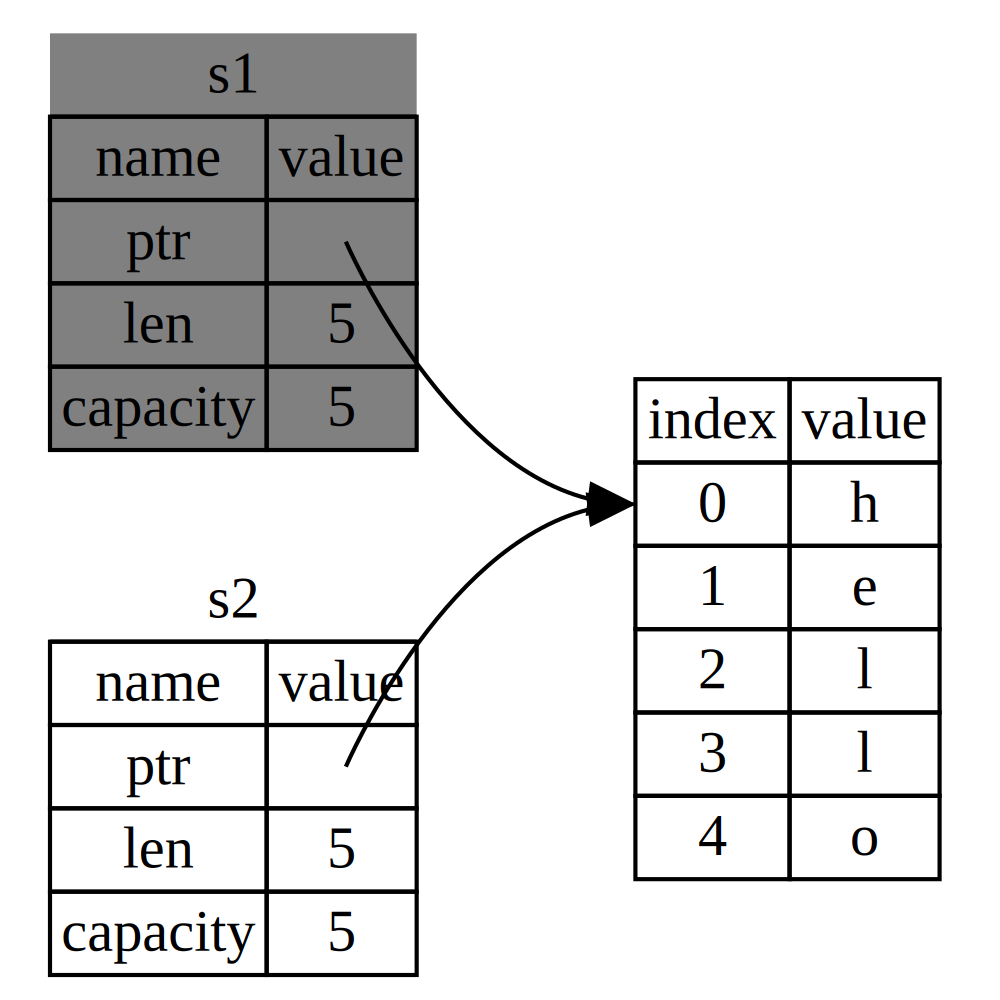
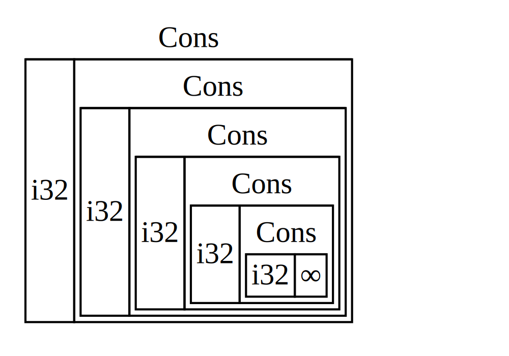
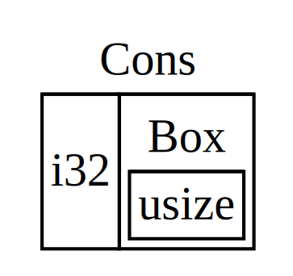
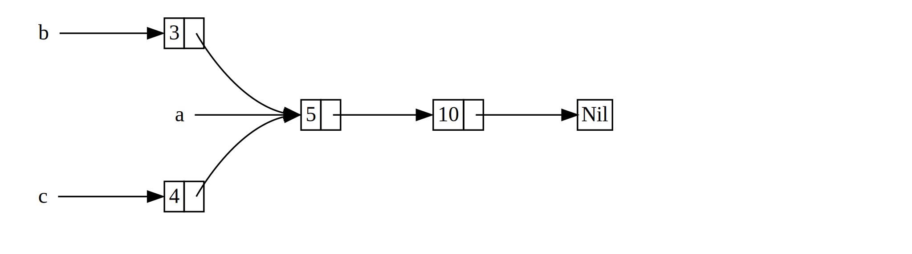
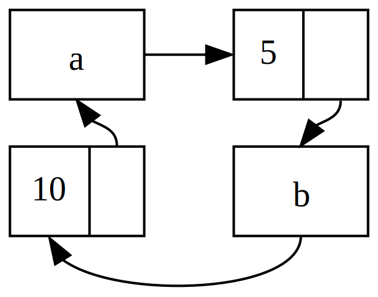

Introduction
Welcome to “The Rust Programming Language,” an introductory book about Rust. Rust is a programming language that’s focused on safety, speed, and concurrency. Its design lets you create programs that have the performance and control of a low-level language, but with the powerful abstractions of a high-level language. These properties make Rust suitable for programmers who have experience in languages like C and are looking for a safer alternative, as well as those from languages like Python who are looking for ways to write code that performs better without sacrificing expressiveness.
Rust performs the majority of its safety checks and memory management decisions at compile time, so that your program's runtime performance isn't impacted. This makes it useful in a number of use cases that other languages aren’t good at: programs with predictable space and time requirements, embedding in other languages, and writing low-level code, like device drivers and operating systems. It's also great for web applications: it powers the Rust package registry site, crates.io! We're excited to see what you create with Rust.
This book is written for a reader who already knows how to program in at least one programming language. After reading this book, you should be comfortable writing Rust programs. We’ll be learning Rust through small, focused examples that build on each other to demonstrate how to use various features of Rust as well as how they work behind the scenes.
Contributing to the book
This book is open source. If you find an error, please don’t hesitate to file an issue or send a pull request on GitHub. Please see CONTRIBUTING.md for more details.
Installation
The first step to using Rust is to install it. You’ll need an internet connection to run the commands in this chapter, as we’ll be downloading Rust from the internet.
We’ll be showing off a number of commands using a terminal, and those lines all
start with $. You don't need to type in the $ character; they are there to indicate
the start of each command. You’ll see many tutorials and examples around the web
that follow this convention: $ for commands run as a regular user, and #
for commands you should be running as an administrator. Lines that don't start
with $ are typically showing the output of the previous command.
Installing on Linux or Mac
If you're on Linux or a Mac, all you need to do is open a terminal and type this:
$ curl https://sh.rustup.rs -sSf | sh
This will download a script and start the installation. You may be prompted for your password. If it all goes well, you’ll see this appear:
Rust is installed now. Great!
Of course, if you disapprove of the curl | sh pattern, you can download, inspect
and run the script however you like.
Installing on Windows
On Windows, go to https://rustup.rs and follow the instructions to download rustup-init.exe. Run that and follow the rest of the instructions it gives you.
The rest of the Windows-specific commands in the book will assume that you are
using cmd as your shell. If you use a different shell, you may be able to run
the same commands that Linux and Mac users do. If neither work, consult the
documentation for the shell you are using.
Custom installations
If you have reasons for preferring not to use rustup.rs, please see the Rust installation page for other options.
Updating
Once you had Rust installed, updating to the latest version is easy. From your shell, run the update script:
$ rustup update
Uninstalling
Uninstalling Rust is as easy as installing it. From your shell, run the uninstall script:
$ rustup self uninstall
Troubleshooting
If you've got Rust installed, you can open up a shell, and type this:
$ rustc --version
You should see the version number, commit hash, and commit date in a format similar to this for the latest stable version at the time you install:
rustc x.y.z (abcabcabc yyyy-mm-dd)
If you see this, Rust has been installed successfully! Congrats!
If you don't and you're on Windows, check that Rust is in your %PATH% system
variable.
If it still isn't working, there are a number of places where you can get help. The easiest is the #rust IRC channel on irc.mozilla.org, which you can access through Mibbit. Go to that address, and you'll be chatting with other Rustaceans (a silly nickname we call ourselves) who can help you out. Other great resources include the Users forum and Stack Overflow.
Local documentation
The installer also includes a copy of the documentation locally, so you can
read it offline. Run rustup doc to open the local documentation in your
browser.
Any time there's a type or function provided by the standard library and you're not sure what it does, use the API documentation to find out!
Hello, World!
Now that you have Rust installed, let’s write your first Rust program. It's traditional when learning a new language to write a little program to print the text “Hello, world!” to the screen, and in this section, we'll follow that tradition.
Note: This book assumes basic familiarity with the command line. Rust itself makes no specific demands about your editing, tooling, or where your code lives, so if you prefer an IDE to the command line, feel free to use your favorite IDE.
Creating a Project Directory
First, make a directory to put your Rust code in. Rust doesn't care where your code lives, but for this book, we'd suggest making a projects directory in your home directory and keeping all your projects there. Open a terminal and enter the following commands to make a directory for this particular project:
Linux and Mac:
$ mkdir ~/projects
$ cd ~/projects
$ mkdir hello_world
$ cd hello_world
Windows:
> mkdir %USERPROFILE%\projects
> cd %USERPROFILE%\projects
> mkdir hello_world
> cd hello_world
Writing and Running a Rust Program
Next, make a new source file and call it main.rs. Rust files always end with the .rs extension. If you’re using more than one word in your filename, use an underscore to separate them. For example, you'd use hello_world.rs rather than helloworld.rs.
Now open the main.rs file you just created, and type the following code:
Filename: main.rs
fn main() { println!("Hello, world!"); }
Save the file, and go back to your terminal window. On Linux or OSX, enter the following commands:
$ rustc main.rs
$ ./main
Hello, world!
On Windows, run .\main.exe instead of ./main. Regardless of your
operating system, you should see the string Hello, world! print to the
terminal. If you did, then congratulations! You've officially written a Rust
program. That makes you a Rust programmer! Welcome.
Anatomy of a Rust Program
Now, let’s go over what just happened in your "Hello, world!" program in detail. Here's the first piece of the puzzle:
fn main() { }
These lines define a function in Rust. The main function is special: it's
the first thing that is run for every executable Rust program. The first line
says, “I’m declaring a function named main that has no parameters and returns
nothing.” If there were parameters, their names would go inside the
parentheses, ( and ).
Also note that the function body is wrapped in curly braces, { and }. Rust
requires these around all function bodies. It's considered good style to put
the opening curly brace on the same line as the function declaration, with one
space in between.
Inside the main function:
# #![allow(unused_variables)] # #fn main() { println!("Hello, world!"); #}
This line does all of the work in this little program: it prints text to the screen. There are a number of details to notice here. The first is that Rust style is to indent with four spaces, not a tab.
The second important part is println!. This is calling a Rust macro,
which is how metaprogramming is done in Rust. If it were calling a function
instead, it would look like this: println (without the !). We'll discuss
Rust macros in more detail in Appendix E, but for now you just need to know
that when you see a ! that means that you’re calling a macro instead of a
normal function.
Next is "Hello, world!" which is a string. We pass this string as an
argument to println!, which prints the string to the screen. Easy enough!
The line ends with a semicolon (;). The ; indicates that this expression is
over, and the next one is ready to begin. Most lines of Rust code end with a
;.
Compiling and Running Are Separate Steps
In "Writing and Running a Rust Program", we showed you how to run a newly created program. We'll break that process down and examine each step now.
Before running a Rust program, you have to compile it. You can use the Rust
compiler by entering the rustc command and passing it the name of your source
file, like this:
$ rustc main.rs
If you come from a C or C++ background, you'll notice that this is similar to
gcc or clang. After compiling successfully, Rust should output a binary
executable, which you can see on Linux or OSX by entering the ls command in
your shell as follows:
$ ls
main main.rs
On Windows, you'd enter:
> dir /B %= the /B option says to only show the file names =%
main.exe
main.rs
This shows we have two files: the source code, with the .rs extension, and the executable (main.exe on Windows, main everywhere else). All that's left to do from here is run the main or main.exe file, like this:
$ ./main # or .\main.exe on Windows
If main.rs were your "Hello, world!" program, this would print Hello, world! to your terminal.
If you come from a dynamic language like Ruby, Python, or JavaScript, you may
not be used to compiling and running a program being separate steps. Rust is an
ahead-of-time compiled language, which means that you can compile a program,
give it to someone else, and they can run it even without having Rust
installed. If you give someone a .rb, .py, or .js file, on the other
hand, they need to have a Ruby, Python, or JavaScript implementation installed
(respectively), but you only need one command to both compile and run your
program. Everything is a tradeoff in language design.
Just compiling with rustc is fine for simple programs, but as your project
grows, you'll want to be able to manage all of the options your project has
and make it easy to share your code with other people and projects. Next, we'll
introduce you to a tool called Cargo, which will help you write real-world Rust
programs.
Hello, Cargo!
Cargo is Rust’s build system and package manager, and Rustaceans use Cargo to manage their Rust projects because it makes a lot of tasks easier. For example, Cargo takes care of building your code, downloading the libraries your code depends on, and building those libraries. We call libraries your code needs dependencies.
The simplest Rust programs, like the one we've written so far, don’t have any dependencies, so right now, you'd only be using the part of Cargo that can take care of building your code. As you write more complex Rust programs, you’ll want to add dependencies, and if you start off using Cargo, that will be a lot easier to do.
As the vast, vast majority of Rust projects use Cargo, we will assume that you’re using it for the rest of the book. Cargo comes installed with Rust itself, if you used the official installers as covered in the Installation chapter. If you installed Rust through some other means, you can check if you have Cargo installed by typing the following into your terminal:
$ cargo --version
If you see a version number, great! If you see an error like command not found, then you should look at the documentation for your method of
installation to determine how to install Cargo separately.
Creating a Project with Cargo
Let's create a new project using Cargo and look at how it differs from our
project in hello_world. Go back to your projects directory (or wherever you
decided to put your code):
Linux and Mac:
$ cd ~/projects
Windows:
> cd %USERPROFILE%\projects
And then on any operating system run:
$ cargo new hello_cargo --bin
$ cd hello_cargo
We passed the --bin argument to cargo new because our goal is to make an
executable application, as opposed to a library. Executables are binary
executable files often called just binaries. We've given hello_cargo
as the name for our project, and Cargo creates its files in a directory
of the same name that we can then go into.
If we list the files in the hello_cargo directory, we can see that Cargo has
generated two files and one directory for us: a Cargo.toml and a src
directory with a main.rs file inside. It has also initialized a new git
repository in the hello_cargo directory for us, along with a .gitignore
file; you can change this to use a different version control system, or no
version control system, by using the --vcs flag.
Open up Cargo.toml in your text editor of choice. It should look something like this:
Filename: Cargo.toml
[package]
name = "hello_cargo"
version = "0.1.0"
authors = ["Your Name <you@example.com>"]
[dependencies]
This file is in the TOML (Tom's Obvious, Minimal Language) format. TOML is similar to INI but has some extra goodies and is used as Cargo’s configuration format.
The first line, [package], is a section heading that indicates that the
following statements are configuring a package. As we add more information to
this file, we’ll add other sections.
The next three lines set the three bits of configuration that Cargo needs to see in order to know that it should compile your program: its name, what version it is, and who wrote it. Cargo gets your name and email information from your environment. If it’s not correct, go ahead and fix that and save the file.
The last line, [dependencies], is the start of a section for you to list any
crates (which is what we call packages of Rust code) that your project will
depend on so that Cargo knows to download and compile those too. We won't need
any other crates for this project, but we will in the guessing game tutorial in
the next chapter.
Now let's look at src/main.rs:
Filename: src/main.rs
fn main() { println!("Hello, world!"); }
Cargo has generated a "Hello World!" for you, just like the one we wrote earlier! So that part is the same. The differences between our previous project and the project generated by Cargo that we've seen so far are:
- Our code goes in the src directory
- The top level contains a Cargo.toml configuration file
Cargo expects your source files to live inside the src directory so that the top-level project directory is just for READMEs, license information, configuration files, and anything else not related to your code. In this way, using Cargo helps you keep your projects nice and tidy. There's a place for everything, and everything is in its place.
If you started a project that doesn't use Cargo, as we did with our project in the hello_world directory, you can convert it to a project that does use Cargo by moving your code into the src directory and creating an appropriate Cargo.toml.
Building and Running a Cargo Project
Now let's look at what's different about building and running your Hello World program through Cargo! To do so, enter the following commands:
$ cargo build
Compiling hello_cargo v0.1.0 (file:///projects/hello_cargo)
This should have created an executable file in target/debug/hello_cargo (or target\debug\hello_cargo.exe on Windows), which you can run with this command:
$ ./target/debug/hello_cargo # or .\target\debug\hello_cargo.exe on Windows
Hello, world!
Bam! If all goes well, Hello, world! should print to the terminal once more.
Running cargo build for the first time also causes Cargo to create a new file
at the top level called Cargo.lock, which looks like this:
Filename: Cargo.lock
[root]
name = "hello_cargo"
version = "0.1.0"
Cargo uses the Cargo.lock to keep track of dependencies in your application. This project doesn't have dependencies, so the file is a bit sparse. Realistically, you won't ever need to touch this file yourself; just let Cargo handle it.
We just built a project with cargo build and ran it with
./target/debug/hello_cargo, but we can also use cargo run to compile
and then run:
$ cargo run
Running `target/debug/hello_cargo`
Hello, world!
Notice that this time, we didn't see the output telling us that Cargo was
compiling hello_cargo. Cargo figured out that the files haven’t changed, so
it just ran the binary. If you had modified your source code, Cargo would have
rebuilt the project before running it, and you would have seen something like
this:
$ cargo run
Compiling hello_cargo v0.1.0 (file:///projects/hello_cargo)
Running `target/debug/hello_cargo`
Hello, world!
So a few more differences we've now seen:
- Instead of using
rustc, build a project usingcargo build(or build and run it in one step withcargo run) - Instead of the result of the build being put in the same directory as our code, Cargo will put it in the target/debug directory.
The other advantage of using Cargo is that the commands are the same no matter what operating system you're on, so at this point we will no longer be providing specific instructions for Linux and Mac versus Windows.
Building for Release
When your project is finally ready for release, you can use cargo build --release to compile your project with optimizations. This will create an
executable in target/release instead of target/debug. These optimizations
make your Rust code run faster, but turning them on makes your program take
longer to compile. This is why there are two different profiles: one for
development when you want to be able to rebuild quickly and often, and one for
building the final program you’ll give to a user that won't be rebuilt and
that we want to run as fast as possible. If you're benchmarking the running
time of your code, be sure to run cargo build --release and benchmark with
the executable in target/release.
Cargo as Convention
With simple projects, Cargo doesn't provide a whole lot of value over just
using rustc, but it will prove its worth as you continue. With complex
projects composed of multiple crates, it’s much easier to let Cargo coordinate
the build. With Cargo, you can just run cargo build, and it should work the
right way. Even though this project is simple, it now uses much of the real
tooling you’ll use for the rest of your Rust career. In fact, you can get
started with virtually all Rust projects you want to work
on with the following commands:
$ git clone someurl.com/someproject
$ cd someproject
$ cargo build
Note: If you want to look at Cargo in more detail, check out the official Cargo guide, which covers all of its features.
Guessing Game
Let’s jump into Rust by working through a hands-on project together! This
chapter introduces you to a few common Rust concepts by showing you how to use
them in a real program. You’ll learn about let, match, methods, associated
functions, using external crates, and more! The following chapters will explore
these ideas in more detail. In this chapter, you’ll practice the fundamentals.
We’ll implement a classic beginner programming problem: a guessing game. Here’s how it works: the program will generate a random integer between 1 and 100. It will then prompt the player to enter a guess. After entering a guess, it will indicate whether the guess is too low or too high. If the guess is correct, the game will print congratulations and exit.
Setting Up a New Project
To set up a new project, go to the projects directory that you created in Chapter 1, and make a new project using Cargo, like so:
$ cargo new guessing_game --bin
$ cd guessing_game
The first command, cargo new, takes the name of the project (guessing_game)
as the first argument. The --bin flag tells Cargo to make a binary project,
similar to the one in Chapter 1. The second command changes to the new
project’s directory.
Look at the generated Cargo.toml file:
Filename: Cargo.toml
[package]
name = "guessing_game"
version = "0.1.0"
authors = ["Your Name <you@example.com>"]
[dependencies]
If the author information that Cargo obtained from your environment is not correct, fix that in the file and save it again.
As you saw in Chapter 1, cargo new generates a “Hello, world!” program for
you. Check out the src/main.rs file:
Filename: src/main.rs
fn main() { println!("Hello, world!"); }
Now let’s compile this “Hello, world!” program and run it in the same step
using the cargo run command:
$ cargo run
Compiling guessing_game v0.1.0 (file:///projects/guessing_game)
Running `target/debug/guessing_game`
Hello, world!
The run command comes in handy when you need to rapidly iterate on a project,
and this game is such a project: we want to quickly test each iteration
before moving on to the next one.
Reopen the src/main.rs file. You’ll be writing all the code in this file.
Processing a Guess
The first part of the program will ask for user input, process that input, and check that the input is in the expected form. To start, we’ll allow the player to input a guess. Enter the code in Listing 2-1 into src/main.rs.
Filename: src/main.rs
use std::io;
fn main() {
println!("Guess the number!");
println!("Please input your guess.");
let mut guess = String::new();
io::stdin().read_line(&mut guess)
.expect("Failed to read line");
println!("You guessed: {}", guess);
}
Listing 2-1: Code to get a guess from the user and print it out
This code contains a lot of information, so let’s go over it bit by bit. To
obtain user input and then print the result as output, we need to bring the
io (input/output) library into scope. The io library comes from the
standard library (which is known as std):
use std::io;
By default, Rust brings only a few types into the scope of every program in
the prelude. If a type you want to use isn’t in the
prelude, you have to bring that type into scope explicitly with a use
statement. Using the std::io library provides you with a number of useful
io-related features, including the functionality to accept user input.
As you saw in Chapter 1, the main function is the entry point into the
program:
fn main() {
The fn syntax declares a new function, the () indicate there are no
parameters, and { starts the body of the function.
As you also learned in Chapter 1, println! is a macro that prints a string to
the screen:
println!("Guess the number!");
println!("Please input your guess.");
This code is just printing a prompt stating what the game is and requesting input from the user.
Storing Values with Variables
Next, we’ll create a place to store the user input, like this:
let mut guess = String::new();
Now the program is getting interesting! There’s a lot going on in this little
line. Notice that this is a let statement, which is used to create
variables. Here’s another example:
let foo = bar;
This line will create a new variable named foo and bind it to the value
bar. In Rust, variables are immutable by default. The following example shows
how to use mut before the variable name to make a variable mutable:
# #![allow(unused_variables)] # #fn main() { let foo = 5; // immutable let mut bar = 5; // mutable #}
Note: The
//syntax starts a comment that continues until the end of the line. Rust ignores everything in comments.
Now you know that let mut guess will introduce a mutable variable named
guess. On the other side of the equal sign (=) is the value that guess is
bound to, which is the result of calling String::new, a function that returns
a new instance of a String. String is a string
type provided by the standard library that is a growable, UTF-8 encoded bit of
text.
The :: syntax in the ::new line indicates that new is an associated
function of the String type. An associated function is implemented on a type,
in this case String, rather than on a particular instance of a String. Some
languages call this a static method.
This new function creates a new, empty String. You’ll find a new function
on many types, because it’s a common name for a function that makes a new value
of some kind.
To summarize, the let mut guess = String::new(); line has created a mutable
variable that is currently bound to a new, empty instance of a String. Whew!
Recall that we included the input/output functionality from the standard
library with use std::io; on the first line of the program. Now we’ll call an
associated function, stdin, on io:
io::stdin().read_line(&mut guess)
.expect("Failed to read line");
If we didn’t have the use std::io line at the beginning of the program, we
could have written this function call as std::io::stdin. The stdin function
returns an instance of std::io::Stdin, which is a
type that represents a handle to the standard input for your terminal.
The next part of the code, .read_line(&mut guess), calls the
read_line method on the standard input handle to
get input from the user. We’re also passing one argument to read_line: &mut guess.
The job of read_line is to take whatever the user types into standard input
and place that into a string, so it takes that string as an argument. The
string argument needs to be mutable so the method can change the string’s
content by adding the user input.
The & indicates that this argument is a reference, which gives you a way to
let multiple parts of your code access one piece of data without needing to
copy that data into memory multiple times. References are a complex feature,
and one of Rust’s major advantages is how safe and easy it is to use
references. You don’t need to know a lot of those details to finish this
program: Chapter 4 will explain references more thoroughly. For now, all you
need to know is that like variables, references are immutable by default.
Hence, we need to write &mut guess rather than &guess to make it mutable.
We’re not quite done with this line of code. Although it’s a single line of text, it’s only the first part of the single logical line of code. The second part is this method:
.expect("Failed to read line");
When you call a method with the .foo() syntax, it’s often wise to introduce a
newline and other whitespace to help break up long lines. We could have
written this code as:
io::stdin().read_line(&mut guess).expect("Failed to read line");
However, one long line is difficult to read, so it’s best to divide it, two lines for two method calls. Now let’s discuss what this line does.
Handling Potential Failure with the Result Type
As mentioned earlier, read_line puts what the user types into the string we’re
passing it, but it also returns a value—in this case, an
io::Result. Rust has a number of types named
Result in its standard library: a generic Result as
well as specific versions for submodules, such as io::Result.
The Result types are enumerations, often referred
to as enums. An enumeration is a type that can have a fixed set of values,
and those values are called the enum’s variants. Chapter 6 will cover enums
in more detail.
For Result, the variants are Ok or Err. Ok indicates the operation was
successful, and inside the Ok variant is the successfully generated value.
Err means the operation failed, and Err contains information about how or
why the operation failed.
The purpose of these Result types is to encode error handling information.
Values of the Result type, like any type, have methods defined on them. An
instance of io::Result has an expect method that
you can call. If this instance of io::Result is an Err value, expect will
cause the program to crash and display the message that you passed as an
argument to expect. If the read_line method returns an Err, it would
likely be the result of an error coming from the underlying operating system.
If this instance of io::Result is an Ok value, expect will take the
return value that Ok is holding and return just that value to you so you
could use it. In this case, that value is the number of bytes in what the user
entered into standard input.
If we don’t call expect, the program will compile, but we’ll get a warning:
$ cargo build
Compiling guessing_game v0.1.0 (file:///projects/guessing_game)
src/main.rs:10:5: 10:39 warning: unused result which must be used,
#[warn(unused_must_use)] on by default
src/main.rs:10 io::stdin().read_line(&mut guess);
^~~~~~~~~~~~~~~~~~~~~~~~~~~~~~~~~~
Rust warns that we haven’t used the Result value returned from read_line,
indicating that the program hasn’t handled a possible error. The right way to
suppress the warning is to actually write error handling, but since we just
want to crash this program when a problem occurs, we can use expect. You’ll
learn about recovering from errors in Chapter 9.
Printing Values with println! Placeholders
Aside from the closing curly brace, there’s only one more line to discuss in the code added so far, which is the following:
println!("You guessed: {}", guess);
This line prints out the string we saved the user’s input in. The set of {}
is a placeholder that holds a value in place. You can print more than one value
using {}: the first set of {} holds the first value listed after the format
string, the second set holds the second value, and so on. Printing out multiple
values in one call to println! would look like this:
# #![allow(unused_variables)] # #fn main() { let x = 5; let y = 10; println!("x = {} and y = {}", x, y); #}
This code would print out x = 5 and y = 10.
Testing the First Part
Let’s test the first part of the guessing game. You can run it using cargo run:
$ cargo run
Compiling guessing_game v0.1.0 (file:///projects/guessing_game)
Running `target/debug/guessing_game`
Guess the number!
Please input your guess.
6
You guessed: 6
At this point, the first part of the game is done: we’re getting input from the keyboard and then printing it.
Generating a Secret Number
Next, we need to generate a secret number that the user will try to guess. The
secret number should be different every time so the game is fun to play more
than once. Let’s use a random number between 1 and 100 so the game isn’t too
difficult. Rust doesn’t yet include random number functionality in its standard
library. However, the Rust team does provide a rand crate.
Using a Crate to Get More Functionality
Remember that a crate is a package of Rust code. The project we’ve been
building is a binary crate, which is an executable. The rand crate is a
library crate, which contains code intended to be used in other programs.
Cargo’s use of external crates is where it really shines. Before we can write
code that uses rand, we need to modify the Cargo.toml file to include the
rand crate as a dependency. Open that file now and add the following line to
the bottom beneath the [dependencies] section header that Cargo created for
you:
Filename: Cargo.toml
[dependencies]
rand = "0.3.14"
In the Cargo.toml file, everything that follows a header is part of a section
that continues until another section starts. The [dependencies] section is
where you tell Cargo which external crates your project depends on and which
versions of those crates you require. In this case, we’ll specify the rand
crate with the semantic version specifier 0.3.14. Cargo understands Semantic
Versioning (sometimes called SemVer), which is a
standard for writing version numbers. The number 0.3.14 is actually shorthand
for ^0.3.14, which means “any version that has a public API compatible with
version 0.3.14.”
Now, without changing any of the code, let’s build the project, as shown in Listing 2-2:
$ cargo build
Updating registry `https://github.com/rust-lang/crates.io-index`
Downloading rand v0.3.14
Downloading libc v0.2.14
Compiling libc v0.2.14
Compiling rand v0.3.14
Compiling guessing_game v0.1.0 (file:///projects/guessing_game)
Listing 2-2: The output from running cargo build after
adding the rand crate as a dependency
You may see different version numbers (but they will all be compatible with the code, thanks to SemVer!), and the lines may be in a different order.
Now that we have an external dependency, Cargo fetches the latest versions of everything from the registry, which is a copy of data from Crates.io. Crates.io is where people in the Rust ecosystem post their open source Rust projects for others to use.
After updating the registry, Cargo checks the [dependencies] section and
downloads any you don’t have yet. In this case, although we only listed rand
as a dependency, Cargo also grabbed a copy of libc, because rand depends on
libc to work. After downloading them, Rust compiles them and then compiles
the project with the dependencies available.
If you immediately run cargo build again without making any changes, you won’t
get any output. Cargo knows it has already downloaded and compiled the
dependencies, and you haven't changed anything about them in your Cargo.toml
file. Cargo also knows that you haven't changed anything about your code, so it
doesn't recompile that either. With nothing to do, it simply exits. If you open
up the src/main.rs file, make a trivial change, then save it and build again,
you’ll only see one line of output:
$ cargo build
Compiling guessing_game v0.1.0 (file:///projects/guessing_game)
This line shows Cargo only updates the build with your tiny change to the src/main.rs file. Your dependencies haven't changed, so Cargo knows it can reuse what it has already downloaded and compiled for those. It just rebuilds your part of the code.
The Cargo.lock File Ensures Reproducible Builds
Cargo has a mechanism that ensures you can rebuild the same artifact every time
you or anyone else builds your code: Cargo will use only the versions of the
dependencies you specified until you indicate otherwise. For example, what
happens if next week version v0.3.15 of the rand crate comes out and
contains an important bug fix but also contains a regression that will break
your code?
The answer to this problem is the Cargo.lock file, which was created the
first time you ran cargo build and is now in your guessing_game directory.
When you build a project for the first time, Cargo figures out all the
versions of the dependencies that fit the criteria and then writes them to
the Cargo.lock file. When you build your project in the future, Cargo will
see that the Cargo.lock file exists and use the versions specified there
rather than doing all the work of figuring out versions again. This lets you
have a reproducible build automatically. In other words, your project will
remain at 0.3.14 until you explicitly upgrade, thanks to the Cargo.lock
file.
Updating a Crate to Get a New Version
When you do want to update a crate, Cargo provides another command, update,
which will:
- Ignore the Cargo.lock file and figure out all the latest versions that fit your specifications in Cargo.toml.
- If that works, Cargo will write those versions to the Cargo.lock file.
But by default, Cargo will only look for versions larger than 0.3.0 and
smaller than 0.4.0. If the rand crate has released two new versions,
0.3.15 and 0.4.0, you would see the following if you ran cargo update:
$ cargo update
Updating registry `https://github.com/rust-lang/crates.io-index`
Updating rand v0.3.14 -> v0.3.15
At this point, you would also notice a change in your Cargo.lock file noting
that the version of the rand crate you are now using is 0.3.15.
If you wanted to use rand version 0.4.0 or any version in the 0.4.x
series, you’d have to update the Cargo.toml file to look like this instead:
[dependencies]
rand = "0.4.0"
The next time you run cargo build, Cargo will update the registry of crates
available and reevaluate your rand requirements according to the new version
you specified.
There’s a lot more to say about Cargo and its ecosystem that Chapter 14 will discuss, but for now, that’s all you need to know. Cargo makes it very easy to reuse libraries, so Rustaceans are able to write smaller projects that are assembled from a number of packages.
Generating a Random Number
Let’s start using rand. The next step is to update src/main.rs, as shown
in Listing 2-3:
Filename: src/main.rs
extern crate rand;
use std::io;
use rand::Rng;
fn main() {
println!("Guess the number!");
let secret_number = rand::thread_rng().gen_range(1, 101);
println!("The secret number is: {}", secret_number);
println!("Please input your guess.");
let mut guess = String::new();
io::stdin().read_line(&mut guess)
.expect("Failed to read line");
println!("You guessed: {}", guess);
}
Listing 2-3: Code changes needed in order to generate a random number
We’re adding a extern crate rand; line to the top that lets Rust know we’ll be
using that external dependency. This also does the equivalent of calling use rand, so now we can call anything in the rand crate by prefixing it with
rand::.
Next, we’re adding another use line: use rand::Rng. Rng is a trait that
defines methods that random number generators implement, and this trait must be
in scope for us to use those methods. Chapter 10 will cover traits in detail.
Also, we’re adding two more lines in the middle. The rand::thread_rng function
will give us the particular random number generator that we’re going to use:
one that is local to the current thread of execution and seeded by the
operating system. Next, we call the gen_range method on the random number
generator. This method is defined by the Rng trait that we brought into
scope with the use rand::Rng statement. The gen_range method takes two
numbers as arguments and generates a random number between them. It’s inclusive
on the lower bound but exclusive on the upper bound, so we need to specify 1
and 101 to request a number between 1 and 100.
Knowing which traits to use and which functions and methods to call from a
crate isn’t something that you’ll just know. Instructions for using a crate
are in each crate’s documentation. Another neat feature of Cargo is that you
can run the cargo doc --open command that will build documentation provided
by all of your dependencies locally and open it in your browser. If you’re
interested in other functionality in the rand crate, for example, run cargo doc --open and click rand in the sidebar on the left.
The second line that we added to the code prints the secret number. This is useful while we’re developing the program to be able to test it, but we’ll delete it from the final version. It’s not much of a game if the program prints the answer as soon as it starts!
Try running the program a few times:
$ cargo run
Compiling guessing_game v0.1.0 (file:///projects/guessing_game)
Running `target/debug/guessing_game`
Guess the number!
The secret number is: 7
Please input your guess.
4
You guessed: 4
$ cargo run
Running `target/debug/guessing_game`
Guess the number!
The secret number is: 83
Please input your guess.
5
You guessed: 5
You should get different random numbers, and they should all be numbers between 1 and 100. Great job!
Comparing the Guess to the Secret Number
Now that we have user input and a random number, we can compare them. That step is shown in Listing 2-4:
Filename: src/main.rs
extern crate rand;
use std::io;
use std::cmp::Ordering;
use rand::Rng;
fn main() {
println!("Guess the number!");
let secret_number = rand::thread_rng().gen_range(1, 101);
println!("The secret number is: {}", secret_number);
println!("Please input your guess.");
let mut guess = String::new();
io::stdin().read_line(&mut guess)
.expect("Failed to read line");
println!("You guessed: {}", guess);
match guess.cmp(&secret_number) {
Ordering::Less => println!("Too small!"),
Ordering::Greater => println!("Too big!"),
Ordering::Equal => println!("You win!"),
}
}
Listing 2-4: Handling the possible return values of comparing two numbers
The first new bit here is another use, bringing a type called
std::cmp::Ordering into scope from the standard library. Ordering is
another enum, like Result, but the variants for Ordering are Less,
Greater, and Equal. These are the three outcomes that are possible when you
compare two values.
Then we add five new lines at the bottom that use the Ordering type:
match guess.cmp(&secret_number) {
Ordering::Less => println!("Too small!"),
Ordering::Greater => println!("Too big!"),
Ordering::Equal => println!("You win!"),
}
The cmp method compares two values and can be called on anything that can be
compared. It takes a reference to whatever you want to compare with: here it’s
comparing the guess to the secret_number. cmp returns a variant of the
Ordering enum we brought into scope with the use statement. We use a
match expression to decide what to do next based on
which variant of Ordering was returned from the call to cmp with the values
in guess and secret_number.
A match expression is made up of arms. An arm consists of a pattern and
the code that should be run if the value given to the beginning of the match
expression fits that arm’s pattern. Rust takes the value given to match and
looks through each arm’s pattern in turn. The match construct and patterns
are powerful features in Rust that let you express a variety of situations your
code might encounter and helps ensure that you handle them all. These features
will be covered in detail in Chapter 6 and Chapter 18, respectively.
Let’s walk through an example of what would happen with the match expression
used here. Say that the user has guessed 50, and the randomly generated secret
number this time is 38. When the code compares 50 to 38, the cmp method will
return Ordering::Greater, because 50 is greater than 38. Ordering::Greater
is the value that the match expression gets. It looks at the first arm’s
pattern, Ordering::Less, but the value Ordering::Greater does not match
Ordering::Less, so it ignores the code in that arm and moves to the next arm.
The next arm’s pattern, Ordering::Greater, does match
Ordering::Greater! The associated code in that arm will execute and print
Too big! to the screen. The match expression ends because it has no need to
look at the last arm in this particular scenario.
However, the code in Listing 2-4 won’t compile yet. Let’s try it:
$ cargo build
Compiling guessing_game v0.1.0 (file:///projects/guessing_game)
error[E0308]: mismatched types
--> src/main.rs:23:21
|
23 | match guess.cmp(&secret_number) {
| ^^^^^^^^^^^^^^ expected struct `std::string::String`, found integral variable
|
= note: expected type `&std::string::String`
= note: found type `&{integer}`
error: aborting due to previous error
Could not compile `guessing_game`.
The core of the error states that there are mismatched types. Rust has a
strong, static type system. However, it also has type inference. When we wrote
let guess = String::new(), Rust was able to infer that guess should be a
String and didn’t make us write the type. The secret_number, on the other
hand, is a number type. A few number types can have a value between 1 and 100:
i32, a 32-bit number; u32, an unsigned 32-bit number; i64, a 64-bit
number; as well as others. Rust defaults to an i32, which is the type of
secret_number unless we add type information elsewhere that would cause Rust
to infer a different numerical type. The reason for the error is that Rust will
not compare a string and a number type.
Ultimately, we want to convert the String the program reads as input into a
real number type so we can compare it to the guess numerically. We can do
that by adding the following two lines to the main function body:
Filename: src/main.rs
extern crate rand;
use std::io;
use std::cmp::Ordering;
use rand::Rng;
fn main() {
println!("Guess the number!");
let secret_number = rand::thread_rng().gen_range(1, 101);
println!("The secret number is: {}", secret_number);
println!("Please input your guess.");
let mut guess = String::new();
io::stdin().read_line(&mut guess)
.expect("Failed to read line");
let guess: u32 = guess.trim().parse()
.expect("Please type a number!");
println!("You guessed: {}", guess);
match guess.cmp(&secret_number) {
Ordering::Less => println!("Too small!"),
Ordering::Greater => println!("Too big!"),
Ordering::Equal => println!("You win!"),
}
}
The two new lines are:
let guess: u32 = guess.trim().parse()
.expect("Please type a number!");
We create a variable named guess. But wait, doesn’t the program
already have a variable named guess? It does, but Rust allows us to
shadow the previous value of guess with a new one. This feature is often
used in similar situations in which you want to convert a value from one type
to another type. Shadowing lets us reuse the guess variable name rather than
forcing us to create two unique variables, like guess_str and guess for
example. (Chapter 3 covers shadowing in more detail.)
We bind guess to the expression guess.trim().parse(). The guess in the
expression refers to the original guess that was a String with the input in
it. The trim method on a String instance will eliminate any whitespace at
the beginning and end. u32 can only contain numerical characters, but the
user must press the Return key to satisfy read_line. When the user presses
Return, a newline character is added to the string. For example, if the user
types 5 and presses return, guess looks like this: 5\n. The \n represents
“newline,” the return key. The trim method eliminates \n, resulting in just
5.
The parse method on strings parses a string into some
kind of number. Because this method can parse a variety of number types, we
need to tell Rust the exact number type we want by using let guess: u32. The
colon (:) after guess tells Rust we’ll annotate the variable’s type. Rust
has a few built-in number types; the u32 seen here is an unsigned, 32-bit
integer. It’s a good default choice for a small positive number. You’ll learn
about other number types in Chapter 3. Additionally, the u32 annotation in
this example program and the comparison with secret_number means that Rust
will infer that secret_number should be a u32 as well. So now the
comparison will be between two values of the same type!
The call to parse could easily cause an error. If, for example, the string
contained A👍%, there would be no way to convert that to a number. Because it
might fail, the parse method returns a Result type, much like the
read_line method does as discussed earlier in “Handling Potential Failure
with the Result Type”. We’ll treat this Result the same way by
using the expect method again. If parse returns an Err Result variant
because it couldn’t create a number from the string, the expect call will
crash the game and print the message we give it. If parse can successfully
convert the string to a number, it will return the Ok variant of Result,
and expect will return the number that we want from the Ok value.
Let’s run the program now!
$ cargo run
Compiling guessing_game v0.1.0 (file:///projects/guessing_game)
Running `target/guessing_game`
Guess the number!
The secret number is: 58
Please input your guess.
76
You guessed: 76
Too big!
Nice! Even though spaces were added before the guess, the program still figured out that the user guessed 76. Run the program a few times to verify the different behavior with different kinds of input: guess the number correctly, guess a number that is too high, and guess a number that is too low.
We have most of the game working now, but the user can make only one guess. Let’s change that by adding a loop!
Allowing Multiple Guesses with Looping
The loop keyword gives us an infinite loop. Add that now to give users more
chances at guessing the number:
Filename: src/main.rs
extern crate rand;
use std::io;
use std::cmp::Ordering;
use rand::Rng;
fn main() {
println!("Guess the number!");
let secret_number = rand::thread_rng().gen_range(1, 101);
println!("The secret number is: {}", secret_number);
loop {
println!("Please input your guess.");
let mut guess = String::new();
io::stdin().read_line(&mut guess)
.expect("Failed to read line");
let guess: u32 = guess.trim().parse()
.expect("Please type a number!");
println!("You guessed: {}", guess);
match guess.cmp(&secret_number) {
Ordering::Less => println!("Too small!"),
Ordering::Greater => println!("Too big!"),
Ordering::Equal => println!("You win!"),
}
}
}
As you can see, we’ve moved everything into a loop from the guess input prompt onward. Be sure to indent those lines another four spaces each, and run the program again. Notice that there is a new problem because the program is doing exactly what we told it to do: ask for another guess forever! It doesn’t seem like the user can quit!
The user could always halt the program by using the keyboard shortcut Ctrl-C.
But there’s another way to escape this insatiable monster that we mentioned in
the parse discussion in “Comparing the Guess to the Secret Number”: if the user
enters a non-number answer, the program will crash. The user can take advantage
of that in order to quit, as shown here:
$ cargo run
Compiling guessing_game v0.1.0 (file:///projects/guessing_game)
Running `target/guessing_game`
Guess the number!
The secret number is: 59
Please input your guess.
45
You guessed: 45
Too small!
Please input your guess.
60
You guessed: 60
Too big!
Please input your guess.
59
You guessed: 59
You win!
Please input your guess.
quit
thread 'main' panicked at 'Please type a number!: ParseIntError { kind: InvalidDigit }', src/libcore/result.rs:785
note: Run with `RUST_BACKTRACE=1` for a backtrace.
error: Process didn't exit successfully: `target/debug/guess` (exit code: 101)
Typing quit actually quits the game, but so will any other non-number input.
However, this is suboptimal to say the least. We want the game to automatically
stop when the correct number is guessed.
Quitting After a Correct Guess
Let’s program the game to quit when the user wins by adding a break:
Filename: src/main.rs
extern crate rand;
use std::io;
use std::cmp::Ordering;
use rand::Rng;
fn main() {
println!("Guess the number!");
let secret_number = rand::thread_rng().gen_range(1, 101);
println!("The secret number is: {}", secret_number);
loop {
println!("Please input your guess.");
let mut guess = String::new();
io::stdin().read_line(&mut guess)
.expect("Failed to read line");
let guess: u32 = guess.trim().parse()
.expect("Please type a number!");
println!("You guessed: {}", guess);
match guess.cmp(&secret_number) {
Ordering::Less => println!("Too small!"),
Ordering::Greater => println!("Too big!"),
Ordering::Equal => {
println!("You win!");
break;
}
}
}
}
By adding the break line after You win!, the program will exit the loop
when the user guesses the secret number correctly. Exiting the loop also means
exiting the program, because the loop is the last part of main.
Handling Invalid Input
To further refine the game’s behavior, rather than crashing the program when
the user inputs a non-number, let’s make the game ignore a non-number so the
user can continue guessing. We can do that by altering the line where guess is
converted from a String to a u32:
let guess: u32 = match guess.trim().parse() {
Ok(num) => num,
Err(_) => continue,
};
Switching from an expect call to a match expression is how you generally
move from crash on error to actually handling the error. Remember that parse
returns a Result type, and Result is an enum that has the variants Ok or
Err. We’re using a match expression here, like we did with the Ordering
result of the cmp method.
If parse is able to successfully turn the string into a number, it will return
an Ok value that contains the resulting number. That Ok value will match the
first arm’s pattern, and the match expression will just return the num value
that parse produced and put inside the Ok value. That number will end up
right where we want it in the new guess variable we’re creating.
If parse is not able to turn the string into a number, it will return an
Err value that contains more information about the error. The Err value
does not match the Ok(num) pattern in the first match arm, but it does match
the Err(_) pattern in the second arm. The _ is a catchall value; in this
example, we’re saying we want to match all Err values, no matter what
information they have inside them. So the program will execute the second arm’s
code, continue, which means to go to the next iteration of the loop and ask
for another guess. So effectively, the program ignores all errors that parse
might encounter!
Now everything in the program should work as expected. Let’s try it by running
cargo run:
$ cargo run
Compiling guessing_game v0.1.0 (file:///projects/guessing_game)
Running `target/guessing_game`
Guess the number!
The secret number is: 61
Please input your guess.
10
You guessed: 10
Too small!
Please input your guess.
99
You guessed: 99
Too big!
Please input your guess.
foo
Please input your guess.
61
You guessed: 61
You win!
Awesome! With one tiny final tweak, we will finish the guessing game: recall
that the program is still printing out the secret number. That worked well for
testing, but it ruins the game. Let’s delete the println! that outputs the
secret number. Listing 2-5 shows the final code:
Filename: src/main.rs
extern crate rand;
use std::io;
use std::cmp::Ordering;
use rand::Rng;
fn main() {
println!("Guess the number!");
let secret_number = rand::thread_rng().gen_range(1, 101);
loop {
println!("Please input your guess.");
let mut guess = String::new();
io::stdin().read_line(&mut guess)
.expect("Failed to read line");
let guess: u32 = match guess.trim().parse() {
Ok(num) => num,
Err(_) => continue,
};
println!("You guessed: {}", guess);
match guess.cmp(&secret_number) {
Ordering::Less => println!("Too small!"),
Ordering::Greater => println!("Too big!"),
Ordering::Equal => {
println!("You win!");
break;
}
}
}
}
Listing 2-5: Complete code of the guessing game
Summary
At this point, you’ve successfully built the guessing game! Congratulations!
This project was a hands-on way to introduce you to many new Rust concepts:
let, match, methods, associated functions, using external crates, and more.
In the next few chapters, you’ll learn about these concepts in more detail.
Chapter 3 covers concepts that most programming languages have, such as
variables, data types, and functions, and shows how to use them in Rust.
Chapter 4 explores ownership, which is a Rust feature that is most different
from other languages. Chapter 5 discusses structs and method syntax, and
Chapter 6 endeavors to explain enums.
Common Programming Concepts
This chapter covers concepts that appear in almost every programming language and how they work in Rust. Many programming languages have much in common at their core. None of the concepts presented in this chapter are unique to Rust, but we’ll discuss them in the context of Rust and explain their conventions.
Specifically, you’ll learn about variables, basic types, functions, comments, and control flow. These foundations will be in every Rust program, and learning them early will give you a strong core to start from.
Keywords
The Rust language has a set of keywords that have been reserved for use by the language only, much like other languages do. Keep in mind that you cannot use these words as names of variables or functions. Most of the keywords have special meanings, and you’ll be using them to do various tasks in your Rust programs; a few have no current functionality associated with them but have been reserved for functionality that might be added to Rust in the future. You can find a list of the keywords in Appendix A.
Variables and Mutability
As mentioned in Chapter 2, by default variables are immutable. This is one of many nudges in Rust that encourages you to write your code in a way that takes advantage of the safety and easy concurrency that Rust offers. However, you still have the option to make your variables mutable. Let’s explore how and why Rust encourages you to favor immutability, and why you might want to opt out.
When a variable is immutable, that means once a value is bound to a name, you
can’t change that value. To illustrate, let’s generate a new project called
variables in your projects directory by using cargo new --bin variables.
Then, in your new variables directory, open src/main.rs and replace its code with the following:
Filename: src/main.rs
fn main() {
let x = 5;
println!("The value of x is: {}", x);
x = 6;
println!("The value of x is: {}", x);
}
Save and run the program using cargo run. You should receive an error
message, as shown in this output:
error[E0384]: re-assignment of immutable variable `x`
--> src/main.rs:4:5
|
2 | let x = 5;
| - first assignment to `x`
3 | println!("The value of x is: {}", x);
4 | x = 6;
| ^^^^^ re-assignment of immutable variable
This example shows how the compiler helps you find errors in your programs.
Even though compiler errors can be frustrating, they only mean your program
isn’t safely doing what you want it to do yet; they do not mean that you’re
not a good programmer! Experienced Rustaceans still get compiler errors. The
error indicates that the cause of the error is re-assignment of immutable variable, because we tried to assign a second value to the immutable x
variable.
It’s important that we get compile-time errors when we attempt to change a value that we previously designated as immutable because this very situation can lead to bugs. If one part of our code operates on the assumption that a value will never change and another part of our code changes that value, it’s possible that the first part of the code won’t do what it was designed to do. This cause of bugs can be difficult to track down after the fact, especially when the second piece of code changes the value only sometimes.
In Rust the compiler guarantees that when we state that a value won’t change, it really won’t change. That means that when you’re reading and writing code, you don’t have to keep track of how and where a value might change, which can make code easier to reason about.
But mutability can be very useful. Variables are immutable only by default; we
can make them mutable by adding mut in front of the variable name. In
addition to allowing this value to change, it conveys intent to future readers
of the code by indicating that other parts of the code will be changing this
variable value.
For example, change src/main.rs to the following:
Filename: src/main.rs
fn main() { let mut x = 5; println!("The value of x is: {}", x); x = 6; println!("The value of x is: {}", x); }
When we run this program, we get the following:
$ cargo run
Compiling variables v0.1.0 (file:///projects/variables)
Running `target/debug/variables`
The value of x is: 5
The value of x is: 6
Using mut, we’re allowed to change the value that x binds to from 5 to
6. In some cases, you’ll want to make a variable mutable because it makes the
code more convenient to write than an implementation that only uses immutable
variables.
There are multiple trade-offs to consider, in addition to the prevention of bugs. For example, in cases where you’re using large data structures, mutating an instance in place may be faster than copying and returning newly allocated instances. With smaller data structures, creating new instances and writing in a more functional programming style may be easier to reason about, so the lower performance might be a worthwhile penalty for gaining that clarity.
Differences Between Variables and Constants
Being unable to change the value of a variable might have reminded you of another programming concept that most other languages have: constants. Like immutable variables, constants are also values that are bound to a name and are not allowed to change, but there are a few differences between constants and variables.
First, we aren’t allowed to use mut with constants: constants aren't only
immutable by default, they're always immutable.
We declare constants using the const keyword instead of the let keyword,
and the type of the value must be annotated. We're about to cover types and
type annotations in the next section, “Data Types,” so don't worry about the
details right now, just know that we must always annotate the type.
Constants can be declared in any scope, including the global scope, which makes them useful for values that many parts of code need to know about.
The last difference is that constants may only be set to a constant expression, not the result of a function call or any other value that could only be computed at runtime.
Here's an example of a constant declaration where the constant's name is
MAX_POINTS and its value is set to 100,000. (Rust constant naming convention
is to use all upper case with underscores between words):
# #![allow(unused_variables)] # #fn main() { const MAX_POINTS: u32 = 100_000; #}
Constants are valid for the entire time a program runs, within the scope they were declared in, making them a useful choice for values in your application domain that multiple part of the program might need to know about, such as the maximum number of points any player of a game is allowed to earn or the speed of light.
Naming hardcoded values used throughout your program as constants is useful in conveying the meaning of that value to future maintainers of the code. It also helps to have only one place in your code you would need to change if the hardcoded value needed to be updated in the future.
Shadowing
As we saw in the guessing game tutorial in Chapter 2, we can declare new
variables with the same name as a previous variables, and the new variable
shadows the previous variable. Rustaceans say that the first variable is
shadowed by the second, which means that the second variable’s value is what
we’ll see when we use the variable. We can shadow a variable by using the same
variable’s name and repeating the use of the let keyword as follows:
Filename: src/main.rs
fn main() { let x = 5; let x = x + 1; let x = x * 2; println!("The value of x is: {}", x); }
This program first binds x to a value of 5. Then it shadows x by
repeating let x =, taking the original value and adding 1 so the value of
x is then 6. The third let statement also shadows x, taking the
previous value and multiplying it by 2 to give x a final value of 12.
When you run this program, it will output the following:
$ cargo run
Compiling variables v0.1.0 (file:///projects/variables)
Running `target/debug/variables`
The value of x is: 12
This is different than marking a variable as mut, because unless we use the
let keyword again, we’ll get a compile-time error if we accidentally try to
reassign to this variable. We can perform a few transformations on a value but
have the variable be immutable after those transformations have been completed.
The other difference between mut and shadowing is that because we’re
effectively creating a new variable when we use the let keyword again, we can
change the type of the value, but reuse the same name. For example, say our
program asks a user to show how many spaces they want between some text by
inputting space characters, but we really want to store that input as a number:
# #![allow(unused_variables)] # #fn main() { let spaces = " "; let spaces = spaces.len(); #}
This construct is allowed because the first spaces variable is a string type,
and the second spaces variable, which is a brand-new variable that happens to
have the same name as the first one, is a number type. Shadowing thus spares us
from having to come up with different names, like spaces_str and
spaces_num; instead, we can reuse the simpler spaces name. However, if we
try to use mut for this, as shown here:
let mut spaces = " ";
spaces = spaces.len();
we’ll get a compile-time error because we’re not allowed to mutate a variable’s type:
error[E0308]: mismatched types
--> src/main.rs:3:14
|
3 | spaces = spaces.len();
| ^^^^^^^^^^^^ expected &str, found usize
|
= note: expected type `&str`
found type `usize`
Now that we’ve explored how variables work, let’s look at more data types they can have.
Data Types
Every value in Rust is of a certain type, which tells Rust what kind of data is being specified so it knows how to work with that data. In this section, we’ll look at a number of types that are built into the language. We split the types into two subsets: scalar and compound.
Throughout this section, keep in mind that Rust is a statically typed
language, which means that it must know the types of all variables at compile
time. The compiler can usually infer what type we want to use based on the
value and how we use it. In cases when many types are possible, such as when we
converted a String to a numeric type using parse in Chapter 2, we must add
a type annotation, like this:
# #![allow(unused_variables)] # #fn main() { let guess: u32 = "42".parse().expect("Not a number!"); #}
If we don’t add the type annotation here, Rust will display the following error, which means the compiler needs more information from us to know which possible type we want to use:
error[E0282]: unable to infer enough type information about `_`
--> src/main.rs:2:9
|
2 | let guess = "42".parse().expect("Not a number!");
| ^^^^^ cannot infer type for `_`
|
= note: type annotations or generic parameter binding required
You’ll see different type annotations as we discuss the various data types.
Scalar Types
A scalar type represents a single value. Rust has four primary scalar types: integers, floating-point numbers, booleans, and characters. You’ll likely recognize these from other programming languages, but let’s jump into how they work in Rust.
Integer Types
An integer is a number without a fractional component. We used one integer
type earlier in this chapter, the i32 type. This type declaration indicates
that the value it’s associated with should be a signed integer (hence the i,
as opposed to a u for unsigned) that takes up 32 bits of space. Table 3-1
shows the built-in integer types in Rust. Each variant in the Signed and
Unsigned columns (for example, i32) can be used to declare the type of an
integer value.
Table 3-1: Integer Types in Rust
| Length | Signed | Unsigned |
| 8-bit | i8 | u8 |
| 16-bit | i16 | u16 |
| 32-bit | i32 | u32 |
| 64-bit | i64 | u64 |
| arch | isize | usize |
Each variant can be either signed or unsigned and has an explicit size. Signed and unsigned refers to whether it’s possible for the number to be negative or positive; in other words, whether the number needs to have a sign with it (signed) or whether it will only ever be positive and can therefore be represented without a sign (unsigned). It’s like writing numbers on paper: when the sign matters, a number is shown with a plus sign or a minus sign; however, when it’s safe to assume the number is positive, it’s shown with no sign. Signed numbers are stored using two’s complement representation (if you’re unsure what this is, you can search for it online; an explanation is outside the scope of this book).
Each signed variant can store numbers from -(2n - 1) to 2n -
1 - 1 inclusive, where n is the number of bits that variant uses. So an
i8 can store numbers from -(27) to 27 - 1, which equals
-128 to 127. Unsigned variants can store numbers from 0 to 2n - 1,
so a u8 can store numbers from 0 to 28 - 1, which equals 0 to 255.
Additionally, the isize and usize types depend on the kind of computer your
program is running on: 64-bits if you’re on a 64-bit architecture and 32-bits
if you’re on a 32-bit architecture.
You can write integer literals in any of the forms shown in Table 3-2. Note
that all number literals except the byte literal allow a type suffix, such as
57u8, and _ as a visual separator, such as 1_000.
Table 3-2: Integer Literals in Rust
| Number literals | Example |
| Decimal | 98_222 |
| Hex | 0xff |
| Octal | 0o77 |
| Binary | 0b1111_0000 |
Byte (u8 only) | b'A' |
So how do you know which type of integer to use? If you’re unsure, Rust’s
defaults are generally good choices, and integer types default to i32: it’s
generally the fastest, even on 64-bit systems. The primary situation in which
you’d use isize or usize is when indexing some sort of collection.
Floating-Point Types
Rust also has two primitive types for floating-point numbers, which are
numbers with decimal points. Rust’s floating-point types are f32 and f64,
which are 32 bits and 64 bits in size, respectively. The default type is f64
because it’s roughly the same speed as f32 but is capable of more precision.
It’s possible to use an f64 type on 32-bit systems, but it will be slower
than using an f32 type on those systems. Most of the time, trading potential
worse performance for better precision is a reasonable initial choice, and you
should benchmark your code if you suspect floating-point size is a problem in
your situation.
Here’s an example that shows floating-point numbers in action:
Filename: src/main.rs
fn main() { let x = 2.0; // f64 let y: f32 = 3.0; // f32 }
Floating-point numbers are represented according to the IEEE-754 standard. The
f32 type is a single-precision float, and f64 has double precision.
Numeric Operations
Rust supports the usual basic mathematic operations you’d expect for all of the
number types: addition, subtraction, multiplication, division, and remainder.
The following code shows how you’d use each one in a let statement:
Filename: src/main.rs
fn main() { // addition let sum = 5 + 10; // subtraction let difference = 95.5 - 4.3; // multiplication let product = 4 * 30; // division let quotient = 56.7 / 32.2; // remainder let remainder = 43 % 5; }
Each expression in these statements uses a mathematical operator and evaluates to a single value, which is then bound to a variable. Appendix B contains a list of all operators that Rust provides.
The Boolean Type
As in most other programming languages, a boolean type in Rust has two possible
values: true and false. The boolean type in Rust is specified using bool.
For example:
Filename: src/main.rs
fn main() { let t = true; let f: bool = false; // with explicit type annotation }
The main way to consume boolean values is through conditionals, such as an if
statement. We’ll cover how if statements work in Rust in the “Control Flow”
section.
The Character Type
So far we’ve only worked with numbers, but Rust supports letters too. Rust’s
char type is the language’s most primitive alphabetic type, and the following
code shows one way to use it:
Filename: src/main.rs
fn main() { let c = 'z'; let z = 'ℤ'; let heart_eyed_cat = '😻'; }
Rust’s char type represents a Unicode Scalar Value, which means it can
represent a lot more than just ASCII. Accented letters, Chinese/Japanese/Korean
ideographs, emoji, and zero width spaces are all valid char types in Rust.
Unicode Scalar Values range from U+0000 to U+D7FF and U+E000 to
U+10FFFF inclusive. However, a “character” isn’t really a concept in Unicode,
so your human intuition for what a “character” is may not match up with what a
char is in Rust. We’ll discuss this topic in detail in the “Strings” section
in Chapter 8.
Compound Types
Compound types can group multiple values of other types into one type. Rust has two primitive compound types: tuples and arrays.
Grouping Values into Tuples
A tuple is a general way of grouping together some number of other values with a variety of types into one compound type.
We create a tuple by writing a comma-separated list of values inside parentheses. Each position in the tuple has a type, and the types of the different values in the tuple don’t have to be the same. We’ve added optional type annotations in this example:
Filename: src/main.rs
fn main() { let tup: (i32, f64, u8) = (500, 6.4, 1); }
The variable tup binds to the entire tuple, since a tuple is considered a
single compound element. To get the individual values out of a tuple, we can
use pattern matching to destructure a tuple value, like this:
Filename: src/main.rs
fn main() { let tup = (500, 6.4, 1); let (x, y, z) = tup; println!("The value of y is: {}", y); }
This program first creates a tuple and binds it to the variable tup. It then
uses a pattern with let to take tup and turn it into three separate
variables, x, y, and z. This is called destructuring, because it breaks
the single tuple into three parts. Finally, the program prints the value of
y, which is 6.4.
In addition to destructuring through pattern matching, we can also access a
tuple element directly by using a period (.) followed by the index of the
value we want to access. For example:
Filename: src/main.rs
fn main() { let x: (i32, f64, u8) = (500, 6.4, 1); let five_hundred = x.0; let six_point_four = x.1; let one = x.2; }
This program creates a tuple, x, and then makes new variables for each
element by using their index. As with most programming languages, the first
index in a tuple is 0.
Arrays
Another way to have a collection of multiple values is with an array. Unlike a tuple, every element of an array must have the same type. Arrays in Rust are different than arrays in some other languages because arrays in Rust have a fixed length: once declared, they cannot grow or shrink in size.
In Rust, the values going into an array are written as a comma-separated list inside square brackets:
Filename: src/main.rs
fn main() { let a = [1, 2, 3, 4, 5]; }
Arrays are useful when you want your data allocated on the stack rather than the heap (we will discuss the stack and the heap more in Chapter 4), or when you want to ensure you always have a fixed number of elements. They aren’t as flexible as the vector type, though. The vector type is a similar collection type provided by the standard library that is allowed to grow or shrink in size. If you’re unsure whether to use an array or a vector, you should probably use a vector: Chapter 8 discusses vectors in more detail.
An example of when you might want to use an array rather than a vector is in a program that needs to know the names of the months of the year. It’s very unlikely that such a program will need to add or remove months, so you can use an array because you know it will always contain 12 items:
# #![allow(unused_variables)] # #fn main() { let months = ["January", "February", "March", "April", "May", "June", "July", "August", "September", "October", "November", "December"]; #}
Accessing Array Elements
An array is a single chunk of memory allocated on the stack. We can access elements of an array using indexing, like this:
Filename: src/main.rs
fn main() { let a = [1, 2, 3, 4, 5]; let first = a[0]; let second = a[1]; }
In this example, the variable named first will get the value 1, because
that is the value at index [0] in the array. The variable named second will
get the value 2 from index [1] in the array.
Invalid Array Element Access
What happens if we try to access an element of an array that is past the end of the array? Say we change the example to the following:
Filename: src/main.rs
fn main() {
let a = [1, 2, 3, 4, 5];
let index = 10;
let element = a[index];
println!("The value of element is: {}", element);
}
Running this code using cargo run produces the following result:
$ cargo run
Compiling arrays v0.1.0 (file:///projects/arrays)
Running `target/debug/arrays`
thread '<main>' panicked at 'index out of bounds: the len is 5 but the index is
10', src/main.rs:6
note: Run with `RUST_BACKTRACE=1` for a backtrace.
The compilation didn’t produce any errors, but the program results in a runtime error and didn’t exit successfully. When you attempt to access an element using indexing, Rust will check that the index you’ve specified is less than the array length. If the index is greater than the length, Rust will panic, which is the term Rust uses when a program exits with an error.
This is the first example of Rust’s safety principles in action. In many low-level languages, this kind of check is not done, and when you provide an incorrect index, invalid memory can be accessed. Rust protects you against this kind of error by immediately exiting instead of allowing the memory access and continuing. Chapter 9 discusses more of Rust’s error handling.
How Functions Work
Functions are pervasive in Rust code. You’ve already seen one of the most
important functions in the language: the main function, which is the entry
point of many programs. You’ve also seen the fn keyword, which allows you to
declare new functions.
Rust code uses snake case as the conventional style for function and variable names. In snake case, all letters are lowercase and underscores separate words. Here’s a program that contains an example function definition:
Filename: src/main.rs
fn main() { println!("Hello, world!"); another_function(); } fn another_function() { println!("Another function."); }
Function definitions in Rust start with fn and have a set of parentheses
after the function name. The curly braces tell the compiler where the function
body begins and ends.
We can call any function we’ve defined by entering its name followed by a set
of parentheses. Because another_function is defined in the program, it can be
called from inside the main function. Note that we defined another_function
after the main function in the source code; we could have defined it before
as well. Rust doesn’t care where you define your functions, only that they’re
defined somewhere.
Let’s start a new binary project named functions to explore functions
further. Place the another_function example in src/main.rs and run it. You
should see the following output:
$ cargo run
Compiling functions v0.1.0 (file:///projects/functions)
Running `target/debug/functions`
Hello, world!
Another function.
The lines execute in the order in which they appear in the main function.
First, the “Hello, world!” message prints, and then another_function is
called and its message is printed.
Function Parameters
Functions can also be defined to have parameters, which are special variables that are part of a function's signature. When a function has parameters, we can provide it with concrete values for those parameters. Technically, the concrete values are called arguments, but in casual conversation people tend to use the words “parameter” and “argument” interchangeably for either the variables in a function's definition or the concrete values passed in when you call a function.
The following rewritten version of another_function shows what parameters
look like in Rust:
Filename: src/main.rs
fn main() { another_function(5); } fn another_function(x: i32) { println!("The value of x is: {}", x); }
Try running this program; you should get the following output:
$ cargo run
Compiling functions v0.1.0 (file:///projects/functions)
Running `target/debug/functions`
The value of x is: 5
The declaration of another_function has one parameter named x. The type of
x is specified as i32. When 5 is passed to another_function, the
println! macro puts 5 where the pair of curly braces were in the format
string.
In function signatures, you must declare the type of each parameter. This is a deliberate decision in Rust’s design: requiring type annotations in function definitions means the compiler almost never needs you to use them elsewhere in the code to figure out what you mean.
When you want a function to have multiple parameters, separate the parameter declarations with commas, like this:
Filename: src/main.rs
fn main() { another_function(5, 6); } fn another_function(x: i32, y: i32) { println!("The value of x is: {}", x); println!("The value of y is: {}", y); }
This example creates a function with two parameters, both of which are i32
types. The function then prints out the values in both of its parameters. Note
that function parameters don't all need to be the same type, they just happen
to be in this example.
Let’s try running this code. Replace the program currently in your function
project’s src/main.rs file with the preceding example, and run it using
cargo run:
$ cargo run
Compiling functions v0.1.0 (file:///projects/functions)
Running `target/debug/functions`
The value of x is: 5
The value of y is: 6
Because we called the function with 5 as the value for x and 6 is passed
as the value for y, the two strings are printed with these values.
Function Bodies
Function bodies are made up of a series of statements optionally ending in an expression. So far, we’ve only covered functions without an ending expression, but we have seen expressions as parts of statements. Because Rust is an expression-based language, this is an important distinction to understand. Other languages don’t have the same distinctions, so let’s look at what statements and expressions are and how their differences affect the bodies of functions.
Statements and Expressions
We’ve actually already used statements and expressions. Statements are instructions that perform some action and do not return a value. Expressions evaluate to a resulting value. Let’s look at some examples.
Creating a variable and assigning a value to it with the let keyword is a
statement. In Listing 3-3, let y = 6; is a statement:
Filename: src/main.rs
fn main() { let y = 6; }
Listing 3-3: A main function declaration containing one statement.
Function definitions are also statements; the entire preceding example is a statement in itself.
Statements do not return values. Therefore, you can’t assign a let statement
to another variable, as the following code tries to do:
Filename: src/main.rs
fn main() {
let x = (let y = 6);
}
When you run this program, you’ll get an error like this:
$ cargo run
Compiling functions v0.1.0 (file:///projects/functions)
error: expected expression, found statement (`let`)
--> src/main.rs:2:14
|
2 | let x = (let y = 6);
| ^^^
|
= note: variable declaration using `let` is a statement
The let y = 6 statement does not return a value, so there isn’t anything for
x to bind to. This is different than in other languages, such as C and Ruby,
where the assignment returns the value of the assignment. In those languages,
you can write x = y = 6 and have both x and y have the value 6; that is
not the case in Rust.
Expressions evaluate to something and make up most of the rest of the code that
you’ll write in Rust. Consider a simple math operation, such as 5 + 6, which
is an expression that evaluates to the value 11. Expressions can be part of
statements: in Listing 3-3 that had the statement let y = 6;, 6 is an
expression that evaluates to the value 6. Calling a function is an
expression. Calling a macro is an expression. The block that we use to create
new scopes, {}, is an expression, for example:
Filename: src/main.rs
fn main() { let x = 5; let y = { let x = 3; x + 1 }; println!("The value of y is: {}", y); }
This expression:
{
let x = 3;
x + 1
}
is a block that, in this case, evaluates to 4. That value gets bound to y
as part of the let statement. Note the line without a semicolon at the end,
unlike most of the lines you’ve seen so far. Expressions do not include ending
semicolons. If you add a semicolon to the end of an expression, you turn it
into a statement, which will then not return a value. Keep this in mind as you
explore function return values and expressions next.
Functions with Return Values
Functions can return values to the code that calls them. We don’t name return
values, but we do declare their type after an arrow (->). In Rust, the return
value of the function is synonymous with the value of the final expression in
the block of the body of a function. Here’s an example of a function that
returns a value:
Filename: src/main.rs
fn five() -> i32 { 5 } fn main() { let x = five(); println!("The value of x is: {}", x); }
There are no function calls, macros, or even let statements in the five
function—just the number 5 by itself. That’s a perfectly valid function in
Rust. Note that the function’s return type is specified, too, as -> i32. Try
running this code; the output should look like this:
$ cargo run
Compiling functions v0.1.0 (file:///projects/functions)
Running `target/debug/functions`
The value of x is: 5
The 5 in five is the function’s return value, which is why the return type
is i32. Let’s examine this in more detail. There are two important bits:
first, the line let x = five(); shows that we’re using the return value of a
function to initialize a variable. Because the function five returns a 5,
that line is the same as the following:
# #![allow(unused_variables)] # #fn main() { let x = 5; #}
Second, the five function has no parameters and defines the type of the
return value, but the body of the function is a lonely 5 with no semicolon
because it’s an expression whose value we want to return. Let’s look at another
example:
Filename: src/main.rs
fn main() { let x = plus_one(5); println!("The value of x is: {}", x); } fn plus_one(x: i32) -> i32 { x + 1 }
Running this code will print The value of x is: 6. What happens if we place a
semicolon at the end of the line containing x + 1, changing it from an
expression to a statement?
Filename: src/main.rs
fn main() {
let x = plus_one(5);
println!("The value of x is: {}", x);
}
fn plus_one(x: i32) -> i32 {
x + 1;
}
Running this code produces an error, as follows:
error[E0308]: mismatched types
--> src/main.rs:7:28
|
7 | fn plus_one(x: i32) -> i32 {
| ____________________________^ starting here...
8 | | x + 1;
9 | | }
| |_^ ...ending here: expected i32, found ()
|
= note: expected type `i32`
found type `()`
help: consider removing this semicolon:
--> src/main.rs:8:10
|
8 | x + 1;
| ^
The main error message, “mismatched types,” reveals the core issue with this
code. The definition of the function plus_one says that it will return an
i32, but statements don’t evaluate to a value, which is expressed by (),
the empty tuple. Therefore, nothing is returned, which contradicts the function
definition and results in an error. In this output, Rust provides a message to
possibly help rectify this issue: it suggests removing the semicolon, which
would fix the error.
Comments
All programmers strive to make their code easy to understand, but sometimes extra explanation is warranted. In these cases, programmers leave notes, or comments, in their source code that the compiler will ignore but people reading the source code may find useful.
Here’s a simple comment:
# #![allow(unused_variables)] # #fn main() { // Hello, world. #}
In Rust, comments must start with two slashes and continue until the end of the
line. For comments that extend beyond a single line, you’ll need to include
// on each line, like this:
# #![allow(unused_variables)] # #fn main() { // So we’re doing something complicated here, long enough that we need // multiple lines of comments to do it! Whew! Hopefully, this comment will // explain what’s going on. #}
Comments can also be placed at the end of lines containing code:
Filename: src/main.rs
fn main() { let lucky_number = 7; // I’m feeling lucky today. }
But you’ll more often see them used in this format, with the comment on a separate line above the code it's annotating:
Filename: src/main.rs
fn main() { // I’m feeling lucky today. let lucky_number = 7; }
That’s all there is to comments. They’re not particularly complicated.
Control Flow
Deciding whether or not to run some code depending on if a condition is true or
deciding to run some code repeatedly while a condition is true are basic
building blocks in most programming languages. The most common constructs that
let you control the flow of execution of Rust code are if expressions and
loops.
if Expressions
An if expression allows us to branch our code depending on conditions. We
provide a condition and then state, “If this condition is met, run this block
of code. If the condition is not met, do not run this block of code.”
Create a new project called branches in your projects directory to explore
the if expression. In the src/main.rs file, input the following:
Filename: src/main.rs
fn main() { let number = 3; if number < 5 { println!("condition was true"); } else { println!("condition was false"); } }
All if expressions start with the keyword if, which is followed by a
condition. In this case, the condition checks whether or not the variable
number has a value less than 5. The block of code we want to execute if the
condition is true is placed immediately after the condition inside curly
braces. Blocks of code associated with the conditions in if expressions are
sometimes called arms, just like the arms in match expressions that we
discussed in the “Comparing the Guess to the Secret Number” section of
Chapter 2. Optionally, we can also include an else expression, which we chose
to do here, to give the program an alternative block of code to execute should
the condition evaluate to false. If you don’t provide an else expression and
the condition is false, the program will just skip the if block and move on
to the next bit of code.
Try running this code; you should see the following output:
$ cargo run
Compiling branches v0.1.0 (file:///projects/branches)
Running `target/debug/branches`
condition was true
Let’s try changing the value of number to a value that makes the condition
false to see what happens:
let number = 7;
Run the program again, and look at the output:
$ cargo run
Compiling branches v0.1.0 (file:///projects/branches)
Running `target/debug/branches`
condition was false
It’s also worth noting that the condition in this code must be a bool. To
see what happens if the condition isn’t a bool, try running the following
code:
Filename: src/main.rs
fn main() {
let number = 3;
if number {
println!("number was three");
}
}
The if condition evaluates to a value of 3 this time, and Rust throws an
error:
error[E0308]: mismatched types
--> src/main.rs:4:8
|
4 | if number {
| ^^^^^^ expected bool, found integral variable
|
= note: expected type `bool`
found type `{integer}`
The error indicates that Rust expected a bool but got an integer. Rust will
not automatically try to convert non-boolean types to a boolean, unlike
languages such as Ruby and JavaScript. You must be explicit and always provide
if with a boolean as its condition. If we want the if code block to run
only when a number is not equal to 0, for example, we can change the if
expression to the following:
Filename: src/main.rs
fn main() { let number = 3; if number != 0 { println!("number was something other than zero"); } }
Running this code will print number was something other than zero.
Multiple Conditions with else if
We can have multiple conditions by combining if and else in an else if
expression. For example:
Filename: src/main.rs
fn main() { let number = 6; if number % 4 == 0 { println!("number is divisible by 4"); } else if number % 3 == 0 { println!("number is divisible by 3"); } else if number % 2 == 0 { println!("number is divisible by 2"); } else { println!("number is not divisible by 4, 3, or 2"); } }
This program has four possible paths it can take. After running it, you should see the following output:
$ cargo run
Compiling branches v0.1.0 (file:///projects/branches)
Running `target/debug/branches`
number is divisible by 3
When this program executes, it checks each if expression in turn and executes
the first body for which the condition holds true. Note that even though 6 is
divisible by 2, we don’t see the output number is divisible by 2, nor do we
see the number is not divisible by 4, 3, or 2 text from the else block. The
reason is that Rust will only execute the block for the first true condition,
and once it finds one, it won’t even check the rest.
Using too many else if expressions can clutter your code, so if you have more
than one, you might want to refactor your code. Chapter 6 describes a powerful
Rust branching construct called match for these cases.
Using if in a let statement
Because if is an expression, we can use it on the right side of a let
statement, for instance in Listing 3-4:
Filename: src/main.rs
fn main() { let condition = true; let number = if condition { 5 } else { 6 }; println!("The value of number is: {}", number); }
Listing 3-4: Assigning the result of an if expression
to a variable
The number variable will be bound to a value based on the outcome of the if
expression. Run this code to see what happens:
$ cargo run
Compiling branches v0.1.0 (file:///projects/branches)
Running `target/debug/branches`
The value of number is: 5
Remember that blocks of code evaluate to the last expression in them, and
numbers by themselves are also expressions. In this case, the value of the
whole if expression depends on which block of code executes. This means the
values that have the potential to be results from each arm of the if must be
the same type; in Listing 3-4, the results of both the if arm and the else
arm were i32 integers. But what happens if the types are mismatched, as in
the following example?
Filename: src/main.rs
fn main() {
let condition = true;
let number = if condition {
5
} else {
"six"
};
println!("The value of number is: {}", number);
}
When we try to run this code, we’ll get an error. The if and else arms have
value types that are incompatible, and Rust indicates exactly where to find the
problem in the program:
error[E0308]: if and else have incompatible types
--> src/main.rs:4:18
|
4 | let number = if condition {
| __________________^ starting here...
5 | | 5
6 | | } else {
7 | | "six"
8 | | };
| |_____^ ...ending here: expected integral variable, found reference
|
= note: expected type `{integer}`
found type `&'static str`
The expression in the if block evaluates to an integer, and the expression in
the else block evaluates to a string. This won’t work because variables must
have a single type. Rust needs to know at compile time what type the number
variable is, definitively, so it can verify at compile time that its type is
valid everywhere we use number. Rust wouldn’t be able to do that if the type
of number was only determined at runtime; the compiler would be more complex
and would make fewer guarantees about the code if it had to keep track of
multiple hypothetical types for any variable.
Repetition with Loops
It’s often useful to execute a block of code more than once. For this task, Rust provides several loops. A loop runs through the code inside the loop body to the end and then starts immediately back at the beginning. To experiment with loops, let’s make a new project called loops.
Rust has three kinds of loops: loop, while, and for. Let’s try each one.
Repeating Code with loop
The loop keyword tells Rust to execute a block of code over and over again
forever or until you explicitly tell it to stop.
As an example, change the src/main.rs file in your loops directory to look like this:
Filename: src/main.rs
fn main() {
loop {
println!("again!");
}
}
When we run this program, we’ll see again! printed over and over continuously
until we stop the program manually. Most terminals support a keyboard shortcut,
ctrl-C, to halt a program that is stuck in a continual loop. Give it a try:
$ cargo run
Compiling loops v0.1.0 (file:///projects/loops)
Running `target/debug/loops`
again!
again!
again!
again!
^Cagain!
The symbol ^C represents where you pressed ctrl-C. You may or may not see the
word again! printed after the ^C, depending on where the code was in the
loop when it received the halt signal.
Fortunately, Rust provides another, more reliable way to break out of a loop.
You can place the break keyword within the loop to tell the program when to
stop executing the loop. Recall that we did this in the guessing game in the
“Quitting After a Correct Guess” section of Chapter 2 to exit the
program when the user won the game by guessing the correct number.
Conditional Loops with while
It’s often useful for a program to evaluate a condition within a loop. While
the condition is true, the loop runs. When the condition ceases to be true, you
call break, stopping the loop. This loop type could be implemented using a
combination of loop, if, else, and break; you could try that now in a
program, if you’d like.
However, this pattern is so common that Rust has a built-in language construct
for it, and it’s called a while loop. The following example uses while: the
program loops three times, counting down each time. Then, after the loop, it
prints another message and exits:
Filename: src/main.rs
fn main() { let mut number = 3; while number != 0 { println!("{}!", number); number = number - 1; } println!("LIFTOFF!!!"); }
This construct eliminates a lot of nesting that would be necessary if you used
loop, if, else, and break, and it’s clearer. While a condition holds
true, the code runs; otherwise, it exits the loop.
Looping Through a Collection with for
You could use the while construct to loop over the elements of a collection,
such as an array. For example:
Filename: src/main.rs
fn main() { let a = [10, 20, 30, 40, 50]; let mut index = 0; while index < 5 { println!("the value is: {}", a[index]); index = index + 1; } }
Listing 3-5: Looping through each element of a collection
using a while loop
Here, the code counts up through the elements in the array. It starts at index
0, and then loops until it reaches the final index in the array (that is,
when index < 5 is no longer true). Running this code will print out every
element in the array:
$ cargo run
Compiling loops v0.1.0 (file:///projects/loops)
Running `target/debug/loops`
the value is: 10
the value is: 20
the value is: 30
the value is: 40
the value is: 50
All five array values appear in the terminal, as expected. Even though index
will reach a value of 5 at some point, the loop stops executing before trying
to fetch a sixth value from the array.
But this approach is error prone; we could cause the program to panic if the index length is incorrect. It’s also slow, because the compiler adds runtime code to perform the conditional check on every element on every iteration through the loop.
As a more efficient alternative, you can use a for loop and execute some code
for each item in a collection. A for loop looks like this:
Filename: src/main.rs
fn main() { let a = [10, 20, 30, 40, 50]; for element in a.iter() { println!("the value is: {}", element); } }
Listing 3-6: Looping through each element of a collection
using a for loop
When we run this code, we’ll see the same output as in Listing 3-5. More importantly, we’ve now increased the safety of the code and eliminated the chance of bugs that might result from going beyond the end of the array or not going far enough and missing some items.
For example, in the code in Listing 3-5, if you removed an item from the a
array but forgot to update the condition to while index < 4, the code would
panic. Using the for loop, you don’t need to remember to change any other
code if you changed the number of values in the array.
The safety and conciseness of for loops make them the most commonly used loop
construct in Rust. Even in situations in which you want to run some code a
certain number of times, as in the countdown example that used a while loop
in Listing 3-5, most Rustaceans would use a for loop. The way to do that
would be to use a Range, which is a type provided by the standard library
that generates all numbers in sequence starting from one number and ending
before another number.
Here’s what the countdown would look like using a for loop and another method
we’ve not yet talked about, rev, to reverse the range:
Filename: src/main.rs
fn main() { for number in (1..4).rev() { println!("{}!", number); } println!("LIFTOFF!!!"); }
This code is a bit nicer, isn’t it?
Summary
You made it! That was a sizable chapter: you learned about variables, scalar
andif expressions, and loops! If you want to practice with the concepts
discussed in this chapter, try building programs to do the following:
- Convert temperatures between Fahrenheit and Celsius.
- Generate the nth Fibonacci number.
- Print the lyrics to the Christmas carol “The Twelve Days of Christmas,” taking advantage of the repetition in the song.
When you’re ready to move on, we’ll talk about a concept in Rust that doesn’t commonly exist in other programming languages: ownership.
Understanding Ownership
Ownership is Rust’s most unique feature, and it enables Rust to make memory safety guarantees without needing a garbage collector. Therefore, it’s important to understand how ownership works in Rust. In this chapter we’ll talk about ownership as well as several related features: borrowing, slices, and how Rust lays data out in memory.
What Is Ownership?
Rust’s central feature is ownership. Although the feature is straightforward to explain, it has deep implications for the rest of the language.
All programs have to manage the way they use a computer’s memory while running. Some languages have garbage collection that constantly looks for no longer used memory as the program runs; in other languages, the programmer must explicitly allocate and free the memory. Rust uses a third approach: memory is managed through a system of ownership with a set of rules that the compiler checks at compile time. No run-time costs are incurred for any of the ownership features.
Because ownership is a new concept for many programmers, it does take some time to get used to. The good news is that the more experienced you become with Rust and the rules of the ownership system, the more you’ll be able to naturally develop code that is safe and efficient. Keep at it!
When you understand ownership, you’ll have a solid foundation for understanding the features that make Rust unique. In this chapter, you’ll learn ownership by working through some examples that focus on a very common data structure: strings.
The Stack and the Heap
In many programming languages, we don’t have to think about the stack and the heap very often. But in a systems programming language like Rust, whether a value is on the stack or the heap has more of an effect on how the language behaves and why we have to make certain decisions. We’ll describe parts of ownership in relation to the stack and the heap later in this chapter, so here is a brief explanation in preparation.
Both the stack and the heap are parts of memory that is available to your code to use at runtime, but they are structured in different ways. The stack stores values in the order it gets them and removes the values in the opposite order. This is referred to as last in, first out. Think of a stack of plates: when you add more plates, you put them on top of the pile, and when you need a plate, you take one off the top. Adding or removing plates from the middle or bottom wouldn’t work as well! Adding data is called pushing onto the stack, and removing data is called popping off the stack.
The stack is fast because of the way it accesses the data: it never has to search for a place to put new data or a place to get data from because that place is always the top. Another property that makes the stack fast is that all data on the stack must take up a known, fixed size.
For data with a size unknown to us at compile time or a size that might change, we can store data on the heap instead. The heap is less organized: when we put data on the heap, we ask for some amount of space. The operating system finds an empty spot somewhere in the heap that is big enough, marks it as being in use, and returns to us a pointer to that location. This process is called allocating on the heap, and sometimes we abbreviate the phrase as just “allocating.” Pushing values onto the stack is not considered allocating. Because the pointer is a known, fixed size, we can store the pointer on the stack, but when we want the actual data, we have to follow the pointer.
Think of being seated at a restaurant. When you enter, you state the number of people in your group, and the staff finds an empty table that fits everyone and leads you there. If someone in your group comes late, they can ask where you’ve been seated to find you.
Accessing data in the heap is slower than accessing data on the stack because we have to follow a pointer to get there. Contemporary processors are faster if they jump around less in memory. Continuing the analogy, consider a server at a restaurant taking orders from many tables. It’s most efficient to get all the orders at one table before moving on to the next table. Taking an order from table A, then an order from table B, then one from A again, and then one from B again would be a much slower process. By the same token, a processor can do its job better if it works on data that’s close to other data (as it is on the stack) rather than farther away (as it can be on the heap). Allocating a large amount of space on the heap can also take time.
When our code calls a function, the values passed into the function (including, potentially, pointers to data on the heap) and the function’s local variables get pushed onto the stack. When the function is over, those values get popped off the stack.
Keeping track of what parts of code are using what data on the heap, minimizing the amount of duplicate data on the heap, and cleaning up unused data on the heap so we don’t run out of space are all problems that ownership addresses. Once you understand ownership, you won’t need to think about the stack and the heap very often, but knowing that managing heap data is why ownership exists can help explain why it works the way it does.
Ownership Rules
First, let’s take a look at the ownership rules. Keep these rules in mind as we work through the examples that illustrate the rules:
- Each value in Rust has a variable that’s called its owner.
- There can only be one owner at a time.
- When the owner goes out of scope, the value will be dropped.
Variable Scope
We’ve walked through an example of a Rust program already in Chapter 2. Now
that we’re past basic syntax, we won’t include all the fn main() { code in
examples, so if you’re following along, you’ll have to put the following
examples inside a main function manually. As a result, our examples will be a
bit more concise, letting us focus on the actual details rather than
boilerplate code.
As a first example of ownership, we’ll look at the scope of some variables. A scope is the range within a program for which an item is valid. Let’s say we have a variable that looks like this:
# #![allow(unused_variables)] # #fn main() { let s = "hello"; #}
The variable s refers to a string literal, where the value of the string is
hardcoded into the text of our program. The variable is valid from the point at
which it’s declared until the end of the current scope. Listing 4-1 has
comments annotating where the variable s is valid:
# #![allow(unused_variables)] # #fn main() { { // s is not valid here, it’s not yet declared let s = "hello"; // s is valid from this point forward // do stuff with s } // this scope is now over, and s is no longer valid #}
Listing 4-1: A variable and the scope in which it is valid
In other words, there are two important points in time here:
- When
scomes into scope, it is valid. - It remains so until it goes out of scope.
At this point, the relationship between scopes and when variables are valid is
similar to other programming languages. Now we’ll build on top of this
understanding by introducing the String type.
The String Type
To illustrate the rules of ownership, we need a data type that is more complex than the ones we covered in Chapter 3. All the data types we’ve looked at previously are stored on the stack and popped off the stack when their scope is over, but we want to look at data that is stored on the heap and explore how Rust knows when to clean up that data.
We’ll use String as the example here and concentrate on the parts of String
that relate to ownership. These aspects also apply to other complex data types
provided by the standard library and that you create. We’ll discuss String in
more depth in Chapter 8.
We’ve already seen string literals, where a string value is hardcoded into our
program. String literals are convenient, but they aren’t always suitable for
every situation in which you want to use text. One reason is that they’re
immutable. Another is that not every string value can be known when we write
our code: for example, what if we want to take user input and store it? For
these situations, Rust has a second string type, String. This type is
allocated on the heap and as such is able to store an amount of text that is
unknown to us at compile time. You can create a String from a string literal
using the from function, like so:
# #![allow(unused_variables)] # #fn main() { let s = String::from("hello"); #}
The double colon (::) is an operator that allows us to namespace this
particular from function under the String type rather than using some sort
of name like string_from. We’ll discuss this syntax more in the “Method
Syntax” section of Chapter 5 and when we talk about namespacing with modules in
Chapter 7.
This kind of string can be mutated:
# #![allow(unused_variables)] # #fn main() { let mut s = String::from("hello"); s.push_str(", world!"); // push_str() appends a literal to a String println!("{}", s); // This will print `hello, world!` #}
So, what’s the difference here? Why can String be mutated but literals
cannot? The difference is how these two types deal with memory.
Memory and Allocation
In the case of a string literal, we know the contents at compile time so the text is hardcoded directly into the final executable, making string literals fast and efficient. But these properties only come from its immutability. Unfortunately, we can’t put a blob of memory into the binary for each piece of text whose size is unknown at compile time and whose size might change while running the program.
With the String type, in order to support a mutable, growable piece of text,
we need to allocate an amount of memory on the heap, unknown at compile time,
to hold the contents. This means:
- The memory must be requested from the operating system at runtime.
- We need a way of returning this memory to the operating system when we’re
done with our
String.
That first part is done by us: when we call String::from, its implementation
requests the memory it needs. This is pretty much universal in programming
languages.
However, the second part is different. In languages with a garbage collector
(GC), the GC keeps track and cleans up memory that isn’t being used anymore,
and we, as the programmer, don’t need to think about it. Without a GC, it’s the
programmer’s responsibility to identify when memory is no longer being used and
call code to explicitly return it, just as we did to request it. Doing this
correctly has historically been a difficult programming problem. If we forget,
we’ll waste memory. If we do it too early, we’ll have an invalid variable. If
we do it twice, that’s a bug too. We need to pair exactly one allocate with
exactly one free.
Rust takes a different path: the memory is automatically returned once the
variable that owns it goes out of scope. Here’s a version of our scope example
from Listing 4-1 using a String instead of a string literal:
# #![allow(unused_variables)] # #fn main() { { let s = String::from("hello"); // s is valid from this point forward // do stuff with s } // this scope is now over, and s is no // longer valid #}
There is a natural point at which we can return the memory our String needs
to the operating system: when s goes out of scope. When a variable goes out
of scope, Rust calls a special function for us. This function is called drop,
and it’s where the author of String can put the code to return the memory.
Rust calls drop automatically at the closing }.
Note: In C++, this pattern of deallocating resources at the end of an item's lifetime is sometimes called Resource Acquisition Is Initialization (RAII). The
dropfunction in Rust will be familiar to you if you’ve used RAII patterns.
This pattern has a profound impact on the way Rust code is written. It may seem simple right now, but the behavior of code can be unexpected in more complicated situations when we want to have multiple variables use the data we’ve allocated on the heap. Let’s explore some of those situations now.
Ways Variables and Data Interact: Move
Multiple variables can interact with the same data in different ways in Rust. Let’s look at an example using an integer in Listing 4-2:
# #![allow(unused_variables)] # #fn main() { let x = 5; let y = x; #}
Listing 4-2: Assigning the integer value of variable x
to y
We can probably guess what this is doing based on our experience with other
languages: “Bind the value 5 to x; then make a copy of the value in x and
bind it to y.” We now have two variables, x and y, and both equal 5.
This is indeed what is happening because integers are simple values with a
known, fixed size, and these two 5 values are pushed onto the stack.
Now let’s look at the String version:
# #![allow(unused_variables)] # #fn main() { let s1 = String::from("hello"); let s2 = s1; #}
This looks very similar to the previous code, so we might assume that the way
it works would be the same: that is, the second line would make a copy of the
value in s1 and bind it to s2. But this isn’t quite what happens.
To explain this more thoroughly, let’s look at what String looks like under
the covers in Figure 4-3. A String is made up of three parts, shown on the
left: a pointer to the memory that holds the contents of the string, a length,
and a capacity. This group of data is stored on the stack. On the right is the
memory on the heap that holds the contents.

Figure 4-3: Representation in memory of a String
holding the value "hello" bound to s1
The length is how much memory, in bytes, the contents of the String is
currently using. The capacity is the total amount of memory, in bytes, that the
String has received from the operating system. The difference between length
and capacity matters, but not in this context, so for now, it’s fine to ignore
the capacity.
When we assign s1 to s2, the String data is copied, meaning we copy the
pointer, the length, and the capacity that are on the stack. We do not copy the
data on the heap that the pointer refers to. In other words, the data
representation in memory looks like Figure 4-4.

Figure 4-4: Representation in memory of the variable s2
that has a copy of the pointer, length, and capacity of s1
The representation does not look like Figure 4-5, which is what memory would
look like if Rust instead copied the heap data as well. If Rust did this, the
operation s2 = s1 could potentially be very expensive in terms of runtime
performance if the data on the heap was large.

Figure 4-5: Another possibility of what s2 = s1 might
do if Rust copied the heap data as well
Earlier, we said that when a variable goes out of scope, Rust automatically
calls the drop function and cleans up the heap memory for that variable. But
Figure 4-4 shows both data pointers pointing to the same location. This is a
problem: when s2 and s1 go out of scope, they will both try to free the
same memory. This is known as a double free error and is one of the memory
safety bugs we mentioned previously. Freeing memory twice can lead to memory
corruption, which can potentially lead to security vulnerabilities.
To ensure memory safety, there’s one more detail to what happens in this
situation in Rust. Instead of trying to copy the allocated memory, Rust
considers s1 to no longer be valid and therefore, Rust doesn’t need to free
anything when s1 goes out of scope. Check out what happens when you try to
use s1 after s2 is created:
let s1 = String::from("hello");
let s2 = s1;
println!("{}", s1);
You’ll get an error like this because Rust prevents you from using the invalidated reference:
error[E0382]: use of moved value: `s1`
--> src/main.rs:4:27
|
3 | let s2 = s1;
| -- value moved here
4 | println!("{}, world!",s1);
| ^^ value used here after move
|
= note: move occurs because `s1` has type `std::string::String`,
which does not implement the `Copy` trait
If you’ve heard the terms “shallow copy” and “deep copy” while working with
other languages, the concept of copying the pointer, length, and capacity
without copying the data probably sounds like a shallow copy. But because Rust
also invalidates the first variable, instead of calling this a shallow copy,
it’s known as a move. Here we would read this by saying that s1 was moved
into s2. So what actually happens is shown in Figure 4-6.

Figure 4-6: Representation in memory after s1 has been
invalidated
That solves our problem! With only s2 valid, when it goes out of scope, it
alone will free the memory, and we’re done.
In addition, there’s a design choice that’s implied by this: Rust will never automatically create “deep” copies of your data. Therefore, any automatic copying can be assumed to be inexpensive in terms of runtime performance.
Ways Variables and Data Interact: Clone
If we do want to deeply copy the heap data of the String, not just the
stack data, we can use a common method called clone. We’ll discuss method
syntax in Chapter 5, but because methods are a common feature in many
programming languages, you’ve probably seen them before.
Here’s an example of the clone method in action:
# #![allow(unused_variables)] # #fn main() { let s1 = String::from("hello"); let s2 = s1.clone(); println!("s1 = {}, s2 = {}", s1, s2); #}
This works just fine and is how you can explicitly produce the behavior shown in Figure 4-5, where the heap data does get copied.
When you see a call to clone, you know that some arbitrary code is being
executed and that code may be expensive. It’s a visual indicator that something
different is going on.
Stack-Only Data: Copy
There’s another wrinkle we haven’t talked about yet. This code using integers, part of which was shown earlier in Listing 4-2, works and is valid:
# #![allow(unused_variables)] # #fn main() { let x = 5; let y = x; println!("x = {}, y = {}", x, y); #}
But this code seems to contradict what we just learned: we don’t have a call to
clone, but x is still valid and wasn’t moved into y.
The reason is that types like integers that have a known size at compile time
are stored entirely on the stack, so copies of the actual values are quick to
make. That means there’s no reason we would want to prevent x from being
valid after we create the variable y. In other words, there’s no difference
between deep and shallow copying here, so calling clone wouldn’t do anything
differently from the usual shallow copying and we can leave it out.
Rust has a special annotation called the Copy trait that we can place on
types like integers that are stored on the stack (we’ll talk more about traits
in Chapter 10). If a type has the Copy trait, an older variable is still
usable after assignment. Rust won’t let us annotate a type with the Copy
trait if the type, or any of its parts, has implemented the Drop trait. If
the type needs something special to happen when the value goes out of scope and
we add the Copy annotation to that type, we’ll get a compile time error. To
learn about how to add the Copy annotation to your type, see Appendix C on
Derivable Traits.
So what types are Copy? You can check the documentation for the given type to
be sure, but as a general rule, any group of simple scalar values can be
Copy, and nothing that requires allocation or is some form of resource is
Copy. Here are some of the types that are Copy:
- All the integer types, like
u32. - The boolean type,
bool, with valuestrueandfalse. - All the floating point types, like
f64. - Tuples, but only if they contain types that are also
Copy.(i32, i32)isCopy, but(i32, String)is not.
Ownership and Functions
The semantics for passing a value to a function are similar to assigning a value to a variable. Passing a variable to a function will move or copy, just like assignment. Listing 4-7 has an example with some annotations showing where variables go into and out of scope:
Filename: src/main.rs
fn main() { let s = String::from("hello"); // s comes into scope. takes_ownership(s); // s's value moves into the function... // ... and so is no longer valid here. let x = 5; // x comes into scope. makes_copy(x); // x would move into the function, // but i32 is Copy, so it’s okay to still // use x afterward. } // Here, x goes out of scope, then s. But since s's value was moved, nothing // special happens. fn takes_ownership(some_string: String) { // some_string comes into scope. println!("{}", some_string); } // Here, some_string goes out of scope and `drop` is called. The backing // memory is freed. fn makes_copy(some_integer: i32) { // some_integer comes into scope. println!("{}", some_integer); } // Here, some_integer goes out of scope. Nothing special happens.
Listing 4-7: Functions with ownership and scope annotated
If we tried to use s after the call to takes_ownership, Rust would throw a
compile time error. These static checks protect us from mistakes. Try adding
code to main that uses s and x to see where you can use them and where
the ownership rules prevent you from doing so.
Return Values and Scope
Returning values can also transfer ownership. Here’s an example with similar annotations to those in Listing 4-7:
Filename: src/main.rs
fn main() { let s1 = gives_ownership(); // gives_ownership moves its return // value into s1. let s2 = String::from("hello"); // s2 comes into scope. let s3 = takes_and_gives_back(s2); // s2 is moved into // takes_and_gives_back, which also // moves its return value into s3. } // Here, s3 goes out of scope and is dropped. s2 goes out of scope but was // moved, so nothing happens. s1 goes out of scope and is dropped. fn gives_ownership() -> String { // gives_ownership will move its // return value into the function // that calls it. let some_string = String::from("hello"); // some_string comes into scope. some_string // some_string is returned and // moves out to the calling // function. } // takes_and_gives_back will take a String and return one. fn takes_and_gives_back(a_string: String) -> String { // a_string comes into // scope. a_string // a_string is returned and moves out to the calling function. }
The ownership of a variable follows the same pattern every time: assigning a
value to another variable moves it. When a variable that includes data on the
heap goes out of scope, the value will be cleaned up by drop unless the data
has been moved to be owned by another variable.
Taking ownership and then returning ownership with every function is a bit tedious. What if we want to let a function use a value but not take ownership? It’s quite annoying that anything we pass in also needs to be passed back if we want to use it again, in addition to any data resulting from the body of the function that we might want to return as well.
It’s possible to return multiple values using a tuple, like this:
Filename: src/main.rs
fn main() { let s1 = String::from("hello"); let (s2, len) = calculate_length(s1); println!("The length of '{}' is {}.", s2, len); } fn calculate_length(s: String) -> (String, usize) { let length = s.len(); // len() returns the length of a String. (s, length) }
But this is too much ceremony and a lot of work for a concept that should be common. Luckily for us, Rust has a feature for this concept, and it’s called references.
References and Borrowing
The issue with the tuple code at the end of the preceding section is that we
have to return the String to the calling function so we can still use the
String after the call to calculate_length, because the String was moved
into calculate_length.
Here is how you would define and use a calculate_length function that has a
reference to an object as a parameter instead of taking ownership of the
value:
Filename: src/main.rs
fn main() { let s1 = String::from("hello"); let len = calculate_length(&s1); println!("The length of '{}' is {}.", s1, len); } fn calculate_length(s: &String) -> usize { s.len() }
First, notice that all the tuple code in the variable declaration and the
function return value is gone. Second, note that we pass &s1 into
calculate_length, and in its definition, we take &String rather than
String.
These ampersands are references, and they allow you to refer to some value without taking ownership of it. Figure 4-8 shows a diagram.

Figure 4-8: &String s pointing at String s1
Let’s take a closer look at the function call here:
# #![allow(unused_variables)] # #fn main() { # fn calculate_length(s: &String) -> usize { # s.len() # } let s1 = String::from("hello"); let len = calculate_length(&s1); #}
The &s1 syntax lets us create a reference that refers to the value of s1
but does not own it. Because it does not own it, the value it points to will
not be dropped when the reference goes out of scope.
Likewise, the signature of the function uses & to indicate that the type of
the parameter s is a reference. Let’s add some explanatory annotations:
# #![allow(unused_variables)] # #fn main() { fn calculate_length(s: &String) -> usize { // s is a reference to a String s.len() } // Here, s goes out of scope. But because it does not have ownership of what // it refers to, nothing happens. #}
The scope in which the variable s is valid is the same as any function
parameter's scope, but we don’t drop what the reference points to when it goes
out of scope because we don’t have ownership. Functions that have references as
parameters instead of the actual values mean we won’t need to return the values
in order to give back ownership, since we never had ownership.
We call having references as function parameters borrowing. As in real life, if a person owns something, you can borrow it from them. When you’re done, you have to give it back.
So what happens if we try to modify something we’re borrowing? Try the code in Listing 4-9. Spoiler alert: it doesn’t work!
Filename: src/main.rs
fn main() {
let s = String::from("hello");
change(&s);
}
fn change(some_string: &String) {
some_string.push_str(", world");
}
Listing 4-9: Attempting to modify a borrowed value
Here’s the error:
error: cannot borrow immutable borrowed content `*some_string` as mutable
--> error.rs:8:5
|
8 | some_string.push_str(", world");
| ^^^^^^^^^^^
Just as variables are immutable by default, so are references. We’re not allowed to modify something we have a reference to.
Mutable References
We can fix the error in the code from Listing 4-9 with just a small tweak:
Filename: src/main.rs
fn main() { let mut s = String::from("hello"); change(&mut s); } fn change(some_string: &mut String) { some_string.push_str(", world"); }
First, we had to change s to be mut. Then we had to create a mutable
reference with &mut s and accept a mutable reference with some_string: &mut String.
But mutable references have one big restriction: you can only have one mutable reference to a particular piece of data in a particular scope. This code will fail:
Filename: src/main.rs
let mut s = String::from("hello");
let r1 = &mut s;
let r2 = &mut s;
Here’s the error:
error[E0499]: cannot borrow `s` as mutable more than once at a time
--> borrow_twice.rs:5:19
|
4 | let r1 = &mut s;
| - first mutable borrow occurs here
5 | let r2 = &mut s;
| ^ second mutable borrow occurs here
6 | }
| - first borrow ends here
This restriction allows for mutation but in a very controlled fashion. It’s something that new Rustaceans struggle with, because most languages let you mutate whenever you’d like. The benefit of having this restriction is that Rust can prevent data races at compile time.
A data race is a particular type of race condition in which these three behaviors occur:
- Two or more pointers access the same data at the same time.
- At least one of the pointers is being used to write to the data.
- There’s no mechanism being used to synchronize access to the data.
Data races cause undefined behavior and can be difficult to diagnose and fix when you’re trying to track them down at runtime; Rust prevents this problem from happening because it won’t even compile code with data races!
As always, we can use curly brackets to create a new scope, allowing for multiple mutable references, just not simultaneous ones:
# #![allow(unused_variables)] # #fn main() { let mut s = String::from("hello"); { let r1 = &mut s; } // r1 goes out of scope here, so we can make a new reference with no problems. let r2 = &mut s; #}
A similar rule exists for combining mutable and immutable references. This code results in an error:
let mut s = String::from("hello");
let r1 = &s; // no problem
let r2 = &s; // no problem
let r3 = &mut s; // BIG PROBLEM
Here’s the error:
error[E0502]: cannot borrow `s` as mutable because it is also borrowed as
immutable
--> borrow_thrice.rs:6:19
|
4 | let r1 = &s; // no problem
| - immutable borrow occurs here
5 | let r2 = &s; // no problem
6 | let r3 = &mut s; // BIG PROBLEM
| ^ mutable borrow occurs here
7 | }
| - immutable borrow ends here
Whew! We also cannot have a mutable reference while we have an immutable one. Users of an immutable reference don’t expect the values to suddenly change out from under them! However, multiple immutable references are okay because no one who is just reading the data has the ability to affect anyone else’s reading of the data.
Even though these errors may be frustrating at times, remember that it’s the Rust compiler pointing out a potential bug early (at compile time rather than at runtime) and showing you exactly where the problem is instead of you having to track down why sometimes your data isn’t what you thought it should be.
Dangling References
In languages with pointers, it’s easy to erroneously create a dangling pointer, a pointer that references a location in memory that may have been given to someone else, by freeing some memory while preserving a pointer to that memory. In Rust, by contrast, the compiler guarantees that references will never be dangling references: if we have a reference to some data, the compiler will ensure that the data will not go out of scope before the reference to the data does.
Let’s try to create a dangling reference:
Filename: src/main.rs
fn main() {
let reference_to_nothing = dangle();
}
fn dangle() -> &String {
let s = String::from("hello");
&s
}
Here’s the error:
error[E0106]: missing lifetime specifier
--> dangle.rs:5:16
|
5 | fn dangle() -> &String {
| ^^^^^^^
|
= help: this function's return type contains a borrowed value, but there is no
value for it to be borrowed from
= help: consider giving it a 'static lifetime
error: aborting due to previous error
This error message refers to a feature we haven’t covered yet: lifetimes. We’ll discuss lifetimes in detail in Chapter 10. But, if you disregard the parts about lifetimes, the message does contain the key to why this code is a problem:
this function's return type contains a borrowed value, but there is no value
for it to be borrowed from.
Let’s take a closer look at exactly what’s happening at each stage of our
dangle code:
fn dangle() -> &String { // dangle returns a reference to a String
let s = String::from("hello"); // s is a new String
&s // we return a reference to the String, s
} // Here, s goes out of scope, and is dropped. Its memory goes away.
// Danger!
Because s is created inside dangle, when the code of dangle is finished,
s will be deallocated. But we tried to return a reference to it. That means
this reference would be pointing to an invalid String! That’s no good. Rust
won’t let us do this.
The solution here is to return the String directly:
# #![allow(unused_variables)] # #fn main() { fn no_dangle() -> String { let s = String::from("hello"); s } #}
This works without any problems. Ownership is moved out, and nothing is deallocated.
The Rules of References
Let’s recap what we’ve discussed about references:
- At any given time, you can have either but not both of:
- One mutable reference.
- Any number of immutable references.
- References must always be valid.
Next, we’ll look at a different kind of reference: slices.
Slices
Another data type that does not have ownership is the slice. Slices let you reference a contiguous sequence of elements in a collection rather than the whole collection.
Here’s a small programming problem: write a function that takes a string and returns the first word it finds in that string. If the function doesn’t find a space in the string, it means the whole string is one word, so the entire string should be returned.
Let’s think about the signature of this function:
fn first_word(s: &String) -> ?
This function, first_word, has a &String as a parameter. We don’t want
ownership, so this is fine. But what should we return? We don’t really have a
way to talk about part of a string. However, we could return the index of the
end of the word. Let’s try that as shown in Listing 4-10:
Filename: src/main.rs
# #![allow(unused_variables)] # #fn main() { fn first_word(s: &String) -> usize { let bytes = s.as_bytes(); for (i, &item) in bytes.iter().enumerate() { if item == b' ' { return i; } } s.len() } #}
Listing 4-10: The first_word function that returns a
byte index value into the String parameter
Let’s break down this code a bit. Because we need to go through the String
element by element and check whether a value is a space, we’ll convert our
String to an array of bytes using the as_bytes method:
let bytes = s.as_bytes();
Next, we create an iterator over the array of bytes using the iter method :
for (i, &item) in bytes.iter().enumerate() {
We’ll discuss iterators in more detail in Chapter 13. For now, know that iter
is a method that returns each element in a collection, and enumerate wraps
the result of iter and returns each element as part of a tuple instead. The
first element of the returned tuple is the index, and the second element is a
reference to the element. This is a bit more convenient than calculating the
index ourselves.
Because the enumerate method returns a tuple, we can use patterns to
destructure that tuple, just like everywhere else in Rust. So in the for
loop, we specify a pattern that has i for the index in the tuple and &item
for the single byte in the tuple. Because we get a reference to the element
from .iter().enumerate(), we use & in the pattern.
We search for the byte that represents the space by using the byte literal
syntax. If we find a space, we return the position. Otherwise, we return the
length of the string by using s.len():
if item == b' ' {
return i;
}
}
s.len()
We now have a way to find out the index of the end of the first word in the
string, but there’s a problem. We’re returning a usize on its own, but it’s
only a meaningful number in the context of the &String. In other words,
because it’s a separate value from the String, there’s no guarantee that it
will still be valid in the future. Consider the program in Listing 4-11 that
uses the first_word function from Listing 4-10:
Filename: src/main.rs
# fn first_word(s: &String) -> usize { # let bytes = s.as_bytes(); # # for (i, &item) in bytes.iter().enumerate() { # if item == b' ' { # return i; # } # } # # s.len() # } # fn main() { let mut s = String::from("hello world"); let word = first_word(&s); // word will get the value 5. s.clear(); // This empties the String, making it equal to "". // word still has the value 5 here, but there's no more string that // we could meaningfully use the value 5 with. word is now totally invalid! }
Listing 4-11: Storing the result from calling the
first_word function then changing the String contents
This program compiles without any errors and also would if we used word after
calling s.clear(). word isn’t connected to the state of s at all, so
word still contains the value 5. We could use that value 5 with the
variable s to try to extract the first word out, but this would be a bug
because the contents of s have changed since we saved 5 in word.
Having to worry about the index in word getting out of sync with the data in
s is tedious and error prone! Managing these indices is even more brittle if
we write a second_word function. Its signature would have to look like this:
fn second_word(s: &String) -> (usize, usize) {
Now we’re tracking a start and an ending index, and we have even more values that were calculated from data in a particular state but aren’t tied to that state at all. We now have three unrelated variables floating around that need to be kept in sync.
Luckily, Rust has a solution to this problem: string slices.
String Slices
A string slice is a reference to part of a String, and looks like this:
# #![allow(unused_variables)] # #fn main() { let s = String::from("hello world"); let hello = &s[0..5]; let world = &s[6..11]; #}
This is similar to taking a reference to the whole String but with the extra
[0..5] bit. Rather than a reference to the entire String, it’s a reference
to an internal position in the String and the number of elements that it
refers to.
We create slices with a range of [starting_index..ending_index], but the
slice data structure actually stores the starting position and the length of
the slice. So in the case of let world = &s[6..11];, world would be a slice
that contains a pointer to the 6th byte of s and a length value of 5.
Figure 4-12 shows this in a diagram.

Figure 4-12: String slice referring to part of a
String
With Rust’s .. range syntax, if you want to start at the first index (zero),
you can drop the value before the two periods. In other words, these are equal:
# #![allow(unused_variables)] # #fn main() { let s = String::from("hello"); let slice = &s[0..2]; let slice = &s[..2]; #}
By the same token, if your slice includes the last byte of the String, you
can drop the trailing number. That means these are equal:
# #![allow(unused_variables)] # #fn main() { let s = String::from("hello"); let len = s.len(); let slice = &s[3..len]; let slice = &s[3..]; #}
You can also drop both values to take a slice of the entire string. So these are equal:
# #![allow(unused_variables)] # #fn main() { let s = String::from("hello"); let len = s.len(); let slice = &s[0..len]; let slice = &s[..]; #}
With all this information in mind, let’s rewrite first_word to return a
slice. The type that signifies “string slice” is written as &str:
Filename: src/main.rs
# #![allow(unused_variables)] # #fn main() { fn first_word(s: &String) -> &str { let bytes = s.as_bytes(); for (i, &item) in bytes.iter().enumerate() { if item == b' ' { return &s[0..i]; } } &s[..] } #}
We get the index for the end of the word in the same way as we did in Listing 4-10, by looking for the first occurrence of a space. When we find a space, we return a string slice using the start of the string and the index of the space as the starting and ending indices.
Now when we call first_word, we get back a single value that is tied to the
underlying data. The value is made up of a reference to the starting point of
the slice and the number of elements in the slice.
Returning a slice would also work for a second_word function:
fn second_word(s: &String) -> &str {
We now have a straightforward API that’s much harder to mess up, since the
compiler will ensure the references into the String remain valid. Remember
the bug in the program in Listing 4-11, when we got the index to the end of the
first word but then cleared the string so our index was invalid? That code was
logically incorrect but didn’t show any immediate errors. The problems would
show up later if we kept trying to use the first word index with an emptied
string. Slices make this bug impossible and let us know we have a problem with
our code much sooner. Using the slice version of first_word will throw a
compile time error:
Filename: src/main.rs
fn main() {
let mut s = String::from("hello world");
let word = first_word(&s);
s.clear(); // Error!
}
Here’s the compiler error:
17:6 error: cannot borrow `s` as mutable because it is also borrowed as
immutable [E0502]
s.clear(); // Error!
^
15:29 note: previous borrow of `s` occurs here; the immutable borrow prevents
subsequent moves or mutable borrows of `s` until the borrow ends
let word = first_word(&s);
^
18:2 note: previous borrow ends here
fn main() {
}
^
Recall from the borrowing rules that if we have an immutable reference to
something, we cannot also take a mutable reference. Because clear needs to
truncate the String, it tries to take a mutable reference, which fails. Not
only has Rust made our API easier to use, but it has also eliminated an entire
class of errors at compile time!
String Literals Are Slices
Recall that we talked about string literals being stored inside the binary. Now that we know about slices, we can properly understand string literals:
# #![allow(unused_variables)] # #fn main() { let s = "Hello, world!"; #}
The type of s here is &str: it’s a slice pointing to that specific point of
the binary. This is also why string literals are immutable; &str is an
immutable reference.
String Slices as Parameters
Knowing that you can take slices of literals and Strings leads us to one more
improvement on first_word, and that’s its signature:
fn first_word(s: &String) -> &str {
A more experienced Rustacean would write the following line instead because it
allows us to use the same function on both Strings and &strs:
fn first_word(s: &str) -> &str {
If we have a string slice, we can pass that directly. If we have a String, we
can pass a slice of the entire String. Defining a function to take a string
slice instead of a reference to a String makes our API more general and useful
without losing any functionality:
Filename: src/main.rs
# fn first_word(s: &str) -> &str { # let bytes = s.as_bytes(); # # for (i, &item) in bytes.iter().enumerate() { # if item == b' ' { # return &s[0..i]; # } # } # # &s[..] # } fn main() { let my_string = String::from("hello world"); // first_word works on slices of `String`s let word = first_word(&my_string[..]); let my_string_literal = "hello world"; // first_word works on slices of string literals let word = first_word(&my_string_literal[..]); // since string literals *are* string slices already, // this works too, without the slice syntax! let word = first_word(my_string_literal); }
Other Slices
String slices, as you might imagine, are specific to strings. But there’s a more general slice type, too. Consider this array:
# #![allow(unused_variables)] # #fn main() { let a = [1, 2, 3, 4, 5]; #}
Just like we might want to refer to a part of a string, we might want to refer to part of an array and would do so like this:
# #![allow(unused_variables)] # #fn main() { let a = [1, 2, 3, 4, 5]; let slice = &a[1..3]; #}
This slice has the type &[i32]. It works the same way as string slices do, by
storing a reference to the first element and a length. You’ll use this kind of
slice for all sorts of other collections. We’ll discuss these collections in
detail when we talk about vectors in Chapter 8.
Summary
The concepts of ownership, borrowing, and slices are what ensure memory safety in Rust programs at compile time. The Rust language gives you control over your memory usage like other systems programming languages, but having the owner of data automatically clean up that data when the owner goes out of scope means you don’t have to write and debug extra code to get this control.
Ownership affects how lots of other parts of Rust work, so we’ll talk about
these concepts further throughout the rest of the book. Let’s move on to the
next chapter and look at grouping pieces of data together in a struct.
Structs
A struct, short for structure, is a custom data type that lets us name and
package together multiple related values that make up a meaningful group. If
you come from an object-oriented language, a struct is like an object’s data
attributes. In the next section of this chapter, we’ll talk about how to define
methods on our structs; methods are how you specify the behavior that goes
along with a struct’s data. The struct and enum (that we will talk about in
Chapter 6) concepts are the building blocks for creating new types in your
program’s domain in order to take full advantage of Rust’s compile-time type
checking.
One way of thinking about structs is that they are similar to tuples, which we talked about in Chapter 3. Like tuples, the pieces of a struct can be different types. Unlike tuples, we name each piece of data so that it’s clearer what the values mean. Structs are more flexible as a result of these names: we don’t have to rely on the order of the data to specify or access the values of an instance.
To define a struct, we enter the keyword struct and give the whole struct a
name. A struct’s name should describe what the significance is of these pieces
of data being grouped together. Then, inside curly braces, we define the names
of the pieces of data, which we call fields, and specify each field’s type.
For example, Listing 5-1 shows a struct to store information about a user
account:
# #![allow(unused_variables)] # #fn main() { struct User { username: String, email: String, sign_in_count: u64, active: bool, } #}
Listing 5-1: A User struct definition
To use a struct once we've defined it, we create an instance of that struct
by specifying concrete values for each of the fields. Creating an instance is
done by stating the name of the struct, then curly braces with key: value
pairs inside it where the keys are the names of the fields and the values are
the data we want to store in those fields. The fields don’t have to be
specified in the same order in which the struct declared them. In other words,
the struct definition is like a general template for the type, and instances
fill in that template with particular data to create values of the type. For
example, we can declare a particular user like this:
# #![allow(unused_variables)] # #fn main() { # struct User { # username: String, # email: String, # sign_in_count: u64, # active: bool, # } # let user1 = User { email: String::from("someone@example.com"), username: String::from("someusername123"), active: true, sign_in_count: 1, }; #}
To get a particular value out of a struct, we can use dot notation. If we
wanted just this user’s email address, we can say user1.email.
Ownership of Struct Data
In the User struct definition in Listing 5-1, we used the owned String type
rather than the &str string slice type. This is a deliberate choice because
we want instances of this struct to own all of its data, and for that data to
be valid for as long as the entire struct is valid.
It is possible for structs to store references to data owned by something else, but to do so requires the use of lifetimes, a feature of Rust that we'll discuss in Chapter 10. Lifetimes ensure that the data a struct references is valid for as long as the struct is. If you try to store a reference in a struct without specifying lifetimes, like this:
Filename: src/main.rs
struct User {
username: &str,
email: &str,
sign_in_count: u64,
active: bool,
}
fn main() {
let user1 = User {
email: "someone@example.com",
username: "someusername123",
active: true,
sign_in_count: 1,
};
}
The compiler will complain that it needs lifetime specifiers:
error[E0106]: missing lifetime specifier
-->
|
2 | username: &str,
| ^ expected lifetime parameter
error[E0106]: missing lifetime specifier
-->
|
3 | email: &str,
| ^ expected lifetime parameter
We will talk about how to fix these errors in order to store references in
structs in Chapter 10, but for now, fix errors like these by switching to owned
types like String instead of references like &str.
An Example Program
To understand when we might want to use structs, let’s write a program that calculates the area of a rectangle. We’ll start off with single variables, then refactor our program until we’re using structs instead.
Let’s make a new binary project with Cargo called rectangles that will take the length and width of a rectangle specified in pixels and will calculate the area of the rectangle. Listing 5-2 has a short program with one way of doing just that in our project’s src/main.rs:
Filename: src/main.rs
fn main() { let length1 = 50; let width1 = 30; println!( "The area of the rectangle is {} square pixels.", area(length1, width1) ); } fn area(length: u32, width: u32) -> u32 { length * width }
Listing 5-2: Calculating the area of a rectangle specified by its length and width in separate variables
Let’s try running this program with cargo run:
The area of the rectangle is 1500 square pixels.
Refactoring with Tuples
Our little program works okay; it figures out the area of the rectangle by
calling the area function with each dimension. But we can do better. The
length and the width are related to each other since together they describe one
rectangle.
The issue with this method is evident in the signature of area:
fn area(length: u32, width: u32) -> u32 {
The area function is supposed to calculate the area of one rectangle, but our
function has two parameters. The parameters are related, but that’s not
expressed anywhere in our program itself. It would be more readable and more
manageable to group length and width together.
We’ve already discussed one way we might do that in Chapter 3: tuples. Listing 5-3 has a version of our program which uses tuples:
Filename: src/main.rs
fn main() { let rect1 = (50, 30); println!( "The area of the rectangle is {} square pixels.", area(rect1) ); } fn area(dimensions: (u32, u32)) -> u32 { dimensions.0 * dimensions.1 }
Listing 5-3: Specifying the length and width of the rectangle with a tuple
In one way, this is a little better. Tuples let us add a bit of structure, and
we’re now passing just one argument when we call area. But in another way
this method is less clear: tuples don’t give names to their elements, so our
calculation has gotten more confusing because we have to index into the parts
of the tuple:
dimensions.0 * dimensions.1
It doesn’t matter if we mix up length and width for the area calculation, but
if we were to draw the rectangle on the screen it would matter! We would have
to remember that length was the tuple index 0 and width was the tuple
index 1. If someone else was to work on this code, they would have to figure
this out and remember it as well. It would be easy to forget or mix these
values up and cause errors, since we haven’t conveyed the meaning of our data
in our code.
Refactoring with Structs: Adding More Meaning
Here is where we bring in structs. We can transform our tuple into a data type with a name for the whole as well as names for the parts, as shown in Listing 5-4:
Filename: src/main.rs
struct Rectangle { length: u32, width: u32, } fn main() { let rect1 = Rectangle { length: 50, width: 30 }; println!( "The area of the rectangle is {} square pixels.", area(&rect1) ); } fn area(rectangle: &Rectangle) -> u32 { rectangle.length * rectangle.width }
Listing 5-4: Defining a Rectangle struct
Here we’ve defined a struct and given it the name Rectangle. Inside the {}
we defined the fields to be length and width, both of which have type
u32. Then in main, we create a particular instance of a Rectangle that
has a length of 50 and a width of 30.
Our area function is now defined with one parameter that we’ve named
rectangle whose type is an immutable borrow of a struct Rectangle instance.
As we covered in Chapter 4, we want to borrow the struct rather than take
ownership of it so that main keeps its ownership and can continue using
rect1, so that’s why we have the & in the function signature and at the
call site.
The area function accesses the length and width fields of the
Rectangle. Our function signature for area now says exactly what we mean:
calculate the area of a Rectangle, using its length and width fields.
This conveys that the length and width are related to each other, and gives
descriptive names to the values rather than using the tuple index values of 0
and 1. This is a win for clarity.
Adding Useful Functionality with Derived Traits
It’d be nice to be able to print out an instance of our Rectangle while we’re
debugging our program and see the values for all its fields. Listing 5-5 tries
using the println! macro as we have been:
Filename: src/main.rs
struct Rectangle {
length: u32,
width: u32,
}
fn main() {
let rect1 = Rectangle { length: 50, width: 30 };
println!("rect1 is {}", rect1);
}
Listing 5-5: Attempting to print a Rectangle
instance
If we run this, we get an error with this core message:
error[E0277]: the trait bound `Rectangle: std::fmt::Display` is not satisfied
The println! macro can do many kinds of formatting, and by default, {}
tells println! to use formatting known as Display: output intended for
direct end-user consumption. The primitive types we’ve seen so far implement
Display by default, as there’s only one way you’d want to show a 1 or any
other primitive type to a user. But with structs, the way println! should
format the output is less clear as there are more display possibilities: Do you
want commas or not? Do you want to print the struct {}s? Should all the
fields be shown? Because of this ambiguity, Rust doesn’t try to guess what we
want and structs do not have a provided implementation of Display.
If we keep reading the errors, though, we’ll find this helpful note:
note: `Rectangle` cannot be formatted with the default formatter; try using
`:?` instead if you are using a format string
Let’s try it! The println! will now look like
println!("rect1 is {:?}", rect1);. Putting the specifier :? inside
the {} tells println! we want to use an output format called Debug.
Debug is a trait that enables us to print out our struct in a way that is
useful for developers so that we can see its value while we are debugging our
code.
Let’s try running with this change and… drat. We still get an error:
error: the trait bound `Rectangle: std::fmt::Debug` is not satisfied
Again, though, the compiler has given us a helpful note!
note: `Rectangle` cannot be formatted using `:?`; if it is defined in your
crate, add `#[derive(Debug)]` or manually implement it
Rust does include functionality to print out debugging information, but we
have to explicitly opt-in to having that functionality be available for our
struct. To do that, we add the annotation #[derive(Debug)] just before our
struct definition, as shown in Listing 5-6:
#[derive(Debug)] struct Rectangle { length: u32, width: u32, } fn main() { let rect1 = Rectangle { length: 50, width: 30 }; println!("rect1 is {:?}", rect1); }
Listing 5-6: Adding the annotation to derive the Debug
trait and printing the Rectangle instance using debug formatting
At this point, if we run this program, we won’t get any errors and we’ll see the following output:
rect1 is Rectangle { length: 50, width: 30 }
Nice! It’s not the prettiest output, but it shows the values of all the fields
for this instance, which would definitely help during debugging. If we want
output that is a bit prettier and easier to read, which can be helpful with
larger structs, we can use {:#?} in place of {:?} in the println! string.
If we use the pretty debug style in this example, the output will look like:
rect1 is Rectangle {
length: 50,
width: 30
}
There are a number of traits Rust has provided for us to use with the derive
annotation that can add useful behavior to our custom types. Those traits and
their behaviors are listed in Appendix C. We’ll be covering how to implement
these traits with custom behavior, as well as creating your own traits, in
Chapter 10.
Our area function is pretty specific—it only computes the area of rectangles.
It would be nice to tie this behavior together more closely with our
Rectangle struct, since it’s behavior that our Rectangle type has
specifically. Let’s now look at how we can continue to refactor this code by
turning the area function into an area method defined on our Rectangle
type.
Method Syntax
Methods are similar to functions: they’re declared with the fn keyword and
their name, they can have parameters and return values, and they contain some
code that gets run when they’re called from somewhere else. Methods are
different from functions, however, because they’re defined within the context
of a struct (or an enum or a trait object, which we will cover in Chapters 6
and 17, respectively), and their first parameter is always self, which
represents the instance of the struct that the method is being called on.
Defining Methods
Let’s change our area function that has a Rectangle instance as a parameter
and instead make an area method defined on the Rectangle struct, as shown
in Listing 5-7:
Filename: src/main.rs
#[derive(Debug)] struct Rectangle { length: u32, width: u32, } impl Rectangle { fn area(&self) -> u32 { self.length * self.width } } fn main() { let rect1 = Rectangle { length: 50, width: 30 }; println!( "The area of the rectangle is {} square pixels.", rect1.area() ); }
Listing 5-7: Defining an area method on the Rectangle
struct
In order to make the function be defined within the context of Rectangle, we
start an impl block (impl is short for implementation). Then we move the
function within the impl curly braces, and change the first (and in this
case, only) parameter to be self in the signature and everywhere within the
body. Then in main where we called the area function and passed rect1 as
an argument, we can instead use method syntax to call the area method on
our Rectangle instance. Method syntax is taking an instance and adding a dot
followed by the method name, parentheses, and any arguments.
In the signature for area, we get to use &self instead of rectangle: &Rectangle because Rust knows the type of self is Rectangle due to this
method being inside the impl Rectangle context. Note we still need to have
the & before self, just like we had &Rectangle. Methods can choose to
take ownership of self, borrow self immutably as we’ve done here, or borrow
self mutably, just like any other parameter.
We’ve chosen &self here for the same reason we used &Rectangle in the
function version: we don’t want to take ownership, and we just want to be able
to read the data in the struct, not write to it. If we wanted to be able to
change the instance that we’ve called the method on as part of what the method
does, we’d put &mut self as the first parameter instead. Having a method that
takes ownership of the instance by having just self as the first parameter is
rarer; this is usually used when the method transforms self into something
else and we want to prevent the caller from using the original instance after
the transformation.
The main benefit of using methods over functions, in addition to getting to use
method syntax and not having to repeat the type of self in every method’s
signature, is for organization. We’ve put all the things we can do with an
instance of a type together in one impl block, rather than make future users
of our code search for capabilities of Rectangle all over the place.
Where’s the
->operator?In languages like C++, there are two different operators for calling methods:
.if you’re calling a method on the object directly, and->if you’re calling the method on a pointer to the object and thus need to dereference the pointer first. In other words, ifobjectis a pointer,object->something()is like(*object).something().Rust doesn’t have an equivalent to the
->operator; instead, Rust has a feature called automatic referencing and dereferencing. Calling methods is one of the few places in Rust that has behavior like this.Here’s how it works: when you call a method with
object.something(), Rust will automatically add in&,&mut, or*so thatobjectmatches the signature of the method. In other words, these are the same:# #![allow(unused_variables)] # #fn main() { # #[derive(Debug,Copy,Clone)] # struct Point { # x: f64, # y: f64, # } # # impl Point { # fn distance(&self, other: &Point) -> f64 { # let x_squared = f64::powi(other.x - self.x, 2); # let y_squared = f64::powi(other.y - self.y, 2); # # f64::sqrt(x_squared + y_squared) # } # } # let p1 = Point { x: 0.0, y: 0.0 }; # let p2 = Point { x: 5.0, y: 6.5 }; p1.distance(&p2); (&p1).distance(&p2); #}The first one looks much, much cleaner. This automatic referencing behavior works because methods have a clear receiver — the type of
self. Given the receiver and name of a method, Rust can figure out definitively whether the method is just reading (so needs&self), mutating (so&mut self), or consuming (soself). The fact that Rust makes borrowing implicit for method receivers is a big part of making ownership ergonomic in practice.
Methods with More Parameters
Let’s practice some more with methods by implementing a second method on our
Rectangle struct. This time, we’d like for an instance of Rectangle to take
another instance of Rectangle and return true if the second rectangle could
fit completely within self and false if it would not. That is, if we run
the code in Listing 5-8, once we've defined the can_hold method:
Filename: src/main.rs
fn main() {
let rect1 = Rectangle { length: 50, width: 30 };
let rect2 = Rectangle { length: 40, width: 10 };
let rect3 = Rectangle { length: 45, width: 60 };
println!("Can rect1 hold rect2? {}", rect1.can_hold(&rect2));
println!("Can rect1 hold rect3? {}", rect1.can_hold(&rect3));
}
Listing 5-8: Demonstration of using the as-yet-unwritten
can_hold method
We want to see this output, since both of rect2’s dimensions are smaller than
rect1’s, but rect3 is wider than rect1:
Can rect1 hold rect2? true
Can rect1 hold rect3? false
We know we want to define a method, so it will be within the impl Rectangle
block. The method name will be can_hold, and it will take an immutable borrow
of another Rectangle as a parameter. We can tell what the type of the
parameter will be by looking at a call site: rect1.can_hold(&rect2) passes in
&rect2, which is an immutable borrow to rect2, an instance of Rectangle.
This makes sense, since we only need to read rect2 (rather than write, which
would mean we’d need a mutable borrow) and we want main to keep ownership of
rect2 so that we could use it again after calling this method. The return
value of can_hold will be a boolean, and the implementation will check to see
if self’s length and width are both greater than the length and width of the
other Rectangle, respectively. Let’s add this new method to the impl block
from Listing 5-7, shown in Listing 5-9:
# #![allow(unused_variables)] # #fn main() { # #[derive(Debug)] # struct Rectangle { # length: u32, # width: u32, # } # impl Rectangle { fn area(&self) -> u32 { self.length * self.width } fn can_hold(&self, other: &Rectangle) -> bool { self.length > other.length && self.width > other.width } } #}
Listing 5-9: Implementing the can_hold method on Rectangle that takes
another Rectangle instance as an argument
If we run this with the main from Listing 5-8, we will get our desired output!
Methods can have multiple parameters that we add to the signature after the
self parameter, and those parameters work just like parameters in functions
do.
Associated Functions
One more useful feature of impl blocks: we’re allowed to define functions
within impl blocks that don’t take self as a parameter. These are called
associated functions, since they’re associated with the struct. They’re still
functions though, not methods, since they don’t have an instance of the struct
to work with. You’ve already used an associated function: String::from.
Associated functions are often used for constructors that will return a new
instance of the struct. For example, we could provide an associated function
that would have one dimension parameter and use that as both length and width,
thus making it easier to create a square Rectangle rather than having to
specify the same value twice:
Filename: src/main.rs
# #![allow(unused_variables)] # #fn main() { # #[derive(Debug)] # struct Rectangle { # length: u32, # width: u32, # } # impl Rectangle { fn square(size: u32) -> Rectangle { Rectangle { length: size, width: size } } } #}
To call this associated function, we use the :: syntax with the struct name:
let sq = Rectangle::square(3);, for example. This function is namespaced by
the struct: the :: syntax is used for both associated functions and
namespaces created by modules, which we’ll learn about in Chapter 7.
Summary
Structs let us create custom types that are meaningful for our domain. By using structs, we can keep associated pieces of data connected to each other and name each piece to make our code clear. Methods let us specify the behavior that instances of our structs have, and associated functions let us namespace functionality that is particular to our struct without having an instance available.
Structs aren’t the only way we can create custom types, though; let’s turn to
the enum feature of Rust and add another tool to our toolbox.
Enums and Pattern Matching
In this chapter we’ll look at enumerations, also referred to as enums.
Enums allow you to define a type by enumerating its possible values. First,
we’ll define and use an enum to show how an enum can encode meaning along with
data. Next, we’ll explore a particularly useful enum, called Option, which
expresses that a value can be either something or nothing. Then we’ll look at
how pattern matching in the match expression makes it easy to run different
code for different values of an enum. Finally, we’ll cover how the if let
construct is another convenient and concise idiom available to you to handle
enums in your code.
Enums are a feature in many languages, but their capabilities differ in each language. Rust’s enums are most similar to algebraic data types in functional languages like F#, OCaml, and Haskell.
Defining an Enum
Let’s look at a situation we might want to express in code and see why enums are useful and more appropriate than structs in this case. Say we need to work with IP addresses. Currently, two major standards are used for IP addresses: version four and version six. These are the only possibilities for an IP address that our program will come across: we can enumerate all possible values, which is where enumeration gets its name.
Any IP address can be either a version four or a version six address but not both at the same time. That property of IP addresses makes the enum data structure appropriate for this case, because enum values can only be one of the variants. Both version four and version six addresses are still fundamentally IP addresses, so they should be treated as the same type when the code is handling situations that apply to any kind of IP address.
We can express this concept in code by defining an IpAddrKind enumeration and
listing the possible kinds an IP address can be, V4 and V6. These are known
as the variants of the enum:
# #![allow(unused_variables)] # #fn main() { enum IpAddrKind { V4, V6, } #}
IpAddrKind is now a custom data type that we can use elsewhere in our code.
Enum Values
We can create instances of each of the two variants of IpAddrKind like this:
# #![allow(unused_variables)] # #fn main() { # enum IpAddrKind { # V4, # V6, # } # let four = IpAddrKind::V4; let six = IpAddrKind::V6; #}
Note that the variants of the enum are namespaced under its identifier, and we
use a double colon to separate the two. The reason this is useful is that now
both values IpAddrKind::V4 and IpAddrKind::V6 are of the same type:
IpAddrKind. We can then, for instance, define a function that takes any
IpAddrKind:
# #![allow(unused_variables)] # #fn main() { # enum IpAddrKind { # V4, # V6, # } # fn route(ip_type: IpAddrKind) { } #}
And we can call this function with either variant:
# #![allow(unused_variables)] # #fn main() { # enum IpAddrKind { # V4, # V6, # } # # fn route(ip_type: IpAddrKind) { } # route(IpAddrKind::V4); route(IpAddrKind::V6); #}
Using enums has even more advantages. Thinking more about our IP address type, at the moment we don’t have a way to store the actual IP address data; we only know what kind it is. Given that you just learned about structs in Chapter 5, you might tackle this problem as shown in Listing 6-1:
# #![allow(unused_variables)] # #fn main() { enum IpAddrKind { V4, V6, } struct IpAddr { kind: IpAddrKind, address: String, } let home = IpAddr { kind: IpAddrKind::V4, address: String::from("127.0.0.1"), }; let loopback = IpAddr { kind: IpAddrKind::V6, address: String::from("::1"), }; #}
Listing 6-1: Storing the data and IpAddrKind variant of
an IP address using a struct
Here, we’ve defined a struct IpAddr that has two fields: a kind field that
is of type IpAddrKind (the enum we defined previously) and an address field
of type String. We have two instances of this struct. The first, home, has
the value IpAddrKind::V4 as its kind with associated address data of
127.0.0.1. The second instance, loopback, has the other variant of
IpAddrKind as its kind value, V6, and has address ::1 associated with
it. We’ve used a struct to bundle the kind and address values together, so
now the variant is associated with the value.
We can represent the same concept in a more concise way using just an enum
rather than an enum as part of a struct by putting data directly into each enum
variant. This new definition of the IpAddr enum says that both V4 and V6
variants will have associated String values:
# #![allow(unused_variables)] # #fn main() { enum IpAddr { V4(String), V6(String), } let home = IpAddr::V4(String::from("127.0.0.1")); let loopback = IpAddr::V6(String::from("::1")); #}
We attach data to each variant of the enum directly, so there is no need for an extra struct.
There’s another advantage to using an enum rather than a struct: each variant
can have different types and amounts of associated data. Version four type IP
addresses will always have four numeric components that will have values
between 0 and 255. If we wanted to store V4 addresses as four u8 values but
still express V6 addresses as one String value, we wouldn’t be able to with
a struct. Enums handle this case with ease:
# #![allow(unused_variables)] # #fn main() { enum IpAddr { V4(u8, u8, u8, u8), V6(String), } let home = IpAddr::V4(127, 0, 0, 1); let loopback = IpAddr::V6(String::from("::1")); #}
We’ve shown several different possibilities that we could define in our code
for storing IP addresses of the two different varieties using an enum. However,
as it turns out, wanting to store IP addresses and encode which kind they are
is so common that the standard library has a definition we can
use! Let’s look at how the standard library defines
IpAddr: it has the exact enum and variants that we’ve defined and used, but
it embeds the address data inside the variants in the form of two different
structs, which are defined differently for each variant:
# #![allow(unused_variables)] # #fn main() { struct Ipv4Addr { // details elided } struct Ipv6Addr { // details elided } enum IpAddr { V4(Ipv4Addr), V6(Ipv6Addr), } #}
This code illustrates that you can put any kind of data inside an enum variant: strings, numeric types, or structs, for example. You can even include another enum! Also, standard library types are often not much more complicated than what you might come up with.
Note that even though the standard library contains a definition for IpAddr,
we can still create and use our own definition without conflict because we
haven’t brought the standard library’s definition into our scope. We’ll talk
more about importing types in Chapter 7.
Let’s look at another example of an enum in Listing 6-2: this one has a wide variety of types embedded in its variants:
# #![allow(unused_variables)] # #fn main() { enum Message { Quit, Move { x: i32, y: i32 }, Write(String), ChangeColor(i32, i32, i32), } #}
Listing 6-2: A Message enum whose variants each store
different amounts and types of values
This enum has four variants with different types:
Quithas no data associated with it at all.Moveincludes an anonymous struct inside it.Writeincludes a singleString.ChangeColorincludes threei32s.
Defining an enum with variants like the ones in Listing 6-2 is similar to
defining different kinds of struct definitions except the enum doesn’t use the
struct keyword and all the variants are grouped together under the Message
type. The following structs could hold the same data that the preceding enum
variants hold:
# #![allow(unused_variables)] # #fn main() { struct QuitMessage; // unit struct struct MoveMessage { x: i32, y: i32, } struct WriteMessage(String); // tuple struct struct ChangeColorMessage(i32, i32, i32); // tuple struct #}
But if we used the different structs, which each have their own type, we
wouldn’t be able to as easily define a function that could take any of these
kinds of messages as we could with the Message enum defined in Listing 6-2,
which is a single type.
There is one more similarity between enums and structs: just as we’re able to
define methods on structs using impl, we’re also able to define methods on
enums. Here’s a method named call that we could define on our Message enum:
# #![allow(unused_variables)] # #fn main() { # enum Message { # Quit, # Move { x: i32, y: i32 }, # Write(String), # ChangeColor(i32, i32, i32), # } # impl Message { fn call(&self) { // method body would be defined here } } let m = Message::Write(String::from("hello")); m.call(); #}
The body of the method would use self to get the value that we called the
method on. In this example, we’ve created a variable m that has the value
Message::Write("hello"), and that is what self will be in the body of the
call method when m.call() runs.
Let’s look at another enum in the standard library that is very common and
useful: Option.
The Option Enum and Its Advantages Over Null Values
In the previous section, we looked at how the IpAddr enum let us use Rust’s
type system to encode more information than just the data into our program.
This section explores a case study of Option, which is another enum defined
by the standard library. The Option type is used in many places because it
encodes the very common scenario in which a value could be something or it
could be nothing. Expressing this concept in terms of the type system means the
compiler can check that you’ve handled all the cases you should be handling,
which can prevent bugs that are extremely common in other programming languages.
Programming language design is often thought of in terms of which features you include, but the features you exclude are important too. Rust doesn’t have the null feature that many other languages have. Null is a value that means there is no value there. In languages with null, variables can always be in one of two states: null or not-null.
In “Null References: The Billion Dollar Mistake,” Tony Hoare, the inventor of null, has this to say:
I call it my billion-dollar mistake. At that time, I was designing the first comprehensive type system for references in an object-oriented language. My goal was to ensure that all use of references should be absolutely safe, with checking performed automatically by the compiler. But I couldn't resist the temptation to put in a null reference, simply because it was so easy to implement. This has led to innumerable errors, vulnerabilities, and system crashes, which have probably caused a billion dollars of pain and damage in the last forty years.
The problem with null values is that if you try to actually use a value that’s null as if it is a not-null value, you’ll get an error of some kind. Because this null or not-null property is pervasive, it’s extremely easy to make this kind of error.
However, the concept that null is trying to express is still a useful one: a null is a value that is currently invalid or absent for some reason.
The problem isn’t with the actual concept but with the particular
implementation. As such, Rust does not have nulls, but it does have an enum
that can encode the concept of a value being present or absent. This enum is
Option<T>, and it is defined by the standard library
as follows:
# #![allow(unused_variables)] # #fn main() { enum Option<T> { Some(T), None, } #}
The Option<T> enum is so useful that it’s even included in the prelude; you
don’t need to import it explicitly. In addition, so are its variants: you can
use Some and None directly without prefixing them with Option::.
Option<T> is still just a regular enum, and Some(T) and None are still
variants of type Option<T>.
The <T> syntax is a feature of Rust we haven’t talked about yet. It’s a
generic type parameter, and we’ll cover generics in more detail in Chapter 10.
For now, all you need to know is that <T> means the Some variant of the
Option enum can hold one piece of data of any type. Here are some examples of
using Option values to hold number types and string types:
# #![allow(unused_variables)] # #fn main() { let some_number = Some(5); let some_string = Some("a string"); let absent_number: Option<i32> = None; #}
If we use None rather than Some, we need to tell Rust what type of
Option<T> we have, because the compiler can't infer the type that the Some
variant will hold by looking only at a None value.
When we have a Some value, we know that a value is present, and the value is
held within the Some. When we have a None value, in some sense, it means
the same thing as null: we don’t have a valid value. So why is having
Option<T> any better than having null?
In short, because Option<T> and T (where T can be any type) are different
types, the compiler won’t let us use an Option<T> value as if it was
definitely a valid value. For example, this code won’t compile because it’s
trying to compare an Option<i8> to an i8:
let x: i8 = 5;
let y: Option<i8> = Some(5);
let sum = x + y;
If we run this code, we get an error message like this:
error[E0277]: the trait bound `i8: std::ops::Add<std::option::Option<i8>>` is
not satisfied
-->
|
7 | let sum = x + y;
| ^^^^^
|
Intense! In effect, this error message means that Rust doesn’t understand how
to add an Option<i8> and an i8, because they’re different types. When we
have a value of a type like i8 in Rust, the compiler will ensure that we
always have a valid value. We can proceed confidently without having to check
for null before using that value. Only when we have an Option<i8> (or
whatever type of value we’re working with) do we have to worry about possibly
not having a value, and the compiler will make sure we handle that case before
using the value.
In other words, you have to convert an Option<T> to a T before you can
perform T operations with it. Generally, this helps catch one of the most
common issues with null: assuming that something isn’t null when it actually
is.
Not having to worry about missing an assumption of having a not-null value
helps you to be more confident in your code. In order to have a value that can
possibly be null, you must explicitly opt in by making the type of that value
Option<T>. Then, when you use that value, you are required to explicitly
handle the case when the value is null. Everywhere that a value has a type that
isn’t an Option<T>, you can safely assume that the value isn’t null. This
was a deliberate design decision for Rust to limit null’s pervasiveness and
increase the safety of Rust code.
So, how do you get the T value out of a Some variant when you have a value
of type Option<T> so you can use that value? The Option<T> enum has a large
number of methods that are useful in a variety of situations; you can check
them out in its documentation. Becoming familiar with
the methods on Option<T> will be extremely useful in your journey with Rust.
In general, in order to use an Option<T> value, we want to have code that
will handle each variant. We want some code that will run only when we have a
Some(T) value, and this code is allowed to use the inner T. We want some
other code to run if we have a None value, and that code doesn’t have a T
value available. The match expression is a control flow construct that does
just this when used with enums: it will run different code depending on which
variant of the enum it has, and that code can use the data inside the matching
value.
The match Control Flow Operator
Rust has an extremely powerful control-flow operator called match that allows
us to compare a value against a series of patterns and then execute code based
on which pattern matches. Patterns can be made up of literal values, variable
names, wildcards, and many other things; Chapter 18 will cover all the
different kinds of patterns and what they do. The power of match comes from
the expressiveness of the patterns and the compiler checks that make sure all
possible cases are handled.
Think of a match expression kind of like a coin sorting machine: coins slide
down a track with variously sized holes along it, and each coin falls through
the first hole it encounters that it fits into. In the same way, values go
through each pattern in a match, and at the first pattern the value “fits,”
the value will fall into the associated code block to be used during execution.
Because we just mentioned coins, let’s use them as an example using match! We
can write a function that can take an unknown United States coin and, in a
similar way as the counting machine, determine which coin it is and return its
value in cents, as shown here in Listing 6-3:
# #![allow(unused_variables)] # #fn main() { enum Coin { Penny, Nickel, Dime, Quarter, } fn value_in_cents(coin: Coin) -> i32 { match coin { Coin::Penny => 1, Coin::Nickel => 5, Coin::Dime => 10, Coin::Quarter => 25, } } #}
Listing 6-3: An enum and a match expression that has
the variants of the enum as its patterns.
Let’s break down the match in the value_in_cents function. First, we list
the match keyword followed by an expression, which in this case is the value
coin. This seems very similar to an expression used with if, but there’s a
big difference: with if, the expression needs to return a boolean value.
Here, it can be any type. The type of coin in this example is the Coin enum
that we defined in Listing 6-3.
Next are the match arms. An arm has two parts: a pattern and some code. The
first arm here has a pattern that is the value Coin::Penny and then the =>
operator that separates the pattern and the code to run. The code in this case
is just the value 1. Each arm is separated from the next with a comma.
When the match expression executes, it compares the resulting value against
the pattern of each arm, in order. If a pattern matches the value, the code
associated with that pattern is executed. If that pattern doesn’t match the
value, execution continues to the next arm, much like a coin sorting machine.
We can have as many arms as we need: in Listing 6-3, our match has four arms.
The code associated with each arm is an expression, and the resulting value of
the expression in the matching arm is the value that gets returned for the
entire match expression.
Curly braces typically aren’t used if the match arm code is short, as it is in
Listing 6-3 where each arm just returns a value. If you want to run multiple
lines of code in a match arm, you can use curly braces. For example, the
following code would print out “Lucky penny!” every time the method was called
with a Coin::Penny but would still return the last value of the block, 1:
# #![allow(unused_variables)] # #fn main() { # enum Coin { # Penny, # Nickel, # Dime, # Quarter, # } # fn value_in_cents(coin: Coin) -> i32 { match coin { Coin::Penny => { println!("Lucky penny!"); 1 }, Coin::Nickel => 5, Coin::Dime => 10, Coin::Quarter => 25, } } #}
Patterns that Bind to Values
Another useful feature of match arms is that they can bind to parts of the values that match the pattern. This is how we can extract values out of enum variants.
As an example, let’s change one of our enum variants to hold data inside it.
From 1999 through 2008, the United States printed quarters with different
designs for each of the 50 states on one side. No other coins got state
designs, so only quarters have this extra value. We can add this information to
our enum by changing the Quarter variant to include a State value stored
inside it, which we've done here in Listing 6-4:
# #![allow(unused_variables)] # #fn main() { #[derive(Debug)] // So we can inspect the state in a minute enum UsState { Alabama, Alaska, // ... etc } enum Coin { Penny, Nickel, Dime, Quarter(UsState), } #}
Listing 6-4: A Coin enum where the Quarter variant
also holds a UsState value
Let’s imagine that a friend of ours is trying to collect all 50 state quarters. While we sort our loose change by coin type, we’ll also call out the name of the state associated with each quarter so if it’s one our friend doesn’t have, they can add it to their collection.
In the match expression for this code, we add a variable called state to the
pattern that matches values of the variant Coin::Quarter. When a
Coin::Quarter matches, the state variable will bind to the value of that
quarter’s state. Then we can use state in the code for that arm, like so:
# #![allow(unused_variables)] # #fn main() { # #[derive(Debug)] # enum UsState { # Alabama, # Alaska, # } # # enum Coin { # Penny, # Nickel, # Dime, # Quarter(UsState), # } # fn value_in_cents(coin: Coin) -> i32 { match coin { Coin::Penny => 1, Coin::Nickel => 5, Coin::Dime => 10, Coin::Quarter(state) => { println!("State quarter from {:?}!", state); 25 }, } } #}
If we were to call value_in_cents(Coin::Quarter(UsState::Alaska)), coin
would be Coin::Quarter(UsState::Alaska). When we compare that value with each
of the match arms, none of them match until we reach Coin::Quarter(state). At
that point, the binding for state will be the value UsState::Alaska. We can
then use that binding in the println! expression, thus getting the inner
state value out of the Coin enum variant for Quarter.
Matching with Option<T>
In the previous section we wanted to get the inner T value out of the Some
case when using Option<T>; we can also handle Option<T> using match as we
did with the Coin enum! Instead of comparing coins, we’ll compare the
variants of Option<T>, but the way that the match expression works remains
the same.
Let’s say we want to write a function that takes an Option<i32>, and if
there’s a value inside, adds one to that value. If there isn’t a value inside,
the function should return the None value and not attempt to perform any
operations.
This function is very easy to write, thanks to match, and will look like
Listing 6-5:
# #![allow(unused_variables)] # #fn main() { fn plus_one(x: Option<i32>) -> Option<i32> { match x { None => None, Some(i) => Some(i + 1), } } let five = Some(5); let six = plus_one(five); let none = plus_one(None); #}
Listing 6-5: A function that uses a match expression on
an Option<i32>
Matching Some(T)
Let’s examine the first execution of plus_one in more detail. When we call
plus_one(five), the variable x in the body of plus_one will have the
value Some(5). We then compare that against each match arm.
None => None,
The Some(5) value doesn’t match the pattern None, so we continue to the
next arm.
Some(i) => Some(i + 1),
Does Some(5) match Some(i)? Why yes it does! We have the same variant.
The i binds to the value contained in Some, so i takes the value 5. The
code in the match arm is then executed, so we add one to the value of i and
create a new Some value with our total 6 inside.
Matching None
Now let’s consider the second call of plus_one in Listing 6-5 where x is
None. We enter the match and compare to the first arm.
None => None,
It matches! There’s no value to add to, so the program stops and returns the
None value on the right side of =>. Because the first arm matched, no other
arms are compared.
Combining match and enums is useful in many situations. You’ll see this
pattern a lot in Rust code: match against an enum, bind a variable to the
data inside, and then execute code based on it. It’s a bit tricky at first, but
once you get used to it, you’ll wish you had it in all languages. It’s
consistently a user favorite.
Matches Are Exhaustive
There’s one other aspect of match we need to discuss. Consider this version
of our plus_one function:
fn plus_one(x: Option<i32>) -> Option<i32> {
match x {
Some(i) => Some(i + 1),
}
}
We didn’t handle the None case, so this code will cause a bug. Luckily, it’s
a bug Rust knows how to catch. If we try to compile this code, we’ll get this
error:
error[E0004]: non-exhaustive patterns: `None` not covered
-->
|
6 | match x {
| ^ pattern `None` not covered
Rust knows that we didn’t cover every possible case and even knows which
pattern we forgot! Matches in Rust are exhaustive: we must exhaust every last
possibility in order for the code to be valid. Especially in the case of
Option<T>, when Rust prevents us from forgetting to explicitly handle the
None case, it protects us from assuming that we have a value when we might
have null, thus making the billion dollar mistake discussed earlier.
The _ Placeholder
Rust also has a pattern we can use in situations when we don’t want to list all
possible values. For example, a u8 can have valid values of 0 through 255. If
we only care about the values 1, 3, 5, and 7, we don’t want to have to list out
0, 2, 4, 6, 8, 9 all the way up to 255. Fortunately, we don’t have to: we can
use the special pattern _ instead:
# #![allow(unused_variables)] # #fn main() { let some_u8_value = 0u8; match some_u8_value { 1 => println!("one"), 3 => println!("three"), 5 => println!("five"), 7 => println!("seven"), _ => (), } #}
The _ pattern will match any value. By putting it after our other arms, the
_ will match all the possible cases that aren’t specified before it. The ()
is just the unit value, so nothing will happen in the _ case. As a result, we
can say that we want to do nothing for all the possible values that we don’t
list before the _ placeholder.
However, the match expression can be a bit wordy in a situation in which we
only care about one of the cases. For this situation, Rust provides if let.
Concise Control Flow with if let
The if let syntax lets you combine if and let into a less verbose way to
handle values that match one pattern and ignore the rest. Consider the program
in Listing 6-6 that matches on an Option<u8> value but only wants to execute
code if the value is three:
# #![allow(unused_variables)] # #fn main() { let some_u8_value = Some(0u8); match some_u8_value { Some(3) => println!("three"), _ => (), } #}
Listing 6-6: A match that only cares about executing
code when the value is Some(3)
We want to do something with the Some(3) match but do nothing with any other
Some<u8> value or the None value. To satisfy the match expression, we
have to add _ => () after processing just one variant, which is a lot of
boilerplate code to add.
Instead, we could write this in a shorter way using if let. The following
code behaves the same as the match in Listing 6-6:
# #![allow(unused_variables)] # #fn main() { # let some_u8_value = Some(0u8); if let Some(3) = some_u8_value { println!("three"); } #}
if let takes a pattern and an expression separated by an =. It works the
same way as a match, where the expression is given to the match and the
pattern is its first arm.
Using if let means you have less to type, less indentation, and less
boilerplate code. However, we’ve lost the exhaustive checking that match
enforces. Choosing between match and if let depends on what you’re doing in
your particular situation and if gaining conciseness is an appropriate
trade-off for losing exhaustive checking.
In other words, you can think of if let as syntax sugar for a match that
runs code when the value matches one pattern and then ignores all other values.
We can include an else with an if let. The block of code that goes with the
else is the same as the block of code that would go with the _ case in the
match expression that is equivalent to the if let and else. Recall the
Coin enum definition in Listing 6-4, where the Quarter variant also held a
UsState value. If we wanted to count all non-quarter coins we see while also
announcing the state of the quarters, we could do that with a match
expression like this:
# #![allow(unused_variables)] # #fn main() { # #[derive(Debug)] # enum UsState { # Alabama, # Alaska, # } # # enum Coin { # Penny, # Nickel, # Dime, # Quarter(UsState), # } # let coin = Coin::Penny; let mut count = 0; match coin { Coin::Quarter(state) => println!("State quarter from {:?}!", state), _ => count += 1, } #}
Or we could use an if let and else expression like this:
# #![allow(unused_variables)] # #fn main() { # #[derive(Debug)] # enum UsState { # Alabama, # Alaska, # } # # enum Coin { # Penny, # Nickel, # Dime, # Quarter(UsState), # } # let coin = Coin::Penny; let mut count = 0; if let Coin::Quarter(state) = coin { println!("State quarter from {:?}!", state); } else { count += 1; } #}
If you have a situation in which your program has logic that is too verbose to
express using a match, remember that if let is in your Rust toolbox as well.
Summary
We’ve now covered how to use enums to create custom types that can be one of a
set of enumerated values. We’ve shown how the standard library’s Option<T>
type helps you use the type system to prevent errors. When enum values have
data inside them, you can use match or if let to extract and use those
values, depending on how many cases you need to handle.
Your Rust programs can now express concepts in your domain using structs and enums. Creating custom types to use in your API ensures type safety: the compiler will make certain your functions only get values of the type each function expects.
In order to provide a well-organized API to your users that is straightforward to use and only exposes exactly what your users will need, let’s now turn to Rust’s modules.
Modules
When you start writing programs in Rust, your code might live solely in the
main function. As your code grows, you’ll eventually move functionality out
into other functions, both for re-use and for better organization. By splitting
your code up into smaller chunks, each chunk is easier to understand on its
own. But what happens if you find yourself with too many functions? Rust has a
module system that handles the problem of wanting to re-use code while keeping
your code organized.
In the same way that you extract lines of code into a function, you can extract functions (and other code like structs and enums too) into different modules. A module is a namespace that contains definitions of functions or types, and you can choose whether those definitions are visible outside their module (public) or not (private). Here’s an overview of how modules work:
- You declare a new module with the keyword
mod - By default, everything is set as private (including modules). You can use the
pubkeyword to make a module public and therefore visible outside of its namespace. - The
usekeyword allows you to bring modules, or the definitions inside modules, into scope so that it’s easier to refer to them.
We’ll take a look at each of these parts and see how they fit into the whole.
mod and the Filesystem
We’ll start our module example by making a new project with Cargo, but instead
of creating a binary crate, we’re going to make a library crate: a project that
other people can pull into their projects as a dependency. We saw this with the
rand crate in Chapter 2.
We’ll create a skeleton of a library that provides some general networking
functionality; we’re going to concentrate on the organization of the modules
and functions, but not worry about what code goes in the function bodies. We’ll
call our library communicator. By default, cargo will create a library unless
another type of project is specified, so if we leave off the --bin option
that we’ve been using so far our project will be a library:
$ cargo new communicator
$ cd communicator
Notice that Cargo generated src/lib.rs instead of src/main.rs. Inside src/lib.rs we’ll find this:
Filename: src/lib.rs
# #![allow(unused_variables)] # #fn main() { #[cfg(test)] mod tests { #[test] fn it_works() { } } #}
Cargo creates an empty test to help us get our library started, rather than the
“Hello, world!” binary that we get with the --bin option. We’ll look at the
#[] and mod tests syntax a little later, but for now just make sure to
leave it in your src/lib.rs.
Since we don’t have a src/main.rs, there’s nothing for Cargo to execute with
the cargo run command. Therefore, we will be using the cargo build command
to only compile our library crate’s code.
We’re going to look at different options for organizing your library’s code which will be suitable in a variety of situations, depending on the intentions you have for your code.
Module Definitions
For our communicator networking library, we’re first going to define a module
named network that contains the definition of a function called connect.
Every module definition in Rust starts with the mod keyword. Add this code to
the beginning of the src/lib.rs file, above the test code:
Filename: src/lib.rs
# #![allow(unused_variables)] # #fn main() { mod network { fn connect() { } } #}
After the mod keyword, we put the name of the module, network, then a block
of code in curly braces. Everything inside this block is inside the namespace
network. In this case, we have a single function, connect. If we wanted to
call this function from a script outside the network module, we would need to
specify the module and use the namespace syntax ::, like so:
network::connect(), rather than just connect().
We can also have multiple modules, side-by-side, in the same src/lib.rs file.
For example, to have a client module too, that also has a function named
connect, we can add it as shown in Listing 7-1:
Filename: src/lib.rs
# #![allow(unused_variables)] # #fn main() { mod network { fn connect() { } } mod client { fn connect() { } } #}
Listing 7-1: The network module and the client module
defined side-by-side in src/lib.rs
Now we have a network::connect function and a client::connect function.
These can have completely different functionality, and the function names do
not conflict with each other since they’re in different modules.
While in this case we’re building a library, there's nothing special about
src/lib.rs. We could also make use of submodules in src/main.rs as well. In
fact, we can also put modules inside of modules. This can be useful as your
modules grow to keep related functionality organized together and separate
functionality apart. The choice of how you organize your code depends on how
you think about the relationship between the parts of your code. For instance,
the client code and its connect function might make more sense to users of
our library if it was inside the network namespace instead, like in Listing
7-2:
Filename: src/lib.rs
# #![allow(unused_variables)] # #fn main() { mod network { fn connect() { } mod client { fn connect() { } } } #}
Listing 7-2: Moving the client module inside of the
network module
In your src/lib.rs file, replace the existing mod network and mod client
definitions with this one that has the client module as an inner module of
network. Now we have the functions network::connect and
network::client::connect: again, the two functions named connect don’t
conflict with each other since they’re in different namespaces.
In this way, modules form a hierarchy. The contents of src/lib.rs are at the topmost level, and the submodules are at lower levels. Here’s what the organization of our example from Listing 7-1 looks like when thought of this way:
communicator
├── network
└── client
And here’s the example from Listing 7-2:
communicator
└── network
└── client
You can see that in Listing 7-2, client is a child of the network module,
rather than a sibling. More complicated projects can have a lot of modules, and
they’ll need to be organized logically in order to keep track of them. What
“logically” means in your project is up to you and depends on how you and users
of your library think about your project’s domain. Use the techniques we’ve
shown here to create side-by-side modules and nested modules in whatever
structure you would like.
Moving Modules to Other Files
Modules form a hierarchical structure, much like another structure in computing that you’re used to: file systems! We can use Rust’s module system along with multiple files to split Rust projects up so that not everything lives in src/lib.rs. For this example, we will start with the code in Listing 7-3:
Filename: src/lib.rs
# #![allow(unused_variables)] # #fn main() { mod client { fn connect() { } } mod network { fn connect() { } mod server { fn connect() { } } } #}
Listing 7-3: Three modules, client, network, and
network::server, all defined in src/lib.rs
which has this module hierarchy:
communicator
├── client
└── network
└── server
If these modules had many functions, and those functions were getting long, it
would be difficult to scroll through this file to find the code we wanted to
work with. Because the functions are nested inside one or more mod blocks, the
lines of code inside the functions will start getting long as well. These would
be good reasons to pull each of the client, network, and server modules
out of src/lib.rs and into their own files.
Let’s start by extracting the client module into another file. First, replace
the client module code in src/lib.rs with the following:
Filename: src/lib.rs
mod client;
mod network {
fn connect() {
}
mod server {
fn connect() {
}
}
}
We’re still defining the client module here, but by removing the curly
braces and definitions inside the client module and replacing them with a
semicolon, we’re letting Rust know to look in another location for the code
defined inside that module.
So now we need to create the external file with that module name. Create a
client.rs file in your src/ directory, then open it up and enter the
following, which is the connect function in the client module that we
removed in the previous step:
Filename: src/client.rs
# #![allow(unused_variables)] # #fn main() { fn connect() { } #}
Note that we don’t need a mod declaration in this file; that’s because we
already declared the client module with mod in src/lib.rs. This file just
provides the contents of the client module. If we put a mod client here,
we’d be giving the client module its own submodule named client!
Rust only knows to look in src/lib.rs by default. If we want to add more
files to our project, we need to tell Rust in src/lib.rs to look in other
files; this is why mod client needs to be defined in src/lib.rs and can’t
be defined in src/client.rs.
Now, everything should compile successfully, though you’ll get a few warnings.
Remember to use cargo build instead of cargo run since we have a library
crate rather than a binary crate:
$ cargo build
Compiling communicator v0.1.0 (file:///projects/communicator)
warning: function is never used: `connect`, #[warn(dead_code)] on by default
--> src/client.rs:1:1
|
1 | fn connect() {
| ^
warning: function is never used: `connect`, #[warn(dead_code)] on by default
--> src/lib.rs:4:5
|
4 | fn connect() {
| ^
warning: function is never used: `connect`, #[warn(dead_code)] on by default
--> src/lib.rs:8:9
|
8 | fn connect() {
| ^
These warnings tell us that we have functions that are never used. Don’t worry about those warnings for now; we’ll address them later in the chapter. The good news is that they’re just warnings; our project was built successfully!
Let’s extract the network module into its own file next, using the same
pattern. In src/lib.rs, delete the body of the network module and add a
semicolon to the declaration, like so:
Filename: src/lib.rs
mod client;
mod network;
Then create a new src/network.rs file and enter the following:
Filename: src/network.rs
# #![allow(unused_variables)] # #fn main() { fn connect() { } mod server { fn connect() { } } #}
Notice that we still have a mod declaration within this module file; this is
because we still want server to be a sub-module of network.
Now run cargo build again. Success! We have one more module to extract:
server. Because it’s a sub-module—that is, a module within a module—our
current tactic of extracting a module into a file named after that module won’t
work. We’re going to try anyway so that we can see the error. First change
src/network.rs to have mod server; instead of the server module’s
contents:
Filename: src/network.rs
fn connect() {
}
mod server;
Then create a src/server.rs file and enter the contents of the server
module that we extracted:
Filename: src/server.rs
# #![allow(unused_variables)] # #fn main() { fn connect() { } #}
When we try to cargo build, we’ll get the error shown in Listing 7-4:
$ cargo build
Compiling communicator v0.1.0 (file:///projects/communicator)
error: cannot declare a new module at this location
--> src/network.rs:4:5
|
4 | mod server;
| ^^^^^^
|
note: maybe move this module `network` to its own directory via `network/mod.rs`
--> src/network.rs:4:5
|
4 | mod server;
| ^^^^^^
note: ... or maybe `use` the module `server` instead of possibly redeclaring it
--> src/network.rs:4:5
|
4 | mod server;
| ^^^^^^
Listing 7-4: Error when trying to extract the server
submodule into src/server.rs
The error says we cannot declare a new module at this location and is
pointing to the mod server; line in src/network.rs. So src/network.rs is
different than src/lib.rs somehow; let’s keep reading to understand why.
The note in the middle of Listing 7-4 is actually pretty helpful, as it points out something we haven’t yet talked about doing:
note: maybe move this module `network` to its own directory via `network/mod.rs`
Instead of continuing to follow the same file naming pattern we used previously, we can do what the note suggests:
- Make a new directory named network, the parent module’s name
- Move the src/network.rs file into the new network directory and rename it so that it is now src/network/mod.rs
- Move the submodule file src/server.rs into the network directory
Here are commands to carry out these steps:
$ mkdir src/network
$ mv src/network.rs src/network/mod.rs
$ mv src/server.rs src/network
Now if we try to cargo build, compilation will work (we’ll still have
warnings though). Our module layout still looks like this, which is exactly the
same as it did when we had all the code in src/lib.rs in Listing 7-3:
communicator
├── client
└── network
└── server
The corresponding file layout now looks like this:
├── src
│ ├── client.rs
│ ├── lib.rs
│ └── network
│ ├── mod.rs
│ └── server.rs
So when we wanted to extract the network::server module, why did we have to
also change the src/network.rs file into the src/network/mod.rs file, and
put the code for network::server in the network directory in
src/network/server.rs, instead of just being able to extract the
network::server module into src/server.rs? The reason is that Rust wouldn’t
be able to tell that server was supposed to be a submodule of network if
the server.rs file was in the src directory. To make it clearer why Rust
can’t tell, let’s consider a different example with the following module
hierarchy, where all the definitions are in src/lib.rs:
communicator
├── client
└── network
└── client
In this example, we have three modules again, client, network, and
network::client. If we follow the same steps we originally did above for
extracting modules into files, for the client module we would create
src/client.rs. For the network module, we would create src/network.rs.
Then we wouldn’t be able to extract the network::client module into a
src/client.rs file, because that already exists for the top-level client
module! If we put the code in both the client and network::client modules
in the src/client.rs file, Rust would not have any way to know whether the
code was for client or for network::client.
Therefore, once we wanted to extract a file for the network::client submodule
of the network module, we needed to create a directory for the network
module instead of a src/network.rs file. The code that is in the network
module then goes into the src/network/mod.rs file, and the submodule
network::client can have its own src/network/client.rs file. Now the
top-level src/client.rs is unambiguously the code that belongs to the
client module.
Rules of Module File Systems
In summary, these are the rules of modules with regards to files:
- If a module named
foohas no submodules, you should put the declarations forfooin a file named foo.rs. - If a module named
foodoes have submodules, you should put the declarations forfooin a file named foo/mod.rs.
These rules apply recursively, so that if a module named foo has a submodule
named bar and bar does not have submodules, you should have the following
files in your src directory:
├── foo
│ ├── bar.rs (contains the declarations in `foo::bar`)
│ └── mod.rs (contains the declarations in `foo`, including `mod bar`)
The modules themselves should be declared in their parent module’s file using
the mod keyword.
Next, we’ll talk about the pub keyword, and get rid of those warnings!
Controlling Visibility with pub
We resolved the error messages shown in Listing 7-4 by moving the network and
network::server code into the src/network/mod.rs and
src/network/server.rs files, respectively. At that point, cargo build was
able to build our project, but we still get some warning messages about the
client::connect, network::connect, and network::server::connect functions
not being used:
warning: function is never used: `connect`, #[warn(dead_code)] on by default
src/client.rs:1:1
|
1 | fn connect() {
| ^
warning: function is never used: `connect`, #[warn(dead_code)] on by default
--> src/network/mod.rs:1:1
|
1 | fn connect() {
| ^
warning: function is never used: `connect`, #[warn(dead_code)] on by default
--> src/network/server.rs:1:1
|
1 | fn connect() {
| ^
So why are we receiving these warnings? After all, we’re building a library
with functions that are intended to be used by our users, and not necessarily
by us within our own project, so it shouldn’t matter that these connect
functions go unused. The point of creating them is that they will be used by
another project and not our own.
To understand why this program invokes these warnings, let’s try using the
connect library as if we were another project, calling it externally. To do
that, we’ll create a binary crate in the same directory as our library crate,
by making a src/main.rs file containing this code:
Filename: src/main.rs
extern crate communicator;
fn main() {
communicator::client::connect();
}
We use the extern crate command to bring the communicator library crate
into scope, because our package actually now contains two crates. Cargo
treats src/main.rs as the root file of a binary crate, which is separate from
the existing library crate whose root file is src/lib.rs. This pattern is
quite common for executable projects: most functionality is in a library crate,
and the binary crate uses that library crate. This way, other programs can also
use the library crate, and it’s a nice separation of concerns.
From the point of view of a crate outside of the communicator library looking
in, all of the modules we've been creating are within a module that has the
same name as the crate, communicator. We call the top-level module of a crate
the root module.
Also note that even if we're using an external crate within a submodule of our
project, the extern crate should go in our root module (so in src/main.rs
or src/lib.rs). Then, in our submodules, we can refer to items from external
crates as if the items are top-level modules.
Our binary crate right now just calls our library’s connect function from the
client module. However, invoking cargo build will now give us an error
after the warnings:
error: module `client` is private
--> src/main.rs:4:5
|
4 | communicator::client::connect();
| ^^^^^^^^^^^^^^^^^^^^^^^^^^^^^
Ah ha! This tells us that the client module is private, and this is the crux
of the warnings. It’s also the first time we’ve run into the concepts of
public and private in the context of Rust. The default state of all code in
Rust is private: no one else is allowed to use the code. If you don’t use a
private function within your own program, since your own program is the only
code allowed to use that function, Rust will warn you that the function has
gone unused.
Once we specify that a function like client::connect is public, not only will
our call to that function from our binary crate be allowed, the warning that
the function is unused will go away. Marking something public lets Rust know
that we intend for the function to be used by code outside of our program. Rust
considers the theoretical external usage that’s now possible as the function
“being used.” Thus, when something is marked as public, Rust will not require
that it’s used in our own program and will stop warning that the item is unused.
Making a Function Public
To tell Rust to make something public, we add the pub keyword to the start of
the declaration of the item we want to make public. We’ll focus on fixing the
warning that tells us that client::connect has gone unused for now, as well
as the “module client is private” error from our binary crate. Modify
src/lib.rs to make the client module public, like so:
Filename: src/lib.rs
pub mod client;
mod network;
The pub goes right before mod. Let’s try building again:
<warnings>
error: function `connect` is private
--> src/main.rs:4:5
|
4 | communicator::client::connect();
| ^^^^^^^^^^^^^^^^^^^^^^^^^^^^^
Hooray! We have a different error! Yes, different error messages are a cause
for celebration. The new error says “function connect is private”, so let’s
edit src/client.rs to make client::connect public too:
Filename: src/client.rs
# #![allow(unused_variables)] # #fn main() { pub fn connect() { } #}
And run cargo build again:
warning: function is never used: `connect`, #[warn(dead_code)] on by default
--> src/network/mod.rs:1:1
|
1 | fn connect() {
| ^
warning: function is never used: `connect`, #[warn(dead_code)] on by default
--> src/network/server.rs:1:1
|
1 | fn connect() {
| ^
It compiled, and the warning about client::connect not being used is gone!
Unused code warnings don’t always indicate that something needs to be made public: if you didn’t want these functions to be part of your public API, unused code warnings could be alerting you to code you no longer needed and can safely delete. They could also be alerting you to a bug, if you had just accidentally removed all places within your library where this function is called.
In our case though, we do want the other two functions to be part of our
crate’s public API, so let’s mark them as pub as well to try to get rid of
the remaining warnings. Modify src/network/mod.rs to be:
Filename: src/network/mod.rs
pub fn connect() {
}
mod server;
And compile:
warning: function is never used: `connect`, #[warn(dead_code)] on by default
--> src/network/mod.rs:1:1
|
1 | pub fn connect() {
| ^
warning: function is never used: `connect`, #[warn(dead_code)] on by default
--> src/network/server.rs:1:1
|
1 | fn connect() {
| ^
Hmmm, we’re still getting an unused function warning even though
network::connect is set to pub. This is because the function is public
within the module, but the network module that the function resides in is not
public. We’re working from the interior of the library out this time, where
with client::connect we worked from the outside in. We need to change
src/lib.rs to make network public too:
Filename: src/lib.rs
pub mod client;
pub mod network;
Now if we compile, that warning is gone:
warning: function is never used: `connect`, #[warn(dead_code)] on by default
--> src/network/server.rs:1:1
|
1 | fn connect() {
| ^
Only one warning left! Try to fix this one on your own!
Privacy Rules
Overall, these are the rules for item visibility:
- If an item is public, it can be accessed through any of its parent modules.
- If an item is private, it may be accessed only by the current module and its child modules.
Privacy Examples
Let’s look at a few more examples to get some practice. Create a new library project and enter the code in Listing 7-5 into your new project’s src/lib.rs:
Filename: src/lib.rs
mod outermost {
pub fn middle_function() {}
fn middle_secret_function() {}
mod inside {
pub fn inner_function() {}
fn secret_function() {}
}
}
fn try_me() {
outermost::middle_function();
outermost::middle_secret_function();
outermost::inside::inner_function();
outermost::inside::secret_function();
}
Listing 7-5: Examples of private and public functions, some of which are incorrect
Before you try to compile this code, make a guess about which lines in try_me
function will have errors. Then try compiling to see if you were right, and
read on for discussion of the errors!
Looking at the Errors
The try_me function is in the root module of our project. The module named
outermost is private, but the second privacy rule says the try_me function
is allowed to access the outermost module since outermost is in the current
(root) module, as is try_me.
The call to outermost::middle_function will work. This is because
middle_function is public, and try_me is accessing middle_function
through its parent module, outermost. We determined in the previous paragraph
that this module is accessible.
The call to outermost::middle_secret_function will cause a compilation error.
middle_secret_function is private, so the second rule applies. The root
module is neither the current module of middle_secret_function (outermost
is), nor is it a child module of the current module of middle_secret_function.
The module named inside is private and has no child modules, so it can only
be accessed by its current module, outermost. That means the try_me
function is not allowed to call outermost::inside::inner_function or
outermost::inside::secret_function either.
Fixing the Errors
Here are some suggestions for changing the code in an attempt to fix the errors. Before you try each one, make a guess as to whether it will fix the errors, then compile to see if you’re right and use the privacy rules to understand why.
- What if the
insidemodule was public? - What if
outermostwas public andinsidewas private? - What if, in the body of
inner_function, you called::outermost::middle_secret_function()? (The two colons at the beginning mean that we want to refer to the modules starting from the root module.)
Feel free to design more experiments and try them out!
Next, let’s talk about bringing items into a scope with the use keyword.
Importing Names
We’ve covered how to call functions defined within a module using the module
name as part of the call, as in the call to the nested_modules function shown
here in Listing 7-6.
Filename: src/main.rs
pub mod a { pub mod series { pub mod of { pub fn nested_modules() {} } } } fn main() { a::series::of::nested_modules(); }
Listing 7-6: Calling a function by fully specifying its enclosing module’s namespaces
As you can see, referring to the fully qualified name can get quite lengthy. Luckily, Rust has a keyword to make these calls more concise.
Concise Imports with use
Rust’s use keyword works to shorten lengthy function calls by bringing the
modules of the function you want to call into a scope. Here’s an example of
bringing the a::series::of module into a binary crate’s root scope:
Filename: src/main.rs
pub mod a { pub mod series { pub mod of { pub fn nested_modules() {} } } } use a::series::of; fn main() { of::nested_modules(); }
The line use a::series::of; means that rather than using the full
a::series::of path wherever we want to refer to the of module, we can use
of.
The use keyword brings only what we have specified into scope; it does not
bring children of modules into scope. That’s why we still have to say
of::nested_modules when we want to call the nested_modules function.
We could have chosen to bring the function itself into scope, by instead
specifying the function in the use as follows:
pub mod a { pub mod series { pub mod of { pub fn nested_modules() {} } } } use a::series::of::nested_modules; fn main() { nested_modules(); }
This allows us to exclude all of the modules and reference the function directly.
Since enums also form a sort of namespace like modules, we can import an enum’s
variants with use as well. For any kind of use statement, if you’re
importing multiple items from one namespace, you can list them using curly
braces and commas in the last position, like so:
enum TrafficLight { Red, Yellow, Green, } use TrafficLight::{Red, Yellow}; fn main() { let red = Red; let yellow = Yellow; let green = TrafficLight::Green; // because we didn’t `use` TrafficLight::Green }
Glob Imports with *
To import all the items in a namespace at once, we can use the * syntax. For
example:
enum TrafficLight { Red, Yellow, Green, } use TrafficLight::*; fn main() { let red = Red; let yellow = Yellow; let green = Green; }
The * is called a glob, and it will import everything that’s visible inside
of the namespace. Globs should be used sparingly: they are convenient, but you
might also pull in more things than you expected and cause naming conflicts.
Using super to Access a Parent Module
As you now know, when you create a library crate, Cargo makes a tests module
for you. Let’s go into more detail about that now. In your communicator
project, open src/lib.rs.
Filename: src/lib.rs
pub mod client;
pub mod network;
#[cfg(test)]
mod tests {
#[test]
fn it_works() {
}
}
We’ll explain more about testing in Chapter 11, but parts of this should make
sense now: we have a module named tests that lives next to our other modules
and contains one function named it_works. Even though there are special
annotations, the tests module is just another module! So our module hierarchy
looks like this:
communicator
├── client
├── network
| └── client
└── tests
Tests are for exercising the code within our library, so let’s try to call our
client::connect function from this it_works function, even though we’re not
going to be checking any functionality right now:
Filename: src/lib.rs
# #![allow(unused_variables)] # #fn main() { #[cfg(test)] mod tests { #[test] fn it_works() { client::connect(); } } #}
Run the tests by invoking the cargo test command:
$ cargo test
Compiling communicator v0.1.0 (file:///projects/communicator)
error[E0433]: failed to resolve. Use of undeclared type or module `client`
--> src/lib.rs:9:9
|
9 | client::connect();
| ^^^^^^^^^^^^^^^ Use of undeclared type or module `client`
warning: function is never used: `connect`, #[warn(dead_code)] on by default
--> src/network/server.rs:1:1
|
1 | fn connect() {
| ^
The compilation failed, but why? We don’t need to place communicator:: in
front of the function like we did in src/main.rs because we are definitely
within the communicator library crate here. The reason is that paths are
always relative to the current module, which here is tests. The only
exception is in a use statement, where paths are relative to the crate root
by default. Our tests module needs the client module in its scope!
So how do we get back up one module in the module hierarchy to be able to call
the client::connect function in the tests module? In the tests module, we
can either use leading colons to let Rust know that we want to start from the
root and list the whole path:
::client::connect();
Or we can use super to move up one module in the hierarchy from our current
module:
super::client::connect();
These two options don’t look all that different in this example, but if you’re
deeper in a module hierarchy, starting from the root every time would get long.
In those cases, using super to get from the current module to sibling modules
is a good shortcut. Plus, if you’ve specified the path from the root in many
places in your code and then you rearrange your modules by moving a subtree to
another place, you’d end up needing to update the path in a lot of places,
which would be tedious.
It would also be annoying to have to type super:: all the time in each test,
but you’ve already seen the tool for that solution: use! The super::
functionality changes the path you give to use so that it is relative to the
parent module instead of to the root module.
For these reasons, in the tests module especially, use super::something is
usually the way to go. So now our test looks like this:
Filename: src/lib.rs
# #![allow(unused_variables)] # #fn main() { #[cfg(test)] mod tests { use super::client; #[test] fn it_works() { client::connect(); } } #}
If we run cargo test again, the test will pass and the first part of the test
result output will be:
$ cargo test
Compiling communicator v0.1.0 (file:///projects/communicator)
Running target/debug/communicator-92007ddb5330fa5a
running 1 test
test tests::it_works ... ok
test result: ok. 1 passed; 0 failed; 0 ignored; 0 measured
Summary
Now you know techniques for organizing your code! Use these to group related functionality together, keep files from getting too long, and present a tidy public API to users of your library.
Next, let’s look at some collection data structures in the standard library that you can make use of in your nice, neat code!
Common Collections
Rust’s standard library includes a number of really useful data structures called collections. Most other data types represent one specific value, but collections can contain multiple values. Unlike the built-in array and tuple types, the data these collections point to is stored on the heap, which means the amount of data does not need to be known at compile time and can grow or shrink as the program runs. Each kind of collection has different capabilities and costs, and choosing an appropriate one for the situation you’re in is a skill you’ll develop over time. In this chapter, we’ll go over three collections which are used very often in Rust programs:
- A vector allows us to store a variable number of values next to each other.
- A string is a collection of characters. We’ve seen the
Stringtype before, but we’ll talk about it in depth now. - A hash map allows us to associate a value with a particular key. It's a particular implementation of the more general data structure called a map.
To learn about the other kinds of collections provided by the standard library, see the documentation.
We’re going to discuss how to create and update vectors, strings, and hash maps, as well as what makes each special.
Vectors
The first type we’ll look at is Vec<T>, also known as a vector. Vectors
allow us to store more than one value in a single data structure that puts all
the values next to each other in memory. Vectors can only store values of the
same type. They are useful in situations where you have a list of items, such
as the lines of text in a file or the prices of items in a shopping cart.
Creating a New Vector
To create a new, empty vector, we can call the Vec::new function:
# #![allow(unused_variables)] # #fn main() { let v: Vec<i32> = Vec::new(); #}
Note that we added a type annotation here. Since we aren’t inserting any values
into this vector, Rust doesn’t know what kind of elements we intend to store.
This is an important point. Vectors are homogeneous: they may store many
values, but those values must all be the same type. Vectors are implemented
using generics, which Chapter 10 will cover how to use in your own types. For
now, all you need to know is that the Vec type provided by the standard
library can hold any type, and when a specific Vec holds a specific type, the
type goes within angle brackets. We’ve told Rust that the Vec in v will
hold elements of the i32 type.
In real code, Rust can infer the type of value we want to store once we insert
values, so you rarely need to do this type annotation. It’s more common to
create a Vec that has initial values, and Rust provides the vec! macro for
convenience. The macro will create a new Vec that holds the values we give
it. This will create a new Vec<i32> that holds the values 1, 2, and 3:
# #![allow(unused_variables)] # #fn main() { let v = vec![1, 2, 3]; #}
Because we’ve given initial i32 values, Rust can infer that the type of v
is Vec<i32>, and the type annotation isn’t necessary. Let’s look at how to
modify a vector next.
Updating a Vector
To create a vector then add elements to it, we can use the push method:
# #![allow(unused_variables)] # #fn main() { let mut v = Vec::new(); v.push(5); v.push(6); v.push(7); v.push(8); #}
As with any variable as we discussed in Chapter 3, if we want to be able to
change its value, we need to make it mutable with the mut keyword. The
numbers we place inside are all of type i32, and Rust infers this from the
data, so we don’t need the Vec<i32> annotation.
Dropping a Vector Drops its Elements
Like any other struct, a vector will be freed when it goes out of scope:
# #![allow(unused_variables)] # #fn main() { { let v = vec![1, 2, 3, 4]; // do stuff with v } // <- v goes out of scope and is freed here #}
When the vector gets dropped, all of its contents will also be dropped, meaning those integers it holds will be cleaned up. This may seem like a straightforward point, but can get a little more complicated once we start to introduce references to the elements of the vector. Let’s tackle that next!
Reading Elements of Vectors
Now that you know how to create, update, and destroy vectors, knowing how to read their contents is a good next step. There are two ways to reference a value stored in a vector. In the examples, we’ve annotated the types of the values that are returned from these functions for extra clarity.
This example shows both methods of accessing a value in a vector either with
indexing syntax or the get method:
# #![allow(unused_variables)] # #fn main() { let v = vec![1, 2, 3, 4, 5]; let third: &i32 = &v[2]; let third: Option<&i32> = v.get(2); #}
There are a few things to note here. First, that we use the index value of 2
to get the third element: vectors are indexed by number, starting at zero.
Second, the two different ways to get the third element are: using & and
[], which gives us a reference, or using the get method with the index
passed as an argument, which gives us an Option<&T>.
The reason Rust has two ways to reference an element is so that you can choose how the program behaves when you try to use an index value that the vector doesn’t have an element for. As an example, what should a program do if it has a vector that holds five elements then tries to access an element at index 100 like this:
# #![allow(unused_variables)] # #fn main() { let v = vec![1, 2, 3, 4, 5]; let does_not_exist = &v[100]; let does_not_exist = v.get(100); #}
When you run this, you will find that with the first [] method, Rust will
cause a panic! when a non-existent element is referenced. This method would
be preferable if you want your program to consider an attempt to access an
element past the end of the vector to be a fatal error that should crash the
program.
When the get method is passed an index that is outside the array, it will
return None without panicking. You would use this if accessing an element
beyond the range of the vector will happen occasionally under normal
circumstances. Your code can then have logic to handle having either
Some(&element) or None, as we discussed in Chapter 6. For example, the
index could be coming from a person entering a number. If they accidentally
enter a number that’s too large and your program gets a None value, you could
tell the user how many items are in the current Vec and give them another
chance to enter a valid value. That would be more user-friendly than crashing
the program for a typo!
Invalid References
Once the program has a valid reference, the borrow checker will enforce the ownership and borrowing rules covered in Chapter 4 to ensure this reference and any other references to the contents of the vector stay valid. Recall the rule that says we can’t have mutable and immutable references in the same scope. That rule applies in this example, where we hold an immutable reference to the first element in a vector and try to add an element to the end:
let mut v = vec![1, 2, 3, 4, 5];
let first = &v[0];
v.push(6);
Compiling this will give us this error:
error[E0502]: cannot borrow `v` as mutable because it is also borrowed as
immutable
|
4 | let first = &v[0];
| - immutable borrow occurs here
5 |
6 | v.push(6);
| ^ mutable borrow occurs here
7 | }
| - immutable borrow ends here
This code might look like it should work: why should a reference to the first element care about what changes about the end of the vector? The reason why this code isn’t allowed is due to the way vectors work. Adding a new element onto the end of the vector might require allocating new memory and copying the old elements over to the new space, in the circumstance that there isn’t enough room to put all the elements next to each other where the vector was. In that case, the reference to the first element would be pointing to deallocated memory. The borrowing rules prevent programs from ending up in that situation.
Note: For more on this, see The Nomicon at https://doc.rust-lang.org/stable/nomicon/vec.html.
Using an Enum to Store Multiple Types
At the beginning of this chapter, we said that vectors can only store values that are all the same type. This can be inconvenient; there are definitely use cases for needing to store a list of things of different types. Luckily, the variants of an enum are all defined under the same enum type, so when we need to store elements of a different type in a vector, we can define and use an enum!
For example, let’s say we want to get values from a row in a spreadsheet, where some of the columns in the row contain integers, some floating point numbers, and some strings. We can define an enum whose variants will hold the different value types, and then all of the enum variants will be considered the same type, that of the enum. Then we can create a vector that holds that enum and so, ultimately, holds different types:
# #![allow(unused_variables)] # #fn main() { enum SpreadsheetCell { Int(i32), Float(f64), Text(String), } let row = vec![ SpreadsheetCell::Int(3), SpreadsheetCell::Text(String::from("blue")), SpreadsheetCell::Float(10.12), ]; #}
Listing 8-1: Defining an enum to be able to hold different types of data in a vector
The reason Rust needs to know exactly what types will be in the vector at
compile time is so that it knows exactly how much memory on the heap will be
needed to store each element. A secondary advantage to this is that we can be
explicit about what types are allowed in this vector. If Rust allowed a vector
to hold any type, there would be a chance that one or more of the types would
cause errors with the operations performed on the elements of the vector. Using
an enum plus a match means that Rust will ensure at compile time that we
always handle every possible case, as we discussed in Chapter 6.
If you don’t know at the time that you’re writing a program the exhaustive set of types the program will get at runtime to store in a vector, the enum technique won’t work. Instead, you can use a trait object, which we’ll cover in Chapter 17.
Now that we’ve gone over some of the most common ways to use vectors, be sure
to take a look at the API documentation for all of the many useful methods
defined on Vec by the standard library. For example, in addition to push
there’s a pop method that will remove and return the last element. Let’s move
on to the next collection type: String!
Strings
We’ve already talked about strings a bunch in Chapter 4, but let’s take a more in-depth look at them now. Strings are an area that new Rustaceans commonly get stuck on. This is due to a combination of three things: Rust’s propensity for making sure to expose possible errors, strings being a more complicated data structure than many programmers give them credit for, and UTF-8. These things combine in a way that can seem difficult when coming from other languages.
The reason strings are in the collections chapter is that strings are
implemented as a collection of bytes plus some methods to provide useful
functionality when those bytes are interpreted as text. In this section, we’ll
talk about the operations on String that every collection type has, like
creating, updating, and reading. We’ll also discuss the ways in which String
is different than the other collections, namely how indexing into a String is
complicated by the differences in which people and computers interpret String
data.
What is a String?
Before we can dig into those aspects, we need to talk about what exactly we
mean by the term string. Rust actually only has one string type in the core
language itself: str, the string slice, which is usually seen in its borrowed
form, &str. We talked about string slices in Chapter 4: these are a
reference to some UTF-8 encoded string data stored elsewhere. String literals,
for example, are stored in the binary output of the program, and are therefore
string slices.
The type called String is provided in Rust’s standard library rather than
coded into the core language, and is a growable, mutable, owned, UTF-8 encoded
string type. When Rustaceans talk about “strings” in Rust, they usually mean
both the String and the string slice &str types, not just one of those.
This section is largely about String, but both these types are used heavily
in Rust’s standard library. Both String and string slices are UTF-8 encoded.
Rust’s standard library also includes a number of other string types, such as
OsString, OsStr, CString, and CStr. Library crates may provide even
more options for storing string data. Similar to the *String/*Str naming,
they often provide an owned and borrowed variant, just like String/&str.
These string types may store different encodings or be represented in memory in
a different way, for example. We won’t be talking about these other string
types in this chapter; see their API documentation for more about how to use
them and when each is appropriate.
Creating a New String
Many of the same operations available with Vec are available with String as
well, starting with the new function to create a string, like so:
# #![allow(unused_variables)] # #fn main() { let s = String::new(); #}
This creates a new empty string called s that we can then load data into.
Often, we’ll have some initial data that we’d like to start the string off
with. For that, we use the to_string method, which is available on any type
that implements the Display trait, which string literals do:
# #![allow(unused_variables)] # #fn main() { let data = "initial contents"; let s = data.to_string(); // the method also works on a literal directly: let s = "initial contents".to_string(); #}
This creates a string containing initial contents.
We can also use the function String::from to create a String from a string
literal. This is equivalent to using to_string:
# #![allow(unused_variables)] # #fn main() { let s = String::from("initial contents"); #}
Because strings are used for so many things, there are many different generic
APIs that can be used for strings, so there are a lot of options. Some of them
can feel redundant, but they all have their place! In this case, String::from
and .to_string end up doing the exact same thing, so which you choose is a
matter of style.
Remember that strings are UTF-8 encoded, so we can include any properly encoded data in them:
# #![allow(unused_variables)] # #fn main() { let hello = "السلام عليكم"; let hello = "Dobrý den"; let hello = "Hello"; let hello = "שָׁלוֹם"; let hello = "नमस्ते"; let hello = "こんにちは"; let hello = "안녕하세요"; let hello = "你好"; let hello = "Olá"; let hello = "Здравствуйте"; let hello = "Hola"; #}
Updating a String
A String can grow in size and its contents can change just like the contents
of a Vec, by pushing more data into it. In addition, String has
concatenation operations implemented with the + operator for convenience.
Appending to a String with Push
We can grow a String by using the push_str method to append a string slice:
# #![allow(unused_variables)] # #fn main() { let mut s = String::from("foo"); s.push_str("bar"); #}
s will contain “foobar” after these two lines. The push_str method takes a
string slice because we don’t necessarily want to take ownership of the
parameter. For example, it would be unfortunate if we weren’t able to use s2
after appending its contents to s1:
# #![allow(unused_variables)] # #fn main() { let mut s1 = String::from("foo"); let s2 = String::from("bar"); s1.push_str(&s2); #}
The push method is defined to have a single character as a parameter and add
it to the String:
# #![allow(unused_variables)] # #fn main() { let mut s = String::from("lo"); s.push('l'); #}
After this, s will contain “lol”.
Concatenation with the + Operator or the format! Macro
Often, we’ll want to combine two existing strings together. One way is to use
the + operator like this:
# #![allow(unused_variables)] # #fn main() { let s1 = String::from("Hello, "); let s2 = String::from("world!"); let s3 = s1 + &s2; // Note that s1 has been moved here and can no longer be used #}
After this code the String s3 will contain Hello, world!. The reason that
s1 is no longer valid after the addition and the reason that we used a
reference to s2 has to do with the signature of the method that gets called
when we use the + operator. The + operator uses the add method, whose
signature looks something like this:
fn add(self, s: &str) -> String {
This isn’t the exact signature that’s in the standard library; there add is
defined using generics. Here, we’re looking at the signature of add with
concrete types substituted for the generic ones, which is what happens when we
call this method with String values. We'll be discussing generics in
Chapter 10. This signature gives us the clues we need to understand the tricky
bits of the + operator.
First of all, s2 has an &, meaning that we are adding a reference of the
second string to the first string. This is because of the s parameter in the
add function: we can only add a &str to a String, we can't add two
String values together. But wait - the type of &s2 is &String, not
&str, as specified in the second parameter to add. Why does our example
compile? We are able to use &s2 in the call to add because a &String
argument can be coerced into a &str - when the add function is called,
Rust uses something called a deref coercion, which you could think of here as
turning &s2 into &s2[..] for use in the add function. We'll discuss deref
coercion in more depth in Chapter 15. Because add does not take ownership of
the parameter, s2 will still be a valid String after this operation.
Second, we can see in the signature that add takes ownership of self,
because self does not have an &. This means s1 in the above example
will be moved into the add call and no longer be valid after that. So while
let s3 = s1 + &s2; looks like it will copy both strings and create a new one,
this statement actually takes ownership of s1, appends a copy of the contents
of s2, then returns ownership of the result. In other words, it looks like
it’s making a lot of copies, but isn’t: the implementation is more efficient
than copying.
If we need to concatenate multiple strings, the behavior of + gets unwieldy:
# #![allow(unused_variables)] # #fn main() { let s1 = String::from("tic"); let s2 = String::from("tac"); let s3 = String::from("toe"); let s = s1 + "-" + &s2 + "-" + &s3; #}
s will be “tic-tac-toe” at this point. With all of the + and "
characters, it gets hard to see what’s going on. For more complicated string
combining, we can use the format! macro:
# #![allow(unused_variables)] # #fn main() { let s1 = String::from("tic"); let s2 = String::from("tac"); let s3 = String::from("toe"); let s = format!("{}-{}-{}", s1, s2, s3); #}
This code will also set s to “tic-tac-toe”. The format! macro works in the
same way as println!, but instead of printing the output to the screen, it
returns a String with the contents. This version is much easier to read, and
also does not take ownership of any of its parameters.
Indexing into Strings
In many other languages, accessing individual characters in a string by
referencing them by index is a valid and common operation. In Rust, however, if
we try to access parts of a String using indexing syntax, we’ll get an error.
That is, this code:
let s1 = String::from("hello");
let h = s1[0];
will result in this error:
error: the trait bound `std::string::String: std::ops::Index<_>` is not
satisfied [--explain E0277]
|>
|> let h = s1[0];
|> ^^^^^
note: the type `std::string::String` cannot be indexed by `_`
The error and the note tell the story: Rust strings don’t support indexing. So the follow-up question is, why not? In order to answer that, we have to talk a bit about how Rust stores strings in memory.
Internal Representation
A String is a wrapper over a Vec<u8>. Let’s take a look at some of our
properly-encoded UTF-8 example strings from before. First, this one:
# #![allow(unused_variables)] # #fn main() { let len = String::from("Hola").len(); #}
In this case, len will be four, which means the Vec storing the string
“Hola” is four bytes long: each of these letters takes one byte when encoded in
UTF-8. What about this example, though?
# #![allow(unused_variables)] # #fn main() { let len = String::from("Здравствуйте").len(); #}
A person asked how long the string is might say 12. However, Rust’s answer is 24. This is the number of bytes that it takes to encode “Здравствуйте” in UTF-8, since each Unicode scalar value takes two bytes of storage. Therefore, an index into the string’s bytes will not always correlate to a valid Unicode scalar value.
To demonstrate, consider this invalid Rust code:
let hello = "Здравствуйте";
let answer = &hello[0];
What should the value of answer be? Should it be З, the first letter? When
encoded in UTF-8, the first byte of З is 208, and the second is 151, so
answer should in fact be 208, but 208 is not a valid character on its
own. Returning 208 is likely not what a person would want if they asked for
the first letter of this string, but that’s the only data that Rust has at byte
index 0. Returning the byte value is probably not what people want, even with
only Latin letters: &"hello"[0] would return 104, not h. To avoid
returning an unexpected value and causing bugs that might not be discovered
immediately, Rust chooses to not compile this code at all and prevent
misunderstandings earlier.
Bytes and Scalar Values and Grapheme Clusters! Oh my!
This leads to another point about UTF-8: there are really three relevant ways to look at strings, from Rust’s perspective: as bytes, scalar values, and grapheme clusters (the closest thing to what people would call letters).
If we look at the Hindi word “नमस्ते” written in the Devanagari script, it is
ultimately stored as a Vec of u8 values that looks like this:
[224, 164, 168, 224, 164, 174, 224, 164, 184, 224, 165, 141, 224, 164, 164,
224, 165, 135]
That’s 18 bytes, and is how computers ultimately store this data. If we look at
them as Unicode scalar values, which are what Rust’s char type is, those
bytes look like this:
['न', 'म', 'स', '्', 'त', 'े']
There are six char values here, but the fourth and sixth are not letters,
they’re diacritics that don’t make sense on their own. Finally, if we look at
them as grapheme clusters, we’d get what a person would call the four letters
that make up this word:
["न", "म", "स्", "ते"]
Rust provides different ways of interpreting the raw string data that computers store so that each program can choose the interpretation it needs, no matter what human language the data is in.
A final reason Rust does not allow you to index into a String to get a
character is that indexing operations are expected to always take constant time
(O(1)). It isn’t possible to guarantee that performance with a String,
though, since Rust would have to walk through the contents from the beginning
to the index to determine how many valid characters there were.
Slicing Strings
Because it's not clear what the return type of string indexing should be, and
it is often a bad idea to index into a string, Rust dissuades you from doing so
by asking you to be more specific if you really need it. The way you can be
more specific than indexing using [] with a single number is using [] with
a range to create a string slice containing particular bytes:
# #![allow(unused_variables)] # #fn main() { let hello = "Здравствуйте"; let s = &hello[0..4]; #}
Here, s will be a &str that contains the first four bytes of the string.
Earlier, we mentioned that each of these characters was two bytes, so that
means that s will be “Зд”.
What would happen if we did &hello[0..1]? The answer: it will panic at
runtime, in the same way that accessing an invalid index in a vector does:
thread 'main' panicked at 'index 0 and/or 1 in `Здравствуйте` do not lie on
character boundary', ../src/libcore/str/mod.rs:1694
You should use this with caution, since it can cause your program to crash.
Methods for Iterating Over Strings
Luckily, there are other ways we can access elements in a String.
If we need to perform operations on individual Unicode scalar values, the best
way to do so is to use the chars method. Calling chars on “नमस्ते”
separates out and returns six values of type char, and you can iterate over
the result in order to access each element:
# #![allow(unused_variables)] # #fn main() { for c in "नमस्ते".chars() { println!("{}", c); } #}
This code will print:
न
म
स
्
त
े
The bytes method returns each raw byte, which might be appropriate for your
domain:
# #![allow(unused_variables)] # #fn main() { for b in "नमस्ते".bytes() { println!("{}", b); } #}
This code will print the 18 bytes that make up this String, starting with:
224
164
168
224
// ... etc
But make sure to remember that valid Unicode scalar values may be made up of more than one byte.
Getting grapheme clusters from strings is complex, so this functionality is not provided by the standard library. There are crates available on crates.io if this is the functionality you need.
Strings are Not so Simple
To summarize, strings are complicated. Different programming languages make
different choices about how to present this complexity to the programmer. Rust
has chosen to make the correct handling of String data the default behavior
for all Rust programs, which does mean programmers have to put more thought
into handling UTF-8 data upfront. This tradeoff exposes more of the complexity
of strings than other programming languages do, but this will prevent you from
having to handle errors involving non-ASCII characters later in your
development lifecycle.
Let’s switch to something a bit less complex: hash map!
Hash Maps
The last of our common collections is the hash map. The type HashMap<K, V>
stores a mapping of keys of type K to values of type V. It does this via a
hashing function, which determines how it places these keys and values into
memory. Many different programming languages support this kind of data
structure, but often with a different name: hash, map, object, hash table, or
associative array, just to name a few.
Hash maps are useful for when you want to be able to look up data not by an index, as you can with vectors, but by using a key that can be of any type. For example, in a game, you could keep track of each team’s score in a hash map where each key is a team’s name and the values are each team’s score. Given a team name, you can retrieve their score.
We’ll go over the basic API of hash maps in this chapter, but there are many
more goodies hiding in the functions defined on HashMap by the standard
library. As always, check the standard library documentation for more
information.
Creating a New Hash Map
We can create an empty HashMap with new, and add elements with insert.
Here we’re keeping track of the scores of two teams whose names are Blue and
Yellow. The Blue team will start with 10 points and the Yellow team starts with
50:
# #![allow(unused_variables)] # #fn main() { use std::collections::HashMap; let mut scores = HashMap::new(); scores.insert(String::from("Blue"), 10); scores.insert(String::from("Yellow"), 50); #}
Note that we need to first use the HashMap from the collections portion of
the standard library. Of our three common collections, this one is the least
often used, so it’s not included in the features imported automatically in the
prelude. Hash maps also have less support from the standard library; there’s no
built-in macro to construct them, for example.
Just like vectors, hash maps store their data on the heap. This HashMap has
keys of type String and values of type i32. Like vectors, hash maps are
homogeneous: all of the keys must have the same type, and all of the values
must have the same type.
Another way of constructing a hash map is by using the collect method on a
vector of tuples, where each tuple consists of a key and its value. The
collect method gathers up data into a number of collection types, including
HashMap. For example, if we had the team names and initial scores in two
separate vectors, we can use the zip method to create a vector of tuples
where “Blue” is paired with 10, and so forth. Then we can use the collect
method to turn that vector of tuples into a HashMap:
# #![allow(unused_variables)] # #fn main() { use std::collections::HashMap; let teams = vec![String::from("Blue"), String::from("Yellow")]; let initial_scores = vec![10, 50]; let scores: HashMap<_, _> = teams.iter().zip(initial_scores.iter()).collect(); #}
The type annotation HashMap<_, _> is needed here because it’s possible to
collect into many different data structures, and Rust doesn’t know which you
want unless you specify. For the type parameters for the key and value types,
however, we use underscores and Rust can infer the types that the hash map
contains based on the types of the data in the vector.
Hash Maps and Ownership
For types that implement the Copy trait, like i32, the values are copied
into the hash map. For owned values like String, the values will be moved and
the hash map will be the owner of those values:
# #![allow(unused_variables)] # #fn main() { use std::collections::HashMap; let field_name = String::from("Favorite color"); let field_value = String::from("Blue"); let mut map = HashMap::new(); map.insert(field_name, field_value); // field_name and field_value are invalid at this point #}
We would not be able to use the bindings field_name and field_value after
they have been moved into the hash map with the call to insert.
If we insert references to values into the hash map, the values themselves will not be moved into the hash map. The values that the references point to must be valid for at least as long as the hash map is valid, though. We will talk more about these issues in the Lifetimes section of Chapter 10.
Accessing Values in a Hash Map
We can get a value out of the hash map by providing its key to the get method:
# #![allow(unused_variables)] # #fn main() { use std::collections::HashMap; let mut scores = HashMap::new(); scores.insert(String::from("Blue"), 10); scores.insert(String::from("Yellow"), 50); let team_name = String::from("Blue"); let score = scores.get(&team_name); #}
Here, score will have the value that’s associated with the Blue team, and the
result will be Some(10). The result is wrapped in Some because get
returns an Option<V>; if there’s no value for that key in the hash map, get
will return None. The program will need to handle the Option in one of the
ways that we covered in Chapter 6.
We can iterate over each key/value pair in a hash map in a similar manner as we
do with vectors, using a for loop:
# #![allow(unused_variables)] # #fn main() { use std::collections::HashMap; let mut scores = HashMap::new(); scores.insert(String::from("Blue"), 10); scores.insert(String::from("Yellow"), 50); for (key, value) in &scores { println!("{}: {}", key, value); } #}
This will print each pair, in an arbitrary order:
Yellow: 50
Blue: 10
Updating a Hash Map
While the number of keys and values is growable, each individual key can only have one value associated with it at a time. When we want to change the data in a hash map, we have to decide how to handle the case when a key already has a value assigned. We could choose to replace the old value with the new value, completely disregarding the old value. We could choose to keep the old value and ignore the new value, and only add the new value if the key doesn’t already have a value. Or we could combine the old value and the new value. Let’s look at how to do each of these!
Overwriting a Value
If we insert a key and a value into a hash map, then insert that same key with
a different value, the value associated with that key will be replaced. Even
though this following code calls insert twice, the hash map will only contain
one key/value pair because we’re inserting the value for the Blue team’s key
both times:
# #![allow(unused_variables)] # #fn main() { use std::collections::HashMap; let mut scores = HashMap::new(); scores.insert(String::from("Blue"), 10); scores.insert(String::from("Blue"), 25); println!("{:?}", scores); #}
This will print {"Blue": 25}. The original value of 10 has been overwritten.
Only Insert If the Key Has No Value
It’s common to want to check if a particular key has a value and, if it does
not, insert a value for it. Hash maps have a special API for this, called
entry, that takes the key we want to check as an argument. The return value
of the entry function is an enum, Entry, that represents a value that might
or might not exist. Let’s say that we want to check if the key for the Yellow
team has a value associated with it. If it doesn’t, we want to insert the value
50, and the same for the Blue team. With the entry API, the code for this looks
like:
# #![allow(unused_variables)] # #fn main() { use std::collections::HashMap; let mut scores = HashMap::new(); scores.insert(String::from("Blue"), 10); scores.entry(String::from("Yellow")).or_insert(50); scores.entry(String::from("Blue")).or_insert(50); println!("{:?}", scores); #}
The or_insert method on Entry returns the value for the corresponding
Entry key if it exists, and if not, inserts its argument as the new value for
this key and returns the modified Entry. This is much cleaner than writing
the logic ourselves, and in addition, plays more nicely with the borrow checker.
This code will print {"Yellow": 50, "Blue": 10}. The first call to entry
will insert the key for the Yellow team with the value 50, since the Yellow
team doesn’t have a value already. The second call to entry will not change
the hash map since the Blue team already has the value 10.
Update a Value Based on the Old Value
Another common use case for hash maps is to look up a key’s value then update
it, based on the old value. For instance, if we wanted to count how many times
each word appeared in some text, we could use a hash map with the words as keys
and increment the value to keep track of how many times we’ve seen that word.
If this is the first time we’ve seen a word, we’ll first insert the value 0.
# #![allow(unused_variables)] # #fn main() { use std::collections::HashMap; let text = "hello world wonderful world"; let mut map = HashMap::new(); for word in text.split_whitespace() { let count = map.entry(word).or_insert(0); *count += 1; } println!("{:?}", map); #}
This will print {"world": 2, "hello": 1, "wonderful": 1}. The or_insert
method actually returns a mutable reference (&mut V) to the value for this
key. Here we store that mutable reference in the count variable, so in order
to assign to that value we must first dereference count using the asterisk
(*). The mutable reference goes out of scope at the end of the for loop, so
all of these changes are safe and allowed by the borrowing rules.
Hashing Function
By default, HashMap uses a cryptographically secure hashing function that can
provide resistance to Denial of Service (DoS) attacks. This is not the fastest
hashing algorithm out there, but the tradeoff for better security that comes
with the drop in performance is worth it. If you profile your code and find
that the default hash function is too slow for your purposes, you can switch to
another function by specifying a different hasher. A hasher is a type that
implements the BuildHasher trait. We’ll be talking about traits and how to
implement them in Chapter 10. You don't necessarily have to implement your own
hasher from scratch; crates.io has libraries that others have shared that
provide hashers implementing many common hashing algorithms.
Summary
Vectors, strings, and hash maps will take you far in programs where you need to store, access, and modify data. Here are some exercises you should now be equipped to solve:
- Given a list of integers, use a vector and return the mean (average), median (when sorted, the value in the middle position), and mode (the value that occurs most often; a hash map will be helpful here) of the list.
- Convert strings to Pig Latin, where the first consonant of each word is moved to the end of the word with an added “ay”, so “first” becomes “irst-fay”. Words that start with a vowel get “hay” added to the end instead (“apple” becomes “apple-hay”). Remember about UTF-8 encoding!
- Using a hash map and vectors, create a text interface to allow a user to add employee names to a department in the company. For example, “Add Sally to Engineering” or “Add Amir to Sales”. Then let the user retrieve a list of all people in a department or all people in the company by department, sorted alphabetically.
The standard library API documentation describes methods these types have that will be helpful for these exercises!
We’re getting into more complex programs where operations can fail, which means it’s a perfect time to go over error handling next!
Error Handling
Rust’s commitment to reliability extends to error handling. Errors are a fact of life in software, so Rust has a number of features for handling situations in which something goes wrong. In many cases, Rust will require you to acknowledge the possibility of an error occurring and take some action before your code will compile. This makes your program more robust by ensuring that you won’t only discover errors after you’ve deployed your code to production.
Rust groups errors into two major categories: recoverable and unrecoverable errors. Recoverable errors are situations when it’s usually reasonable to report the problem to the user and retry the operation, like a file not being found. Unrecoverable errors are always symptoms of bugs, like trying to access a location beyond the end of an array.
Most languages don’t distinguish between the two kinds of errors, and handle
both in the same way using mechanisms like exceptions. Rust doesn’t have
exceptions. Instead, it has the value Result<T, E> for recoverable errors and
the panic! macro that stops execution when it encounters unrecoverable
errors. This chapter will cover calling panic! first, then talk about
returning Result<T, E> values. Finally, we’ll discuss considerations to take
into account when deciding whether to try to recover from an error or to stop
execution.
Unrecoverable Errors with panic!
Sometimes, bad things happen, and there’s nothing that you can do about it. For
these cases, Rust has the panic! macro. When this macro executes, your
program will print a failure message, unwind and clean up the stack, and then
quit. The most common situation this occurs in is when a bug of some kind has
been detected and it’s not clear to the programmer how to handle the error.
Unwinding the Stack Versus Aborting on Panic
By default, when a
panic!occurs, the program starts unwinding, which means Rust walks back up the stack and cleans up the data from each function it encounters, but this walking and cleanup is a lot of work. The alternative is to immediately abort, which ends the program without cleaning up. Memory that the program was using will then need to be cleaned up by the operating system. If in your project you need to make the resulting binary as small as possible, you can switch from unwinding to aborting on panic by addingpanic = 'abort'to the appropriate[profile]sections in your Cargo.toml. For example, if you want to abort on panic in release mode:[profile.release] panic = 'abort'
Let’s try calling panic! with a simple program:
Filename: src/main.rs
fn main() { panic!("crash and burn"); }
If you run it, you’ll see something like this:
$ cargo run
Compiling panic v0.1.0 (file:///projects/panic)
Finished debug [unoptimized + debuginfo] target(s) in 0.25 secs
Running `target/debug/panic`
thread 'main' panicked at 'crash and burn', src/main.rs:2
note: Run with `RUST_BACKTRACE=1` for a backtrace.
error: Process didn't exit successfully: `target/debug/panic` (exit code: 101)
The last three lines contain the error message caused by the call to panic!.
The first line shows our panic message and the place in our source code where
the panic occurred: src/main.rs:2 indicates that it’s the second line of our
src/main.rs file.
In this case, the line indicated is part of our code, and if we go to that line
we see the panic! macro call. In other cases, the panic! call might be in
code that our code calls. The filename and line number reported by the error
message will be someone else’s code where the panic! macro is called, not the
line of our code that eventually led to the panic!. We can use the backtrace
of the functions the panic! call came from to figure this out.
Using a panic! Backtrace
Let’s look at another example to see what it’s like when a panic! call comes
from a library because of a bug in our code instead of from our code calling
the macro directly:
Filename: src/main.rs
fn main() { let v = vec![1, 2, 3]; v[100]; }
We’re attempting to access the hundredth element of our vector, but it only has
three elements. In this situation, Rust will panic. Using [] is supposed to
return an element, but if you pass an invalid index, there’s no element that
Rust could return here that would be correct.
Other languages like C will attempt to give you exactly what you asked for in this situation, even though it isn’t what you want: you’ll get whatever is at the location in memory that would correspond to that element in the vector, even though the memory doesn’t belong to the vector. This is called a buffer overread, and can lead to security vulnerabilities if an attacker can manipulate the index in such a way as to read data they shouldn’t be allowed to that is stored after the array.
In order to protect your program from this sort of vulnerability, if you try to read an element at an index that doesn’t exist, Rust will stop execution and refuse to continue. Let’s try it and see:
$ cargo run
Compiling panic v0.1.0 (file:///projects/panic)
Finished debug [unoptimized + debuginfo] target(s) in 0.27 secs
Running `target/debug/panic`
thread 'main' panicked at 'index out of bounds: the len is 3 but the index is
100', /stable-dist-rustc/build/src/libcollections/vec.rs:1362
note: Run with `RUST_BACKTRACE=1` for a backtrace.
error: Process didn't exit successfully: `target/debug/panic` (exit code: 101)
This points at a file we didn’t write, libcollections/vec.rs. That’s the
implementation of Vec<T> in the standard library. The code that gets run when
we use [] on our vector v is in libcollections/vec.rs, and that is where
the panic! is actually happening.
The next note line tells us that we can set the RUST_BACKTRACE environment
variable to get a backtrace of exactly what happened to cause the error. Let’s
try that. Listing 9-1 shows the output:
$ RUST_BACKTRACE=1 cargo run
Finished debug [unoptimized + debuginfo] target(s) in 0.0 secs
Running `target/debug/panic`
thread 'main' panicked at 'index out of bounds: the len is 3 but the index is 100', /stable-dist-rustc/build/src/libcollections/vec.rs:1392
stack backtrace:
1: 0x560ed90ec04c - std::sys::imp::backtrace::tracing::imp::write::hf33ae72d0baa11ed
at /stable-dist-rustc/build/src/libstd/sys/unix/backtrace/tracing/gcc_s.rs:42
2: 0x560ed90ee03e - std::panicking::default_hook::{{closure}}::h59672b733cc6a455
at /stable-dist-rustc/build/src/libstd/panicking.rs:351
3: 0x560ed90edc44 - std::panicking::default_hook::h1670459d2f3f8843
at /stable-dist-rustc/build/src/libstd/panicking.rs:367
4: 0x560ed90ee41b - std::panicking::rust_panic_with_hook::hcf0ddb069e7abcd7
at /stable-dist-rustc/build/src/libstd/panicking.rs:555
5: 0x560ed90ee2b4 - std::panicking::begin_panic::hd6eb68e27bdf6140
at /stable-dist-rustc/build/src/libstd/panicking.rs:517
6: 0x560ed90ee1d9 - std::panicking::begin_panic_fmt::abcd5965948b877f8
at /stable-dist-rustc/build/src/libstd/panicking.rs:501
7: 0x560ed90ee167 - rust_begin_unwind
at /stable-dist-rustc/build/src/libstd/panicking.rs:477
8: 0x560ed911401d - core::panicking::panic_fmt::hc0f6d7b2c300cdd9
at /stable-dist-rustc/build/src/libcore/panicking.rs:69
9: 0x560ed9113fc8 - core::panicking::panic_bounds_check::h02a4af86d01b3e96
at /stable-dist-rustc/build/src/libcore/panicking.rs:56
10: 0x560ed90e71c5 - <collections::vec::Vec<T> as core::ops::Index<usize>>::index::h98abcd4e2a74c41
at /stable-dist-rustc/build/src/libcollections/vec.rs:1392
11: 0x560ed90e727a - panic::main::h5d6b77c20526bc35
at /home/you/projects/panic/src/main.rs:4
12: 0x560ed90f5d6a - __rust_maybe_catch_panic
at /stable-dist-rustc/build/src/libpanic_unwind/lib.rs:98
13: 0x560ed90ee926 - std::rt::lang_start::hd7c880a37a646e81
at /stable-dist-rustc/build/src/libstd/panicking.rs:436
at /stable-dist-rustc/build/src/libstd/panic.rs:361
at /stable-dist-rustc/build/src/libstd/rt.rs:57
14: 0x560ed90e7302 - main
15: 0x7f0d53f16400 - __libc_start_main
16: 0x560ed90e6659 - _start
17: 0x0 - <unknown>
Listing 9-1: The backtrace generated by a call to
panic! displayed when the environment variable RUST_BACKTRACE is set
That’s a lot of output! Line 11 of the backtrace points to the line in our project causing the problem: src/main.rs, line four. A backtrace is a list of all the functions that have been called to get to this point. Backtraces in Rust work like they do in other languages: the key to reading the backtrace is to start from the top and read until you see files you wrote. That’s the spot where the problem originated. The lines above the lines mentioning your files are code that your code called; the lines below are code that called your code. These lines might include core Rust code, standard library code, or crates that you’re using.
If we don’t want our program to panic, the location pointed to by the first line mentioning a file we wrote is where we should start investigating in order to figure out how we got to this location with values that caused the panic. In our example where we deliberately wrote code that would panic in order to demonstrate how to use backtraces, the way to fix the panic is to not try to request an element at index 100 from a vector that only contains three items. When your code panics in the future, you’ll need to figure out for your particular case what action the code is taking with what values that causes the panic and what the code should do instead.
We’ll come back to panic! and when we should and should not use these methods
later in the chapter. Next, we’ll now look at how to recover from an error with
Result.
Recoverable Errors with Result
Most errors aren’t serious enough to require the program to stop entirely. Sometimes, when a function fails, it’s for a reason that we can easily interpret and respond to. For example, if we try to open a file and that operation fails because the file doesn’t exist, we might want to create the file instead of terminating the process.
Recall from Chapter 2 the section on “Handling Potential Failure with the
Result Type” that the Result enum is defined
as having two variants, Ok and Err, as follows:
# #![allow(unused_variables)] # #fn main() { enum Result<T, E> { Ok(T), Err(E), } #}
The T and E are generic type parameters; we’ll go into generics in more
detail in Chapter 10. What you need to know right now is that T represents
the type of the value that will be returned in a success case within the Ok
variant, and E represents the type of the error that will be returned in a
failure case within the Err variant. Because Result has these generic type
parameters, we can use the Result type and the functions that the standard
library has defined on it in many different situations where the successful
value and error value we want to return may differ.
Let’s call a function that returns a Result value because the function could
fail: opening a file, shown in Listing 9-2.
Filename: src/main.rs
use std::fs::File; fn main() { let f = File::open("hello.txt"); }
Listing 9-2: Opening a file
How do we know File::open returns a Result? We could look at the standard
library API documentation, or we could ask the compiler! If we give f a type
annotation of some type that we know the return type of the function is not,
then we try to compile the code, the compiler will tell us that the types don’t
match. The error message will then tell us what the type of f is! Let’s try
it: we know that the return type of File::open isn’t of type u32, so let’s
change the let f statement to:
let f: u32 = File::open("hello.txt");
Attempting to compile now gives us:
error[E0308]: mismatched types
--> src/main.rs:4:18
|
4 | let f: u32 = File::open("hello.txt");
| ^^^^^^^^^^^^^^^^^^^^^^^ expected u32, found enum
`std::result::Result`
|
= note: expected type `u32`
= note: found type `std::result::Result<std::fs::File, std::io::Error>`
This tells us the return type of the File::open function is a Result<T, E>.
The generic parameter T has been filled in here with the type of the success
value, std::fs::File, which is a file handle. The type of E used in the
error value is std::io::Error.
This return type means the call to File::open might succeed and return to us
a file handle that we can read from or write to. The function call also might
fail: for example, the file might not exist, or we might not have permission to
access the file. The File::open function needs to have a way to tell us
whether it succeeded or failed, and at the same time give us either the file
handle or error information. This information is exactly what the Result enum
conveys.
In the case where File::open succeeds, the value we will have in the variable
f will be an instance of Ok that contains a file handle. In the case where
it fails, the value in f will be an instance of Err that contains more
information about the kind of error that happened.
We need to add to the code from Listing 9-2 to take different actions depending
on the value File::open returned. Listing 9-3 shows one way to handle the
Result with a basic tool: the match expression that we learned about in
Chapter 6.
Filename: src/main.rs
use std::fs::File; fn main() { let f = File::open("hello.txt"); let f = match f { Ok(file) => file, Err(error) => { panic!("There was a problem opening the file: {:?}", error) }, }; }
Listing 9-3: Using a match expression to handle the
Result variants we might have
Note that, like the Option enum, the Result enum and its variants have been
imported in the prelude, so we don’t need to specify Result:: before the Ok
and Err variants in the match arms.
Here we tell Rust that when the result is Ok, return the inner file value
out of the Ok variant, and we then assign that file handle value to the
variable f. After the match, we can then use the file handle for reading or
writing.
The other arm of the match handles the case where we get an Err value from
File::open. In this example, we’ve chosen to call the panic! macro. If
there’s no file named hello.txt in our current directory and we run this
code, we’ll see the following output from the panic! macro:
thread 'main' panicked at 'There was a problem opening the file: Error { repr:
Os { code: 2, message: "No such file or directory" } }', src/main.rs:8
Matching on Different Errors
The code in Listing 9-3 will panic! no matter the reason that File::open
failed. What we’d really like to do instead is take different actions for
different failure reasons: if File::open failed because the file doesn’t
exist, we want to create the file and return the handle to the new file. If
File::open failed for any other reason, for example because we didn’t have
permission to open the file, we still want to panic! in the same way as we
did in Listing 9-3. Let’s look at Listing 9-4, which adds another arm to the
match:
Filename: src/main.rs
use std::fs::File;
use std::io::ErrorKind;
fn main() {
let f = File::open("hello.txt");
let f = match f {
Ok(file) => file,
Err(ref error) if error.kind() == ErrorKind::NotFound => {
match File::create("hello.txt") {
Ok(fc) => fc,
Err(e) => {
panic!(
"Tried to create file but there was a problem: {:?}",
e
)
},
}
},
Err(error) => {
panic!(
"There was a problem opening the file: {:?}",
error
)
},
};
}
Listing 9-4: Handling different kinds of errors in different ways
The type of the value that File::open returns inside the Err variant is
io::Error, which is a struct provided by the standard library. This struct
has a method kind that we can call to get an io::ErrorKind value.
io::ErrorKind is an enum provided by the standard library that has variants
representing the different kinds of errors that might result from an io
operation. The variant we’re interested in is ErrorKind::NotFound, which
indicates the file we’re trying to open doesn’t exist yet.
The condition if error.kind() == ErrorKind::NotFound is called a match
guard: it’s an extra condition on a match arm that further refines the arm’s
pattern. This condition must be true in order for that arm’s code to get run;
otherwise, the pattern matching will move on to consider the next arm in the
match. The ref in the pattern is needed so that error is not moved into
the guard condition but is merely referenced by it. The reason ref is used to
take a reference in a pattern instead of & will be covered in detail in
Chapter 18. In short, in the context of a pattern, & matches a reference and
gives us its value, but ref matches a value and gives us a reference to it.
The condition we want to check in the match guard is whether the value returned
by error.kind() is the NotFound variant of the ErrorKind enum. If it is,
we try to create the file with File::create. However, since File::create
could also fail, we need to add an inner match statement as well! When the
file can’t be opened, a different error message will be printed. The last arm
of the outer match stays the same so that the program panics on any error
besides the missing file error.
Shortcuts for Panic on Error: unwrap and expect
Using match works well enough, but it can be a bit verbose and doesn’t always
communicate intent well. The Result<T, E> type has many helper methods
defined on it to do various things. One of those methods, called unwrap, is a
shortcut method that is implemented just like the match statement we wrote in
Listing 9-3. If the Result value is the Ok variant, unwrap will return
the value inside the Ok. If the Result is the Err variant, unwrap will
call the panic! macro for us.
use std::fs::File; fn main() { let f = File::open("hello.txt").unwrap(); }
If we run this code without a hello.txt file, we’ll see an error message from
the panic! call that the unwrap method makes:
thread 'main' panicked at 'called `Result::unwrap()` on an `Err` value: Error {
repr: Os { code: 2, message: "No such file or directory" } }',
/stable-dist-rustc/build/src/libcore/result.rs:868
There’s another method similar to unwrap that lets us also choose the
panic! error message: expect. Using expect instead of unwrap and
providing good error messages can convey your intent and make tracking down the
source of a panic easier. The syntax of expect looks like this:
use std::fs::File; fn main() { let f = File::open("hello.txt").expect("Failed to open hello.txt"); }
We use expect in the same way as unwrap: to return the file handle or call
the panic! macro. The error message that expect uses in its call to
panic! will be the parameter that we pass to expect instead of the default
panic! message that unwrap uses. Here’s what it looks like:
thread 'main' panicked at 'Failed to open hello.txt: Error { repr: Os { code:
2, message: "No such file or directory" } }',
/stable-dist-rustc/build/src/libcore/result.rs:868
Propagating Errors
When writing a function whose implementation calls something that might fail, instead of handling the error within this function, you can choose to let your caller know about the error so they can decide what to do. This is known as propagating the error, and gives more control to the calling code where there might be more information or logic that dictates how the error should be handled than what you have available in the context of your code.
For example, Listing 9-5 shows a function that reads a username from a file. If the file doesn’t exist or can’t be read, this function will return those errors to the code that called this function:
# #![allow(unused_variables)] # #fn main() { use std::io; use std::io::Read; use std::fs::File; fn read_username_from_file() -> Result<String, io::Error> { let f = File::open("hello.txt"); let mut f = match f { Ok(file) => file, Err(e) => return Err(e), }; let mut s = String::new(); match f.read_to_string(&mut s) { Ok(_) => Ok(s), Err(e) => Err(e), } } #}
Listing 9-5: A function that returns errors to the
calling code using match
Let’s look at the return type of the function first: Result<String, io::Error>. This means that the function is returning a value of the type
Result<T, E> where the generic parameter T has been filled in with the
concrete type String, and the generic type E has been filled in with the
concrete type io::Error. If this function succeeds without any problems, the
caller of this function will receive an Ok value that holds a String — the
username that this function read from the file. If this function encounters any
problems, the caller of this function will receive an Err value that holds an
instance of io::Error that contains more information about what the problems
were. We chose io::Error as the return type of this function because that
happens to be the type of the error value returned from both of the operations
we’re calling in this function’s body that might fail: the File::open
function and the read_to_string method.
The body of the function starts by calling the File::open function. Then we
handle the Result value returned with a match similar to the match in
Listing 9-3, only instead of calling panic! in the Err case, we return
early from this function and pass the error value from File::open back to the
caller as this function’s error value. If File::open succeeds, we store the
file handle in the variable f and continue.
Then we create a new String in variable s and call the read_to_string
method on the file handle in f in order to read the contents of the file into
s. The read_to_string method also returns a Result because it might fail,
even though File::open succeeded. So we need another match to handle that
Result: if read_to_string succeeds, then our function has succeeded, and we
return the username from the file that’s now in s wrapped in an Ok. If
read_to_string fails, we return the error value in the same way that we
returned the error value in the match that handled the return value of
File::open. We don’t need to explicitly say return, however, since this is
the last expression in the function.
The code that calls this code will then handle getting either an Ok value
that contains a username or an Err value that contains an io::Error. We
don’t know what the caller will do with those values. If they get an Err
value, they could choose to call panic! and crash their program, use a
default username, or look up the username from somewhere other than a file, for
example. We don’t have enough information on what the caller is actually trying
to do, so we propagate all the success or error information upwards for them to
handle as they see fit.
This pattern of propagating errors is so common in Rust that there is dedicated
syntax to make this easier: ?.
A Shortcut for Propagating Errors: ?
Listing 9-6 shows an implementation of read_username_from_file that has the
same functionality as it had in Listing 9-5, but this implementation uses the
question mark operator:
# #![allow(unused_variables)] # #fn main() { use std::io; use std::io::Read; use std::fs::File; fn read_username_from_file() -> Result<String, io::Error> { let mut f = File::open("hello.txt")?; let mut s = String::new(); f.read_to_string(&mut s)?; Ok(s) } #}
Listing 9-6: A function that returns errors to the
calling code using ?
The ? placed after a Result value is defined to work the exact same way as
the match expressions we defined to handle the Result values in Listing
9-5. If the value of the Result is an Ok, the value inside the Ok will
get returned from this expression and the program will continue. If the value
is an Err, the value inside the Err will be returned from the whole
function as if we had used the return keyword so that the error value gets
propagated to the caller.
In the context of Listing 9-6, the ? at the end of the File::open call will
return the value inside an Ok to the variable f. If an error occurs, ?
will return early out of the whole function and give any Err value to our
caller. The same thing applies to the ? at the end of the read_to_string
call.
The ? eliminates a lot of boilerplate and makes this function’s
implementation simpler. We could even shorten this code further by chaining
method calls immediately after the ?:
# #![allow(unused_variables)] # #fn main() { use std::io; use std::io::Read; use std::fs::File; fn read_username_from_file() -> Result<String, io::Error> { let mut s = String::new(); File::open("hello.txt")?.read_to_string(&mut s)?; Ok(s) } #}
We’ve moved the creation of the new String in s to the beginning of the
function; that part hasn’t changed. Instead of creating a variable f, we’ve
chained the call to read_to_string directly onto the result of
File::open("hello.txt")?. We still have a ? at the end of the
read_to_string call, and we still return an Ok value containing the
username in s when both File::open and read_to_string succeed rather than
returning errors. The functionality is again the same as in Listing 9-5 and
Listing 9-6, this is just a different, more ergonomic way to write it.
? Can Only Be Used in Functions That Return Result
The ? can only be used in functions that have a return type of Result,
since it is defined to work in exactly the same way as the match expression
we defined in Listing 9-5. The part of the match that requires a return type
of Result is return Err(e), so the return type of the function must be a
Result to be compatible with this return.
Let’s look at what happens if we use ? in the main function, which you’ll
recall has a return type of ():
use std::fs::File;
fn main() {
let f = File::open("hello.txt")?;
}
When we compile this, we get the following error message:
error[E0308]: mismatched types
-->
|
3 | let f = File::open("hello.txt")?;
| ^^^^^^^^^^^^^^^^^^^^^^^^^ expected (), found enum
`std::result::Result`
|
= note: expected type `()`
= note: found type `std::result::Result<_, _>`
This error is pointing out that we have mismatched types: the main function
has a return type of (), but the ? might return a Result. In functions
that don’t return Result, when you call other functions that return Result,
you’ll need to use a match or one of the Result methods to handle it,
instead of using ? to potentially propagate the error to the caller.
Now that we’ve discussed the details of calling panic! or returning Result,
let’s return to the topic of how to decide which is appropriate to use in which
cases.
To panic! or Not To panic!
So how do you decide when you should panic! and when you should return
Result? When code panics, there’s no way to recover. You could choose to call
panic! for any error situation, whether there’s a possible way to recover or
not, but then you’re making the decision for your callers that a situation is
unrecoverable. When you choose to return a Result value, you give your caller
options, rather than making the decision for them. They could choose to attempt
to recover in a way that’s appropriate for their situation, or they could
decide that actually, an Err value in this case is unrecoverable, so they can
call panic! and turn your recoverable error into an unrecoverable one.
Therefore, returning Result is a good default choice when you’re defining a
function that might fail.
There are a few situations in which it’s more appropriate to write code that
panics instead of returning a Result, but they are less common. Let’s discuss
why it’s appropriate to panic in examples, prototype code, and tests, then
situations where you as a human can know a method won’t fail that the compiler
can’t reason about, and conclude with some general guidelines on how to decide
whether to panic in library code.
Examples, Prototype Code, and Tests: Perfectly Fine to Panic
When you’re writing an example to illustrate some concept, having robust error
handling code in the example as well can make the example less clear. In
examples, it’s understood that a call to a method like unwrap that could
panic! is meant as a placeholder for the way that you’d actually like your
application to handle errors, which can differ based on what the rest of your
code is doing.
Similarly, the unwrap and expect methods are very handy when prototyping,
before you’re ready to decide how to handle errors. They leave clear markers in
your code for when you’re ready to make your program more robust.
If a method call fails in a test, we’d want the whole test to fail, even if
that method isn’t the functionality under test. Because panic! is how a test
gets marked as a failure, calling unwrap or expect is exactly what makes
sense to do.
Cases When You Have More Information Than The Compiler
It would also be appropriate to call unwrap when you have some other logic
that ensures the Result will have an Ok value, but the logic isn’t
something the compiler understands. You’ll still have a Result value that you
need to handle: whatever operation you’re calling still has the possibility of
failing in general, even though it’s logically impossible in your particular
situation. If you can ensure by manually inspecting the code that you’ll never
have an Err variant, it is perfectly acceptable to call unwrap. Here’s an
example:
# #![allow(unused_variables)] # #fn main() { use std::net::IpAddr; let home = "127.0.0.1".parse::<IpAddr>().unwrap(); #}
We’re creating an IpAddr instance by parsing a hardcoded string. We can see
that 127.0.0.1 is a valid IP address, so it’s acceptable to use unwrap
here. However, having a hardcoded, valid string doesn’t change the return type
of the parse method: we still get a Result value, and the compiler will
still make us handle the Result as if the Err variant is still a
possibility since the compiler isn’t smart enough to see that this string is
always a valid IP address. If the IP address string came from a user instead of
being hardcoded into the program, and therefore did have a possibility of
failure, we’d definitely want to handle the Result in a more robust way
instead.
Guidelines for Error Handling
It’s advisable to have your code panic! when it’s possible that you could end
up in a bad state—in this context, bad state is when some assumption,
guarantee, contract, or invariant has been broken, such as when invalid values,
contradictory values, or missing values are passed to your code—plus one or
more of the following:
- The bad state is not something that’s expected to happen occasionally
- Your code after this point needs to rely on not being in this bad state
- There’s not a good way to encode this information in the types you use
If someone calls your code and passes in values that don’t make sense, the best
thing might be to panic! and alert the person using your library to the bug
in their code so that they can fix it during development. Similarly, panic!
is often appropriate if you’re calling external code that is out of your
control, and it returns an invalid state that you have no way of fixing.
When a bad state is reached, but it’s expected to happen no matter how well you
write your code, it’s still more appropriate to return a Result rather than
calling panic!. Examples of this include a parser being given malformed data,
or an HTTP request returning a status that indicates you have hit a rate limit.
In these cases, you should indicate that failure is an expected possibility by
returning a Result in order to propagate these bad states upwards so that the
caller can decide how they would like to handle the problem. To panic!
wouldn’t be the best way to handle these cases.
When your code performs operations on values, your code should verify the
values are valid first, and panic! if the values aren’t valid. This is mostly
for safety reasons: attempting to operate on invalid data can expose your code
to vulnerabilities. This is the main reason that the standard library will
panic! if you attempt an out-of-bounds array access: trying to access memory
that doesn’t belong to the current data structure is a common security problem.
Functions often have contracts: their behavior is only guaranteed if the
inputs meet particular requirements. Panicking when the contract is violated
makes sense because a contract violation always indicates a caller-side bug,
and it is not a kind of error you want callers to have to explicitly handle. In
fact, there’s no reasonable way for calling code to recover: the calling
programmers need to fix the code. Contracts for a function, especially when a
violation will cause a panic, should be explained in the API documentation for
the function.
Having lots of error checks in all of your functions would be verbose and
annoying, though. Luckily, you can use Rust’s type system (and thus the type
checking the compiler does) to do a lot of the checks for you. If your function
has a particular type as a parameter, you can proceed with your code’s logic
knowing that the compiler has already ensured you have a valid value. For
example, if you have a type rather than an Option, your program expects to
have something rather than nothing. Your code then doesn’t have to handle
two cases for the Some and None variants, it will only have one case for
definitely having a value. Code trying to pass nothing to your function won’t
even compile, so your function doesn’t have to check for that case at runtime.
Another example is using an unsigned integer type like u32, which ensures the
parameter is never negative.
Creating Custom Types for Validation
Let’s take the idea of using Rust’s type system to ensure we have a valid value one step further, and look at creating a custom type for validation. Recall the guessing game in Chapter 2, where our code asked the user to guess a number between 1 and 100. We actually never validated that the user’s guess was between those numbers before checking it against our secret number, only that it was positive. In this case, the consequences were not very dire: our output of “Too high” or “Too low” would still be correct. It would be a useful enhancement to guide the user towards valid guesses, though, and have different behavior when a user guesses a number that’s out of range versus when a user types, for example, letters instead.
One way to do this would be to parse the guess as an i32 instead of only a
u32, to allow potentially negative numbers, then add a check for the number
being in range:
loop {
// snip
let guess: i32 = match guess.trim().parse() {
Ok(num) => num,
Err(_) => continue,
};
if guess < 1 || guess > 100 {
println!("The secret number will be between 1 and 100.");
continue;
}
match guess.cmp(&secret_number) {
// snip
}
The if expression checks to see if our value is out of range, tells the user
about the problem, and calls continue to start the next iteration of the loop
and ask for another guess. After the if expression, we can proceed with the
comparisons between guess and the secret number knowing that guess is
between 1 and 100.
However, this is not an ideal solution: if it was absolutely critical that the program only operated on values between 1 and 100, and it had many functions with this requirement, it would be tedious (and potentially impact performance) to have a check like this in every function.
Instead, we can make a new type and put the validations in a function to create
an instance of the type rather than repeating the validations everywhere. That
way, it’s safe for functions to use the new type in their signatures and
confidently use the values they receive. Listing 9-8 shows one way to define a
Guess type that will only create an instance of Guess if the new function
receives a value between 1 and 100:
# #![allow(unused_variables)] # #fn main() { struct Guess { value: u32, } impl Guess { pub fn new(value: u32) -> Guess { if value < 1 || value > 100 { panic!("Guess value must be between 1 and 100, got {}.", value); } Guess { value: value, } } pub fn value(&self) -> u32 { self.value } } #}
Listing 9-8: A Guess type that will only continue with
values between 1 and 100
First, we define a struct named Guess that has a field named value that
holds a u32. This is where the number will be stored.
Then we implement an associated function named new on Guess that creates
instances of Guess values. The new function is defined to have one
parameter named value of type u32 and to return a Guess. The code in the
body of the new function tests value to make sure it is between 1 and 100.
If value doesn’t pass this test, we call panic!, which will alert the
programmer who is calling this code that they have a bug they need to fix,
since creating a Guess with a value outside this range would violate the
contract that Guess::new is relying on. The conditions in which Guess::new
might panic should be discussed in its public-facing API documentation; we’ll
cover documentation conventions around indicating the possibility of a panic!
in the API documentation that you create in Chapter 14. If value does pass
the test, we create a new Guess with its value field set to the value
parameter and return the Guess.
Next, we implement a method named value that borrows self, doesn’t have any
other parameters, and returns a u32. This is a kind of method sometimes
called a getter, since its purpose is to get some data from its fields and
return it. This public method is necessary because the value field of the
Guess struct is private. It’s important that the value field is private so
that code using the Guess struct is not allowed to set value directly:
callers must use the Guess::new function to create an instance of Guess,
which ensures there’s no way for a Guess to have a value that hasn’t been
checked by the conditions in the Guess::new function.
A function that has a parameter or returns only numbers between 1 and 100 could
then declare in its signature that it takes or returns a Guess rather than a
u32, and wouldn’t need to do any additional checks in its body.
Summary
Rust’s error handling features are designed to help you write more robust code.
The panic! macro signals that your program is in a state it can’t handle, and
lets you tell the process to stop instead of trying to proceed with invalid or
incorrect values. The Result enum uses Rust’s type system to indicate that
operations might fail in a way that your code could recover from. You can use
Result to tell code that calls your code that it needs to handle potential
success or failure as well. Using panic! and Result in the appropriate
situations will make your code more reliable in the face of inevitable problems.
Now that we’ve seen useful ways that the standard library uses generics with
the Option and Result enums, let’s talk about how generics work and how you
can make use of them in your code.
Generic Types, Traits, and Lifetimes
Every programming language has tools to deal effectively with duplication of concepts; in Rust, one of those tools is generics. Generics are abstract stand-ins for concrete types or other properties. We can express properties of generics, such as their behavior or how they relate to other generics, without needing to know when we're writing and compiling the code what will actually be in their place.
In the same way that a function takes parameters whose value we don't know in
order to write code once that will be run on multiple concrete values, we can
write functions that take parameters of some generic type instead of a concrete
type like i32 or String. We've already used generics in Chapter 6 with
Option<T>, Chapter 8 with Vec<T> and HashMap<K, V>, and Chapter 9 with
Result<T, E>. In this chapter, we'll explore how to define our own types,
functions, and methods with generics!
First, we're going to review the mechanics of extracting a function that reduces code duplication. Then we'll use the same mechanics to make a generic function out of two functions that only differ in the types of their parameters. We'll go over using generic types in struct and enum definitions too.
After that, we'll discuss traits, which are a way to define behavior in a generic way. Traits can be combined with generic types in order to constrain a generic type to those types that have a particular behavior, rather than any type at all.
Finally, we'll discuss lifetimes, which are a kind of generic that let us give the compiler information about how references are related to each other. Lifetimes are the feature in Rust that allow us to borrow values in many situations and still have the compiler check that references will be valid.
Removing Duplication by Extracting a Function
Before getting into generics syntax, let's first review a technique for dealing with duplication that doesn't use generic types: extracting a function. Once that's fresh in our minds, we'll use the same mechanics with generics to extract a generic function! In the same way that you recognize duplicated code to extract into a function, you'll start to recognize duplicated code that can use generics.
Consider a small program that finds the largest number in a list, shown in Listing 10-1:
Filename: src/main.rs
fn main() { let numbers = vec![34, 50, 25, 100, 65]; let mut largest = numbers[0]; for number in numbers { if number > largest { largest = number; } } println!("The largest number is {}", largest); # assert_eq!(largest, 100); }
Listing 10-1: Code to find the largest number in a list of numbers
This code takes a list of integers, stored here in the variable numbers. It
puts the first item in the list in a variable named largest. Then it iterates
through all the numbers in the list, and if the current value is greater than
the number stored in largest, it replaces the value in largest. If the
current value is smaller than the largest value seen so far, largest is not
changed. When all the items in the list have been considered, largest will
hold the largest value, which in this case is 100.
If we needed to find the largest number in two different lists of numbers, we could duplicate the code in Listing 10-1 and have the same logic exist in two places in the program, as in Listing 10-2:
Filename: src/main.rs
fn main() { let numbers = vec![34, 50, 25, 100, 65]; let mut largest = numbers[0]; for number in numbers { if number > largest { largest = number; } } println!("The largest number is {}", largest); let numbers = vec![102, 34, 6000, 89, 54, 2, 43, 8]; let mut largest = numbers[0]; for number in numbers { if number > largest { largest = number; } } println!("The largest number is {}", largest); }
Listing 10-2: Code to find the largest number in two lists of numbers
While this code works, duplicating code is tedious and error-prone, and means we have multiple places to update the logic if we need to change it.
To eliminate this duplication, we can create an abstraction, which in this case will be in the form of a function that operates on any list of integers given to the function in a parameter. This will increase the clarity of our code and let us communicate and reason about the concept of finding the largest number in a list independently of the specific places this concept is used.
In the program in Listing 10-3, we've extracted the code that finds the largest
number into a function named largest. This program can find the largest
number in two different lists of numbers, but the code from Listing 10-1 only
exists in one spot:
Filename: src/main.rs
fn largest(list: &[i32]) -> i32 { let mut largest = list[0]; for &item in list.iter() { if item > largest { largest = item; } } largest } fn main() { let numbers = vec![34, 50, 25, 100, 65]; let result = largest(&numbers); println!("The largest number is {}", result); # assert_eq!(result, 100); let numbers = vec![102, 34, 6000, 89, 54, 2, 43, 8]; let result = largest(&numbers); println!("The largest number is {}", result); # assert_eq!(result, 6000); }
Listing 10-3: Abstracted code to find the largest number in two lists
The function has a parameter, list, which represents any concrete slice of
i32 values that we might pass into the function. The code in the function
definition operates on the list representation of any &[i32]. When we call
the largest function, the code actually runs on the specific values that we
pass in.
The mechanics we went through to get from Listing 10-2 to Listing 10-3 were these steps:
- We noticed there was duplicate code.
- We extracted the duplicate code into the body of the function, and specified the inputs and return values of that code in the function signature.
- We replaced the two concrete places that had the duplicated code to call the function instead.
We can use these same steps with generics to reduce code duplication in
different ways in different scenarios. In the same way that the function body
is now operating on an abstract list instead of concrete values, code using
generics will operate on abstract types. The concepts powering generics are the
same concepts you already know that power functions, just applied in different
ways.
What if we had two functions, one that found the largest item in a slice of
i32 values and one that found the largest item in a slice of char values?
How would we get rid of that duplication? Let's find out!
Generic Data Types
Using generics where we usually place types, like in function signatures or structs, lets us create definitions that we can use for many different concrete data types. Let's take a look at how to define functions, structs, enums, and methods using generics, and at the end of this section we'll discuss the performance of code using generics.
Using Generic Data Types in Function Definitions
We can define functions that use generics in the signature of the function where the data types of the parameters and return value go. In this way, the code we write can be more flexible and provide more functionality to callers of our function, while not introducing code duplication.
Continuing with our largest function, Listing 10-4 shows two functions
providing the same functionality to find the largest value in a slice. The
first function is the one we extracted in Listing 10-3 that finds the largest
i32 in a slice. The second function finds the largest char in a slice:
Filename: src/main.rs
fn largest_i32(list: &[i32]) -> i32 { let mut largest = list[0]; for &item in list.iter() { if item > largest { largest = item; } } largest } fn largest_char(list: &[char]) -> char { let mut largest = list[0]; for &item in list.iter() { if item > largest { largest = item; } } largest } fn main() { let numbers = vec![34, 50, 25, 100, 65]; let result = largest_i32(&numbers); println!("The largest number is {}", result); # assert_eq!(result, 100); let chars = vec!['y', 'm', 'a', 'q']; let result = largest_char(&chars); println!("The largest char is {}", result); # assert_eq!(result, 'y'); }
Listing 10-4: Two functions that differ only in their names and the types in their signatures
Here, the functions largest_i32 and largest_char have the exact same body,
so it would be nice if we could turn these two functions into one and get rid
of the duplication. Luckily, we can do that by introducing a generic type
parameter!
To parameterize the types in the signature of the one function we're going to
define, we need to create a name for the type parameter, just like how we give
names for the value parameters to a function. We're going to choose the name
T. Any identifier can be used as a type parameter name, but we're choosing
T because Rust's type naming convention is CamelCase. Generic type parameter
names also tend to be short by convention, often just one letter. Short for
"type", T is the default choice of most Rust programmers.
When we use a parameter in the body of the function, we have to declare the parameter in the signature so that the compiler knows what that name in the body means. Similarly, when we use a type parameter name in a function signature, we have to declare the type parameter name before we use it. Type name declarations go in angle brackets between the name of the function and the parameter list.
The function signature of the generic largest function we're going to define
will look like this:
fn largest<T>(list: &[T]) -> T {
We would read this as: the function largest is generic over some type T. It
has one parameter named list, and the type of list is a slice of values of
type T. The largest function will return a value of the same type T.
Listing 10-5 shows the unified largest function definition using the generic
data type in its signature, and shows how we'll be able to call largest with
either a slice of i32 values or char values. Note that this code won't
compile yet!
Filename: src/main.rs
fn largest<T>(list: &[T]) -> T {
let mut largest = list[0];
for &item in list.iter() {
if item > largest {
largest = item;
}
}
largest
}
fn main() {
let numbers = vec![34, 50, 25, 100, 65];
let result = largest(&numbers);
println!("The largest number is {}", result);
let chars = vec!['y', 'm', 'a', 'q'];
let result = largest(&chars);
println!("The largest char is {}", result);
}
Listing 10-5: A definition of the largest function that
uses generic type parameters but doesn't compile yet
If we try to compile this code right now, we'll get this error:
error[E0369]: binary operation `>` cannot be applied to type `T`
|
5 | if item > largest {
| ^^^^
|
note: an implementation of `std::cmp::PartialOrd` might be missing for `T`
The note mentions std::cmp::PartialOrd, which is a trait. We're going to
talk about traits in the next section, but briefly, what this error is saying
is that the body of largest won't work for all possible types that T could
be; since we want to compare values of type T in the body, we can only use
types that know how to be ordered. The standard library has defined the trait
std::cmp::PartialOrd that types can implement to enable comparisons. We'll
come back to traits and how to specify that a generic type has a particular
trait in the next section, but let's set this example aside for a moment and
explore other places we can use generic type parameters first.
Using Generic Data Types in Struct Definitions
We can define structs to use a generic type parameter in one or more of the
struct's fields with the <> syntax too. Listing 10-6 shows the definition and
use of a Point struct that can hold x and y coordinate values of any type:
Filename: src/main.rs
struct Point<T> { x: T, y: T, } fn main() { let integer = Point { x: 5, y: 10 }; let float = Point { x: 1.0, y: 4.0 }; }
Listing 10-6: A Point struct that holds x and y
values of type T
The syntax is similar to using generics in function definitions. First, we have to declare the name of the type parameter within angle brackets just after the name of the struct. Then we can use the generic type in the struct definition where we would specify concrete data types.
Note that because we've only used one generic type in the definition of
Point, what we're saying is that the Point struct is generic over some type
T, and the fields x and y are both that same type, whatever it ends up
being. If we try to create an instance of a Point that has values of
different types, as in Listing 10-7, our code won't compile:
Filename: src/main.rs
struct Point<T> {
x: T,
y: T,
}
fn main() {
let wont_work = Point { x: 5, y: 4.0 };
}
Listing 10-7: The fields x and y must be the same
type because both have the same generic data type T
If we try to compile this, we'll get the following error:
error[E0308]: mismatched types
-->
|
7 | let wont_work = Point { x: 5, y: 4.0 };
| ^^^ expected integral variable, found
floating-point variable
|
= note: expected type `{integer}`
= note: found type `{float}`
When we assigned the integer value 5 to x, the compiler then knows for this
instance of Point that the generic type T will be an integer. Then when we
specified 4.0 for y, which is defined to have the same type as x, we get a
type mismatch error.
If we wanted to define a Point struct where x and y could have different
types but still have those types be generic, we can use multiple generic type
parameters. In listing 10-8, we've changed the definition of Point to be
generic over types T and U. The field x is of type T, and the field y
is of type U:
Filename: src/main.rs
struct Point<T, U> { x: T, y: U, } fn main() { let both_integer = Point { x: 5, y: 10 }; let both_float = Point { x: 1.0, y: 4.0 }; let integer_and_float = Point { x: 5, y: 4.0 }; }
Listing 10-8: A Point generic over two types so that
x and y may be values of different types
Now all of these instances of Point are allowed! You can use as many generic
type parameters in a definition as you want, but using more than a few gets
hard to read and understand. If you get to a point of needing lots of generic
types, it's probably a sign that your code could use some restructuring to be
separated into smaller pieces.
Using Generic Data Types in Enum Definitions
Similarly to structs, enums can be defined to hold generic data types in their
variants. We used the Option<T> enum provided by the standard library in
Chapter 6, and now its definition should make more sense. Let's take another
look:
# #![allow(unused_variables)] # #fn main() { enum Option<T> { Some(T), None, } #}
In other words, Option<T> is an enum generic in type T. It has two
variants: Some, which holds one value of type T, and a None variant that
doesn't hold any value. The standard library only has to have this one
definition to support the creation of values of this enum that have any
concrete type. The idea of "an optional value" is a more abstract concept than
one specific type, and Rust lets us express this abstract concept without lots
of duplication.
Enums can use multiple generic types as well. The definition of the Result
enum that we used in Chapter 9 is one example:
# #![allow(unused_variables)] # #fn main() { enum Result<T, E> { Ok(T), Err(E), } #}
The Result enum is generic over two types, T and E. Result has two
variants: Ok, which holds a value of type T, and Err, which holds a value
of type E. This definition makes it convenient to use the Result enum
anywhere we have an operation that might succeed (and return a value of some
type T) or fail (and return an error of some type E). Recall Listing 9-2
when we opened a file: in that case, T was filled in with the type
std::fs::File when the file was opened successfully and E was filled in
with the type std::io::Error when there were problems opening the file.
When you recognize situations in your code with multiple struct or enum definitions that differ only in the types of the values they hold, you can remove the duplication by using the same process we used with the function definitions to introduce generic types instead.
Using Generic Data Types in Method Definitions
Like we did in Chapter 5, we can implement methods on structs and enums that
have generic types in their definitions. Listing 10-9 shows the Point<T>
struct we defined in Listing 10-6. We've then defined a method named x on
Point<T> that returns a reference to the data in the field x:
Filename: src/main.rs
struct Point<T> { x: T, y: T, } impl<T> Point<T> { fn x(&self) -> &T { &self.x } } fn main() { let p = Point { x: 5, y: 10 }; println!("p.x = {}", p.x()); }
Listing 10-9: Implementing a method named x on the
Point<T> struct that will return a reference to the x field, which is of
type T.
Note that we have to declare T just after impl, so that we can use it when
we specify that we're implementing methods on the type Point<T>.
Generic type parameters in a struct definition aren't always the same generic
type parameters you want to use in that struct's method signatures. Listing
10-10 defines a method mixup on the Point<T, U> struct from Listing 10-8.
The method takes another Point as a parameter, which might have different
types than the self Point that we're calling mixup on. The method creates
a new Point instance that has the x value from the self Point (which is
of type T) and the y value from the passed-in Point (which is of type
W):
Filename: src/main.rs
struct Point<T, U> { x: T, y: U, } impl<T, U> Point<T, U> { fn mixup<V, W>(self, other: Point<V, W>) -> Point<T, W> { Point { x: self.x, y: other.y, } } } fn main() { let p1 = Point { x: 5, y: 10.4 }; let p2 = Point { x: "Hello", y: 'c'}; let p3 = p1.mixup(p2); println!("p3.x = {}, p3.y = {}", p3.x, p3.y); }
Listing 10-10: Methods that use different generic types than their struct's definition
In main, we've defined a Point that has an i32 for x (with value 5)
and an f64 for y (with value 10.4). p2 is a Point that has a string
slice for x (with value "Hello") and a char for y (with value c).
Calling mixup on p1 with the argument p2 gives us p3, which will have
an i32 for x, since x came from p1. p3 will have a char for y,
since y came from p2. The println! will print p3.x = 5, p3.y = c.
Note that the generic parameters T and U are declared after impl, since
they go with the struct definition. The generic parameters V and W are
declared after fn mixup, since they are only relevant to the method.
Performance of Code Using Generics
You may have been reading this section and wondering if there's a run-time cost to using generic type parameters. Good news: the way that Rust has implemented generics means that your code will not run any slower than if you had specified concrete types instead of generic type parameters!
Rust accomplishes this by performing monomorphization of code using generics at compile time. Monomorphization is the process of turning generic code into specific code with the concrete types that are actually used filled in.
What the compiler does is the opposite of the steps that we performed to create the generic function in Listing 10-5. The compiler looks at all the places that generic code is called and generates code for the concrete types that the generic code is called with.
Let's work through an example that uses the standard library's Option enum:
# #![allow(unused_variables)] # #fn main() { let integer = Some(5); let float = Some(5.0); #}
When Rust compiles this code, it will perform monomorphization. The compiler
will read the values that have been passed to Option and see that we have two
kinds of Option<T>: one is i32, and one is f64. As such, it will expand
the generic definition of Option<T> into Option_i32 and Option_f64,
thereby replacing the generic definition with the specific ones.
The monomorphized version of our code that the compiler generates looks like
this, with the uses of the generic Option replaced with the specific
definitions created by the compiler:
Filename: src/main.rs
enum Option_i32 { Some(i32), None, } enum Option_f64 { Some(f64), None, } fn main() { let integer = Option_i32::Some(5); let float = Option_f64::Some(5.0); }
We can write the non-duplicated code using generics, and Rust will compile that into code that specifies the type in each instance. That means we pay no runtime cost for using generics; when the code runs, it performs just like it would if we had duplicated each particular definition by hand. The process of monomorphization is what makes Rust's generics extremely efficient at runtime.
Traits: Defining Shared Behavior
Traits allow us to use another kind of abstraction: they let us abstract over behavior that types can have in common. A trait tells the Rust compiler about functionality a particular type has and might share with other types. In situations where we use generic type parameters, we can use trait bounds to specify, at compile time, that the generic type may be any type that implements a trait and therefore has the behavior we want to use in that situation.
Note: Traits are similar to a feature often called 'interfaces' in other languages, though with some differences.
Defining a Trait
The behavior of a type consists of the methods we can call on that type. Different types share the same behavior if we can call the same methods on all of those types. Trait definitions are a way to group method signatures together in order to define a set of behaviors necessary to accomplish some purpose.
For example, say we have multiple structs that hold various kinds and amounts
of text: a NewsArticle struct that holds a news story filed in a particular
place in the world, and a Tweet that can have at most 140 characters in its
content along with metadata like whether it was a retweet or a reply to another
tweet.
We want to make a media aggregator library that can display summaries of data
that might be stored in a NewsArticle or Tweet instance. The behavior we
need each struct to have is that it's able to be summarized, and that we can
ask for that summary by calling a summary method on an instance. Listing
10-11 shows the definition of a Summarizable trait that expresses this
concept:
Filename: lib.rs
# #![allow(unused_variables)] # #fn main() { pub trait Summarizable { fn summary(&self) -> String; } #}
Listing 10-11: Definition of a Summarizable trait that
consists of the behavior provided by a summary method
We declare a trait with the trait keyword, then the trait's name, in this
case Summarizable. Inside curly braces we declare the method signatures that
describe the behaviors that types that implement this trait will need to have,
in this case fn summary(&self) -> String. After the method signature, instead
of providing an implementation within curly braces, we put a semicolon. Each
type that implements this trait must then provide its own custom behavior for
the body of the method, but the compiler will enforce that any type that has
the Summarizable trait will have the method summary defined for it with
this signature exactly.
A trait can have multiple methods in its body, with the method signatures listed one per line and each line ending in a semicolon.
Implementing a Trait on a Type
Now that we've defined the Summarizable trait, we can implement it on the
types in our media aggregator that we want to have this behavior. Listing 10-12
shows an implementation of the Summarizable trait on the NewsArticle struct
that uses the headline, the author, and the location to create the return value
of summary. For the Tweet struct, we've chosen to define summary as the
username followed by the whole text of the tweet, assuming that tweet content
is already limited to 140 characters.
Filename: lib.rs
# #![allow(unused_variables)] # #fn main() { # pub trait Summarizable { # fn summary(&self) -> String; # } # pub struct NewsArticle { pub headline: String, pub location: String, pub author: String, pub content: String, } impl Summarizable for NewsArticle { fn summary(&self) -> String { format!("{}, by {} ({})", self.headline, self.author, self.location) } } pub struct Tweet { pub username: String, pub content: String, pub reply: bool, pub retweet: bool, } impl Summarizable for Tweet { fn summary(&self) -> String { format!("{}: {}", self.username, self.content) } } #}
Listing 10-12: Implementing the Summarizable trait on
the NewsArticle and Tweet types
Implementing a trait on a type is similar to implementing methods that aren't
related to a trait. The difference is after impl, we put the trait name that
we want to implement, then say for and the name of the type that we want to
implement the trait for. Within the impl block, we put the method signatures
that the trait definition has defined, but instead of putting a semicolon after
each signature, we put curly braces and fill in the method body with the
specific behavior that we want the methods of the trait to have for the
particular type.
Once we've implemented the trait, we can call the methods on instances of
NewsArticle and Tweet in the same manner that we call methods that aren't
part of a trait:
let tweet = Tweet {
username: String::from("horse_ebooks"),
content: String::from("of course, as you probably already know, people"),
reply: false,
retweet: false,
};
println!("1 new tweet: {}", tweet.summary());
This will print 1 new tweet: horse_ebooks: of course, as you probably already know, people.
Note that because we've defined the Summarizable trait and the NewsArticle
and Tweet types all in the same lib.rs in Listing 10-12, they're all in the
same scope. If this lib.rs is for a crate we've called aggregator, and
someone else wants to use our crate's functionality plus implement the
Summarizable trait on their WeatherForecast struct, their code would need
to import the Summarizable trait into their scope first before they could
implement it, like in Listing 10-13:
Filename: lib.rs
extern crate aggregator;
use aggregator::Summarizable;
struct WeatherForecast {
high_temp: f64,
low_temp: f64,
chance_of_precipitation: f64,
}
impl Summarizable for WeatherForecast {
fn summary(&self) -> String {
format!("The high will be {}, and the low will be {}. The chance of
precipitation is {}%.", self.high_temp, self.low_temp,
self.chance_of_precipitation)
}
}
Listing 10-13: Bringing the Summarizable trait from our
aggregator crate into scope in another crate
This code also assumes Summarizable is a public trait, which it is because we
put the pub keyword before trait in Listing 10-11.
One restriction to note with trait implementations: we may implement a trait on
a type as long as either the trait or the type are local to our crate. In other
words, we aren't allowed to implement external traits on external types. We
can't implement the Display trait on Vec, for example, since both Display
and Vec are defined in the standard library. We are allowed to implement
standard library traits like Display on a custom type like Tweet as part of
our aggregator crate functionality. We could also implement Summarizable on
Vec in our aggregator crate, since we've defined Summarizable there. This
restriction is part of what's called the orphan rule, which you can look up
if you're interested in type theory. Briefly, it's called the orphan rule
because the parent type is not present. Without this rule, two crates could
implement the same trait for the same type, and the two implementations would
conflict: Rust wouldn't know which implementation to use. Because Rust enforces
the orphan rule, other people's code can't break your code and vice versa.
Default Implementations
Sometimes it's useful to have default behavior for some or all of the methods in a trait, instead of making every implementation on every type define custom behavior. When we implement the trait on a particular type, we can choose to keep or override each method's default behavior.
Listing 10-14 shows how we could have chosen to specify a default string for
the summary method of the Summarize trait instead of only choosing to only
define the method signature like we did in Listing 10-11:
Filename: lib.rs
# #![allow(unused_variables)] # #fn main() { pub trait Summarizable { fn summary(&self) -> String { String::from("(Read more...)") } } #}
Listing 10-14: Definition of a Summarizable trait with
a default implementation of the summary method
If we wanted to use this default implementation to summarize instances of
NewsArticle instead of defining a custom implementation like we did in
Listing 10-12, we would specify an empty impl block:
impl Summarizable for NewsArticle {}
Even though we're no longer choosing to define the summary method on
NewsArticle directly, since the summary method has a default implementation
and we specified that NewsArticle implements the Summarizable trait, we can
still call the summary method on an instance of NewsArticle:
let article = NewsArticle {
headline: String::from("Penguins win the Stanley Cup Championship!"),
location: String::from("Pittsburgh, PA, USA"),
author: String::from("Iceburgh"),
content: String::from("The Pittsburgh Penguins once again are the best
hockey team in the NHL."),
};
println!("New article available! {}", article.summary());
This code prints New article available! (Read more...).
Changing the Summarizable trait to have a default implementation for
summary does not require us to change anything about the implementations of
Summarizable on Tweet in Listing 10-12 or WeatherForecast in Listing
10-13: the syntax for overriding a default implementation is exactly the same
as the syntax for implementing a trait method that doesn't have a default
implementation.
Default implementations are allowed to call the other methods in the same
trait, even if those other methods don't have a default implementation. In this
way, a trait can provide a lot of useful functionality and only require
implementers to specify a small part of it. We could choose to have the
Summarizable trait also have an author_summary method whose implementation
is required, then a summary method that has a default implementation that
calls the author_summary method:
# #![allow(unused_variables)] # #fn main() { pub trait Summarizable { fn author_summary(&self) -> String; fn summary(&self) -> String { format!("(Read more from {}...)", self.author_summary()) } } #}
In order to use this version of Summarizable, we're only required to define
author_summary when we implement the trait on a type:
impl Summarizable for Tweet {
fn author_summary(&self) -> String {
format!("@{}", self.username)
}
}
Once we define author_summary, we can call summary on instances of the
Tweet struct, and the default implementation of summary will call the
definition of author_summary that we've provided.
let tweet = Tweet {
username: String::from("horse_ebooks"),
content: String::from("of course, as you probably already know, people"),
reply: false,
retweet: false,
};
println!("1 new tweet: {}", tweet.summary());
This will print 1 new tweet: (Read more from @horse_ebooks...).
Note that it is not possible to call the default implementation from an overriding implementation.
Trait Bounds
Now that we've defined traits and implemented those traits on types, we can use traits with generic type parameters. We can constrain generic types so that rather than being any type, the compiler will ensure that the type will be limited to those types that implement a particular trait and thus have the behavior that we need the types to have. This is called specifying trait bounds on a generic type.
For example, in Listing 10-12, we implemented the Summarizable trait on the
types NewsArticle and Tweet. We can define a function notify that calls
the summary method on its parameter item, which is of the generic type T.
To be able to call summary on item without getting an error, we can use
trait bounds on T to specify that item must be of a type that implements
the Summarizable trait:
pub fn notify<T: Summarizable>(item: T) {
println!("Breaking news! {}", item.summary());
}
Trait bounds go with the declaration of the generic type parameter, after a
colon and within the angle brackets. Because of the trait bound on T, we can
call notify and pass in any instance of NewsArticle or Tweet. The
external code from Listing 10-13 that's using our aggregator crate can call
our notify function and pass in an instance of WeatherForecast, since
Summarizable is implemented for WeatherForecast as well. Code that calls
notify with any other type, like a String or an i32, won't compile, since
those types do not implement Summarizable.
We can specify multiple trait bounds on a generic type by using +. If we
needed to be able to use display formatting on the type T in a function as
well as the summary method, we can use the trait bounds T: Summarizable + Display. This means T can be any type that implements both Summarizable
and Display.
For functions that have multiple generic type parameters, each generic has its
own trait bounds. Specifying lots of trait bound information in the angle
brackets between a function's name and its parameter list can get hard to read,
so there's an alternate syntax for specifying trait bounds that lets us move
them to a where clause after the function signature. So instead of:
fn some_function<T: Display + Clone, U: Clone + Debug>(t: T, u: U) -> i32 {
We can write this instead with a where clause:
fn some_function<T, U>(t: T, u: U) -> i32
where T: Display + Clone,
U: Clone + Debug
{
This is less cluttered and makes this function's signature look more similar to a function without lots of trait bounds, in that the function name, parameter list, and return type are close together.
Fixing the largest Function with Trait Bounds
So any time you want to use behavior defined by a trait on a generic, you need
to specify that trait in the generic type parameter's type bounds. We can now
fix the definition of the largest function that uses a generic type parameter
from Listing 10-5! When we set that code aside, we were getting this error:
error[E0369]: binary operation `>` cannot be applied to type `T`
|
5 | if item > largest {
| ^^^^
|
note: an implementation of `std::cmp::PartialOrd` might be missing for `T`
In the body of largest we wanted to be able to compare two values of type T
using the greater-than operator. That operator is defined as a default method
on the standard library trait std::cmp::PartialOrd. So in order to be able to
use the greater-than operator, we need to specify PartialOrd in the trait
bounds for T so that the largest function will work on slices of any type
that can be compared. We don't need to bring PartialOrd into scope because
it's in the prelude.
fn largest<T: PartialOrd>(list: &[T]) -> T {
If we try to compile this, we'll get different errors:
error[E0508]: cannot move out of type `[T]`, a non-copy array
--> src/main.rs:4:23
|
4 | let mut largest = list[0];
| ----------- ^^^^^^^ cannot move out of here
| |
| hint: to prevent move, use `ref largest` or `ref mut largest`
error[E0507]: cannot move out of borrowed content
--> src/main.rs:6:9
|
6 | for &item in list.iter() {
| ^----
| ||
| |hint: to prevent move, use `ref item` or `ref mut item`
| cannot move out of borrowed content
The key to this error is cannot move out of type [T], a non-copy array.
With our non-generic versions of the largest function, we were only trying to
find the largest i32 or char. As we discussed in Chapter 4, types like
i32 and char that have a known size can be stored on the stack, so they
implement the Copy trait. When we changed the largest function to be
generic, it's now possible that the list parameter could have types in it
that don't implement the Copy trait, which means we wouldn't be able to move
the value out of list[0] and into the largest variable.
If we only want to be able to call this code with types that are Copy, we can
add Copy to the trait bounds of T! Listing 10-15 shows the complete code of
a generic largest function that will compile as long as the types of the
values in the slice that we pass into largest implement both the PartialOrd
and Copy traits, like i32 and char:
Filename: src/main.rs
use std::cmp::PartialOrd; fn largest<T: PartialOrd + Copy>(list: &[T]) -> T { let mut largest = list[0]; for &item in list.iter() { if item > largest { largest = item; } } largest } fn main() { let numbers = vec![34, 50, 25, 100, 65]; let result = largest(&numbers); println!("The largest number is {}", result); let chars = vec!['y', 'm', 'a', 'q']; let result = largest(&chars); println!("The largest char is {}", result); }
Listing 10-15: A working definition of the largest
function that works on any generic type that implements the PartialOrd and
Copy traits
If we don't want to restrict our largest function to only types that
implement the Copy trait, we could specify that T has the trait bound
Clone instead of Copy and clone each value in the slice when we want the
largest function to have ownership. Using the clone function means we're
potentially making more heap allocations, though, and heap allocations can be
slow if we're working with large amounts of data. Another way we could
implement largest is for the function to return a reference to a T value in
the slice. If we change the return type to be &T instead of T and change
the body of the function to return a reference, we wouldn't need either the
Clone or Copy trait bounds and we wouldn't be doing any heap allocations.
Try implementing these alternate solutions on your own!
Traits and trait bounds let us write code that uses generic type parameters in order to reduce duplication, but still specify to the compiler exactly what behavior our code needs the generic type to have. Because we've given the trait bound information to the compiler, it can check that all the concrete types used with our code provide the right behavior. In dynamically typed languages, if we tried to call a method on a type that the type didn't implement, we'd get an error at runtime. Rust moves these errors to compile time so that we're forced to fix the problems before our code is even able to run. Additionally, we don't have to write code that checks for behavior at runtime since we've already checked at compile time, which improves performance compared to other languages without having to give up the flexibility of generics.
There's another kind of generics that we've been using without even realizing it called lifetimes. Rather than helping us ensure that a type has the behavior we need it to have, lifetimes help us ensure that references are valid as long as we need them to be. Let's learn how lifetimes do that.
Validating References with Lifetimes
When we talked about references in Chapter 4, we left out an important detail: every reference in Rust has a lifetime, which is the scope for which that reference is valid. Most of the time lifetimes are implicit and inferred, just like most of the time types are inferred. Similarly to when we have to annotate types because multiple types are possible, there are cases where the lifetimes of references could be related in a few different ways, so Rust needs us to annotate the relationships using generic lifetime parameters so that it can make sure the actual references used at runtime will definitely be valid.
Yes, it's a bit unusual, and will be different to tools you've used in other programming languages. Lifetimes are, in some ways, Rust's most distinctive feature.
Lifetimes are a big topic that can't be covered in entirety in this chapter, so we'll cover common ways you might encounter lifetime syntax in this chapter to get you familiar with the concepts. Chapter 19 will contain more advanced information about everything lifetimes can do.
Lifetimes Prevent Dangling References
The main aim of lifetimes is to prevent dangling references, which will cause a
program to reference data other than the data we're intending to reference.
Consider the program in Listing 10-16, with an outer scope and an inner scope.
The outer scope declares a variable named r with no initial value, and the
inner scope declares a variable named x with the initial value of 5. Inside
the inner scope, we attempt to set the value of r as a reference to x. Then
the inner scope ends, and we attempt to print out the value in r:
{
let r;
{
let x = 5;
r = &x;
}
println!("r: {}", r);
}
Listing 10-16: An attempt to use a reference whose value has gone out of scope
Uninitialized Variables Cannot Be Used
The next few examples declare variables without giving them an initial value, so that the variable name exists in the outer scope. This might appear to be in conflict with Rust not having null. However, if we try to use a variable before giving it a value, we'll get a compile-time error. Try it out!
When we compile this code, we'll get an error:
error: `x` does not live long enough
|
6 | r = &x;
| - borrow occurs here
7 | }
| ^ `x` dropped here while still borrowed
...
10 | }
| - borrowed value needs to live until here
The variable x doesn't "live long enough." Why not? Well, x is going to go
out of scope when we hit the closing curly brace on line 7, ending the inner
scope. But r is valid for the outer scope; its scope is larger and we say
that it "lives longer." If Rust allowed this code to work, r would be
referencing memory that was deallocated when x went out of scope, and
anything we tried to do with r wouldn't work correctly. So how does Rust
determine that this code should not be allowed?
The Borrow Checker
The part of the compiler called the borrow checker compares scopes to determine that all borrows are valid. Listing 10-17 shows the same example from Listing 10-16 with annotations showing the lifetimes of the variables:
{
let r; // -------+-- 'a
// |
{ // |
let x = 5; // -+-----+-- 'b
r = &x; // | |
} // -+ |
// |
println!("r: {}", r); // |
// |
// -------+
}
Listing 10-17: Annotations of the lifetimes of r and
x, named 'a and 'b respectively
We've annotated the lifetime of r with 'a and the lifetime of x with
'b. As you can see, the inner 'b block is much smaller than the outer 'a
lifetime block. At compile time, Rust compares the size of the two lifetimes
and sees that r has a lifetime of 'a, but that it refers to an object with
a lifetime of 'b. The program is rejected because the lifetime 'b is
shorter than the lifetime of 'a: the subject of the reference does not live
as long as the reference.
Let's look at an example in Listing 10-18 that doesn't try to make a dangling reference and compiles without any errors:
# #![allow(unused_variables)] # #fn main() { { let x = 5; // -----+-- 'b // | let r = &x; // --+--+-- 'a // | | println!("r: {}", r); // | | // --+ | } // -----+ #}
Listing 10-18: A valid reference because the data has a longer lifetime than the reference
Here, x has the lifetime 'b, which in this case is larger than 'a. This
means r can reference x: Rust knows that the reference in r will always
be valid while x is valid.
Now that we've shown where the lifetimes of references are in a concrete example and discussed how Rust analyzes lifetimes to ensure references will always be valid, let's talk about generic lifetimes of parameters and return values in the context of functions.
Generic Lifetimes in Functions
Let's write a function that will return the longest of two string slices. We
want to be able to call this function by passing it two string slices, and we
want to get back a string slice. The code in Listing 10-19 should print The longest string is abcd once we've implemented the longest function:
Filename: src/main.rs
fn main() {
let string1 = String::from("abcd");
let string2 = "xyz";
let result = longest(string1.as_str(), string2);
println!("The longest string is {}", result);
}
Listing 10-19: A main function that calls the longest
function to find the longest of two string slices
Note that we want the function to take string slices (which are references, as
we talked about in Chapter 4) since we don't want the longest function to
take ownership of its arguments. We want the function to be able to accept
slices of a String (which is the type of the variable string1) as well as
string literals (which is what variable string2 contains).
Refer back to the "String Slices as Arguments" section of Chapter 4 for more discussion about why these are the arguments we want.
If we try to implement the longest function as shown in Listing 10-20, it
won't compile:
Filename: src/main.rs
fn longest(x: &str, y: &str) -> &str {
if x.len() > y.len() {
x
} else {
y
}
}
Listing 10-20: An implementation of the longest
function that returns the longest of two string slices, but does not yet
compile
Instead we get the following error that talks about lifetimes:
error[E0106]: missing lifetime specifier
|
1 | fn longest(x: &str, y: &str) -> &str {
| ^ expected lifetime parameter
|
= help: this function's return type contains a borrowed value, but the
signature does not say whether it is borrowed from `x` or `y`
The help text is telling us that the return type needs a generic lifetime
parameter on it because Rust can't tell if the reference being returned refers
to x or y. Actually, we don't know either, since the if block in the body
of this function returns a reference to x and the else block returns a
reference to y!
As we're defining this function, we don't know the concrete values that will be
passed into this function, so we don't know whether the if case or the else
case will execute. We also don't know the concrete lifetimes of the references
that will be passed in, so we can't look at the scopes like we did in Listings
10-17 and 10-18 in order to determine that the reference we return will always
be valid. The borrow checker can't determine this either, because it doesn't
know how the lifetimes of x and y relate to the lifetime of the return
value. We're going to add generic lifetime parameters that will define the
relationship between the references so that the borrow checker can perform its
analysis.
Lifetime Annotation Syntax
Lifetime annotations don't change how long any of the references involved live. In the same way that functions can accept any type when the signature specifies a generic type parameter, functions can accept references with any lifetime when the signature specifies a generic lifetime parameter. What lifetime annotations do is relate the lifetimes of multiple references to each other.
Lifetime annotations have a slightly unusual syntax: the names of lifetime
parameters must start with an apostrophe '. The names of lifetime parameters
are usually all lowercase, and like generic types, their names are usually very
short. 'a is the name most people use as a default. Lifetime parameter
annotations go after the & of a reference, and a space separates the lifetime
annotation from the reference's type.
Here's some examples: we've got a reference to an i32 without a lifetime
parameter, a reference to an i32 that has a lifetime parameter named 'a,
and a mutable reference to an i32 that also has the lifetime 'a:
&i32 // a reference
&'a i32 // a reference with an explicit lifetime
&'a mut i32 // a mutable reference with an explicit lifetime
One lifetime annotation by itself doesn't have much meaning: lifetime
annotations tell Rust how the generic lifetime parameters of multiple
references relate to each other. If we have a function with the parameter
first that is a reference to an i32 that has the lifetime 'a, and the
function has another parameter named second that is another reference to an
i32 that also has the lifetime 'a, these two lifetime annotations that have
the same name indicate that the references first and second must both live
as long as the same generic lifetime.
Lifetime Annotations in Function Signatures
Let's look at lifetime annotations in the context of the longest function
we're working on. Just like generic type parameters, generic lifetime
parameters need to be declared within angle brackets between the function name
and the parameter list. The constraint we want to tell Rust about for the
references in the parameters and the return value is that they all must have
the same lifetime, which we'll name 'a and add to each reference as shown in
Listing 10-21:
Filename: src/main.rs
# #![allow(unused_variables)] # #fn main() { fn longest<'a>(x: &'a str, y: &'a str) -> &'a str { if x.len() > y.len() { x } else { y } } #}
Listing 10-21: The longest function definition that
specifies all the references in the signature must have the same lifetime,
'a
This will compile and will produce the result we want when used with the main
function in Listing 10-19.
The function signature now says that for some lifetime 'a, the function will
get two parameters, both of which are string slices that live at least as long
as the lifetime 'a. The function will return a string slice that also will
last at least as long as the lifetime 'a. This is the contract we are telling
Rust we want it to enforce.
By specifying the lifetime parameters in this function signature, we are not
changing the lifetimes of any values passed in or returned, but we are saying
that any values that do not adhere to this contract should be rejected by the
borrow checker. This function does not know (or need to know) exactly how long
x and y will live, but only needs to know that there is some scope that
can be substituted for 'a that will satisfy this signature.
When annotating lifetimes in functions, the annotations go on the function signature, and not in any of the code in the function body. This is because Rust is able to analyze the code within the function without any help, but when a function has references to or from code outside that function, the lifetimes of the arguments or return values will potentially be different each time the function is called. This would be incredibly costly and often impossible for Rust to figure out. In this case, we need to annotate the lifetimes ourselves.
When concrete references are passed to longest, the concrete lifetime that
gets substituted for 'a is the part of the scope of x that overlaps with
the scope of y. Since scopes always nest, another way to say this is that the
generic lifetime 'a will get the concrete lifetime equal to the smaller of
the lifetimes of x and y. Because we've annotated the returned reference
with the same lifetime parameter 'a, the returned reference will therefore be
guaranteed to be valid as long as the shorter of the lifetimes of x and y.
Let's see how this restricts the usage of the longest function by passing in
references that have different concrete lifetimes. Listing 10-22 is a
straightforward example that should match your intuition from any language:
string1 is valid until the end of the outer scope, string2 is valid until
the end of the inner scope, and result references something that is valid
until the end of the outer scope. The borrow checker approves of this code; it
will compile and print The longest string is long string is long when run:
Filename: src/main.rs
# fn longest<'a>(x: &'a str, y: &'a str) -> &'a str { # if x.len() > y.len() { # x # } else { # y # } # } # fn main() { let string1 = String::from("long string is long"); { let string2 = String::from("xyz"); let result = longest(string1.as_str(), string2.as_str()); println!("The longest string is {}", result); } }
Listing 10-22: Using the longest function with
references to String values that have different concrete lifetimes
Next, let's try an example that will show that the lifetime of the reference in
result must be the smaller lifetime of the two arguments. We'll move the
declaration of the result variable outside the inner scope, but leave the
assignment of the value to the result variable inside the scope with
string2. Next, we'll move the println! that uses result outside of the
inner scope, after it has ended. The code in Listing 10-23 will not compile:
Filename: src/main.rs
fn main() {
let string1 = String::from("long string is long");
let result;
{
let string2 = String::from("xyz");
result = longest(string1.as_str(), string2.as_str());
}
println!("The longest string is {}", result);
}
Listing 10-23: Attempting to use result after string2
has gone out of scope won't compile
If we try to compile this, we'll get this error:
error: `string2` does not live long enough
|
6 | result = longest(string1.as_str(), string2.as_str());
| ------- borrow occurs here
7 | }
| ^ `string2` dropped here while still borrowed
8 | println!("The longest string is {}", result);
9 | }
| - borrowed value needs to live until here
The error is saying that in order for result to be valid for the println!,
string2 would need to be valid until the end of the outer scope. Rust knows
this because we annotated the lifetimes of the function parameters and return
values with the same lifetime parameter, 'a.
We can look at this code as humans and see that string1 is longer, and
therefore result will contain a reference to string1. Because string1 has
not gone out of scope yet, a reference to string1 will still be valid for the
println!. However, what we've told Rust with the lifetime parameters is that
the lifetime of the reference returned by the longest function is the same as
the smaller of the lifetimes of the references passed in. Therefore, the borrow
checker disallows the code in Listing 10-23 as possibly having an invalid
reference.
Try designing some more experiments that vary the values and lifetimes of the
references passed in to the longest function and how the returned reference
is used. Make hypotheses about whether your experiments will pass the borrow
checker or not before you compile, then check to see if you're right!
Thinking in Terms of Lifetimes
The exact way to specify lifetime parameters depends on what your function is
doing. For example, if we changed the implementation of the longest function
to always return the first argument rather than the longest string slice, we
wouldn't need to specify a lifetime on the y parameter. This code compiles:
Filename: src/main.rs
# #![allow(unused_variables)] # #fn main() { fn longest<'a>(x: &'a str, y: &str) -> &'a str { x } #}
In this example, we've specified a lifetime parameter 'a for the parameter
x and the return type, but not for the parameter y, since the lifetime of
y does not have any relationship with the lifetime of x or the return value.
When returning a reference from a function, the lifetime parameter for the
return type needs to match the lifetime parameter of one of the arguments. If
the reference returned does not refer to one of the arguments, the only other
possibility is that it refers to a value created within this function, which
would be a dangling reference since the value will go out of scope at the end
of the function. Consider this attempted implementation of the longest
function that won't compile:
Filename: src/main.rs
fn longest<'a>(x: &str, y: &str) -> &'a str {
let result = String::from("really long string");
result.as_str()
}
Even though we've specified a lifetime parameter 'a for the return type, this
implementation fails to compile because the return value lifetime is not
related to the lifetime of the parameters at all. Here's the error message we
get:
error: `result` does not live long enough
|
3 | result.as_str()
| ^^^^^^ does not live long enough
4 | }
| - borrowed value only lives until here
|
note: borrowed value must be valid for the lifetime 'a as defined on the block
at 1:44...
|
1 | fn longest<'a>(x: &str, y: &str) -> &'a str {
| ^
The problem is that result will go out of scope and get cleaned up at the end
of the longest function, and we're trying to return a reference to result
from the function. There's no way we can specify lifetime parameters that would
change the dangling reference, and Rust won't let us create a dangling
reference. In this case, the best fix would be to return an owned data type
rather than a reference so that the calling function is then responsible for
cleaning up the value.
Ultimately, lifetime syntax is about connecting the lifetimes of various arguments and return values of functions. Once they're connected, Rust has enough information to allow memory-safe operations and disallow operations that would create dangling pointers or otherwise violate memory safety.
Lifetime Annotations in Struct Definitions
Up until now, we've only defined structs to hold owned types. It is possible
for structs to hold references, but we need to add a lifetime annotation on
every reference in the struct's definition. Listing 10-24 has a struct named
ImportantExcerpt that holds a string slice:
Filename: src/main.rs
struct ImportantExcerpt<'a> { part: &'a str, } fn main() { let novel = String::from("Call me Ishmael. Some years ago..."); let first_sentence = novel.split('.') .next() .expect("Could not find a '.'"); let i = ImportantExcerpt { part: first_sentence }; }
Listing 10-24: A struct that holds a reference, so its definition needs a lifetime annotation
This struct has one field, part, that holds a string slice, which is a
reference. Just like with generic data types, we have to declare the name of
the generic lifetime parameter inside angle brackets after the name of the
struct so that we can use the lifetime parameter in the body of the struct
definition.
The main function here creates an instance of the ImportantExcerpt struct
that holds a reference to the first sentence of the String owned by the
variable novel.
Lifetime Elision
In this section, we've learned that every reference has a lifetime, and we need to specify lifetime parameters for functions or structs that use references. However, in Chapter 4 we had a function in the "String Slices" section, shown again in Listing 10-25, that compiled without lifetime annotations:
Filename: src/lib.rs
# #![allow(unused_variables)] # #fn main() { fn first_word(s: &str) -> &str { let bytes = s.as_bytes(); for (i, &item) in bytes.iter().enumerate() { if item == b' ' { return &s[0..i]; } } &s[..] } #}
Listing 10-25: A function we defined in Chapter 4 that compiled without lifetime annotations, even though the parameter and return type are references
The reason this function compiles without lifetime annotations is historical: in early versions of pre-1.0 Rust, this indeed wouldn't have compiled. Every reference needed an explicit lifetime. At that time, the function signature would have been written like this:
fn first_word<'a>(s: &'a str) -> &'a str {
After writing a lot of Rust code, the Rust team found that Rust programmers were typing the same lifetime annotations over and over in particular situations. These situations were predictable and followed a few deterministic patterns. The Rust team then programmed these patterns into the Rust compiler's code so that the borrow checker can infer the lifetimes in these situations without forcing the programmer to explicitly add the annotations.
We mention this piece of Rust history because it's entirely possible that more deterministic patterns will emerge and be added to the compiler. In the future, even fewer lifetime annotations might be required.
The patterns programmed into Rust's analysis of references are called the lifetime elision rules. These aren't rules for programmers to follow; the rules are a set of particular cases that the compiler will consider, and if your code fits these cases, you don't need to write the lifetimes explicitly.
The elision rules don't provide full inference: if Rust deterministically applies the rules but there's still ambiguity as to what lifetimes the references have, it won't guess what the lifetime of the remaining references should be. In this case, the compiler will give you an error that can be resolved by adding the lifetime annotations that correspond to your intentions for how the references relate to each other.
First, some definitions: Lifetimes on function or method parameters are called input lifetimes, and lifetimes on return values are called output lifetimes.
Now, on to the rules that the compiler uses to figure out what lifetimes references have when there aren't explicit annotations. The first rule applies to input lifetimes, and the second two rules apply to output lifetimes. If the compiler gets to the end of the three rules and there are still references that it can't figure out lifetimes for, the compiler will stop with an error.
-
Each parameter that is a reference gets its own lifetime parameter. In other words, a function with one parameter gets one lifetime parameter:
fn foo<'a>(x: &'a i32), a function with two arguments gets two separate lifetime parameters:fn foo<'a, 'b>(x: &'a i32, y: &'b i32), and so on. -
If there is exactly one input lifetime parameter, that lifetime is assigned to all output lifetime parameters:
fn foo<'a>(x: &'a i32) -> &'a i32. -
If there are multiple input lifetime parameters, but one of them is
&selfor&mut selfbecause this is a method, then the lifetime ofselfis assigned to all output lifetime parameters. This makes writing methods much nicer.
Let's pretend we're the compiler and apply these rules to figure out what the
lifetimes of the references in the signature of the first_word function in
Listing 10-25 are. The signatures starts without any lifetimes associated with
the references:
fn first_word(s: &str) -> &str {
Then we (as the compiler) apply the first rule, which says each parameter gets
its own lifetime. We're going to call it 'a as usual, so now the signature is:
fn first_word<'a>(s: &'a str) -> &str {
On to the second rule, which applies because there is exactly one input lifetime. The second rule says the lifetime of the one input parameter gets assigned to the output lifetime, so now the signature is:
fn first_word<'a>(s: &'a str) -> &'a str {
Now all the references in this function signature have lifetimes, and the compiler can continue its analysis without needing the programmer to annotate the lifetimes in this function signature.
Let's do another example, this time with the longest function that had no
lifetime parameters when we started working with in Listing 10-20:
fn longest(x: &str, y: &str) -> &str {
Pretending we're the compiler again, let's apply the first rule: each parameter gets its own lifetime. This time we have two parameters, so we have two lifetimes:
fn longest<'a, 'b>(x: &'a str, y: &'b str) -> &str {
Looking at the second rule, it doesn't apply since there is more than one input
lifetime. Looking at the third rule, this also does not apply because this is a
function rather than a method, so none of the parameters are self. So we're
out of rules, but we haven't figured out what the return type's lifetime is.
This is why we got an error trying to compile the code from Listing 10-20: the
compiler worked through the lifetime elision rules it knows, but still can't
figure out all the lifetimes of the references in the signature.
Because the third rule only really applies in method signatures, let's look at lifetimes in that context now, and see why the third rule means we don't have to annotate lifetimes in method signatures very often.
Lifetime Annotations in Method Definitions
When we implement methods on a struct with lifetimes, the syntax is again the same as that of generic type parameters that we showed in Listing 10-10: the place that lifetime parameters are declared and used depends on whether the lifetime parameter is related to the struct fields or the method arguments and return values.
Lifetime names for struct fields always need to be declared after the impl
keyword and then used after the struct's name, since those lifetimes are part
of the struct's type.
In method signatures inside the impl block, references might be tied to the
lifetime of references in the struct's fields, or they might be independent. In
addition, the lifetime elision rules often make it so that lifetime annotations
aren't necessary in method signatures. Let's look at some examples using the
struct named ImportantExcerpt that we defined in Listing 10-24.
First, here's a method named level. The only parameter is a reference to
self, and the return value is just an i32, not a reference to anything:
# #![allow(unused_variables)] # #fn main() { # struct ImportantExcerpt<'a> { # part: &'a str, # } # impl<'a> ImportantExcerpt<'a> { fn level(&self) -> i32 { 3 } } #}
The lifetime parameter declaration after impl and use after the type name is
required, but we're not required to annotate the lifetime of the reference to
self because of the first elision rule.
Here's an example where the third lifetime elision rule applies:
# #![allow(unused_variables)] # #fn main() { # struct ImportantExcerpt<'a> { # part: &'a str, # } # impl<'a> ImportantExcerpt<'a> { fn announce_and_return_part(&self, announcement: &str) -> &str { println!("Attention please: {}", announcement); self.part } } #}
There are two input lifetimes, so Rust applies the first lifetime elision rule
and gives both &self and announcement their own lifetimes. Then, because
one of the parameters is &self, the return type gets the lifetime of &self,
and all lifetimes have been accounted for.
The Static Lifetime
There is one special lifetime we need to discuss: 'static. The 'static
lifetime is the entire duration of the program. All string literals have the
'static lifetime, which we can choose to annotate as follows:
# #![allow(unused_variables)] # #fn main() { let s: &'static str = "I have a static lifetime."; #}
The text of this string is stored directly in the binary of your program and
the binary of your program is always available. Therefore, the lifetime of all
string literals is 'static.
You may see suggestions to use the 'static lifetime in error message help
text, but before specifying 'static as the lifetime for a reference, think
about whether the reference you have is one that actually lives the entire
lifetime of your program or not (or even if you want it to live that long, if
it could). Most of the time, the problem in the code is an attempt to create a
dangling reference or a mismatch of the available lifetimes, and the solution
is fixing those problems, not specifying the 'static lifetime.
Generic Type Parameters, Trait Bounds, and Lifetimes Together
Let's briefly look at the syntax of specifying generic type parameters, trait bounds, and lifetimes all in one function!
# #![allow(unused_variables)] # #fn main() { use std::fmt::Display; fn longest_with_an_announcement<'a, T>(x: &'a str, y: &'a str, ann: T) -> &'a str where T: Display { println!("Announcement! {}", ann); if x.len() > y.len() { x } else { y } } #}
This is the longest function from Listing 10-21 that returns the longest of
two string slices, but with an extra argument named ann. The type of ann is
the generic type T, which may be filled in by any type that implements the
Display trait as specified by the where clause. This extra argument will be
printed out before the function compares the lengths of the string slices,
which is why the Display trait bound is necessary. Because lifetimes are a
type of generic, the declarations of both the lifetime parameter 'a and the
generic type parameter T go in the same list within the angle brackets after
the function name.
Summary
We covered a lot in this chapter! Now that you know about generic type parameters, traits and trait bounds, and generic lifetime parameters, you're ready to write code that isn't duplicated but can be used in many different situations. Generic type parameters mean the code can be applied to different types. Traits and trait bounds ensure that even though the types are generic, those types will have the behavior the code needs. Relationships between the lifetimes of references specified by lifetime annotations ensure that this flexible code won't have any dangling references. And all of this happens at compile time so that run-time performance isn't affected!
Believe it or not, there's even more to learn in these areas: Chapter 17 will discuss trait objects, which are another way to use traits. Chapter 19 will be covering more complex scenarios involving lifetime annotations. Chapter 20 will get to some advanced type system features. Up next, though, let's talk about how to write tests in Rust so that we can make sure our code using all these features is working the way we want it to!
Testing
Program testing can be a very effective way to show the presence of bugs, but it is hopelessly inadequate for showing their absence.
Edsger W. Dijkstra, "The Humble Programmer" (1972)
Correctness in our programs means that our code does what we intend for it to do. Rust is a programming language that cares a lot about correctness, but correctness is a complex topic and isn't easy to prove. Rust's type system shoulders a huge part of this burden, but the type system cannot catch every kind of incorrectness. As such, Rust includes support for writing software tests within the language itself.
As an example, say we write a function called add_two that adds two to a
number passed to it. This function's signature accepts an integer as a
parameter and returns an integer as a result. When we implement and compile
that function, Rust will do all the type checking and borrow checking that
we've seen so far. Those checks will make sure that, for instance, we aren't
passing a String value or an invalid reference to this function. What Rust
can't check is that this function will do precisely what we intend: return
the parameter plus two, rather than, say, the parameter plus 10 or the
parameter minus 50! That's where tests come in.
We can write tests that assert, for example, that when we pass 3 to the
add_two function, we get 5 back. We can run these tests whenever we make
changes to our code to make sure any existing correct behavior has not changed.
Testing is a complex skill, and we cannot hope to cover everything about how to write good tests in one chapter of a book, so here we'll just discuss the mechanics of Rust's testing facilities. We'll talk about the annotations and macros available to you when writing your tests, the default behavior and options provided for running your tests, and how to organize tests into unit tests and integration tests.
How to Write Tests
Tests are Rust functions that verify non-test code is functioning in the
program in the expected manner. The bodies of test functions typically contain
some setup, running the code we want to test, then asserting that the results
are what we expect. Let's look at the features Rust provides specifically for
writing tests: the test attribute, a few macros, and the should_panic
attribute.
The Anatomy of a Test Function
At its simplest, a test in Rust is a function that's annotated with the test
attribute. Attributes are metadata about pieces of Rust code: the derive
attribute that we used with structs in Chapter 5 is one example. To make a
function into a test function, we add #[test] on the line before fn. When
we run our tests with the cargo test command, Rust will build a test runner
binary that runs the functions annotated with the test attribute and reports
on whether each test function passes or fails.
We saw in Chapter 7 that when you make a new library project with Cargo, a test module with a test function in it is automatically generated for us. This is to help us get started writing our tests, since we don't have to go look up the exact structure and syntax of test functions every time we start a new project. We can add as many additional test functions and as many test modules as we want, though!
We're going to explore some aspects of how tests work by experimenting with the template test generated for us, without actually testing any code. Then we'll write some real-world tests that call some code that we've written and assert that its behavior is correct.
Let's create a new library project called adder:
$ cargo new adder
Created library `adder` project
$ cd adder
The contents of the src/lib.rs file in your adder library should be as
follows:
Filename: src/lib.rs
# #![allow(unused_variables)] # #fn main() { #[cfg(test)] mod tests { #[test] fn it_works() { } } #}
Listing 11-1: The test module and function generated
automatically for us by cargo new
For now, let's ignore the top two lines and focus on the function to see how it
works. Note the #[test] annotation before the fn line: this attribute
indicates this is a test function, so that the test runner knows to treat this
function as a test. We could also have non-test functions in the tests module
to help set up common scenarios or perform common operations, so we need to
indicate which functions are tests with the #[test] attribute.
The function currently has no body, which means there is no code to fail the test; an empty test is a passing test! Let's run it and see that this test passes.
The cargo test command runs all tests we have in our project, as shown in
Listing 11-2:
$ cargo test
Compiling adder v0.1.0 (file:///projects/adder)
Finished debug [unoptimized + debuginfo] target(s) in 0.22 secs
Running target/debug/deps/adder-ce99bcc2479f4607
running 1 test
test tests::it_works ... ok
test result: ok. 1 passed; 0 failed; 0 ignored; 0 measured
Doc-tests adder
running 0 tests
test result: ok. 0 passed; 0 failed; 0 ignored; 0 measured
Listing 11-2: The output from running the one automatically generated test
Cargo compiled and ran our test. After the Compiling, Finished, and
Running lines, we see the line running 1 test. The next line shows the name
of the generated test function, called it_works, and the result of running
that test, ok. Then we see the overall summary of running the tests: test result: ok. means all the tests passed. 1 passed; 0 failed adds up the
number of tests that passed or failed.
We don't have any tests we've marked as ignored, so the summary says 0 ignored. We're going to talk about ignoring tests in the next section on
different ways to run tests. The 0 measured statistic is for benchmark tests
that measure performance. Benchmark tests are, as of this writing, only
available in nightly Rust. See Appendix D for more information about nightly
Rust.
The next part of the test output that starts with Doc-tests adder is for the
results of any documentation tests. We don't have any documentation tests yet,
but Rust can compile any code examples that appear in our API documentation.
This feature helps us keep our docs and our code in sync! We'll be talking
about how to write documentation tests in the "Documentation Comments" section
of Chapter 14. We're going to ignore the Doc-tests output for now.
Let's change the name of our test and see how that changes the test output.
Give the it_works function a different name, such as exploration, like so:
Filename: src/lib.rs
# #![allow(unused_variables)] # #fn main() { #[cfg(test)] mod tests { #[test] fn exploration() { } } #}
And run cargo test again. In the output, we'll now see exploration instead
of it_works:
running 1 test
test tests::exploration ... ok
test result: ok. 1 passed; 0 failed; 0 ignored; 0 measured
Let's add another test, but this time we'll make a test that fails! Tests fail
when something in the test function panics. We talked about the simplest way to
cause a panic in Chapter 9: call the panic! macro! Type in the new test so
that your src/lib.rs now looks like Listing 11-3:
Filename: src/lib.rs
# #![allow(unused_variables)] # #fn main() { #[cfg(test)] mod tests { #[test] fn exploration() { } #[test] fn another() { panic!("Make this test fail"); } } #}
Listing 11-3: Adding a second test; one that will fail
since we call the panic! macro
And run the tests again with cargo test. The output should look like Listing
11-4, which shows that our exploration test passed and another failed:
running 2 tests
test tests::exploration ... ok
test tests::another ... FAILED
failures:
---- tests::another stdout ----
thread 'tests::another' panicked at 'Make this test fail', src/lib.rs:9
note: Run with `RUST_BACKTRACE=1` for a backtrace.
failures:
tests::another
test result: FAILED. 1 passed; 1 failed; 0 ignored; 0 measured
error: test failed
Listing 11-4: Test results when one test passes and one test fails
Instead of ok, the line test tests::another says FAILED. We have two new
sections between the individual results and the summary: the first section
displays the detailed reason for the test failures. In this case, another
failed because it panicked at 'Make this test fail', which happened on
src/lib.rs line 9. The next section lists just the names of all the failing
tests, which is useful when there are lots of tests and lots of detailed
failing test output. We can use the name of a failing test to run just that
test in order to more easily debug it; we'll talk more about ways to run tests
in the next section.
Finally, we have the summary line: overall, our test result is FAILED. We had
1 test pass and 1 test fail.
Now that we've seen what the test results look like in different scenarios,
let's look at some macros other than panic! that are useful in tests.
Checking Results with the assert! Macro
The assert! macro, provided by the standard library, is useful when you want
to ensure that some condition in a test evaluates to true. We give the
assert! macro an argument that evaluates to a boolean. If the value is true,
assert! does nothing and the test passes. If the value is false, assert!
calls the panic! macro, which causes the test to fail. This is one macro that
helps us check that our code is functioning in the way we intend.
Remember all the way back in Chapter 5, Listing 5-9, where we had a Rectangle
struct and a can_hold method, repeated here in Listing 11-5. Let's put this
code in src/lib.rs instead of src/main.rs and write some tests for it using
the assert! macro.
Filename: src/lib.rs
# #![allow(unused_variables)] # #fn main() { #[derive(Debug)] pub struct Rectangle { length: u32, width: u32, } impl Rectangle { pub fn can_hold(&self, other: &Rectangle) -> bool { self.length > other.length && self.width > other.width } } #}
Listing 11-5: The Rectangle struct and its can_hold
method from Chapter 5
The can_hold method returns a boolean, which means it's a perfect use case
for the assert! macro. In Listing 11-6, let's write a test that exercises the
can_hold method by creating a Rectangle instance that has a length of 8 and
a width of 7, and asserting that it can hold another Rectangle instance that
has a length of 5 and a width of 1:
Filename: src/lib.rs
# #![allow(unused_variables)] # #fn main() { #[cfg(test)] mod tests { use super::*; #[test] fn larger_can_hold_smaller() { let larger = Rectangle { length: 8, width: 7 }; let smaller = Rectangle { length: 5, width: 1 }; assert!(larger.can_hold(&smaller)); } } #}
Listing 11-6: A test for can_hold that checks that a
larger rectangle indeed holds a smaller rectangle
Note that we've added a new line inside the tests module: use super::*;.
The tests module is a regular module that follows the usual visibility rules
we covered in Chapter 7. Because we're in an inner module, we need to bring the
code under test in the outer module into the scope of the inner module. We've
chosen to use a glob here so that anything we define in the outer module is
available to this tests module.
We've named our test larger_can_hold_smaller, and we've created the two
Rectangle instances that we need. Then we called the assert! macro and
passed it the result of calling larger.can_hold(&smaller). This expression is
supposed to return true, so our test should pass. Let's find out!
running 1 test
test tests::larger_can_hold_smaller ... ok
test result: ok. 1 passed; 0 failed; 0 ignored; 0 measured
It does pass! Let's add another test, this time asserting that a smaller rectangle cannot hold a larger rectangle:
Filename: src/lib.rs
# #![allow(unused_variables)] # #fn main() { #[cfg(test)] mod tests { use super::*; #[test] fn larger_can_hold_smaller() { let larger = Rectangle { length: 8, width: 7 }; let smaller = Rectangle { length: 5, width: 1 }; assert!(larger.can_hold(&smaller)); } #[test] fn smaller_can_hold_larger() { let larger = Rectangle { length: 8, width: 7 }; let smaller = Rectangle { length: 5, width: 1 }; assert!(!smaller.can_hold(&larger)); } } #}
Because the correct result of the can_hold function in this case is false,
we need to negate that result before we pass it to the assert! macro. This
way, our test will pass if can_hold returns false:
running 2 tests
test tests::smaller_can_hold_larger ... ok
test tests::larger_can_hold_smaller ... ok
test result: ok. 2 passed; 0 failed; 0 ignored; 0 measured
Two passing tests! Now let's see what happens to our test results if we
introduce a bug in our code. Let's change the implementation of the can_hold
method to have a less-than sign when it compares the lengths where it's
supposed to have a greater-than sign:
# #![allow(unused_variables)] # #fn main() { #[derive(Debug)] pub struct Rectangle { length: u32, width: u32, } impl Rectangle { pub fn can_hold(&self, other: &Rectangle) -> bool { self.length < other.length && self.width > other.width } } #}
Running the tests now produces:
running 2 tests
test tests::smaller_can_hold_larger ... ok
test tests::larger_can_hold_smaller ... FAILED
failures:
---- tests::larger_can_hold_smaller stdout ----
thread 'tests::larger_can_hold_smaller' panicked at 'assertion failed:
larger.can_hold(&smaller)', src/lib.rs:22
note: Run with `RUST_BACKTRACE=1` for a backtrace.
failures:
tests::larger_can_hold_smaller
test result: FAILED. 1 passed; 1 failed; 0 ignored; 0 measured
Our tests caught the bug! Since larger.length is 8 and smaller.length is 5,
the comparison of the lengths in can_hold now returns false since 8 is not
less than 5.
Testing Equality with the assert_eq! and assert_ne! Macros
A common way to test functionality is to take the result of the code under test
and the value we expect the code to return and check that they're equal. We
could do this using the assert! macro and passing it an expression using the
== operator. However, this is such a common test that the standard library
provides a pair of macros to perform this test more conveniently: assert_eq!
and assert_ne!. These macros compare two arguments for equality or
inequality, respectively. They'll also print out the two values if the
assertion fails, so that it's easier to see why the test failed, while the
assert! macro only tells us that it got a false value for the ==
expression, not the values that lead to the false value.
In Listing 11-7, let's write a function named add_two that adds two to its
parameter and returns the result. Then let's test this function using the
assert_eq! macro:
Filename: src/lib.rs
# #![allow(unused_variables)] # #fn main() { pub fn add_two(a: i32) -> i32 { a + 2 } #[cfg(test)] mod tests { use super::*; #[test] fn it_adds_two() { assert_eq!(4, add_two(2)); } } #}
Listing 11-7: Testing the function add_two using the
assert_eq! macro
Let's check that it passes!
running 1 test
test tests::it_adds_two ... ok
test result: ok. 1 passed; 0 failed; 0 ignored; 0 measured
The first argument we gave to the assert_eq! macro, 4, is equal to the result
of calling add_two(2). We see a line for this test that says test tests::it_adds_two ... ok, and the ok text indicates that our test passed!
Let's introduce a bug into our code to see what it looks like when a test that
uses assert_eq! fails. Change the implementation of the add_two function to
instead add 3:
# #![allow(unused_variables)] # #fn main() { pub fn add_two(a: i32) -> i32 { a + 3 } #}
And run the tests again:
running 1 test
test tests::it_adds_two ... FAILED
failures:
---- tests::it_adds_two stdout ----
thread 'tests::it_adds_two' panicked at 'assertion failed: `(left ==
right)` (left: `4`, right: `5`)', src/lib.rs:11
note: Run with `RUST_BACKTRACE=1` for a backtrace.
failures:
tests::it_adds_two
test result: FAILED. 0 passed; 1 failed; 0 ignored; 0 measured
Our test caught the bug! The it_adds_two test failed with the message assertion failed: `(left == right)` (left: `4`, right: `5`). This message is
useful and helps us get started debugging: it says the left argument to
assert_eq! was 4, but the right argument, where we had add_two(2), was 5.
Note that in some languages and test frameworks, the parameters to the
functions that assert two values are equal are called expected and actual
and the order in which we specify the arguments matters. However, in Rust,
they're called left and right instead, and the order in which we specify
the value we expect and the value that the code under test produces doesn't
matter. We could have written the assertion in this test as
assert_eq!(add_two(2), 4), which would result in a failure message that says
assertion failed: `(left == right)` (left: `5`, right: `4`).
The assert_ne! macro will pass if the two values we give to it are not equal
and fail if they are equal. This macro is most useful for cases when we're not
sure exactly what a value will be, but we know what the value definitely
won't be, if our code is functioning as we intend. For example, if we have a
function that is guaranteed to change its input in some way, but the way in
which the input is changed depends on the day of the week that we run our
tests, the best thing to assert might be that the output of the function is not
equal to the input.
Under the surface, the assert_eq! and assert_ne! macros use the operators
== and !=, respectively. When the assertions fail, these macros print their
arguments using debug formatting, which means the values being compared must
implement the PartialEq and Debug traits. All of the primitive types and
most of the standard library types implement these traits. For structs and
enums that you define, you'll need to implement PartialEq in order to be able
to assert that values of those types are equal or not equal. You'll need to
implement Debug in order to be able to print out the values in the case that
the assertion fails. Because both of these traits are derivable traits, as we
mentioned in Chapter 5, this is usually as straightforward as adding the
#[derive(PartialEq, Debug)] annotation to your struct or enum definition. See
Appendix C for more details about these and other derivable traits.
Custom Failure Messages
We can also add a custom message to be printed with the failure message as
optional arguments to assert!, assert_eq!, and assert_ne!. Any arguments
specified after the one required argument to assert! or the two required
arguments to assert_eq! and assert_ne! are passed along to the format!
macro that we talked about in Chapter 8, so you can pass a format string that
contains {} placeholders and values to go in the placeholders. Custom
messages are useful in order to document what an assertion means, so that when
the test fails, we have a better idea of what the problem is with the code.
For example, let's say we have a function that greets people by name, and we want to test that the name we pass into the function appears in the output:
Filename: src/lib.rs
# #![allow(unused_variables)] # #fn main() { pub fn greeting(name: &str) -> String { format!("Hello {}!", name) } #[cfg(test)] mod tests { use super::*; #[test] fn greeting_contains_name() { let result = greeting("Carol"); assert!(result.contains("Carol")); } } #}
The requirements for this program haven't been agreed upon yet, and we're
pretty sure the Hello text at the beginning of the greeting will change. We
decided we don't want to have to update the test for the name when that
happens, so instead of checking for exact equality to the value returned from
the greeting function, we're just going to assert that the output contains
the text of the input parameter.
Let's introduce a bug into this code to see what this test failure looks like,
by changing greeting to not include name:
# #![allow(unused_variables)] # #fn main() { pub fn greeting(name: &str) -> String { String::from("Hello!") } #}
Running this test produces:
running 1 test
test tests::greeting_contains_name ... FAILED
failures:
---- tests::greeting_contains_name stdout ----
thread 'tests::greeting_contains_name' panicked at 'assertion failed:
result.contains("Carol")', src/lib.rs:12
note: Run with `RUST_BACKTRACE=1` for a backtrace.
failures:
tests::greeting_contains_name
This just tells us that the assertion failed and which line the assertion is
on. A more useful failure message in this case would print the value we did get
from the greeting function. Let's change the test function to have a custom
failure message made from a format string with a placeholder filled in with the
actual value we got from the greeting function:
#[test]
fn greeting_contains_name() {
let result = greeting("Carol");
assert!(
result.contains("Carol"),
"Greeting did not contain name, value was `{}`", result
);
}
Now if we run the test again, we'll get a much more informative error message:
---- tests::greeting_contains_name stdout ----
thread 'tests::greeting_contains_name' panicked at 'Result did not contain
name, value was `Hello`', src/lib.rs:12
note: Run with `RUST_BACKTRACE=1` for a backtrace.
We can see the value we actually got in the test output, which would help us debug what happened instead of what we were expecting to happen.
Checking for Panics with should_panic
In addition to checking that our code returns the correct values we expect,
it's also important to check that our code handles error conditions as we
expect. For example, consider the Guess type that we created in Chapter 9 in
Listing 9-8. Other code that uses Guess is depending on the guarantee that
Guess instances will only contain values between 1 and 100. We can write a
test that ensures that attempting to create a Guess instance with a value
outside that range panics.
We can do this by adding another attribute, should_panic, to our test
function. This attribute makes a test pass if the code inside the function
panics, and the test will fail if the code inside the function does non panic.
Listing 11-8 shows how we'd write a test that checks the error conditions of
Guess::new happen when we expect:
Filename: src/lib.rs
# #![allow(unused_variables)] # #fn main() { struct Guess { value: u32, } impl Guess { pub fn new(value: u32) -> Guess { if value < 1 || value > 100 { panic!("Guess value must be between 1 and 100, got {}.", value); } Guess { value: value, } } } #[cfg(test)] mod tests { use super::*; #[test] #[should_panic] fn greater_than_100() { Guess::new(200); } } #}
Listing 11-8: Testing that a condition will cause a
panic!
The #[should_panic] attribute goes after the #[test] attribute and before
the test function it applies to. Let's see what it looks like when this test
passes:
running 1 test
test tests::greater_than_100 ... ok
test result: ok. 1 passed; 0 failed; 0 ignored; 0 measured
Looks good! Now let's introduce a bug in our code, by removing the condition
that the new function will panic if the value is greater than 100:
# #![allow(unused_variables)] # #fn main() { # struct Guess { # value: u32, # } # impl Guess { pub fn new(value: u32) -> Guess { if value < 1 { panic!("Guess value must be between 1 and 100, got {}.", value); } Guess { value: value, } } } #}
If we run the test from Listing 11-8, it will fail:
running 1 test
test tests::greater_than_100 ... FAILED
failures:
failures:
tests::greater_than_100
test result: FAILED. 0 passed; 1 failed; 0 ignored; 0 measured
We don't get a very helpful message in this case, but once we look at the test
function, we can see that it's annotated with #[should_panic]. The failure we
got means that the code in the function, Guess::new(200), did not cause a
panic.
should_panic tests can be imprecise, however, because they only tell us that
the code has caused some panic. A should_panic test would pass even if the
test panics for a different reason than the one we were expecting to happen. To
make should_panic tests more precise, we can add an optional expected
parameter to the should_panic attribute. The test harness will make sure that
the failure message contains the provided text. For example, consider the
modified code for Guess in Listing 11-9 where the new function panics with
different messages depending on whether the value was too small or too large:
Filename: src/lib.rs
# #![allow(unused_variables)] # #fn main() { struct Guess { value: u32, } impl Guess { pub fn new(value: u32) -> Guess { if value < 1 { panic!("Guess value must be greater than or equal to 1, got {}.", value); } else if value > 100 { panic!("Guess value must be less than or equal to 100, got {}.", value); } Guess { value: value, } } } #[cfg(test)] mod tests { use super::*; #[test] #[should_panic(expected = "Guess value must be less than or equal to 100")] fn greater_than_100() { Guess::new(200); } } #}
Listing 11-9: Testing that a condition will cause a
panic! with a particular panic message
This test will pass, because the value we put in the expected parameter of
the should_panic attribute is a substring of the message that the
Guess::new function panics with. We could have specified the whole panic
message that we expect, which in this case would be Guess value must be less than or equal to 100, got 200. It depends on how much of the panic message is
unique or dynamic and how precise you want your test to be. In this case, a
substring of the panic message is enough to ensure that the code in the
function that gets run is the else if value > 100 case.
To see what happens when a should_panic test with an expected message
fails, let's again introduce a bug into our code by swapping the bodies of the
if value < 1 and the else if value > 100 blocks:
if value < 1 {
panic!("Guess value must be less than or equal to 100, got {}.", value);
} else if value > 100 {
panic!("Guess value must be greater than or equal to 1, got {}.", value);
}
This time when we run the should_panic test, it will fail:
running 1 test
test tests::greater_than_100 ... FAILED
failures:
---- tests::greater_than_100 stdout ----
thread 'tests::greater_than_100' panicked at 'Guess value must be greater
than or equal to 1, got 200.', src/lib.rs:10
note: Run with `RUST_BACKTRACE=1` for a backtrace.
note: Panic did not include expected string 'Guess value must be less than or
equal to 100'
failures:
tests::greater_than_100
test result: FAILED. 0 passed; 1 failed; 0 ignored; 0 measured
The failure message indicates that this test did indeed panic as we expected,
but the panic message did not include expected string 'Guess value must be less than or equal to 100'. We can see the panic message that we did get,
which in this case was Guess value must be greater than or equal to 1, got We could then start figuring out where our bug was!
Now that we've gone over ways to write tests, let's look at what is happening
when we run our tests and talk about the different options we can use with
cargo test.
Controlling How Tests are Run
Just as cargo run compiles your code and then runs the resulting binary,
cargo test compiles your code in test mode and runs the resulting test
binary. There are options you can use to change the default behavior of cargo test. For example, the default behavior of the binary produced by cargo test
is to run all the tests in parallel and capture output generated during test
runs, preventing it from being displayed to make it easier to read the output
related to the test results. You can change this default behavior by specifying
command line options.
Some command line options can be passed to cargo test, and some need to be
passed instead to the resulting test binary. To separate these two types of
arguments, you list the arguments that go to cargo test, then the separator
--, and then the arguments that go to the test binary. Running cargo test --help will tell you about the options that go with cargo test, and running
cargo test -- --help will tell you about the options that go after the
separator --.
Running Tests in Parallel or Consecutively
When multiple tests are run, by default they run in parallel using threads. This means the tests will finish running faster, so that we can get faster feedback on whether or not our code is working. Since the tests are running at the same time, you should take care that your tests do not depend on each other or on any shared state, including a shared environment such as the current working directory or environment variables.
For example, say each of your tests runs some code that creates a file on disk
named test-output.txt and writes some data to that file. Then each test reads
the data in that file and asserts that the file contains a particular value,
which is different in each test. Because the tests are all run at the same
time, one test might overwrite the file between when another test writes and
reads the file. The second test will then fail, not because the code is
incorrect, but because the tests have interfered with each other while running
in parallel. One solution would be to make sure each test writes to a different
file; another solution is to run the tests one at a time.
If you don't want to run the tests in parallel, or if you want more
fine-grained control over the number of threads used, you can send the
--test-threads flag and the number of threads you want to use to the test
binary. For example:
$ cargo test -- --test-threads=1
We set the number of test threads to 1, telling the program not to use any parallelism. This will take longer than running them in parallel, but the tests won't be potentially interfering with each other if they share state.
Showing Function Output
By default, if a test passes, Rust's test library captures anything printed to
standard output. For example, if we call println! in a test and the test
passes, we won't see the println! output in the terminal: we'll only see the
line that says the test passed. If a test fails, we'll see whatever was printed
to standard output with the rest of the failure message.
For example, Listing 11-10 has a silly function that prints out the value of its parameter and then returns 10. We then have a test that passes and a test that fails:
Filename: src/lib.rs
# #![allow(unused_variables)] # #fn main() { fn prints_and_returns_10(a: i32) -> i32 { println!("I got the value {}", a); 10 } #[cfg(test)] mod tests { use super::*; #[test] fn this_test_will_pass() { let value = prints_and_returns_10(4); assert_eq!(10, value); } #[test] fn this_test_will_fail() { let value = prints_and_returns_10(8); assert_eq!(5, value); } } #}
Listing 11-10: Tests for a function that calls println!
The output we'll see when we run these tests with cargo test is:
running 2 tests
test tests::this_test_will_pass ... ok
test tests::this_test_will_fail ... FAILED
failures:
---- tests::this_test_will_fail stdout ----
I got the value 8
thread 'tests::this_test_will_fail' panicked at 'assertion failed: `(left ==
right)` (left: `5`, right: `10`)', src/lib.rs:19
note: Run with `RUST_BACKTRACE=1` for a backtrace.
failures:
tests::this_test_will_fail
test result: FAILED. 1 passed; 1 failed; 0 ignored; 0 measured
Note that nowhere in this output do we see I got the value 4, which is what
gets printed when the test that passes runs. That output has been captured. The
output from the test that failed, I got the value 8, appears in the section
of the test summary output that also shows the cause of the test failure.
If we want to be able to see printed values for passing tests as well, the
output capture behavior can be disabled by using the --nocapture flag:
$ cargo test -- --nocapture
Running the tests from Listing 11-10 again with the --nocapture flag now
shows:
running 2 tests
I got the value 4
I got the value 8
test tests::this_test_will_pass ... ok
thread 'tests::this_test_will_fail' panicked at 'assertion failed: `(left ==
right)` (left: `5`, right: `10`)', src/lib.rs:19
note: Run with `RUST_BACKTRACE=1` for a backtrace.
test tests::this_test_will_fail ... FAILED
failures:
failures:
tests::this_test_will_fail
test result: FAILED. 1 passed; 1 failed; 0 ignored; 0 measured
Note that the output for the tests and the test results is interleaved; this is
because the tests are running in parallel as we talked about in the previous
section. Try using both the --test-threads=1 option and the --nocapture
function and see what the output looks like then!
Running a Subset of Tests by Name
Sometimes, running a full test suite can take a long time. If you're working on
code in a particular area, you might want to run only the tests pertaining to
that code. You can choose which tests to run by passing cargo test the name
or names of the test/s you want to run as an argument.
To demonstrate how to run a subset of tests, we'll create three tests for our
add_two function as shown in Listing 11-11 and choose which ones to run:
Filename: src/lib.rs
# #![allow(unused_variables)] # #fn main() { pub fn add_two(a: i32) -> i32 { a + 2 } #[cfg(test)] mod tests { use super::*; #[test] fn add_two_and_two() { assert_eq!(4, add_two(2)); } #[test] fn add_three_and_two() { assert_eq!(5, add_two(3)); } #[test] fn one_hundred() { assert_eq!(102, add_two(100)); } } #}
Listing 11-11: Three tests with a variety of names
If we run the tests without passing any arguments, as we've already seen, all the tests will run in parallel:
running 3 tests
test tests::add_two_and_two ... ok
test tests::add_three_and_two ... ok
test tests::one_hundred ... ok
test result: ok. 3 passed; 0 failed; 0 ignored; 0 measured
Running Single Tests
We can pass the name of any test function to cargo test to run only that test:
$ cargo test one_hundred
Finished debug [unoptimized + debuginfo] target(s) in 0.0 secs
Running target/debug/deps/adder-06a75b4a1f2515e9
running 1 test
test tests::one_hundred ... ok
test result: ok. 1 passed; 0 failed; 0 ignored; 0 measured
We can't specify the names of multiple tests in this way, only the first value
given to cargo test will be used.
Filtering to Run Multiple Tests
However, we can specify part of a test name, and any test whose name matches
that value will get run. For example, since two of our tests' names contain
add, we can run those two by running cargo test add:
$ cargo test add
Finished debug [unoptimized + debuginfo] target(s) in 0.0 secs
Running target/debug/deps/adder-06a75b4a1f2515e9
running 2 tests
test tests::add_two_and_two ... ok
test tests::add_three_and_two ... ok
test result: ok. 2 passed; 0 failed; 0 ignored; 0 measured
This ran all tests with add in the name. Also note that the module in which
tests appear becomes part of the test's name, so we can run all the tests in a
module by filtering on the module's name.
Ignore Some Tests Unless Specifically Requested
Sometimes a few specific tests can be very time-consuming to execute, so you
might want to exclude them during most runs of cargo test. Rather than
listing as arguments all tests you do want to run, we can instead annotate the
time consuming tests with the ignore attribute to exclude them:
Filename: src/lib.rs
# #![allow(unused_variables)] # #fn main() { #[test] fn it_works() { assert!(true); } #[test] #[ignore] fn expensive_test() { // code that takes an hour to run } #}
We add the #[ignore] line to the test we want to exclude, after #[test].
Now if we run our tests, we'll see it_works runs, but expensive_test does
not:
$ cargo test
Compiling adder v0.1.0 (file:///projects/adder)
Finished debug [unoptimized + debuginfo] target(s) in 0.24 secs
Running target/debug/deps/adder-ce99bcc2479f4607
running 2 tests
test expensive_test ... ignored
test it_works ... ok
test result: ok. 1 passed; 0 failed; 1 ignored; 0 measured
Doc-tests adder
running 0 tests
test result: ok. 0 passed; 0 failed; 0 ignored; 0 measured
expensive_test is listed as ignored. If we want to run only the ignored
tests, we can ask for them to be run with cargo test -- --ignored:
$ cargo test -- --ignored
Finished debug [unoptimized + debuginfo] target(s) in 0.0 secs
Running target/debug/deps/adder-ce99bcc2479f4607
running 1 test
test expensive_test ... ok
test result: ok. 1 passed; 0 failed; 0 ignored; 0 measured
By controlling which tests run, you can make sure your cargo test results
will be fast. When you're at a point that it makes sense to check the results
of the ignored tests and you have time to wait for the results, you can
choose to run cargo test -- --ignored instead.
Test Organization
As mentioned at the start of the chapter, testing is a large discipline, and different people use different terminology and organization. The Rust community tends to think about tests in terms of two main categories: unit tests and integration tests. Unit tests are smaller and more focused, testing one module in isolation at a time, and can test private interfaces. Integration tests are entirely external to your library, and use your code in the same way any other external code would, using only the public interface and exercising multiple modules per test.
Both kinds of tests are important to ensure that the pieces of your library are doing what you expect them to separately and together.
Unit Tests
The purpose of unit tests is to test each unit of code in isolation from the
rest of the code, in order to be able to quickly pinpoint where code is and is
not working as expected. We put unit tests in the src directory, in each file
with the code that they're testing. The convention is that we create a module
named tests in each file to contain the test functions, and we annotate the
module with cfg(test).
The Tests Module and #[cfg(test)]
The #[cfg(test)] annotation on the tests module tells Rust to compile and run
the test code only when we run cargo test, and not when we run cargo build.
This saves compile time when we only want to build the library, and saves space
in the resulting compiled artifact since the tests are not included. We'll see
that since integration tests go in a different directory, they don't need the
#[cfg(test)] annotation. Because unit tests go in the same files as the code,
though, we use #[cfg(test)]to specify that they should not be included in the
compiled result.
Remember that when we generated the new adder project in the first section of
this chapter, Cargo generated this code for us:
Filename: src/lib.rs
# #![allow(unused_variables)] # #fn main() { #[cfg(test)] mod tests { #[test] fn it_works() { } } #}
This is the automatically generated test module. The attribute cfg stands for
configuration, and tells Rust that the following item should only be included
given a certain configuration. In this case, the configuration is test,
provided by Rust for compiling and running tests. By using this attribute,
Cargo only compiles our test code if we actively run the tests with cargo test. This includes any helper functions that might be within this module, in
addition to the functions annotated with #[test].
Testing Private Functions
There's debate within the testing community about whether private functions
should be tested directly or not, and other languages make it difficult or
impossible to test private functions. Regardless of which testing ideology you
adhere to, Rust's privacy rules do allow you to test private functions.
Consider the code in Listing 11-12 with the private function internal_adder:
Filename: src/lib.rs
# #![allow(unused_variables)] # #fn main() { pub fn add_two(a: i32) -> i32 { internal_adder(a, 2) } fn internal_adder(a: i32, b: i32) -> i32 { a + b } #[cfg(test)] mod tests { use super::*; #[test] fn internal() { assert_eq!(4, internal_adder(2, 2)); } } #}
Listing 11-12: Testing a private function
Note that the internal_adder function is not marked as pub, but because
tests are just Rust code and the tests module is just another module, we can
import and call internal_adder in a test just fine. If you don't think
private functions should be tested, there's nothing in Rust that will compel
you to do so.
Integration Tests
In Rust, integration tests are entirely external to your library. They use your library in the same way any other code would, which means they can only call functions that are part of your library's public API. Their purpose is to test that many parts of your library work correctly together. Units of code that work correctly by themselves could have problems when integrated, so test coverage of the integrated code is important as well. To create integration tests, you first need a tests directory.
The tests Directory
To write integration tests for our code, we need to make a tests directory at the top level of our project directory, next to src. Cargo knows to look for integration test files in this directory. We can then make as many test files as we'd like in this directory, and Cargo will compile each of the files as an individual crate.
Let's give it a try! Keep the code from Listing 11-12 in src/lib.rs. Make a tests directory, then make a new file named tests/integration_test.rs, and enter the code in Listing 11-13.
Filename: tests/integration_test.rs
extern crate adder;
#[test]
fn it_adds_two() {
assert_eq!(4, adder::add_two(2));
}
Listing 11-13: An integration test of a function in the
adder crate
We've added extern crate adder at the top, which we didn't need in the unit
tests. This is because each test in the tests directory is an entirely
separate crate, so we need to import our library into each of them. Integration
tests use the library like any other consumer of it would, by importing the
crate and using only the public API.
We don't need to annotate any code in tests/integration_test.rs with
#[cfg(test)]. Cargo treats the tests directory specially and will only
compile files in this directory if we run cargo test. Let's try running
cargo test now:
cargo test
Compiling adder v0.1.0 (file:///projects/adder)
Finished debug [unoptimized + debuginfo] target(s) in 0.31 secs
Running target/debug/deps/adder-abcabcabc
running 1 test
test tests::internal ... ok
test result: ok. 1 passed; 0 failed; 0 ignored; 0 measured
Running target/debug/deps/integration_test-ce99bcc2479f4607
running 1 test
test it_adds_two ... ok
test result: ok. 1 passed; 0 failed; 0 ignored; 0 measured
Doc-tests adder
running 0 tests
test result: ok. 0 passed; 0 failed; 0 ignored; 0 measured
Now we have three sections of output: the unit tests, the integration test, and
the doc tests. The first section for the unit tests is the same as we have been
seeing: one line for each unit test (we have one named internal that we added
in Listing 11-12), then a summary line for the unit tests.
The integration tests section starts with the line that says Running target/debug/deps/integration-test-ce99bcc2479f4607 (the hash at the end of
your output will be different). Then there's a line for each test function in
that integration test, and a summary line for the results of the integration
test just before the Doc-tests adder section starts.
Note that adding more unit test functions in any src file will add more test result lines to the unit tests section. Adding more test functions to the integration test file we created will add more lines to the integration test section. Each integration test file gets its own section, so if we add more files in the tests directory, there will be more integration test sections.
We can still run a particular integration test function by specifying the test
function's name as an argument to cargo test. To run all of the tests in a
particular integration test file, use the --test argument of cargo test
followed by the name of the file:
$ cargo test --test integration_test
Finished debug [unoptimized + debuginfo] target(s) in 0.0 secs
Running target/debug/integration_test-952a27e0126bb565
running 1 test
test it_adds_two ... ok
test result: ok. 1 passed; 0 failed; 0 ignored; 0 measured
This tests only the file that we specified from the tests directory.
Submodules in Integration Tests
As you add more integration tests, you may want to make more than one file in the tests directory to help organize them; for example, to group the test functions by the functionality they're testing. As we mentioned, each file in the tests directory is compiled as its own separate crate.
Treating each integration test file as its own crate is useful to create separate scopes that are more like the way end users will be using your crate. However, this means files in the tests directory don't share the same behavior as files in src do that we learned about in Chapter 7 regarding how to separate code into modules and files.
The different behavior of files in the tests directory is usually most
noticeable if you have a set of helper functions that would be useful in
multiple integration test files, and you try to follow the steps from Chapter 7
to extract them into a common module. For example, if we create
tests/common.rs and place this function named setup in it, where we could
put some code that we want to be able to call from multiple test functions in
multiple test files:
Filename: tests/common.rs
# #![allow(unused_variables)] # #fn main() { pub fn setup() { // setup code specific to your library's tests would go here } #}
If we run the tests again, we'll see a new section in the test output for the
common.rs file, even though this file doesn't contain any test functions, nor
are we calling the setup function from anywhere:
running 1 test
test tests::internal ... ok
test result: ok. 1 passed; 0 failed; 0 ignored; 0 measured
Running target/debug/deps/common-b8b07b6f1be2db70
running 0 tests
test result: ok. 0 passed; 0 failed; 0 ignored; 0 measured
Running target/debug/deps/integration_test-d993c68b431d39df
running 1 test
test it_adds_two ... ok
test result: ok. 1 passed; 0 failed; 0 ignored; 0 measured
Doc-tests adder
running 0 tests
test result: ok. 0 passed; 0 failed; 0 ignored; 0 measured
Having common show up in the test results with running 0 tests displayed
for it is not what we wanted; we just wanted to be able to share some code with
the other integration test files.
In order to not have common show up in the test output, we need to use the
other method of extracting code into a file that we learned about in Chapter 7:
instead of creating tests/common.rs, we'll create tests/common/mod.rs. When
we move the setup function code into tests/common/mod.rs and get rid of the
tests/common.rs file, the section in the test output will no longer show up.
Files in subdirectories of the tests directory do not get compiled as
separate crates or have sections in the test output.
Once we have tests/common/mod.rs, we can use it from any of the integration
test files as a module. Here's an example of calling the setup function from
the it_adds_two test in tests/integration_test.rs:
Filename: tests/integration_test.rs
extern crate adder;
mod common;
#[test]
fn it_adds_two() {
common::setup();
assert_eq!(4, adder::add_two(2));
}
Note the mod common; declaration is the same as the module declarations we
did in Chapter 7. Then in the test function, we can call the common::setup()
function.
Integration Tests for Binary Crates
If our project is a binary crate that only contains a src/main.rs and does
not have a src/lib.rs, we aren't able to create integration tests in the
tests directory and use extern crate to import functions defined in
src/main.rs. Only library crates expose functions that other crates are able
to call and use; binary crates are meant to be run on their own.
This is one of the reasons Rust projects that provide a binary have a
straightforward src/main.rs that calls logic that lives in src/lib.rs. With
that structure, integration tests can test the library crate by using extern crate to cover the important functionality. If the important functionality
works, the small amount of code in src/main.rs will work as well, and that
small amount of code does not need to be tested.
Summary
Rust's testing features provide a way to specify how code should function to ensure it continues to work as we expect even as we make changes. Unit tests exercise different parts of a library separately and can test private implementation details. Integration tests cover the use of many parts of the library working together, and they use the library's public API to test the code in the same way external code will use it. Even though Rust's type system and ownership rules help prevent some kinds of bugs, tests are still important to help reduce logic bugs having to do with how your code is expected to behave.
Let's put together the knowledge from this chapter and other previous chapters and work on a project in the next chapter!
An I/O Project Building a Small Grep
This chapter is both a recap of the many skills you've learned so far and an exploration of a few more standard library features. We're going to build a command-line tool that interacts with file and command line input/output to practice some of the Rust you now have under your belt.
Rust's speed, safety, 'single binary' output, and cross-platform support make
it a good language for creating command line tools, so for our project we'll
make our own version of the classic command line tool grep. Grep is an
acronym for "Globally search a Regular Expression and Print." In the simplest
use case, grep searches a specified file for a specified string using the
following steps:
- Take as arguments a filename and a string.
- Read the file.
- Find lines in the file that contain the string argument.
- Print out those lines.
We'll also show how to use environment variables and print to standard error instead of standard out; these techniques are commonly used in command line tools.
One Rust community member, Andrew Gallant, has already created a
fully-featured, very fast version of grep, called ripgrep. By comparison,
our version of grep will be fairly simple, this chapter will give you some of
the background knowledge to help you understand a real-world project like
ripgrep.
This project will bring together a number of concepts you've learned so far:
- Organizing code (using what we learned in modules, Chapter 7)
- Using vectors and strings (collections, Chapter 8)
- Handling errors (Chapter 9)
- Using traits and lifetimes where appropriate (Chapter 10)
- Writing tests (Chapter 11)
We'll also briefly introduce closures, iterators, and trait objects, which Chapters 13 and 17 will cover in detail.
Let's create a new project with, as always, cargo new. We're calling our
project greprs to distinguish from the grep tool that you may already have
on your system:
$ cargo new --bin greprs
Created binary (application) `greprs` project
$ cd greprs
Accepting Command Line Arguments
Our first task is to make greprs able to accept its two command line
arguments: the filename and a string to search for. That is, we want to be able
to run our program with cargo run, a string to search for, and a path to a
file to search in, like so:
$ cargo run searchstring example-filename.txt
Right now, the program generated by cargo new ignores any arguments we give
it. There are some existing libraries on crates.io that can help us accept
command line arguments, but since we're learning, let's implement this
ourselves.
Reading the Argument Values
In order to be able to get the values of command line arguments passed to our
program, we'll need to call a function provided in Rust's standard library:
std::env::args. This function returns an iterator of the command line
arguments that were given to our program. We haven't discussed iterators yet,
and we'll cover them fully in Chapter 13, but for our purposes now we only need
to know two things about iterators:
- Iterators produce a series of values.
- We can call the
collectfunction on an iterator to turn it into a vector containing all of the elements the iterator produces.
Let's give it a try: use the code in Listing 12-1 to read any command line
arguments passed to our greprs program and collect them into a vector.
Filename: src/main.rs
use std::env; fn main() { let args: Vec<String> = env::args().collect(); println!("{:?}", args); }
Listing 12-1: Collect the command line arguments into a vector and print them out
First, we bring the std::env module into scope with a use statement so that
we can use its args function. Notice the std::env::args function is nested
in two levels of modules. As we talked about in Chapter 7, in cases where the
desired function is nested in more than one module, it's conventional to bring
the parent module into scope, rather than the function itself. This lets us
easily use other functions from std::env. It's also less ambiguous than
adding use std::env::args; then calling the function with just args; that
might look like a function that's defined in the current module.
Note:
std::env::argswill panic if any argument contains invalid Unicode. If you need to accept arguments containing invalid Unicode, usestd::env::args_osinstead. That function returnsOsStringvalues instead ofStringvalues. We've chosen to usestd::env::argshere for simplicity becauseOsStringvalues differ per-platform and are more complex to work with thanStringvalues.
On the first line of main, we call env::args, and immediately use collect
to turn the iterator into a vector containing all of the iterator's values. The
collect function can be used to create many kinds of collections, so we
explicitly annotate the type of args to specify that we want a vector of
strings. Though we very rarely need to annotate types in Rust, collect is one
function you do often need to annotate because Rust isn't able to infer what
kind of collection you want.
Finally, we print out the vector with the debug formatter, :?. Let's try
running our code with no arguments, and then with two arguments:
$ cargo run
["target/debug/greprs"]
$ cargo run needle haystack
...snip...
["target/debug/greprs", "needle", "haystack"]
You may notice that the first value in the vector is "target/debug/greprs", which is the name of our binary. The reasons for this are out of the scope of this chapter, but we'll need to remember this as we save the two arguments we need.
Saving the Argument Values in Variables
Printing out the value of the vector of arguments just illustrated that we're able to access the values specified as command line arguments from our program. That's not what we actually want to do, though, we want to save the values of the two arguments in variables so that we can use the values in our program. Let's do that as shown in Listing 12-2:
Filename: src/main.rs
use std::env; fn main() { let args: Vec<String> = env::args().collect(); let query = &args[1]; let filename = &args[2]; println!("Searching for {}", query); println!("In file {}", filename); }
Listing 12-2: Create variables to hold the query argument and filename argument
As we saw when we printed out the vector, the program's name takes up the first
value in the vector at args[0], so we're starting at index 1. The first
argument greprs takes is the string we're searching for, so we put a
reference to the first argument in the variable query. The second argument
will be the filename, so we put a reference to the second argument in the
variable filename.
We're temporarily printing out the values of these variables, again to prove to
ourselves that our code is working as we intend. Let's try running this program
again with the arguments test and sample.txt:
$ cargo run test sample.txt
Finished debug [unoptimized + debuginfo] target(s) in 0.0 secs
Running `target/debug/greprs test sample.txt`
Searching for test
In file sample.txt
Great, it's working! We're saving the values of the arguments that we need into the right variables. Later we'll add some error handling to deal with situations such as when the user provides no arguments, but for now we'll ignore that and work on adding file reading capabilities instead.
Reading a File
Next, we're going to read the file that we specify in the filename command line
argument. First, we need a sample file to test it with---the best kind of file
to use to make sure that greprs is working is one with a small amount of text
over multiple lines with some repeated words. Listing 12-3 has an Emily
Dickinson poem that will work well! Create a file called poem.txt at the root
level of your project, and enter the poem "I'm nobody! Who are you?":
Filename: poem.txt
I'm nobody! Who are you?
Are you nobody, too?
Then there's a pair of us — don't tell!
They'd banish us, you know.
How dreary to be somebody!
How public, like a frog
To tell your name the livelong day
To an admiring bog!
Listing 12-3: The poem "I'm nobody! Who are you?" by Emily Dickinson that will make a good test case
With that in place, edit src/main.rs and add code to open the file as shown in Listing 12-4:
Filename: src/main.rs
use std::env; use std::fs::File; use std::io::prelude::*; fn main() { let args: Vec<String> = env::args().collect(); let query = &args[1]; let filename = &args[2]; println!("Searching for {}", query); println!("In file {}", filename); let mut f = File::open(filename).expect("file not found"); let mut contents = String::new(); f.read_to_string(&mut contents).expect("something went wrong reading the file"); println!("With text:\n{}", contents); }
Listing 12-4: Reading the contents of the file specified by the second argument
First, we add some more use statements to bring in relevant parts of the
standard library: we need std::fs::File for dealing with files, and
std::io::prelude::* contains various traits that are useful when doing I/O,
including file I/O. In the same way that Rust has a general prelude that brings
certain things into scope automatically, the std::io module has its own
prelude of common things you'll need when working with I/O. Unlike the default
prelude, we must explicitly use the prelude in std::io.
In main, we've added three things: first, we get a mutable handle to the file
by calling the File::open function and passing it the value of the filename
variable. Second, we create a variable called contents and set it to a
mutable, empty String. This will hold the content of the file after we read
it in. Third, we call read_to_string on our file handle and pass a mutable
reference to contents as an argument.
After those lines, we've again added temporary println! that prints out the
value in contents after we've read the file so we can check that our program
is working so far.
Let's try running this code with any string as the first command line argument (since we haven't implemented the searching part yet) and our poem.txt file as the second argument:
$ cargo run the poem.txt
Finished debug [unoptimized + debuginfo] target(s) in 0.0 secs
Running `target/debug/greprs the poem.txt`
Searching for the
In file poem.txt
With text:
I'm nobody! Who are you?
Are you nobody, too?
Then there's a pair of us — don't tell!
They'd banish us, you know.
How dreary to be somebody!
How public, like a frog
To tell your name the livelong day
To an admiring bog!
Great! Our code read in and printed out the content of the file. We've got a
few flaws though: the main function has multiple responsibilities, and we're
not handling errors as well as we could be. While our program is still small,
these flaws aren't a big problem, but as our program grows, it will be harder
to fix them cleanly. It's good practice to begin refactoring early on when
developing a program, as it's much easier to refactor smaller amounts of code,
so we'll do that now.
Refactoring to Improve Modularity and Error Handling
There are four problems that we'd like to fix to improve our program, and they have to do with the way the program is structured and how it's handling potential errors.
First, our main function now performs two tasks: it parses arguments and
opens up files. For such a small function, this isn't a huge problem. However,
if we keep growing our program inside of main, the number of separate tasks
the main function handles will grow. As a function gains responsibilities, it
gets harder to reason about, harder to test, and harder to change without
breaking one of its parts. It's better to separate out functionality so that
each function is responsible for one task.
This also ties into our second problem: while query and filename are
configuration variables to our program, variables like f and contents are
used to perform our program's logic. The longer main gets, the more variables
we're going to need to bring into scope; the more variables we have in scope,
the harder it is to keep track of the purpose of each. It's better to group the
configuration variables into one structure to make their purpose clear.
The third problem is that we've used expect to print out an error message if
opening the file fails, but the error message only says file not found. There
are a number of ways that opening a file can fail besides a missing file: for
example, the file might exist, but we might not have permission to open it.
Right now, if we're in that situation, we'd print the file not found error
message that would give the user the wrong advice!
Fourth, we use expect repeatedly to deal with different errors, and if the
user runs our programs without specifying enough arguments, they'll get an
"index out of bounds" error from Rust that doesn't clearly explain the problem.
It would be better if all our error handling code was in one place so that
future maintainers only have one place to consult in the code if the error
handling logic needs to change. Having all the error handling code in one place
will also help us to ensure that we're printing messages that will be
meaningful to our end users.
Let's address these problems by refactoring our project.
Separation of Concerns for Binary Projects
The organizational problem of having the main function responsible for
multiple tasks is common to many binary projects, so the Rust community has
developed a kind of guideline process for splitting up the separate concerns of
a binary program when main starts getting large. The process has the
following steps:
- Split your program into both a main.rs and a lib.rs and move your program's logic into lib.rs.
- While your command line parsing logic is small, it can remain in main.rs.
- When the command line parsing logic starts getting complicated, extract it from main.rs into lib.rs as well.
- The responsibilities that remain in the
mainfunction after this process should be:- Calling the command line parsing logic with the argument values
- Setting up any other configuration
- Calling a
runfunction in lib.rs - If
runreturns an error, handling that error
This pattern is all about separating concerns: main.rs handles running the
program, and lib.rs handles all of the logic of the task at hand. Because we
can't test the main function directly, this structure lets us test all of our
program's logic by moving it into functions in lib.rs. The only code that
remains in main.rs will be small enough to verify its correctness by reading
it. Let's re-work our program by following this process.
Extracting the Argument Parser
First, we'll extract the functionality for parsing arguments. Listing 12-5
shows the new start of main that calls a new function parse_config, which
we're still going to define in src/main.rs for the moment:
Filename: src/main.rs
fn main() {
let args: Vec<String> = env::args().collect();
let (query, filename) = parse_config(&args);
// ...snip...
}
fn parse_config(args: &[String]) -> (&str, &str) {
let query = &args[1];
let filename = &args[2];
(query, filename)
}
Listing 12-5: Extract a parse_config function from
main
We're still collecting the command line arguments into a vector, but instead of
assigning the argument value at index 1 to the variable query and the
argument value at index 2 to the variable filename within the main
function, we pass the whole vector to the parse_config function. The
parse_config function then holds the logic that knows which argument goes in
which variable, and passes the values back to main. We still create the
query and filename variables in main, but main no longer has the
responsibility of knowing how the command line arguments and variables
correspond.
This may seem like overkill for our small program, but we're refactoring in small, incremental steps. After making this change, run the program again to verify that the argument parsing still works. It's good to check your progress often, as that will help you identify the cause of problems when they occur.
Grouping Configuration Values
We can take another small step to improve this function further. At the moment, we're returning a tuple, but then we immediately break that tuple up into individual parts again. This is a sign that perhaps we don't have the right abstraction yet.
Another indicator that there's room for improvement is the config part of
parse_config, which implies that the two values we return are related and are
both part of one configuration value. We're not currently conveying this
meaning in the structure of the data other than grouping the two values into a
tuple: we could put the two values into one struct and give each of the struct
fields a meaningful name. This will make it easier for future maintainers of
this code to understand how the different values relate to each other and what
their purpose is.
Note: some people call this anti-pattern of using primitive values when a complex type would be more appropriate primitive obsession.
Listing 12-6 shows the addition of a struct named Config defined to have
fields named query and filename. We've also changed the parse_config
function to return an instance of the Config struct, and updated main to
use the struct fields rather than having separate variables:
Filename: src/main.rs
# use std::env; # use std::fs::File; # fn main() { let args: Vec<String> = env::args().collect(); let config = parse_config(&args); println!("Searching for {}", config.query); println!("In file {}", config.filename); let mut f = File::open(config.filename).expect("file not found"); // ...snip... } struct Config { query: String, filename: String, } fn parse_config(args: &[String]) -> Config { let query = args[1].clone(); let filename = args[2].clone(); Config { query: query, filename: filename, } }
Listing 12-6: Refactoring parse_config to return an instance of a Config
struct
The signature of parse_config now indicates that it returns a Config value.
In the body of parse_config, where we used to return string slices that
reference String values in args, we've now chosen to define Config to
contain owned String values. The args variable in main is the owner of
the argument values and is only letting the parse_config function borrow
them, though, which means we'd violate Rust's borrowing rules if Config tried
to take ownership of the values in args.
There are a number of different ways we could manage the String data, and the
easiest, though somewhat inefficient, route is to call the clone method on
the values. This will make a full copy of the data for the Config instance to
own, which does take more time and memory than storing a reference to the
string data. However, cloning the data also makes our code very straightforward
since we don't have to manage the lifetimes of the references, so in this
circumstance giving up a little performance to gain simplicity is a worthwhile
trade-off.
The Tradeoffs of Using
cloneThere's a tendency amongst many Rustaceans to avoid using
cloneto fix ownership problems because of its runtime cost. In Chapter 13 on iterators, you'll learn how to use more efficient methods in this kind of situation, but for now, it's okay to copy a few strings to keep making progress since we'll only make these copies once, and our filename and query string are both very small. It's better to have a working program that's a bit inefficient than try to hyper-optimize code on your first pass. As you get more experienced with Rust, it'll be easier to go straight to the desirable method, but for now it's perfectly acceptable to callclone.
We've updated main so that it places the instance of Config that
parse_config returns into a variable named config, and updated the code
that previously used the separate query and filename variables so that is
now uses the fields on the Config struct instead.
Our code now more clearly conveys our intent that query and filename are
related and their purpose is to configure how the program will work. Any code
that uses these values knows to find them in the config instance in the
fields named for their purpose.
Creating a Constructor for Config
So far, we've extracted the logic responsible for parsing the command line
arguments from main into the parse_config function, which helped us to see
that the query and filename values were related and that relationship
should be conveyed in our code. We then added a Config struct to name the
related purpose of query and filename, and to be able to return the values'
names as struct field names from the parse_config function.
So now that the purpose of the parse_config function is to create a Config
instance, we can change parse_config from being a plain function into a
function named new that is associated with the Config struct. Making this
change will make our code more idiomatic: we can create instances of types in
the standard library like String by calling String::new, and by changing
parse_config to be a new function associated with Config, we'll be able
to create instances of Config by calling Config::new. Listing 12-7 shows
the changes we'll need to make:
Filename: src/main.rs
# use std::env; # fn main() { let args: Vec<String> = env::args().collect(); let config = Config::new(&args); // ...snip... } # struct Config { # query: String, # filename: String, # } # // ...snip... impl Config { fn new(args: &[String]) -> Config { let query = args[1].clone(); let filename = args[2].clone(); Config { query: query, filename: filename, } } }
Listing 12-7: Changing parse_config into
Config::new
We've updated main where we were calling parse_config to instead call
Config::new. We've changed the name of parse_config to new and moved it
within an impl block, which makes the new function associated with
Config. Try compiling this again to make sure it works.
Fixing the Error Handling
Now we'll work on fixing our error handling. Recall that we mentioned
attempting to access the values in the args vector at index 1 or index 2 will
cause the program to panic if the vector contains fewer than 3 items. Try
running the program without any arguments; it will look like this:
$ cargo run
Finished debug [unoptimized + debuginfo] target(s) in 0.0 secs
Running `target/debug/greprs`
thread 'main' panicked at 'index out of bounds: the len is 1
but the index is 1', /stable-dist-rustc/build/src/libcollections/vec.rs:1307
note: Run with `RUST_BACKTRACE=1` for a backtrace.
index out of bounds: the len is 1 but the index is 1 is an error message that
is intended for programmers, and won't really help our end users understand
what happened and what they should do instead. Let's fix that now.
Improving the Error Message
In Listing 12-8, we're adding a check in the new function to check that the
slice is long enough before accessing index 1 and 2. If the slice isn't long
enough, we panic with a better error message than the index out of bounds
message:
Filename: src/main.rs
// ...snip...
fn new(args: &[String]) -> Config {
if args.len() < 3 {
panic!("not enough arguments");
}
// ...snip...
Listing 12-8: Adding a check for the number of arguments
This is similar to the Guess::new function we wrote in Listing 9-8, where we
called panic! if the value argument was out of the range of valid values.
Instead of checking for a range of values, we're checking that the length of
args is at least 3, and the rest of the function can operate under the
assumption that this condition has been met. If args has fewer than 3 items,
this condition will be true, and we call the panic! macro to end the program
immediately.
With these extra few lines of code in new, let's try running our program
without any arguments again and see what the error looks like now:
$ cargo run
Finished debug [unoptimized + debuginfo] target(s) in 0.0 secs
Running `target/debug/greprs`
thread 'main' panicked at 'not enough arguments', src/main.rs:29
note: Run with `RUST_BACKTRACE=1` for a backtrace.
This output is better, we now have a reasonable error message. However, we also
have a bunch of extra information we don't want to give to our users. So
perhaps using the technique we used in Listing 9-8 isn't the best to use here;
a call to panic! is more appropriate for a programming problem rather than a
usage problem anyway, as we discussed in Chapter 9. Instead, we can use the
other technique we learned about in that chapter: returning a Result that can
indicate either success or an error.
Returning a Result from new Instead of Calling panic!
We can choose to instead return a Result value that will contain a Config
instance in the successful case, and will describe the problem in the error
case. When Config::new is communicating to main, we can use Rust's way of
signaling that there was a problem using the Result type. Then we can change
main to convert an Err variant into a nicer error for our users, without
the surrounding text about thread 'main' and RUST_BACKTRACE that a call to
panic! causes.
Listing 12-9 shows the changes to the return value of Config::new and the
body of the function needed to return a Result:
Filename: src/main.rs
impl Config {
fn new(args: &[String]) -> Result<Config, &'static str> {
if args.len() < 3 {
return Err("not enough arguments");
}
let query = args[1].clone();
let filename = args[2].clone();
Ok(Config {
query: query,
filename: filename,
})
}
}
Listing 12-9: Return a Result from Config::new
Our new function now returns a Result, with a Config instance in the
success case and a &'static str in the error case. Recall from "The Static
Lifetime" section in Chapter 10 that &'static str is the type of string
literals, which is our error message type for now.
We've made two changes in the body of the new function: instead of calling
panic! when the user doesn't pass enough arguments, we now return an Err
value, and we've wrapped the Config return value in an Ok. These changes
make the function conform to its new type signature.
By having Config::new return an Err value, it allows the main function to
handle the Result value returned from the new function and exit the process
more cleanly in the error case.
Calling Config::new and Handling Errors
In order to handle the error case and print a user-friendly message, we need to
update main to handle the Result that Config::new is now returning as
shown in Listing 12-10. We're also going to implement by hand something that
panic! handled for us: exiting the command line tool with an error code of 1.
A nonzero exit status is a convention to signal to the process that called our
program that our program ended with an error state.
Filename: src/main.rs
use std::process;
fn main() {
let args: Vec<String> = env::args().collect();
let config = Config::new(&args).unwrap_or_else(|err| {
println!("Problem parsing arguments: {}", err);
process::exit(1);
});
// ...snip...
Listing 12-10: Exiting with an error code if creating a
new Config fails
In this listing, we're using a method we haven't covered before:
unwrap_or_else, which is defined on Result<T, E> by the standard library.
Using unwrap_or_else allows us to define some custom, non-panic! error
handling. If the Result is an Ok value, this method's behavior is similar
to unwrap: it returns the inner value Ok is wrapping. However, if the value
is an Err value, this method calls the code in the closure, which is an
anonymous function we define and pass as an argument to unwrap_or_else. We'll
be covering closures in more detail in Chapter 13. What you need to know for
now is that unwrap_or_else will pass the inner value of the Err, which in
this case is the static string not enough arguments that we added in Listing
12-9, to our closure in the argument err that appears between the vertical
pipes. The code in the closure can then use the err value when it runs.
We've added a new use line to import process from the standard library. The
code in the closure that will get run in the error case is only two lines: we
print out the err value, then call std::process::exit (we've added a new
use line at the top to import process from the standard library).
process::exit will stop the program immediately and return the number that
was passed as the exit status code. This is similar to the panic!-based
handling we used in Listing 12-8, with the exception that we no longer get all
the extra output. Let's try it:
$ cargo run
Compiling greprs v0.1.0 (file:///projects/greprs)
Finished debug [unoptimized + debuginfo] target(s) in 0.48 secs
Running `target/debug/greprs`
Problem parsing arguments: not enough arguments
Great! This output is much friendlier for our users.
Extracting a run Function
Now we're done refactoring our configuration parsing; let's turn to our
program's logic. As we laid out in the process we discussed in the "Separation
of Concerns for Binary Projects" section, we're going to extract a function
named run that will hold all of the logic currently in the main function
that isn't setting up configuration or handling errors. Once we're done, main
will be concise and easy to verify by inspection, and we'll be able to write
tests for all of the other logic.
Listing 12-11 shows the extracted run function. For now, we're making only
the small, incremental improvement of extracting the function and still
defining the function in src/main.rs:
Filename: src/main.rs
fn main() {
// ...snip...
println!("Searching for {}", config.query);
println!("In file {}", config.filename);
run(config);
}
fn run(config: Config) {
let mut f = File::open(config.filename).expect("file not found");
let mut contents = String::new();
f.read_to_string(&mut contents).expect("something went wrong reading the file");
println!("With text:\n{}", contents);
}
// ...snip...
Listing 12-11: Extracting a run function containing the
rest of the program logic
The run function now contains all the remaining logic from main starting
from reading the file. The run function takes the Config instance as an
argument.
Returning Errors from the run Function
With the remaining program logic separated into the run function rather than
being in main, we can improve the error handling like we did with
Config::new in Listing 12-9. Instead of allowing the program to panic by
calling expect, the run function will return a Result<T, E> when
something goes wrong. This will let us further consolidate the logic around
handling errors in a user-friendly way into main. Listing 12-12 shows the
changes to the signature and body of run:
Filename: src/main.rs
use std::error::Error;
// ...snip...
fn run(config: Config) -> Result<(), Box<Error>> {
let mut f = File::open(config.filename)?;
let mut contents = String::new();
f.read_to_string(&mut contents)?;
println!("With text:\n{}", contents);
Ok(())
}
Listing 12-12: Changing the run function to return
Result
We've made three big changes here. First, we're changing the return type of the
run function to Result<(), Box<Error>>. This function previously returned
the unit type, (), and we keep that as the value returned in the Ok case.
For our error type, we're using the trait object Box<Error> (and we've
brought std::error::Error into scope with a use statement at the top).
We'll be covering trait objects in Chapter 17. For now, just know that
Box<Error> means the function will return a type that implements the Error
trait, but we don't have to specify what particular type the return value will
be. This gives us flexibility to return error values that may be of different
types in different error cases.
The second change we're making is removing the calls to expect in favor of
?, like we talked about in Chapter 9. Rather than panic! on an error, this
will return the error value from the current function for the caller to handle.
Thirdly, this function now returns an Ok value in the success case. We've
declared the run function's success type as () in the signature, which
means we need to wrap the unit type value in the Ok value. This Ok(())
syntax may look a bit strange at first, but using () like this is the
idiomatic way to indicate that we're calling run for its side effects only;
it doesn't return a value we need.
When you run this, it will compile, but with a warning:
warning: unused result which must be used, #[warn(unused_must_use)] on by default
--> src/main.rs:39:5
|
39 | run(config);
| ^^^^^^^^^^^^
Rust is telling us that our code ignores the Result value, which might be
indicating that there was an error. We're not checking to see if there was an
error or not, though, and the compiler is reminding us that we probably meant
to have some error handling code here! Let's rectify that now.
Handling Errors Returned from run in main
We'll check for errors and handle them nicely using a similar technique to the
way we handled errors with Config::new in Listing 12-10, but with a slight
difference:
Filename: src/main.rs
fn main() {
// ...snip...
println!("Searching for {}", config.query);
println!("In file {}", config.filename);
if let Err(e) = run(config) {
println!("Application error: {}", e);
process::exit(1);
}
}
We use if let to check whether run returns an Err value, rather than
unwrap_or_else, and call process::exit(1) if it does. run doesn't return
a value that we want to unwrap like Config::new returns the Config
instance. Because run returns a () in the success case, we only care about
detecting an error, so we don't need unwrap_or_else to return the unwrapped
value as it would only be ().
The bodies of the if let and the unwrap_or_else functions are the same in
both cases though: we print out the error and exit.
Split Code into a Library Crate
This is looking pretty good so far! Now we're going to split the src/main.rs
file up and put some code into src/lib.rs so that we can test it and have a
small main function.
Let's move the following pieces of code from src/main.rs to a new file, src/lib.rs:
- The
runfunction definition - The relevant
usestatements - The definition of
Config - The
Config::newfunction definition
The contents of src/lib.rs should now look like Listing 12-13:
Filename: src/lib.rs
use std::error::Error;
use std::fs::File;
use std::io::prelude::*;
pub struct Config {
pub query: String,
pub filename: String,
}
impl Config {
pub fn new(args: &[String]) -> Result<Config, &'static str> {
if args.len() < 3 {
return Err("not enough arguments");
}
let query = args[1].clone();
let filename = args[2].clone();
Ok(Config {
query: query,
filename: filename,
})
}
}
pub fn run(config: Config) -> Result<(), Box<Error>>{
let mut f = File::open(config.filename)?;
let mut contents = String::new();
f.read_to_string(&mut contents)?;
println!("With text:\n{}", contents);
Ok(())
}
Listing 12-13: Moving Config and run into
src/lib.rs
We've made liberal use of pub here: on Config, its fields and its new
method, and on the run function. We now have a library crate that has a
public API that we can test.
Calling the Library Crate from the Binary Crate
Now we need to bring the code we moved to src/lib.rs into the scope of the
binary crate in src/main.rs by using extern crate greprs. Then we'll add a
use greprs::Config line to bring the Config type into scope, and prefix the
run function with our crate name as shown in Listing 12-14:
Filename: src/main.rs
extern crate greprs;
use std::env;
use std::process;
use greprs::Config;
fn main() {
let args: Vec<String> = env::args().collect();
let config = Config::new(&args).unwrap_or_else(|err| {
println!("Problem parsing arguments: {}", err);
process::exit(1);
});
println!("Searching for {}", config.query);
println!("In file {}", config.filename);
if let Err(e) = greprs::run(config) {
println!("Application error: {}", e);
process::exit(1);
}
}
Listing 12-14: Bringing the greprs crate into the scope
of src/main.rs
With that, all the functionality should be connected and should work. Give it a
cargo run and make sure everything is wired up correctly.
Whew! That was a lot of work, but we've set ourselves up for success in the future. Now it's much easier to handle errors, and we've made our code more modular. Almost all of our work will be done in src/lib.rs from here on out.
Let's take advantage of this newfound modularity by doing something that would have been hard with our old code, but is easy with our new code: write some tests!
Testing the Library's Functionality
Now that we've extracted the logic into src/lib.rs and left all the argument parsing and error handling in src/main.rs, it's much easier for us to write tests for the core functionality of our code. We can call our functions directly with various arguments and check return values without having to call our binary from the command line.
In this section, we're going to follow the Test Driven Development (TDD) process. This is a software development technique that follows this set of steps:
- Write a test that fails, and run it to make sure it fails for the reason you expected.
- Write or modify just enough code to make the new test pass.
- Refactor the code you just added or changed, and make sure the tests continue to pass.
- Repeat!
This is just one of many ways to write software, but TDD can help drive the design of code. Writing the test before writing the code that makes the test pass helps to maintain high test coverage throughout the process.
We're going to test drive the implementation of the part of our greprs
program that will actually do the searching for the query string in the file
contents and produce a list of lines that match the query. We're going to add
this functionality in a function called search.
Writing a Failing Test
First, since we don't really need them any more, let's remove the println!
statements from both src/lib.rs and src/main.rs. Then we'll add a test
module with a test function, like we did in Chapter 11. The test function
specifies the behavior we'd like the search function to have: it will take
a query and the text to search for the query in, and will return only the lines
from the text that contain the query. Listing 12-15 shows this test:
Filename: src/lib.rs
# #![allow(unused_variables)] # #fn main() { # fn search<'a>(query: &str, contents: &'a str) -> Vec<&'a str> { # vec![] # } # #[cfg(test)] mod test { use super::*; #[test] fn one_result() { let query = "duct"; let contents = "\ Rust: safe, fast, productive. Pick three."; assert_eq!( vec!["safe, fast, productive."], search(query, contents) ); } } #}
Listing 12-15: Creating a failing test for the search
function we wish we had
We've chosen to use "duct" as the string we're looking for in this test. The
text we're searching in is three lines, only one of which contains "duct". We
assert that the value returned from the search function contains only the one
line we expect.
We aren't able to run this test and watch it fail though, since this test
doesn't even compile yet! We're going to add just enough code to get it to
compile: a definition of the search function that always returns an empty
vector, as shown in Listing 12-16. Once we have this, the test should compile
and fail because an empty vector doesn't match a vector containing the one
line "safe, fast, productive.".
Filename: src/lib.rs
# #![allow(unused_variables)] # #fn main() { fn search<'a>(query: &str, contents: &'a str) -> Vec<&'a str> { vec![] } #}
Listing 12-16: Defining just enough of the search
function that our test will compile
Notice that we need an explicit lifetime 'a defined in the signature of
search and used with the contents argument and the return value. Remember
from Chapter 10 that the lifetime parameters specify which argument lifetime is
connected to the lifetime of the return value. In this case, we're indicating
that the returned vector should contain string slices that reference slices of
the argument contents (rather than the argument query).
In other words, we're telling Rust that the data returned by the search
function will live as long as the data passed into the search function in the
contents argument. This is important! The data referenced by a slice needs
to be valid in order for the reference to be valid; if the compiler assumed we
were making string slices of query rather than contents, it would do its
safety checking incorrectly.
If we tried to compile this function without lifetimes, we would get this error:
error[E0106]: missing lifetime specifier
--> src/lib.rs:5:47
|
5 | fn search(query: &str, contents: &str) -> Vec<&str> {
| ^ expected lifetime parameter
|
= help: this function's return type contains a borrowed value, but the
signature does not say whether it is borrowed from `query` or `contents`
Rust can't possibly know which of the two arguments we need, so we need to tell
it. Because contents is the argument that contains all of our text and we
want to return the parts of that text that match, we know contents is the
argument that should be connected to the return value using the lifetime syntax.
Other programming languages don't require you to connect arguments to return values in the signature, so this may still feel strange, but will get easier over time. You may want to compare this example with the Lifetime Syntax section in Chapter 10.
Now let's try running our test:
$ cargo test
...warnings...
Finished debug [unoptimized + debuginfo] target(s) in 0.43 secs
Running target/debug/deps/greprs-abcabcabc
running 1 test
test test::one_result ... FAILED
failures:
---- test::one_result stdout ----
thread 'test::one_result' panicked at 'assertion failed: `(left == right)`
(left: `["safe, fast, productive."]`, right: `[]`)', src/lib.rs:16
note: Run with `RUST_BACKTRACE=1` for a backtrace.
failures:
test::one_result
test result: FAILED. 0 passed; 1 failed; 0 ignored; 0 measured
error: test failed
Great, our test fails, exactly as we expected. Let's get the test to pass!
Writing Code that Gets the Test to Pass
Currently, our test is failing because we always return an empty vector. To fix
that and implement search, our program needs to follow these steps:
- Iterate through each line of the contents.
- Check if the line contains our query string.
- If it does, add it to the list of values we're returning.
- If it doesn't, do nothing.
- Return the list of results that match.
Let's take each step at a time, starting with iterating through lines.
Iterating Through Lines with the lines method
Rust has a helpful method to handle line-by-line iteration of strings,
conveniently named lines, that works as shown in Listing 12-17:
Filename: src/lib.rs
fn search<'a>(query: &str, contents: &'a str) -> Vec<&'a str> {
for line in contents.lines() {
// do something with line
}
}
Listing 12-17: Iterating through each line in
contents
The lines method returns an iterator. We'll be talking about iterators in
depth in Chapter 13, but we've already seen this way of using an iterator in
Listing 3-6, where we used a for loop with an iterator to run some code on
each item in a collection.
Searching Each Line for the Query
Next, we'll add functionality to check if the current line contains the query
string. Luckily, strings have another helpful method named contains that does
this for us! Add the contains method to the search function as shown in
Listing 12-18:
Filename: src/lib.rs
fn search<'a>(query: &str, contents: &'a str) -> Vec<&'a str> {
for line in contents.lines() {
if line.contains(query) {
// do something with line
}
}
}
Listing 12-18: Adding functionality to see if the line
contains the string in query
Storing Matching Lines
Finally, we need a way to store the lines that contain our query string. For
that, we can make a mutable vector before the for loop and call the push
method to store a line in the vector. After the for loop, we return the
vector, as shown in Listing 12-19:
Filename: src/lib.rs
fn search<'a>(query: &str, contents: &'a str) -> Vec<&'a str> {
let mut results = Vec::new();
for line in contents.lines() {
if line.contains(query) {
results.push(line);
}
}
results
}
Listing 12-19: Storing the lines that match so that we can return them
Now the search function should be returning only the lines that contain
query, and our test should pass. Let's run the tests:
$ cargo test
running 1 test
test test::one_result ... ok
test result: ok. 1 passed; 0 failed; 0 ignored; 0 measured
Running target/debug/greprs-2f55ee8cd1721808
running 0 tests
test result: ok. 0 passed; 0 failed; 0 ignored; 0 measured
Doc-tests greprs
running 0 tests
test result: ok. 0 passed; 0 failed; 0 ignored; 0 measured
Our test passed, great, it works!
Now that our test is passing, we could consider opportunities for refactoring
the implementation of the search function while keeping the tests passing in
order to maintain the same functionality while we do so. This code isn't bad,
but it isn't taking advantage of some useful features of iterators. We'll be
coming back to this example in Chapter 13 where we'll explore iterators in
detail and see how to improve it.
Using the search Function in the run Function
Now that we have the search function working and tested, we need to actually
call search from our run function. We need to pass the config.query value
and the contents that run read from the file to the search function. Then
run will print out each line returned from search:
Filename: src/lib.rs
pub fn run(config: Config) -> Result<(), Box<Error>> {
let mut f = File::open(config.filename)?;
let mut contents = String::new();
f.read_to_string(&mut contents)?;
for line in search(&config.query, &contents) {
println!("{}", line);
}
Ok(())
}
We're again using a for loop to get each line returned from search, and
the code that we run for each line prints it out.
Now our whole program should be working! Let's try it out, first with a word that should return exactly one line from the Emily Dickinson poem, "frog":
$ cargo run frog poem.txt
Compiling greprs v0.1.0 (file:///projects/greprs)
Finished debug [unoptimized + debuginfo] target(s) in 0.38 secs
Running `target/debug/greprs frog poem.txt`
How public, like a frog
Cool! Next, how about a word that will match multiple lines, like "the":
$ cargo run the poem.txt
Finished debug [unoptimized + debuginfo] target(s) in 0.0 secs
Running `target/debug/greprs the poem.txt`
Then there's a pair of us — don't tell!
To tell your name the livelong day
And finally, let's make sure that we don't get any lines when we search for a word that isn't anywhere in the poem, like "monomorphization":
$ cargo run monomorphization poem.txt
Finished debug [unoptimized + debuginfo] target(s) in 0.0 secs
Running `target/debug/greprs monomorphization poem.txt`
Excellent! We've built our own version of a classic tool, and learned a lot about how to structure applications. We've also learned a bit about file input and output, lifetimes, testing, and command line parsing.
Feel free to move on to Chapter 13 if you'd like at this point. To round out this project chapter, though, we're going to briefly demonstrate how to work with environment variables and printing to standard error, both of which are useful when writing command line programs.
Working with Environment Variables
We're going to improve our tool with an extra feature: an option for case insensitive searching turned on via an environment variable. We could make this a command line option and require that users enter it each time they want it to apply, but instead we're going to use an environment variable. This allows our users to set the environment variable once and have all their searches be case insensitive in that terminal session.
Writing a Failing Test for the Case-Insensitive search Function
First, let's add a new function that we will call when the environment variable is on.
We're going to continue following the TDD process that we started doing in the
last section, and the first step is again to write a failing test. We'll add a
new test for the new case insensitive search function, and rename our old test
from one_result to case_sensitive to be clearer about the differences
between the two tests, as shown in Listing 12-20:
Filename: src/lib.rs
# #![allow(unused_variables)] # #fn main() { #[cfg(test)] mod test { use super::*; #[test] fn case_sensitive() { let query = "duct"; let contents = "\ Rust: safe, fast, productive. Pick three. Duct tape."; assert_eq!( vec!["safe, fast, productive."], search(query, contents) ); } #[test] fn case_insensitive() { let query = "rUsT"; let contents = "\ Rust: safe, fast, productive. Pick three. Trust me."; assert_eq!( vec!["Rust:", "Trust me."], search_case_insensitive(query, contents) ); } } #}
Listing 12-20: Adding a new failing test for the case insensitive function we're about to add
Note that we've edited the old test's query and contents too: we changed
the query to "duct", which will match the line with the word "productive".
We've added a new line with the text "Duct tape", with a capital D, that
shouldn't match the query "duct" when we're searching for the query in a case
sensitive manner. We've changed this test to ensure that we don't accidentally
break the case sensitive search functionality that we've already implemented;
this test should pass now and should continue to pass as we work on the case
insensitive search.
The new test for the case insensitive search uses "rUsT" with some capital
letters as its query. The expected return value from the
search_case_insensitive function we're going to add is that the query "rust"
will match both the line containing "Rust:" with a capital R and also the line
"Trust me." that contains "rust" with a lowercase r. This test will fail to
compile right now since we haven't yet defined the search_case_insensitive
function; feel free to add a skeleton implementation that always returns an
empty array in the same way that we did for the search function in Listing
12-16 in order to see the test compile and fail.
Implementing the search_case_insensitive Function
The search_case_insensitive function, shown in Listing 12-21, will be almost
the same as the search function. The difference is that we'll lowercase the
query function and each line so that whatever the case of the input
arguments, they will be the same case when we check whether the line contains
the query.
Filename: src/lib.rs
# #![allow(unused_variables)] # #fn main() { fn search_case_insensitive<'a>(query: &str, contents: &'a str) -> Vec<&'a str> { let query = query.to_lowercase(); let mut results = Vec::new(); for line in contents.lines() { if line.to_lowercase().contains(&query) { results.push(line); } } results } #}
Listing 12-21: Defining the search_case_insensitive
function to lowercase both the query and the line before comparing them
First, we lowercase the query string, and store it in a shadowed variable
with the same name. Calling to_lowercase on the query is necessary so that no
matter if the user's query is "rust", "RUST", "Rust", or "rUsT", we'll treat
the query as if it was "rust" and be insensitive to the case.
Note that query is now a String rather than a string slice, because calling
to_lowercase is creating new data, not referencing existing data. If the
query is "rUsT", that string slice does not contain a lowercase u or t for us
to use, so we have to allocate a new String containing "rust". Because
query is now a String, when we pass query as an argument to the
contains method, we need to add an ampersand since the signature of
contains is defined to take a string slice.
Next, we add a call to to_lowercase on each line before we check if it
contains query. This will turn "Rust:" into "rust:" and "Trust me." into
"trust me." Now that we've converted both line and query to all lowercase,
we'll find matches no matter what case the text in the file has or the user
entered in the query.
Let's see if this implementation passes the tests:
Finished debug [unoptimized + debuginfo] target(s) in 0.0 secs
Running target/debug/deps/greprs-e58e9b12d35dc861
running 2 tests
test test::case_insensitive ... ok
test test::case_sensitive ... ok
test result: ok. 2 passed; 0 failed; 0 ignored; 0 measured
Running target/debug/greprs-8a7faa2662b5030a
running 0 tests
test result: ok. 0 passed; 0 failed; 0 ignored; 0 measured
Doc-tests greprs
running 0 tests
test result: ok. 0 passed; 0 failed; 0 ignored; 0 measured
Great! Now, let's actually call the new search_case_insensitive function from
the run function. First, we're going to add a configuration option for
switching between case sensitive and case insensitive search to the Config
struct:
Filename: src/lib.rs
# #![allow(unused_variables)] # #fn main() { pub struct Config { pub query: String, pub filename: String, pub case_sensitive: bool, } #}
We add the case_sensitive field that holds a boolean. Then we need our run
function to check the case_sensitive field's value and use that to decide
whether to call the search function or the search_case_insensitive function
as shown in Listing 12-22:
Filename: src/lib.rs
# #![allow(unused_variables)] # #fn main() { # use std::error::Error; # use std::fs::File; # use std::io::prelude::*; # # fn search<'a>(query: &str, contents: &'a str) -> Vec<&'a str> { # vec![] # } # # fn search_case_insensitive<'a>(query: &str, contents: &'a str) -> Vec<&'a str> { # vec![] # } # # struct Config { # query: String, # filename: String, # case_sensitive: bool, # } # pub fn run(config: Config) -> Result<(), Box<Error>>{ let mut f = File::open(config.filename)?; let mut contents = String::new(); f.read_to_string(&mut contents)?; let results = if config.case_sensitive { search(&config.query, &contents) } else { search_case_insensitive(&config.query, &contents) }; for line in results { println!("{}", line); } Ok(()) } #}
Listing 12-22: Calling either search or
search_case_insensitive based on the value in config.case_sensitive
Finally, we need to actually check for the environment variable. The functions
for working with environment variables are in the env module in the standard
library, so we want to bring that module into scope with a use std::env;
line at the top of src/lib.rs. Then we're going to use the var method
from the env module in Config::new to check for an environment variable
named CASE_INSENSITIVE, as shown in Listing 12-23:
Filename: src/lib.rs
# #![allow(unused_variables)] # #fn main() { use std::env; # struct Config { # query: String, # filename: String, # case_sensitive: bool, # } // ...snip... impl Config { pub fn new(args: &[String]) -> Result<Config, &'static str> { if args.len() < 3 { return Err("not enough arguments"); } let query = args[1].clone(); let filename = args[2].clone(); let case_sensitive = env::var("CASE_INSENSITIVE").is_err(); Ok(Config { query: query, filename: filename, case_sensitive: case_sensitive, }) } } #}
Listing 12-23: Checking for an environment variable named
CASE_INSENSITIVE
Here, we create a new variable case_sensitive. In order to set its value, we
call the env::var function and pass it the name of the environment variable
we're looking for, CASE_INSENSITIVE. env::var returns a Result that will
be the Ok variant containing the value if the environment variable is set,
and will be the Err variant if the environment variable is not set. We're
using the is_err method on the Result to check to see if it's an error (and
therefore unset), which means we should do a case sensitive search. If the
CASE_INSENSITIVE environment variable is set to anything, is_err will
return false and we will do a case insensitive search. We don't care about the
value that the environment variable is set to, just whether it's set or unset,
so we're checking is_err rather than unwrap, expect, or any of the other
methods we've seen on Result. We pass the value in the case_sensitive
variable to the Config instance so that the run function can read that
value and decide whether to call search or search_case_insensitive as we
implemented in Listing 12-22.
Let's give it a try! First, we'll run our program without the environment variable set and with the query "to", which should match any line that contains the word "to" in all lowercase:
$ cargo run to poem.txt
Finished debug [unoptimized + debuginfo] target(s) in 0.0 secs
Running `target/debug/greprs to poem.txt`
Are you nobody, too?
How dreary to be somebody!
Looks like that still works! Now, let's run the program with CASE_INSENSITIVE
set to 1 but with the same query "to", and we should get lines that contain
"to" that might have capital letters:
$ CASE_INSENSITIVE=1 cargo run to poem.txt
Finished debug [unoptimized + debuginfo] target(s) in 0.0 secs
Running `target/debug/greprs to poem.txt`
Are you nobody, too?
How dreary to be somebody!
To tell your name the livelong day
To an admiring bog!
Excellent, we also got lines containing "To"! Our greprs program can now do
case insensitive searching, controlled by an environment variable. Now you know
how to manage options set using either command line arguments or environment
variables!
Some programs allow both arguments and environment variables for the same configuration. In those cases, the programs decide that one or the other takes precedence. For another exercise on your own, try controlling case insensitivity through a command line argument as well as through the environment variable, and decide which should take precedence the program is run with contradictory values.
The std::env module contains many more useful features for dealing with
environment variables; check out its documentation to see what's available.
Write to stderr Instead of stdout
Right now, we're writing all of our output to the terminal with println!.
Most terminals provide two kinds of output: "standard out" for general
information, and "standard error" for error messages. This distinction is the
behavior that's expected of command line programs: it enables users to choose
to direct a program's successful output to a file but still print error
messages to the screen, for example. println! is only capable of printing to
standard out, though, so we have to use something else in order to print to
standard error.
We can verify that, the way we've written greprs so far, everything is being
written to standard out, including error messages that should be written to
standard error instead. We'll do that by intentionally causing an error, the
one that happens when we run the program without any arguments. We're going to
redirect standard output to a file, but not standard error. The way command
line programs are expected to work is that, because the output is an error
message, it should be shown on the screen rather than being redirected to the
file. Let's see that our program is not currently meeting this expectation by
using > and specifying a filename, output.txt, that we want to redirect
standard out to:
$ cargo run > output.txt
The > syntax tells the shell to write the contents of standard out to
output.txt instead of the screen. We didn't see the error message we were
expecting printed on the screen, so that means it must have ended up in the
file. Let's see what output.txt contains:
Application error: No search string or filename found
Yup, there's our error message, which means it's being printed to standard out.
This isn't what's expected from command line programs. It's much more useful
for error messages like this to be printed to standard error, and only have
data printed to standard out from a successful run end up in the file when we
redirect standard out in this way. Let's change how error messages are printed
as shown in Listing 12-23. Because of the refactoring we did earlier in this
chapter, all of the code that prints error messages is in one place, in main:
Filename: src/main.rs
extern crate greprs;
use std::env;
use std::process;
use std::io::prelude::*;
use greprs::Config;
fn main() {
let args: Vec<String> = env::args().collect();
let mut stderr = std::io::stderr();
let config = Config::new(&args).unwrap_or_else(|err| {
writeln!(
&mut stderr,
"Problem parsing arguments: {}",
err
).expect("Could not write to stderr");
process::exit(1);
});
if let Err(e) = greprs::run(config) {
writeln!(
&mut stderr,
"Application error: {}",
e
).expect("Could not write to stderr");
process::exit(1);
}
}
Listing 12-23: Writing error messages to stderr instead
of stdout using writeln!
Rust does not have a convenient function like println! for writing to
standard error. Instead, we use the writeln! macro, which is like println!
but takes an extra argument. The first thing we pass to it is what to write to.
We can acquire a handle to standard error through the std::io::stderr
function. We give a mutable reference to stderr to writeln!; we need it to
be mutable so we can write to it! The second and third arguments to writeln!
are like the first and second arguments to println!: a format string and any
variables we're interpolating.
Let's try running the program again in the same way, without any arguments and
redirecting stdout with >:
$ cargo run > output.txt
Application error: No search string or filename found
Now we see our error on the screen, and output.txt contains nothing, which is
the behavior that's expected of command line programs.
If we run the program again with arguments that don't cause an error, but still redirecting standard out to a file:
$ cargo run to poem.txt > output.txt
We won't see any output to our terminal, and output.txt will contain our
results:
Filename: output.txt
Are you nobody, too?
How dreary to be somebody!
This demonstrates that we're now using standard out for successful output and standard error for error output as appropriate.
Summary
In this chapter, we've recapped on some of the major concepts so far and
covered how to do common I/O operations in a Rust context. By using command
line arguments, files, environment variables, and the writeln! macro with
stderr, you're now prepared to write command line applications. By using the
concepts from previous chapters, your code will be well-organized, be able to
store data effectively in the appropriate data structures, handle errors
nicely, and be well tested.
Next, let's explore some functional-language influenced Rust features: closures and iterators.
Functional Language features in Rust - Iterators and Closures
Rust's design has taken inspiration from a lot of previous work. One of Rust's influences is functional programming, where functions are values that can be used as arguments or return values to other functions, assigned to variables, and so forth. We're going to sidestep the issue of what, exactly, functional programming is or is not, and instead show off some features of Rust that are similar to features in many languages referred to as functional.
More specifically, we're going to cover:
- Closures, a function-like construct you can store in a variable.
- Iterators, a way of processing series of elements.
- How to use these features to improve upon the project from the last chapter.
- The performance of these features. Spoiler alert: they're faster than you might think!
This is not a complete list of Rust's influence from the functional style: pattern matching, enums, and many other features are too. But mastering closures and iterators are an important part of writing idiomatic, fast Rust code.
Closures
Rust gives you the ability to define closures, which are similar to
functions. Instead of starting with a technical definition, let's see what
closures look like, syntactically, and then we'll return to defining what they
are. Listing 13-1 shows a small closure whose definition is assigned to the
variable add_one, which we can then use to call the closure:
Filename: src/main.rs
fn main() { let add_one = |x| x + 1; let five = add_one(4); assert_eq!(5, five); }
Listing 13-1: A closure that takes one parameter and adds
one to it, assigned to the variable add_one
The closure definition, on the first line, shows that the closure takes one
parameter named x. Parameters to closures go in between vertical pipes (|).
This is a minimal closure with only one expression as its body. Listing 13-2 has a closure with a bit more complexity:
Filename: src/main.rs
fn main() { let calculate = |a, b| { let mut result = a * 2; result += b; result }; assert_eq!(7, calculate(2, 3)); // 2 * 2 + 3 == 7 assert_eq!(13, calculate(4, 5)); // 4 * 2 + 5 == 13 }
Listing 13-2: A closure with two parameters and multiple expressions in its body
We can use curly brackets to define a closure body with more than one expression.
You'll notice a few things about closures that are different from functions
defined with the fn keyword. The first difference is that we did not need to
annotate the types of the parameters the closure takes or the value it returns.
We can choose to add type annotations if we want; Listing 13-3 shows the
closure from Listing 13-1 with annotations for the parameter's and return
value's types:
Filename: src/main.rs
fn main() { let add_one = |x: i32| -> i32 { x + 1 }; assert_eq!(2, add_one(1)); }
Listing 13-3: A closure definition with optional parameter and return value type annotations
The syntax of closures and functions looks more similar with type annotations. Let's compare the different ways we can specify closures with the syntax for defining a function more directly. We've added some spaces here to line up the relevant parts:
fn add_one_v1 (x: i32) -> i32 { x + 1 } // a function
let add_one_v2 = |x: i32| -> i32 { x + 1 }; // the full syntax for a closure
let add_one_v3 = |x| { x + 1 }; // a closure eliding types
let add_one_v4 = |x| x + 1 ; // without braces
The reason type annotations are not required for defining a closure but are required for defining a function is that functions are part of an explicit interface exposed to your users, so defining this interface rigidly is important for ensuring that everyone agrees on what types of values a function uses and returns. Closures aren't used in an exposed interface like this, though: they're stored in bindings and called directly. Being forced to annotate the types would be a significant ergonomic loss for little advantage.
Closure definitions do have one type inferred for each of their parameters and
for their return value. For instance, if we call the closure without type
annotations from Listing 13-1 using an i8, we'll get an error if we then try
to call the same closure with an i32:
Filename: src/main.rs
let add_one = |x| x + 1;
let five = add_one(4i8);
assert_eq!(5i8, five);
let three = add_one(2i32);
The compiler gives us this error:
error[E0308]: mismatched types
-->
|
7 | let three = add_one(2i32);
| ^^^^ expected i8, found i32
Since closures' types can be inferred reliably since they're called directly, it would be tedious if we were required to annotate their types.
Another reason to have a different syntax from functions for closures is that they have different behavior than functions: closures possess an environment.
Closures Can Reference Their Environment
We've learned that functions can only use variables that are in scope, either
by being const or being declared as parameters. Closures can do more: they're
allowed to access variables from their enclosing scope. Listing 13-4 has an
example of a closure in the variable equal_to_x that uses the variable x
from the closure's surrounding environment:
Filename: src/main.rs
fn main() { let x = 4; let equal_to_x = |z| z == x; let y = 4; assert!(equal_to_x(y)); }
Listing 13-4: Example of a closure that refers to a variable in its enclosing scope
Here, even though x is not one of the parameters of equal_to_x, the
equal_to_x closure is allowed to use x, since x is a variable defined in
the scope that equal_to_x is defined. We aren't allowed to do the same thing
that Listing 13-4 does with functions; let's see what happens if we try:
Filename: src/main.rs
fn main() {
let x = 4;
fn equal_to_x(z: i32) -> bool { z == x }
let y = 4;
assert!(equal_to_x(y));
}
We get an error:
error[E0434]: can't capture dynamic environment in a fn item; use the || { ... }
closure form instead
-->
|
4 | fn equal_to_x(z: i32) -> bool { z == x }
| ^
The compiler even reminds us that this only works with closures!
Creating closures that capture values from their environment is mostly used in the context of starting new threads. We'll show some more examples and explain more detail about this feature of closures in Chapter 16 when we talk about concurrency.
Closures as Function Parameters Using the Fn Traits
While we can bind closures to variables, that's not the most useful thing we
can do with them. We can also define functions that have closures as parameters
by using the Fn traits. Here's an example of a function named call_with_one
whose signature has a closure as a parameter:
# #![allow(unused_variables)] # #fn main() { fn call_with_one<F>(some_closure: F) -> i32 where F: Fn(i32) -> i32 { some_closure(1) } let answer = call_with_one(|x| x + 2); assert_eq!(3, answer); #}
We pass the closure |x| x + 2, to call_with_one, and call_with_one calls
that closure with 1 as an argument. The return value of the call to
some_closure is then returned from call_with_one.
The signature of call_with_one is using the where syntax discussed in the
Traits section of Chapter 10. The some_closure parameter has the generic type
F, which in the where clause is defined as having the trait bounds
Fn(i32) -> i32. The Fn trait represents a closure, and we can add types to
the Fn trait to represent a specific type of closure. In this case, our
closure has a parameter of type i32 and returns an i32, so the generic bound
we specify is Fn(i32) -> i32.
Specifying a function signature that contains a closure requires the use of generics and trait bounds. Each closure has a unique type, so we can't write the type of a closure directly, we have to use generics.
Fn isn't the only trait bound available for specifying closures, however.
There are three: Fn, FnMut, and FnOnce. This continues the patterns of
threes we've seen elsewhere in Rust: borrowing, borrowing mutably, and
ownership. Using Fn specifies that the closure used may only borrow values in
its environment. To specify a closure that mutates the environment, use
FnMut, and if the closure takes ownership of the environment, FnOnce. Most
of the time, you can start with Fn, and the compiler will tell you if you
need FnMut or FnOnce based on what happens when the function calls the
closure.
To illustrate a situation where it's useful for a function to have a parameter that's a closure, let's move on to our next topic: iterators.
Iterators
Iterators are a pattern in Rust that allows you to do some processing on a sequence of items. For example, the code in Listing 13-5 adds one to each number in a vector:
# #![allow(unused_variables)] # #fn main() { let v1 = vec![1, 2, 3]; let v2: Vec<i32> = v1.iter().map(|x| x + 1).collect(); assert_eq!(v2, [2, 3, 4]); #}
Listing 13-5: Using an iterator, map, and collect to
add one to each number in a vector
The iter method on vectors allows us to produce an iterator from the
vector. Next, the map method called on the iterator allows us to process each
element: in this case, we've passed a closure to map that specifies for every
element x, add one to it. map is one of the most basic ways of interacting
with an iterator, as processing each element in turn is very useful! Finally,
the collect method consumes the iterator and puts the iterator's elements
into a new data structure. In this case, since we've said that v2 has the
type Vec<i32>, collect will create a new vector out of the i32 values.
Methods on iterators like map are sometimes called iterator adaptors
because they take one iterator and produce a new iterator. That is, map
builds on top of our previous iterator and produces another iterator by calling
the closure it's passed to create the new sequence of values.
So, to recap, this line of code does the following:
- Creates an iterator from the vector.
- Uses the
mapadaptor with a closure argument to add one to each element. - Uses the
collectadaptor to consume the iterator and make a new vector.
That's how we end up with [2, 3, 4]. As you can see, closures are a very
important part of using iterators: they provide a way of customizing the
behavior of an iterator adaptor like map.
Iterators are Lazy
In the previous section, you may have noticed a subtle difference in wording:
we said that map adapts an iterator, but collect consumes one. That was
intentional. By themselves, iterators won't do anything; they're lazy. That is,
if we write code like Listing 13-5 except we don't call collect:
# #![allow(unused_variables)] # #fn main() { let v1: Vec<i32> = vec![1, 2, 3]; v1.iter().map(|x| x + 1); // without collect #}
It will compile, but it will give us a warning:
warning: unused result which must be used: iterator adaptors are lazy and do
nothing unless consumed, #[warn(unused_must_use)] on by default
--> src/main.rs:4:1
|
4 | v1.iter().map(|x| x + 1); // without collect
| ^^^^^^^^^^^^^^^^^^^^^^^^^
We get this warning because iterator adaptors won't start actually doing the
processing on their own. They need some other method that causes the iterator
chain to evaluate. We call those consuming adaptors, and collect is one of
them.
So how do we tell which iterator methods consume the iterator or not? And what
adaptors are available? For that, let's look at the Iterator trait.
The Iterator trait
Iterators all implement a trait named Iterator that is defined in the standard
library. The definition of the trait looks like this:
# #![allow(unused_variables)] # #fn main() { trait Iterator { type Item; fn next(&mut self) -> Option<Self::Item>; } #}
There's some new syntax that we haven't covered here yet: type Item and
Self::Item are defining an associated type with this trait, and we'll talk
about associated types in depth in Chapter XX. For now, all you need to know is
that this code says the Iterator trait requires that you also define an
Item type, and this Item type is used in the return type of the next
method. In other words, the Item type will be the type of element that's
returned from the iterator.
Let's make an iterator named Counter that will count from 1 to 5, using
the Iterator trait. First, we need to create a struct that holds the current
state of the iterator, which is one field named count that will hold a u32.
We'll also define a new method, which isn't strictly necessary. We want our
Counter to go from one to five, though, so we're always going to have it
holding a zero to start:
# #![allow(unused_variables)] # #fn main() { struct Counter { count: u32, } impl Counter { fn new() -> Counter { Counter { count: 0 } } } #}
Next, we're going to implement the Iterator trait for our Counter type by
defining the body of the next method. The way we want our iterator to work
is to add one to the state (which is why we initialized count to 0, since we
want our iterator to return one first). If count is still less than six, we'll
return the current value, but if count is six or higher, our iterator will
return None, as shown in Listing 13-6:
# #![allow(unused_variables)] # #fn main() { # struct Counter { # count: u32, # } # impl Iterator for Counter { // Our iterator will produce u32s type Item = u32; fn next(&mut self) -> Option<Self::Item> { // increment our count. This is why we started at zero. self.count += 1; // check to see if we've finished counting or not. if self.count < 6 { Some(self.count) } else { None } } } #}
Listing 13-6: Implementing the Iterator trait on our
Counter struct
The type Item = u32 line is saying that the associated Item type will be
a u32 for our iterator. Again, don't worry about associated types yet, because
we'll be covering them in Chapter XX.
The next method is the main interface into an iterator, and it returns an
Option. If the option is Some(value), we have gotten another value from the
iterator. If it's None, iteration is finished. Inside of the next method,
we do whatever kind of calculation our iterator needs to do. In this case, we
add one, then check to see if we're still below six. If we are, we can return
Some(self.count) to produce the next value. If we're at six or more,
iteration is over, so we return None.
The iterator trait specifies that when an iterator returns None, that
indicates iteration is finished. The trait does not mandate anything about the
behavior an iterator must have if the next method is called again after
having returned one None value. In this case, every time we call next after
getting the first None value will still return None, but the internal
count field will continue to be incremented by one each time. If we call
next as many times as the maximum value a u32 value can hold, count will
overflow (which will panic! in debug mode and wrap in release mode). Other
iterator implementations choose to start iterating again. If you need to be
sure to have an iterator that will always return None on subsequent calls to
the next method after the first None value is returned, you can use the
fuse method to create an iterator with that characteristic out of any other
iterator.
Once we've implemented the Iterator trait, we have an iterator! We can use
the iterator functionality that our Counter struct now has by calling the
next method on it repeatedly:
let mut counter = Counter::new();
let x = counter.next();
println!("{:?}", x);
let x = counter.next();
println!("{:?}", x);
let x = counter.next();
println!("{:?}", x);
let x = counter.next();
println!("{:?}", x);
let x = counter.next();
println!("{:?}", x);
let x = counter.next();
println!("{:?}", x);
This will print Some(1) through Some(5) and then None, each on their own
line.
All Sorts of Iterator Adaptors
In Listing 13-5, we had iterators and we called methods like map and
collect on them. In Listing 13-6, however, we only implemented the next
method on our Counter. How do we get methods like map and collect on our
Counter?
Well, when we told you about the definition of Iterator, we committed a small
lie of omission. The Iterator trait has a number of other useful methods
defined on it that come with default implementations that call the next
method. Since next is the only method of the Iterator trait that does not
have a default implementation, once you've done that, you get all of the other
Iterator adaptors for free. There are a lot of them!
For example, if for some reason we wanted to take the first five values that
an instance of Counter produces, pair those values with values produced by
another Counter instance after skipping the first value that instance
produces, multiply each pair together, keep only those results that are
divisible by three, and add all the resulting values together, we could do so:
# #![allow(unused_variables)] # #fn main() { # struct Counter { # count: u32, # } # # impl Counter { # fn new() -> Counter { # Counter { count: 0 } # } # } # # impl Iterator for Counter { # // Our iterator will produce u32s # type Item = u32; # # fn next(&mut self) -> Option<Self::Item> { # // increment our count. This is why we started at zero. # self.count += 1; # # // check to see if we've finished counting or not. # if self.count < 6 { # Some(self.count) # } else { # None # } # } # } let sum: u32 = Counter::new().take(5) .zip(Counter::new().skip(1)) .map(|(a, b)| a * b) .filter(|x| x % 3 == 0) .sum(); assert_eq!(18, sum); #}
Note that zip produces only four pairs; the theoretical fifth pair (5, None) is never produced because zip returns None when either of its input
iterators return None.
All of these method calls are possible because we implemented the Iterator
trait by specifying how the next method works. Use the standard library
documentation to find more useful methods that will come in handy when you're
working with iterators.
Improving our I/O Project
In our I/O project implementing grep in the last chapter, there are some
places where the code could be made clearer and more concise using iterators.
Let's take a look at how iterators can improve our implementation of the
Config::new function and the grep function.
Removing a clone by Using an Iterator
Back in listing 12-8, we had this code that took a slice of String values and
created an instance of the Config struct by checking for the right number of
arguments, indexing into the slice, and cloning the values so that the Config
struct could own those values:
impl Config {
fn new(args: &[String]) -> Result<Config, &'static str> {
if args.len() < 3 {
return Err("not enough arguments");
}
let search = args[1].clone();
let filename = args[2].clone();
Ok(Config {
search: search,
filename: filename,
})
}
}
At the time, we said not to worry about the clone calls here, and that we
could remove them in the future. Well, that time is now! So, why do we need
clone here? The issue is that we have a slice with String elements in the
parameter args, and the new function does not own args. In order to be
able to return ownership of a Config instance, we need to clone the values
that we put in the search and filename fields of Config, so that the
Config instance can own its values.
Now that we know more about iterators, we can change the new function to
instead take ownership of an iterator as its argument. We'll use the iterator
functionality instead of having to check the length of the slice and index into
specific locations. Since we've taken ownership of the iterator, and we won't be
using indexing operations that borrow anymore, we can move the String values
from the iterator into Config instead of calling clone and making a new
allocation.
First, let's take main as it was in Listing 12-6, and change it to pass the
return value of env::args to Config::new, instead of calling collect and
passing a slice:
fn main() {
let config = Config::new(env::args());
// ...snip...
If we look in the standard library documentation for the env::args function,
we'll see that its return type is std::env::Args. So next we'll update the
signature of the Config::new function so that the parameter args has the
type std::env::Args instead of &[String]:
impl Config {
fn new(args: std::env::Args) -> Result<Config, &'static str> {
// ...snip...
Next, we'll fix the body of Config::new. As we can also see in the standard
library documentation, std::env::Args implements the Iterator trait, so we
know we can call the next method on it! Here's the new code:
# #![allow(unused_variables)] # #fn main() { # struct Config { # search: String, # filename: String, # } # impl Config { fn new(mut args: std::env::Args) -> Result<Config, &'static str> { args.next(); let search = match args.next() { Some(arg) => arg, None => return Err("Didn't get a search string"), }; let filename = match args.next() { Some(arg) => arg, None => return Err("Didn't get a file name"), }; Ok(Config { search: search, filename: filename, }) } } #}
Remember that the first value in the return value of env::args is the name of
the program. We want to ignore that, so first we'll call next and not do
anything with the return value. The second time we call next should be the
value we want to put in the search field of Config. We use a match to
extract the value if next returns a Some, and we return early with an Err
value if there weren't enough arguments (which would cause this call to next
to return None).
We do the same thing for the filename value. It's slightly unfortunate that
the match expressions for search and filename are so similar. It would be
nice if we could use ? on the Option returned from next, but ? only
works with Result values currently. Even if we could use ? on Option like
we can on Result, the value we would get would be borrowed, and we want to
move the String from the iterator into Config.
Making Code Clearer with Iterator Adaptors
The other bit of code where we could take advantage of iterators was in the
grep function as implemented in Listing 12-15:
# #![allow(unused_variables)] # #fn main() { fn grep<'a>(search: &str, contents: &'a str) -> Vec<&'a str> { let mut results = Vec::new(); for line in contents.lines() { if line.contains(search) { results.push(line); } } results } #}
We can write this code in a much shorter way, and avoiding having to have a
mutable intermediate results vector, by using iterator adaptor methods like
this instead:
# #![allow(unused_variables)] # #fn main() { fn grep<'a>(search: &str, contents: &'a str) -> Vec<&'a str> { contents.lines() .filter(|line| line.contains(search)) .collect() } #}
Here, we use the filter adaptor to only keep the lines that
line.contains(search) returns true for. We then collect them up into another
vector with collect. Much simpler!
We can use the same technique in the grep_case_insensitive function that we
defined in Listing 12-16 as follows:
# #![allow(unused_variables)] # #fn main() { fn grep_case_insensitive<'a>(search: &str, contents: &'a str) -> Vec<&'a str> { let search = search.to_lowercase(); contents.lines() .filter(|line| { line.to_lowercase().contains(&search) }).collect() } #}
Not too bad! So which style should you choose? Most Rust programmers prefer to use the iterator style. It's a bit tougher to understand at first, but once you gain an intuition for what the various iterator adaptors do, this is much easier to understand. Instead of fiddling with the various bits of looping and building a new vector, the code focuses on the high-level objective of the loop, abstracting some of the commonplace code so that it's easier to see the concepts that are unique to this usage of the code, like the condition on which the code is filtering each element in the iterator.
But are they truly equivalent? Surely the more low-level loop will be faster. Let's talk about performance.
Performance
Which version of our grep functions is faster: the version with an explicit
for loop or the version with iterators? We ran a benchmark by loading the
entire contents of "The Adventures of Sherlock Holmes" by Sir Arthur Conan
Doyle into a String and looking for the word "the" in the contents. Here were
the results of the benchmark on the version of grep using the for loop and the
version using iterators:
test bench_grep_for ... bench: 19,620,300 ns/iter (+/- 915,700)
test bench_grep_iter ... bench: 19,234,900 ns/iter (+/- 657,200)
The iterator version ended up slightly faster! We're not going to go through the benchmark code here, as the point is not to prove that they're exactly equivalent, but to get a general sense of how these two implementations compare. For a real benchmark, you'd want to check various texts of various sizes, different words, words of different lengths, and all kinds of other variations. The point is this: iterators, while a high-level abstraction, get compiled down to roughly the same code as if you'd written the lower-level code yourself. Iterators are one of Rust's zero-cost abstractions, by which we mean using the abstraction imposes no additional runtime overhead in the same way that Bjarne Stroustrup, the original designer and implementer of C++, defines zero-overhead:
In general, C++ implementations obey the zero-overhead principle: What you don’t use, you don’t pay for. And further: What you do use, you couldn’t hand code any better.
- Bjarne Stroustrup "Foundations of C++"
As another example, here is some code taken from an audio decoder. This code
uses an iterator chain to do some math on three variables in scope: a buffer
slice of data, an array of 12 coefficients, and an amount by which to shift
data in qlp_shift. We've declared the variables within this example but not
given them any values; while this code doesn't have much meaning outside of its
context, it's still a concise, real-world example of how Rust translates
high-level ideas to low-level code:
let buffer: &mut [i32];
let coefficients: [i64; 12];
let qlp_shift: i16;
for i in 12..buffer.len() {
let prediction = coefficients.iter()
.zip(&buffer[i - 12..i])
.map(|(&c, &s)| c * s as i64)
.sum::<i64>() >> qlp_shift;
let delta = buffer[i];
buffer[i] = prediction as i32 + delta;
}
In order to calculate the value of prediction, this code iterates through
each of the 12 values in coefficients, uses the zip method to pair the
coefficient values with the previous 12 values in buffer. Then for each pair,
multiply the values together, sum all the results, and shift the bits in the
sum qlp_shift bits to the right
Calculations in applications like audio decoders often prioritize performance
most highly. Here, we're creating an iterator, using two adaptors, then
consuming the value. What assembly code would this Rust code compile to? Well,
as of this writing, it compiles down to the same assembly you'd write by hand.
There's no loop at all corresponding to the iteration over the values in
coefficients: Rust knows that there are twelve iterations, so it "unrolls"
the loop. All of the coefficients get stored in registers (which means
accessing the values is very fast). There are no bounds checks on the array
access. It's extremely efficient.
Now that you know this, go use iterators and closures without fear! They make code feel higher-level, but don't impose a runtime performance penalty for doing so.
Summary
Closures and iterators are Rust features inspired by functional programming language ideas. They contribute to Rust's ability to clearly express high-level ideas. The implementations of closures and iterators, as well as other zero-cost abstractions in Rust, are such that runtime performance is not affected.
Now that we've improved the expressiveness of our I/O project, let's look at
some more features of cargo that would help us get ready to share the project
with the world.
More about Cargo and Crates.io
We've used some features of Cargo in this book so far, but only the most basic ones. We've used Cargo to build, run, and test our code, but it can do a lot more. Let's go over some of its other features now. Cargo can do even more than what we will cover in this chapter; for a full explanation, see its documentation.
We're going to cover:
- Customizing your build through release profiles
- Publishing libraries on crates.io
- Organizing larger projects with workspaces
- Installing binaries from crates.io
- Extending Cargo with your own custom commands
Release profiles
Cargo supports a notion of release profiles. These profiles control various options for compiling your code and let you configure each profile independently of the others. You've seen a hint of this feature in the output of your builds:
$ cargo build
Finished debug [unoptimized + debuginfo] target(s) in 0.0 secs
$ cargo build --release
Finished release [optimized] target(s) in 0.0 secs
The "debug" and "release" notifications here indicate that the compiler is using different profiles. Cargo supports four profiles:
dev: used forcargo buildreleaseused forcargo build --releasetestused forcargo testdocused forcargo doc
We can customize our Cargo.toml file with [profile.*] sections to tweak
various compiler options for these profiles. For example, here's one of the
default options for the dev and release profiles:
[profile.dev]
opt-level = 0
[profile.release]
opt-level = 3
The opt-level setting controls how many optimizations Rust will apply to your
code. The setting goes from zero to three. Applying more optimizations takes
more time. When you're compiling very often in development, you'd usually want
compiling to be fast at the expense of the resulting code running slower. When
you're ready to release, it's better to spend more time compiling the one time
that you build your code to trade off for code that will run faster every time
you use that compiled code.
We could override these defaults by changing them in Cargo.toml. For example,
if we wanted to use optimization level 1 in development:
[profile.dev]
opt-level = 1
This overrides the default setting of 0, and now our development builds will
use more optimizations. Not as much as a release build, but a little bit more.
For the full list of settings and the defaults for each profile, see Cargo's documentation.
Publishing a Crate to Crates.io
We've added crates from crates.io as dependencies of our project. We can choose to share our code for other people to use as well. Crates.io distributes the source code of your packages, so it is primarily used to distribute code that's open source.
Rust and Cargo have some features that can make your published package easier for people to find and use. We'll talk about some of those features, then cover how to publish a package.
Documentation Comments
In Chapter 3, we saw comments in Rust that start with //. Rust also has a
second kind of comment: the documentation comment. While comments can be
useful if someone is reading your code, you can generate HTML documentation
that displays the contents of documentation comments for public API items meant
for someone who's interested in knowing how to use your crate, as opposed to
how your crate is implemented. Note that documentation is only generated for
library crates, since binary crates don't have a public API that people need to
know how to use.
Documentation comments use /// instead of // and support Markdown notation
inside. They go just before the item they are documenting. Here's documentation
comments for an add_one function:
Filename: src/lib.rs
# #![allow(unused_variables)] # #fn main() { /// Adds one to the number given. /// /// # Examples /// /// ``` /// let five = 5; /// /// assert_eq!(6, add_one(five)); /// ``` pub fn add_one(x: i32) -> i32 { x + 1 } #}
Listing 14-1: A documentation comment for a function
cargo doc runs a tool distributed with Rust, rustdoc, to generate HTML
documentation from these comments. To try this out locally, you can run cargo doc --open, which will build the documentation for your current crate (as well
as all of your crate's dependencies) and open it in a web browser. Navigate to
the add_one function and you'll see how the text in the documentation
comments gets rendered.
Adding examples in code blocks in your documentation comments is a way to
clearly demonstrate how to use your library. There's an additional bonus reason
to do this: cargo test will run the code examples in your documentation as
tests! Nothing is better than documentation with examples. Nothing is worse
than examples that don't actually work because the code has changed since the
documentation has been written. Try running cargo test with the documentation
for the add_one function in Listing 14-1; you'll see a section in the test
results like this:
Doc-tests add-one
running 1 test
test add_one_0 ... ok
test result: ok. 1 passed; 0 failed; 0 ignored; 0 measured
Try changing the function or the example to see that cargo test will catch
that the example no longer works!
There's another style of doc comment, //!, to comment containing items (e.g.
crates, modules or functions), instead of the items following it. These are
typically used inside the crate root (lib.rs) or a module's root (mod.rs) to
document the crate or the module as a whole, respectively. Here's the
documentation within the libstd module that contains the entire standard
library:
//! # The Rust Standard Library
//!
//! The Rust Standard Library provides the essential runtime
//! functionality for building portable Rust software.
Exporting a Convenient Public API with pub use
In Chapter 7, we covered how to organize our code into modules with the mod
keyword, how to make items public with the pub keyword, and how to bring
items into a scope with the use keyword. When publishing a crate for people
unfamiliar with the implementation to use, it's worth taking time to consider
if the structure of your crate that's useful for you as you're developing is
what would be useful for people depending on your crate. If the structure isn't
convenient to use from another library, you don't have to rearrange your
internal organization: you can choose to re-export items to make a different
public structure with pub use.
For example, say that we made a library named art consisting of a kinds
module containing an enum named Color and a utils module containing a
function named mix as shown in Listing 14-2:
Filename: src/lib.rs
//! # Art
//!
//! A library for modeling artistic concepts.
pub mod kinds {
/// The primary colors according to the RYB color model.
pub enum PrimaryColor {
Red,
Yellow,
Blue,
}
/// The secondary colors according to the RYB color model.
pub enum SecondaryColor {
Orange,
Green,
Purple,
}
}
pub mod utils {
use kinds::*;
/// Combines two primary colors in equal amounts to create
/// a secondary color.
pub fn mix(c1: PrimaryColor, c2: PrimaryColor) -> SecondaryColor {
// ...snip...
# SecondaryColor::Green
}
}
Listing 14-2: An art library with items organized into
kinds and utils modules
In order to use this library, another crate would have use statements as in
Listing 14-3:
Filename: src/main.rs
extern crate art;
use art::kinds::PrimaryColor;
use art::utils::mix;
fn main() {
let red = PrimaryColor::Red;
let yellow = PrimaryColor::Yellow;
mix(red, yellow);
}
Listing 14-3: A program using the art crate's items
with its internal structure exported
Users of this crate shouldn't need to know that PrimaryColor and
SecondaryColor are in the kinds module, and mix is in the utils module;
that structure might be useful for internal organization but doesn't have much
meaning from the outside looking in.
To change this, we can add the following pub use statements to the code from
Listing 14-2 to re-export the types at the top level, as shown in Listing 14-4:
Filename: src/lib.rs
//! # Art
//!
//! A library for modeling artistic concepts.
pub use kinds::PrimaryColor;
pub use kinds::SecondaryColor;
pub use utils::mix;
pub mod kinds {
// ...snip...
Listing 14-4: Adding pub use statements to re-export
items
Re-exports are listed and linked on the front page of the crate's API
documentation. Users of the art crate can still see and choose to use the
internal structure as in Listing 14-3, or they can use the more convenient
structure from Listing 14-4, as shown in Listing 14-5:
Filename: src/main.rs
extern crate art;
use art::PrimaryColor;
use art::mix;
fn main() {
// ...snip...
}
Listing 14-5: Using the re-exported items from the art
crate
Creating a useful public API structure is more of an art than a science.
Choosing pub use gives you flexibility in how you expose your crate's
internal structure to users. Take a look at some of the code of crates you've
installed to see if their internal structure differs from their public API.
Before Your First Publish
Before being able to publish any crates, you'll need to create an account on
crates.io and get an API token. To do so, visit the home page
and log in via a GitHub account. A GitHub account is a requirement for now, but
the site might support other ways of creating an account in the future. Once
you're logged in, visit your Account Settings page and run the cargo login
command with the API key as the page specifies, which will look something like
this:
$ cargo login abcdefghijklmnopqrstuvwxyz012345
This command will inform Cargo of your API token and store it locally in ~/.cargo/config. Note that this token is a secret and should not be shared with anyone else. If it gets shared with anyone for any reason, you should regenerate it immediately.
Before Publishing a New Crate
First, your crate will need a unique name. While you're working on a crate locally, you may name a crate whatever you'd like, but crate names on crates.io are allocated on a first-come-first- serve basis. Once a crate name is taken, it cannot be used for another crate, so check on the site that the name you'd like is available.
If you try to publish a crate as generated by cargo new, you'll get a warning
and then an error:
$ cargo publish
Updating registry `https://github.com/rust-lang/crates.io-index`
warning: manifest has no description, license, license-file, documentation,
homepage or repository.
...snip...
error: api errors: missing or empty metadata fields: description, license.
Please see http://doc.crates.io/manifest.html#package-metadata for how to
upload metadata
We can include more information about our package in Cargo.toml. Some of these fields are optional, but a description and a license are required in order to publish so that people will know what your crate does and under what terms they may use it.
The description appears with your crate in search results and on your crate's
page. Descriptions are usually a sentence or two. The license field takes a
license identifier value, and the possible values have been specified by the
Linux Foundation's Software Package Data Exchange (SPDX). If you would
like to use a license that doesn't appear there, instead of the license key,
you can use license-file to specify the name of a file in your project that
contains the text of the license you want to use.
Guidance on which license is right for your project is out of scope for this
book. Many people in the Rust community choose to license their projects in the
same way as Rust itself, with a dual license of MIT/Apache-2.0, which
demonstrates that you can specify multiple license identifiers separated by a
slash. So the Cargo.toml for a project that is ready to publish might look
like this:
[package]
name = "guessing_game"
version = "0.1.0"
authors = ["Your Name <you@example.com>"]
description = "A fun game where you guess what number the computer has chosen."
license = "MIT/Apache-2.0"
[dependencies]
Be sure to check out the documentation on crates.io that describes other metadata you can specify to ensure your crate can be discovered and used more easily!
Publishing to Crates.io
Now that we've created an account, saved our API token, chosen a name for our crate, and specified the required metadata, we're ready to publish! Publishing a crate is when a specific version is uploaded to be hosted on crates.io.
Take care when publishing a crate, because a publish is permanent. The version can never be overwritten, and the code cannot be deleted. However, there is no limit to the number of versions which can be published.
Let's run the cargo publish command, which should succeed this time since
we've now specified the required metadata:
$ cargo publish
Updating registry `https://github.com/rust-lang/crates.io-index`
Packaging guessing_game v0.1.0 (file:///projects/guessing_game)
Verifying guessing_game v0.1.0 (file:///projects/guessing_game)
Compiling guessing_game v0.1.0
(file:///projects/guessing_game/target/package/guessing_game-0.1.0)
Finished debug [unoptimized + debuginfo] target(s) in 0.19 secs
Uploading guessing_game v0.1.0 (file:///projects/guessing_game)
Congratulations! You've now shared your code with the Rust community, and anyone can easily add your crate as a dependency to their project.
Publishing a New Version of an Existing Crate
When you've made changes to your crate and are ready to release a new version,
change the version value specified in your Cargo.toml. Use the Semantic
Versioning rules to decide what an appropriate next version number is
based on the kinds of changes you've made. Then run cargo publish to upload
the new version.
Removing Versions from Crates.io with cargo yank
Occasions may arise where you publish a version of a crate that actually ends up being broken for one reason or another, such as a syntax error or forgetting to include a file. For situations such as this, Cargo supports yanking a version of a crate.
Marking a version of a crate as yanked means that no projects will be able to start depending on that version, but all existing projects that depend on that version will continue to be allowed to download and depend on that version. One of the major goals of crates.io is to act as a permanent archive of code so that builds of all projects will continue to work, and allowing deletion of a version would go against this goal. Essentially, a yank means that all projects with a Cargo.lock will not break, while any future Cargo.lock files generated will not use the yanked version.
A yank does not delete any code. The yank feature is not intended for deleting accidentally uploaded secrets, for example. If that happens, you must reset those secrets immediately.
To yank a version of a crate, run cargo yank and specify which version you
want to yank:
$ cargo yank --vers 1.0.1
You can also undo a yank, and allow projects to start depending on a version
again, by adding --undo to the command:
$ cargo yank --vers 1.0.1 --undo
Cargo Workspaces
In Chapter 12, we built a package that included both a binary crate and a library crate. But what if the library crate continues to get bigger and we want to split our package up further into multiple library crates? As packages grow, separating out major components can be quite useful. In this situation, Cargo has a feature called workspaces that can help us manage multiple related packages that are developed in tandem.
A workspace is a set of packages that will all share the same Cargo.lock
and output directory. Let's make a project using a workspace where the code
will be trivial so that we can concentrate on the structure of a workspace.
We'll have a binary that uses two libraries: one that will provide an add_one
method and a second that will provide an add_two method. Let's start by
creating a new crate for the binary:
$ cargo new --bin adder
Created binary (application) `adder` project
$ cd adder
We need to modify the binary package's Cargo.toml to tell Cargo the adder
package is a workspace. Add this at the bottom of the file:
[workspace]
Like many Cargo features, workspaces support convention over configuration: we
don't need to say anything more than this as long as we follow the convention.
The convention is that any crates that we depend on as sub-directories will be
part of the workspace. Let's add a path dependency to the adder crate by
changing the [dependencies] section of Cargo.toml to look like this:
[dependencies]
add-one = { path = "add-one" }
If we add dependencies that don't have a path specified, those will be normal
dependencies that aren't in this workspace.
Next, generate the add-one crate within the adder directory:
$ cargo new add-one
Created library `add-one` project
Your adder directory should now have these directories and files:
├── Cargo.toml
├── add-one
│ ├── Cargo.toml
│ └── src
│ └── lib.rs
└── src
└── main.rs
In add-one/src/lib.rs, let's add an implementation of an add_one function:
Filename: add-one/src/lib.rs
# #![allow(unused_variables)] # #fn main() { pub fn add_one(x: i32) -> i32 { x + 1 } #}
Open up src/main.rs for adder and add an extern crate line to bring the
new add-one library crate into scope, and change the main function to use
the add_one function:
extern crate add_one;
fn main() {
let num = 10;
println!("Hello, world! {} plus one is {}!", num, add_one::add_one(num));
}
Let's build it!
$ cargo build
Compiling add-one v0.1.0 (file:///projects/adder/add-one)
Compiling adder v0.1.0 (file:///projects/adder)
Finished debug [unoptimized + debuginfo] target(s) in 0.68 secs
Note that running cargo build in the adder directory built both that crate
and the add-one crate in adder/add-one, but created only one Cargo.lock
and one target directory, both in the adder directory. See if you can add
an add-two crate in the same way.
Let's now say that we'd like to use the rand crate in our add-one crate.
As usual, we'll add it to the [dependencies] section in the Cargo.toml for
that crate:
Filename: add-one/Cargo.toml
[dependencies]
rand = "0.3.14"
And if we add extern crate rand; to add-one/src/lib.rs then run cargo build, it will succeed:
$ cargo build
Updating registry `https://github.com/rust-lang/crates.io-index`
Downloading rand v0.3.14
...snip...
Compiling rand v0.3.14
Compiling add-one v0.1.0 (file:///projects/adder/add-one)
Compiling adder v0.1.0 (file:///projects/adder)
Finished debug [unoptimized + debuginfo] target(s) in 10.18 secs
The top level Cargo.lock now reflects the fact that add-one depends
on rand. However, even though rand is used somewhere in the
workspace, we can't use it in other crates in the workspace unless we add
rand to their Cargo.toml as well. If we add extern crate rand; to
src/main.rs for the top level adder crate, for example, we'll get an error:
$ cargo build
Compiling adder v0.1.0 (file:///projects/adder)
error[E0463]: can't find crate for `rand`
--> src/main.rs:1:1
|
1 | extern crate rand;
| ^^^^^^^^^^^^^^^^^^^ can't find crate
To fix this, edit Cargo.toml for the top level and indicate that rand is a
dependency for the adder crate.
For another enhancement, let's add a test of the add_one::add_one function
within that crate:
Filename: add-one/src/lib.rs
# #![allow(unused_variables)] # #fn main() { pub fn add_one(x: i32) -> i32 { x + 1 } #[cfg(test)] mod tests { use super::*; #[test] fn it_works() { assert_eq!(3, add_one(2)); } } #}
Now run cargo test in the top-level adder directory:
$ cargo test
Compiling adder v0.1.0 (file:///projects/adder)
Finished debug [unoptimized + debuginfo] target(s) in 0.27 secs
Running target/debug/adder-f0253159197f7841
running 0 tests
test result: ok. 0 passed; 0 failed; 0 ignored; 0 measured
Wait a second, zero tests? We just added one! If we look at the output, we can
see that cargo test in a workspace only runs the tests for the top level
crate. To run tests for the other crates, we need to use the -p argument to
indicate we want to run tests for a particular package:
$ cargo test -p add-one
Finished debug [unoptimized + debuginfo] target(s) in 0.0 secs
Running target/debug/deps/add_one-abcabcabc
running 1 test
test tests::it_works ... ok
test result: ok. 1 passed; 0 failed; 0 ignored; 0 measured
Doc-tests add-one
running 0 tests
test result: ok. 0 passed; 0 failed; 0 ignored; 0 measured
Similarly, if you choose to publish the workspace to crates.io, each crate in the workspace will get published separately.
As your project grows, consider a workspace: smaller components are easier to understand individually than one big blob of code. Keeping the crates in a workspace can make coordination among them easier if they work together and are often changed at the same time.
Installing Binaries from Crates.io with cargo install
The cargo install command allows you to install and use binary crates
locally. This isn't intended to replace system packages; it's meant to be a
convenient way for Rust developers to install tools that others have shared on
crates.io. Only packages which have binary targets can be installed, and all
binaries are installed into the installation root's bin folder. If you
installed Rust using rustup.rs and don't have any custom configurations, this
will be $HOME/.cargo/bin. Add that directory to your $PATH to be able to
run programs you've gotten through cargo install.
For example, we mentioned in Chapter 12 that there's a Rust implementation of
the grep tool for searching files called ripgrep. If we want to install
ripgrep, we can run:
$ cargo install ripgrep
Updating registry `https://github.com/rust-lang/crates.io-index`
Downloading ripgrep v0.3.2
...snip...
Compiling ripgrep v0.3.2
Finished release [optimized + debuginfo] target(s) in 97.91 secs
Installing ~/.cargo/bin/rg
The last line of the output shows the location and the name of the installed
binary, which in the case of ripgrep is named rg. As long as the
installation directory is in our $PATH as mentioned above, we can then run
rg --help and start using a faster, rustier tool for searching files!
Extending Cargo with Custom Commands
Cargo is designed to be extensible with new subcommands without having to
modify Cargo itself. If a binary in your $PATH is named cargo-something,
you can run it as if it were a Cargo subcommand by running cargo something.
Custom commands like this are also listed when you run cargo --list. It's
convenient to cargo install extensions to Cargo then be able to run them just
like the built-in Cargo tools!
Summary
Sharing code with Cargo and crates.io is part of what makes the Rust ecosystem useful for many different tasks. Rust's standard library is small and stable, but crates are easy to share, use, and improve on a different timeline than the language itself. Don't be shy about sharing code that's useful to you on crates.io; it's likely that it will be useful to someone else as well!
Smart Pointers
Pointer is a generic programming term for something that refers to a location
that stores some other data. We learned about Rust's references in Chapter 4;
they're a plain sort of pointer indicated by the & symbol and borrow the
value that they point to. Smart pointers are data structures that act like a
pointer, but also have additional metadata and capabilities, such as reference
counting. The smart pointer pattern originated in C++. In Rust, an additional
difference between plain references and smart pointers is that references are a
kind of pointer that only borrow data; by contrast, in many cases, smart
pointers own the data that they point to.
We've actually already encountered a few smart pointers in this book, even
though we didn't call them that by name at the time. For example, in a certain
sense, String and Vec<T> from Chapter 8 are both smart pointers. They own
some memory and allow you to manipulate it, and have metadata (like their
capacity) and extra capabilities or guarantees (String data will always be
valid UTF-8). The characteristics that distinguish a smart pointer from an
ordinary struct are that smart pointers implement the Deref and Drop
traits, and in this chapter we'll be discussing both of those traits and why
they're important to smart pointers.
Given that the smart pointer pattern is a general design pattern used frequently in Rust, this chapter won't cover every smart pointer that exists. Many libraries have their own and you may write some yourself. The ones we cover here are the most common ones from the standard library:
Box<T>, for allocating values on the heapRc<T>, a reference counted type so data can have multiple ownersRefCell<T>, which isn't a smart pointer itself, but manages access to the smart pointersRefandRefMutto enforce the borrowing rules at runtime instead of compile time
Along the way, we'll also cover:
- The interior mutability pattern where an immutable type exposes an API for mutating an interior value, and the borrowing rules apply at runtime instead of compile time
- Reference cycles, how they can leak memory, and how to prevent them
Let's dive in!
Box<T> Points to Data on the Heap and Has a Known Size
The most straightforward smart pointer is a box, whose type is written
Box<T>. Boxes allow you to put a single value on the heap (we talked about
the stack vs. the heap in Chapter 4). Listing 15-1 shows how to use a box to
store an i32 on the heap:
Filename: src/main.rs
fn main() { let b = Box::new(5); println!("b = {}", b); }
Listing 15-1: Storing an i32 value on the heap using a
box
This will print b = 5. In this case, we can access the data in the box in a
similar way as we would if this data was on the stack. Just like any value that
has ownership of data, when a box goes out of scope like b does at the end of
main, it will be deallocated. The deallocation happens for both the box
(stored on the stack) and the data it points to (stored on the heap).
Putting a single value on the heap isn't very useful, so you won't use boxes by themselves in the way that Listing 15-1 does very often. A time when boxes are useful is when you want to ensure that your type has a known size. For example, consider Listing 15-2, which contains an enum definition for a cons list, a type of data structure that comes from functional programming. Note that this won't compile quite yet:
Filename: src/main.rs
enum List {
Cons(i32, List),
Nil,
}
Listing 15-2: The first attempt of defining an enum to
represent a cons list data structure of i32 values
We're implementing a cons list that holds only i32 values. We
could have also chosen to implement a cons list independent of the
type of value by using generics as discussed in Chapter 10.
More Information About the Cons List
A cons list is a data structure that comes from the Lisp programming language and its dialects. In Lisp, the
consfunction (short for "construct function") constructs a new list from its two arguments, which usually are a single value and another list.The cons function concept has made its way into more general functional programming jargon; "to cons x onto y" informally means to construct a new container instance by putting the element x at the start of this new container, followed by the container y.
A cons list is produced by recursively calling the
consfunction. The canonical name to denote the base case of the recursion isNil, which announces the end of the list. Note that this is not the same as the "null" or "nil" concept from Chapter 6, which is an invalid or absent value.
A cons list is a list where each element contains both a single value as well
as the remains of the list at that point. The remains of the list are defined
by nested cons lists. The end of the list is signified by the value Nil. Cons
lists aren't used very often in Rust; Vec<T> is usually a better choice.
Implementing this data structure is a good example of a situation where
Box<T> is useful, though. Let's find out why!
Using a cons list to store the list 1, 2, 3 would look like this:
use List::{Cons, Nil};
fn main() {
let list = Cons(1, Cons(2, Cons(3, Nil)));
}
The first Cons value holds 1 and another List value. This List
value is another Cons value that holds 2 and another List value. This
is one more Cons value that holds 3 and a List value, which is finally
Nil, the non-recursive variant that signals the end of the list.
If we try to compile the above code, we get the error shown in Listing 15-3:
error[E0072]: recursive type `List` has infinite size
-->
|
1 | enum List {
| _^ starting here...
2 | | Cons(i32, List),
3 | | Nil,
4 | | }
| |_^ ...ending here: recursive type has infinite size
|
= help: insert indirection (e.g., a `Box`, `Rc`, or `&`) at some point to
make `List` representable
Listing 15-3: The error we get when attempting to define a recursive enum
The error says this type 'has infinite size'. Why is that? It's because we've
defined List to have a variant that is recursive: it holds another value of
itself. This means Rust can't figure out how much space it needs in order to
store a List value. Let's break this down a bit: first let's look at how Rust
decides how much space it needs to store a value of a non-recursive type.
Recall the Message enum we defined in Listing 6-2 when we discussed enum
definitions in Chapter 6:
# #![allow(unused_variables)] # #fn main() { enum Message { Quit, Move { x: i32, y: i32 }, Write(String), ChangeColor(i32, i32, i32), } #}
When Rust needs to know how much space to allocate for a Message value, it
can go through each of the variants and see that Message::Quit does not need
any space, Message::Move needs enough space to store two i32 values, and so
forth. Therefore, the most space a Message value will need is the space it
would take to store the largest of its variants.
Contrast this to what happens when the Rust compiler looks at a recursive type
like List in Listing 15-2. The compiler tries to figure out how much memory
is needed to store a value of the List enum, and starts by looking at the Cons
variant. The Cons variant holds a value of type i32 and a value of type
List, so Cons needs an amount of space equal to the size of an i32 plus
the size of a List. To figure out how much memory a List needs, it looks at
its variants, starting with the Cons variant. The Cons variant holds a
value of type i32 and a value of type List, and this continues infinitely,
as shown in Figure 15-4.

Figure 15-4: An infinite List consisting of infinite
Cons variants
Rust can't figure out how much space to allocate for recursively defined types, so the compiler gives the error in Listing 15-3. The error did include this helpful suggestion:
= help: insert indirection (e.g., a `Box`, `Rc`, or `&`) at some point to
make `List` representable
Because a Box<T> is a pointer, we always know how much space it needs: a
pointer takes up a usize amount of space. The value of the usize will be
the address of the heap data. The heap data can be any size, but the address to
the start of that heap data will always fit in a usize. So if we change our
definition from Listing 15-2 to look like the definition here in Listing 15-5,
and change main to use Box::new for the values inside the Cons variants
like so:
Filename: src/main.rs
enum List { Cons(i32, Box<List>), Nil, } use List::{Cons, Nil}; fn main() { let list = Cons(1, Box::new(Cons(2, Box::new(Cons(3, Box::new(Nil)))))); }
Listing 15-5: Definition of List that uses Box<T> in
order to have a known size
The compiler will be able to figure out the size it needs to store a List
value. Rust will look at List, and again start by looking at the Cons
variant. The Cons variant will need the size of i32 plus the space to store
a usize, since a box always has the size of a usize, no matter what it's
pointing to. Then Rust looks at the Nil variant, which does not store a
value, so Nil doesn't need any space. We've broken the infinite, recursive
chain by adding in a box. Figure 15-6 shows what the Cons variant looks like
now:

Figure 15-6: A List that is not infinitely sized since
Cons holds a Box
This is the main area where boxes are useful: breaking up an infinite data structure so that the compiler can know what size it is. We'll look at another case where Rust has data of unknown size in Chapter 17 when we discuss trait objects.
Even though you won't be using boxes very often, they are a good way to
understand the smart pointer pattern. Two of the aspects of Box<T> that are
commonly used with smart pointers are its implementations of the Deref trait
and the Drop trait. Let's investigate how these traits work and how smart
pointers use them.
The Deref Trait Allows Access to the Data Through a Reference
The first important smart pointer-related trait is Deref, which allows us to
override *, the dereference operator (as opposed to the multiplication
operator or the glob operator). Overriding * for smart pointers makes
accessing the data behind the smart pointer convenient, and we'll talk about
what we mean by convenient when we get to deref coercions later in this section.
We briefly mentioned the dereference operator in Chapter 8, in the hash map
section titled "Update a Value Based on the Old Value". We had a mutable
reference, and we wanted to change the value that the reference was pointing
to. In order to do that, first we had to dereference the reference. Here's
another example using references to i32 values:
# #![allow(unused_variables)] # #fn main() { let mut x = 5; { let y = &mut x; *y += 1 } assert_eq!(6, x); #}
We use *y to access the data that the mutable reference in y refers to,
rather than the mutable reference itself. We can then modify that data, in this
case by adding 1.
With references that aren't smart pointers, there's only one value that the
reference is pointing to, so the dereference operation is straightforward.
Smart pointers can also store metadata about the pointer or the data. When
dereferencing a smart pointer, we only want the data, not the metadata, since
dereferencing a regular reference only gives us data and not metadata. We want
to be able to use smart pointers in the same places that we can use regular
references. To enable that, we can override the behavior of the * operator by
implementing the Deref trait.
Listing 15-7 has an example of overriding * using Deref on a struct we've
defined to hold mp3 data and metadata. Mp3 is, in a sense, a smart pointer:
it owns the Vec<u8> data containing the audio. In addition, it holds some
optional metadata, in this case the artist and title of the song in the audio
data. We want to be able to conveniently access the audio data, not the
metadata, so we implement the Deref trait to return the audio data.
Implementing the Deref trait requires implementing one method named deref
that borrows self and returns the inner data:
Filename: src/main.rs
use std::ops::Deref; struct Mp3 { audio: Vec<u8>, artist: Option<String>, title: Option<String>, } impl Deref for Mp3 { type Target = Vec<u8>; fn deref(&self) -> &Vec<u8> { &self.audio } } fn main() { let my_favorite_song = Mp3 { // we would read the actual audio data from an mp3 file audio: vec![1, 2, 3], artist: Some(String::from("Nirvana")), title: Some(String::from("Smells Like Teen Spirit")), }; assert_eq!(vec![1, 2, 3], *my_favorite_song); }
Listing 15-7: An implementation of the Deref trait on a
struct that holds mp3 file data and metadata
Most of this should look familiar: a struct, a trait implementation, and a
main function that creates an instance of the struct. There is one part we
haven't explained thoroughly yet: similarly to Chapter 13 when we looked at the
Iterator trait with the type Item, the type Target = T; syntax is defining
an associated type, which is covered in more detail in Chapter 19. Don't worry
about that part of the example too much; it is a slightly different way of
declaring a generic parameter.
In the assert_eq!, we're verifying that vec![1, 2, 3] is the result we get
when dereferencing the Mp3 instance with *my_favorite_song, which is what
happens since we implemented the deref method to return the audio data. If
we hadn't implemented the Deref trait for Mp3, Rust wouldn't compile the
code *my_favorite_song: we'd get an error saying type Mp3 cannot be
dereferenced.
Without the Deref trait, the compiler can only dereference & references,
which my_favorite_song is not (it is an Mp3 struct). With the Deref
trait, the compiler knows that types implementing the Deref trait have a
deref method that returns a reference (in this case, &self.audio because of
our definition of deref in Listing 15-7). So in order to get a & reference
that * can dereference, the compiler expands *my_favorite_song to this:
*(my_favorite_song.deref())
The result is the value in self.audio. The reason deref returns a reference
that we then have to dereference, rather than just returning a value directly,
is because of ownership: if the deref method directly returned the value
instead of a reference to it, the value would be moved out of self. We don't
want to take ownership of my_favorite_song.audio in this case and most cases
where we use the dereference operator.
Note that replacing * with a call to the deref method and then a call to
* happens once, each time the * is used. The substitution of * does not
recurse infinitely. That's how we end up with data of type Vec<u8>, which
matches the vec![1, 2, 3] in the assert_eq! in Listing 15-7.
Implicit Deref Coercions with Functions and Methods
Rust tends to favor explicitness over implicitness, but one case where this
does not hold true is deref coercions of arguments to functions and methods.
A deref coercion will automatically convert a reference to any pointer into a
reference to that pointer's contents. A deref coercion happens when the
reference type of the argument passed into the function differs from the
reference type of the parameter defined in that function's signature. Deref
coercion was added to Rust to make calling functions and methods not need as
many explicit references and dereferences with & and *.
Using our Mp3 struct from Listing 15-7, here's the signature of a function to
compress mp3 audio data that takes a slice of u8:
fn compress_mp3(audio: &[u8]) -> Vec<u8> {
// the actual implementation would go here
}
If Rust didn't have deref coercion, in order to call this function with the
audio data in my_favorite_song, we'd have to write:
compress_mp3(my_favorite_song.audio.as_slice())
That is, we'd have to explicitly say that we want the data in the audio field
of my_favorite_song and that we want a slice referring to the whole
Vec<u8>. If there were a lot of places where we'd want to process the audio
data in a similar manner, .audio.as_slice() would be wordy and repetitive.
However, because of deref coercion and our implementation of the Deref trait
on Mp3, we can call this function with the data in my_favorite_song by
using this code:
let result = compress_mp3(&my_favorite_song);
Just an & and the instance, nice! We can treat our smart pointer as if it was
a regular reference. Deref coercion means that Rust can use its knowledge of
our Deref implementation, namely: Rust knows that Mp3 implements the
Deref trait and returns &Vec<u8> from the deref method. Rust also knows
the standard library implements the Deref trait on Vec<T> to return &[T]
from the deref method (and we can find that out too by looking at the API
documentation for Vec<T>). So, at compile time, Rust will see that it can use
Deref::deref twice to turn &Mp3 into &Vec<u8> and then into &[T] to
match the signature of compress_mp3. That means we get to do less typing!
Rust will analyze types through Deref::deref as many times as it needs to in
order to get a reference to match the parameter's type, when the Deref trait
is defined for the types involved. This indirection is resolved at compile time,
so there is no run-time penalty for taking advantage of deref coercion!
Similar to how we use the Deref trait to override * on &Ts, there is also
a DerefMut trait for overriding * on &mut T.
Rust does deref coercion when it finds types and trait implementations in three cases:
- From
&Tto&UwhenT: Deref<Target=U>. - From
&mut Tto&mut UwhenT: DerefMut<Target=U>. - From
&mut Tto&UwhenT: Deref<Target=U>.
The first two are the same, except for mutability: if you have a &T, and
T implements Deref to some type U, you can get a &U transparently. Same
for mutable references. The last one is more tricky: if you have a mutable
reference, it will also coerce to an immutable one. The other case is not
possible though: immutable references will never coerce to mutable ones.
The reason that the Deref trait is important to the smart pointer pattern is
that smart pointers can then be treated like regular references and used in
places that expect regular references. We don't have to redefine methods and
functions to take smart pointers explicitly, for example.
The Drop Trait Runs Code on Cleanup
The other trait that's important to the smart pointer pattern is the Drop
trait. Drop lets us run some code when a value is about to go out of scope.
Smart pointers perform important cleanup when being dropped, like deallocating
memory or decrementing a reference count. More generally, data types can manage
resources beyond memory, like files or network connections, and use Drop to
release those resources when our code is done with them. We're discussing
Drop in the context of smart pointers, though, because the functionality of
the Drop trait is almost always used when implementing smart pointers.
In some other languages, we have to remember to call code to free the memory or resource every time we finish using an instance of a smart pointer. If we forget, the system our code is running on might get overloaded and crash. In Rust, we can specify that some code should be run when a value goes out of scope, and the compiler will insert this code automatically. That means we don't need to remember to put this code everywhere we're done with an instance of these types, but we still won't leak resources!
The way we specify code should be run when a value goes out of scope is by
implementing the Drop trait. The Drop trait requires us to implement one
method named drop that takes a mutable reference to self.
Listing 15-8 shows a CustomSmartPointer struct that doesn't actually do
anything, but we're printing out CustomSmartPointer created. right after we
create an instance of the struct and Dropping CustomSmartPointer! when the
instance goes out of scope so that we can see when each piece of code gets run.
Instead of a println! statement, you'd fill in drop with whatever cleanup
code your smart pointer needs to run:
Filename: src/main.rs
struct CustomSmartPointer { data: String, } impl Drop for CustomSmartPointer { fn drop(&mut self) { println!("Dropping CustomSmartPointer!"); } } fn main() { let c = CustomSmartPointer { data: String::from("some data") }; println!("CustomSmartPointer created."); println!("Wait for it..."); }
Listing 15-8: A CustomSmartPointer struct that
implements the Drop trait, where we could put code that would clean up after
the CustomSmartPointer.
The Drop trait is in the prelude, so we don't need to import it. The drop
method implementation calls the println!; this is where you'd put the actual
code needed to close the socket. In main, we create a new instance of
CustomSmartPointer then print out CustomSmartPointer created. to be able to
see that our code got to that point at runtime. At the end of main, our
instance of CustomSmartPointer will go out of scope. Note that we didn't call
the drop method explicitly.
When we run this program, we'll see:
CustomSmartPointer created.
Wait for it...
Dropping CustomSmartPointer!
printed to the screen, which shows that Rust automatically called drop for us
when our instance went out of scope.
We can use the std::mem::drop function to drop a value earlier than when it
goes out of scope. This isn't usually necessary; the whole point of the Drop
trait is that it's taken care of automatically for us. We'll see an example of
a case when we'll need to drop a value earlier than when it goes out of scope
in Chapter 16 when we're talking about concurrency. For now, let's just see
that it's possible, and std::mem::drop is in the prelude so we can just call
drop as shown in Listing 15-9:
Filename: src/main.rs
fn main() {
let c = CustomSmartPointer { data: String::from("some data") };
println!("CustomSmartPointer created.");
drop(c);
println!("Wait for it...");
}
Listing 15-9: Calling std::mem::drop to explicitly drop
a value before it goes out of scope
Running this code will print the following, showing that the destructor code is
called since Dropping CustomSmartPointer! is printed between
CustomSmartPointer created. and Wait for it...:
CustomSmartPointer created.
Dropping CustomSmartPointer!
Wait for it...
Note that we aren't allowed to call the drop method that we defined directly:
if we replaced drop(c) in Listing 15-9 with c.drop(), we'll get a compiler
error that says explicit destructor calls not allowed. We're not allowed to
call Drop::drop directly because when Rust inserts its call to Drop::drop
automatically when the value goes out of scope, then the value would get
dropped twice. Dropping a value twice could cause an error or corrupt memory,
so Rust doesn't let us. Instead, we can use std::mem::drop, whose definition
is:
# #![allow(unused_variables)] # #fn main() { pub mod std { pub mod mem { pub fn drop<T>(x: T) { } } } #}
This function is generic over any type T, so we can pass any value to it. The
function doesn't actually have anything in its body, so it doesn't use its
parameter. The reason this empty function is useful is that drop takes
ownership of its parameter, which means the value in x gets dropped at the
end of this function when x goes out of scope.
Code specified in a Drop trait implementation can be used for many reasons to
make cleanup convenient and safe: we could use it to create our own memory
allocator, for instance! By using the Drop trait and Rust's ownership system,
we don't have to remember to clean up after ourselves since Rust takes care of
it automatically. We'll get compiler errors if we write code that would clean
up a value that's still in use, since the ownership system that makes sure
references are always valid will also make sure that drop only gets called
one time when the value is no longer being used.
Now that we've gone over Box<T> and some of the characteristics of smart
pointers, let's talk about a few other smart pointers defined in the standard
library that add different kinds of useful functionality.
Rc<T>, the Reference Counted Smart Pointer
In the majority of cases, ownership is very clear: you know exactly which
variable owns a given value. However, this isn't always the case; sometimes,
you may actually need multiple owners. For this, Rust has a type called
Rc<T>. Its name is an abbreviation for reference counting. Reference
counting means keeping track of the number of references to a value in order to
know if a value is still in use or not. If there are zero references to a
value, we know we can clean up the value without any references becoming
invalid.
To think about this in terms of a real-world scenario, it's like a TV in a family room. When one person comes in the room to watch TV, they turn it on. Others can also come in the room and watch the TV. When the last person leaves the room, they'll turn the TV off since it's no longer being used. If someone turns off the TV while others are still watching it, though, the people watching the TV would get mad!
Rc<T> is for use when we want to allocate some data on the heap for multiple
parts of our program to read, and we can't determine at compile time which part
of our program using this data will finish using it last. If we knew which part
would finish last, we could make that part the owner of the data and the normal
ownership rules enforced at compile time would kick in.
Note that Rc<T> is only for use in single-threaded scenarios; the next
chapter on concurrency will cover how to do reference counting in
multithreaded programs. If you try to use Rc<T> with multiple threads,
you'll get a compile-time error.
Using Rc<T> to Share Data
Let's return to our cons list example from Listing 15-5. In Listing 15-11, we're
going to try to use List as we defined it using Box<T>. First we'll create
one list instance that contains 5 and then 10. Next, we want to create two more
lists: one that starts with 3 and continues on to our first list containing 5
and 10, then another list that starts with 4 and also continues on to our
first list containing 5 and 10. In other words, we want two lists that both
share ownership of the third list, which conceptually will be something like
Figure 15-10:

Figure 15-10: Two lists, b and c, sharing ownership
of a third list, a
Trying to implement this using our definition of List with Box<T> won't
work, as shown in Listing 15-11:
Filename: src/main.rs
enum List {
Cons(i32, Box<List>),
Nil,
}
use List::{Cons, Nil};
fn main() {
let a = Cons(5,
Box::new(Cons(10,
Box::new(Nil))));
let b = Cons(3, Box::new(a));
let c = Cons(4, Box::new(a));
}
Listing 15-11: Having two lists using Box<T> that try
to share ownership of a third list won't work
If we compile this, we get this error:
error[E0382]: use of moved value: `a`
--> src/main.rs:13:30
|
12 | let b = Cons(3, Box::new(a));
| - value moved here
13 | let c = Cons(4, Box::new(a));
| ^ value used here after move
|
= note: move occurs because `a` has type `List`, which does not
implement the `Copy` trait
The Cons variants own the data they hold, so when we create the b list it
moves a to be owned by b. Then when we try to use a again when creating
c, we're not allowed to since a has been moved.
We could change the definition of Cons to hold references instead, but then
we'd have to specify lifetime parameters and we'd have to construct elements of
a list such that every element lives at least as long as the list itself.
Otherwise, the borrow checker won't even let us compile the code.
Instead, we can change our definition of List to use Rc<T> instead of
Box<T> as shown here in Listing 15-12:
Filename: src/main.rs
enum List { Cons(i32, Rc<List>), Nil, } use List::{Cons, Nil}; use std::rc::Rc; fn main() { let a = Rc::new(Cons(5, Rc::new(Cons(10, Rc::new(Nil))))); let b = Cons(3, a.clone()); let c = Cons(4, a.clone()); }
Listing 15-12: A definition of List that uses
Rc<T>
Note that we need to add a use statement for Rc because it's not in the
prelude. In main, we create the list holding 5 and 10 and store it in a new
Rc in a. Then when we create b and c, we call the clone method on a.
Cloning an Rc<T> Increases the Reference Count
We've seen the clone method previously, where we used it for making a
complete copy of some data. With Rc<T>, though, it doesn't make a full copy.
Rc<T> holds a reference count, that is, a count of how many clones exist.
Let's change main as shown in Listing 15-13 to have an inner scope around
where we create c, and to print out the results of the Rc::strong_count
associated function at various points. Rc::strong_count returns the reference
count of the Rc value we pass to it, and we'll talk about why this function
is named strong_count in the section later in this chapter about preventing
reference cycles.
Filename: src/main.rs
# enum List { # Cons(i32, Rc<List>), # Nil, # } # # use List::{Cons, Nil}; # use std::rc::Rc; # fn main() { let a = Rc::new(Cons(5, Rc::new(Cons(10, Rc::new(Nil))))); println!("rc = {}", Rc::strong_count(&a)); let b = Cons(3, a.clone()); println!("rc after creating b = {}", Rc::strong_count(&a)); { let c = Cons(4, a.clone()); println!("rc after creating c = {}", Rc::strong_count(&a)); } println!("rc after c goes out of scope = {}", Rc::strong_count(&a)); }
Listing 15-13: Printing out the reference count
This will print out:
rc = 1
rc after creating b = 2
rc after creating c = 3
rc after c goes out of scope = 2
We're able to see that a has an initial reference count of one. Then each
time we call clone, the count goes up by one. When c goes out of scope, the
count is decreased by one, which happens in the implementation of the Drop
trait for Rc<T>. What we can't see in this example is that when b and then
a go out of scope at the end of main, the count of references to the list
containing 5 and 10 is then 0, and the list is dropped. This strategy lets us
have multiple owners, as the count will ensure that the value remains valid as
long as any of the owners still exist.
In the beginning of this section, we said that Rc<T> only allows you to share
data for multiple parts of your program to read through immutable references to
the T value the Rc<T> contains. If Rc<T> let us have a mutable reference,
we'd run into the problem that the borrowing rules disallow that we discussed
in Chapter 4: two mutable borrows to the same place can cause data races and
inconsistencies. But mutating data is very useful! In the next section, we'll
discuss the interior mutability pattern and the RefCell<T> type that we can
use in conjunction with an Rc<T> to work with this restriction on
immutability.
RefCell<T> and the Interior Mutability Pattern
Interior mutability is a design pattern in Rust for allowing you to mutate
data even though there are immutable references to that data, which would
normally be disallowed by the borrowing rules. The interior mutability pattern
involves using unsafe code inside a data structure to bend Rust's usual rules
around mutation and borrowing. We haven't yet covered unsafe code; we will in
Chapter 19. The interior mutability pattern is used when you can ensure that
the borrowing rules will be followed at runtime, even though the compiler can't
ensure that. The unsafe code involved is then wrapped in a safe API, and the
outer type is still immutable.
Let's explore this by looking at the RefCell<T> type that follows the
interior mutability pattern.
RefCell<T> has Interior Mutability
Unlike Rc<T>, the RefCell<T> type represents single ownership over the data
that it holds. So, what makes RefCell<T> different than a type like Box<T>?
Let's recall the borrowing rules we learned in Chapter 4:
- At any given time, you can have either but not both of:
- One mutable reference.
- Any number of immutable references.
- References must always be valid.
With references and Box<T>, the borrowing rules' invariants are enforced at
compile time. With RefCell<T>, these invariants are enforced at runtime.
With references, if you break these rules, you'll get a compiler error. With
RefCell<T>, if you break these rules, you'll get a panic!.
Static analysis, like the Rust compiler performs, is inherently conservative. There are properties of code that are impossible to detect by analyzing the code: the most famous is the Halting Problem, which is out of scope of this book but an interesting topic to research if you're interested.
Because some analysis is impossible, the Rust compiler does not try to even
guess if it can't be sure, so it's conservative and sometimes rejects correct
programs that would not actually violate Rust's guarantees. Put another way, if
Rust accepts an incorrect program, people would not be able to trust in the
guarantees Rust makes. If Rust rejects a correct program, the programmer will
be inconvenienced, but nothing catastrophic can occur. RefCell<T> is useful
when you know that the borrowing rules are respected, but the compiler can't
understand that that's true.
Similarly to Rc<T>, RefCell<T> is only for use in single-threaded
scenarios. We'll talk about how to get the functionality of RefCell<T> in a
multithreaded program in the next chapter on concurrency. For now, all you
need to know is that if you try to use RefCell<T> in a multithreaded
context, you'll get a compile time error.
With references, we use the & and &mut syntax to create references and
mutable references, respectively. But with RefCell<T>, we use the borrow
and borrow_mut methods, which are part of the safe API that RefCell<T> has.
borrow returns the smart pointer type Ref, and borrow_mut returns the
smart pointer type RefMut. These two types implement Deref so that we can
treat them as if they're regular references. Ref and RefMut track the
borrows dynamically, and their implementation of Drop releases the borrow
dynamically.
Listing 15-14 shows what it looks like to use RefCell<T> with functions that
borrow their parameters immutably and mutably. Note that the data variable is
declared as immutable with let data rather than let mut data, yet
a_fn_that_mutably_borrows is allowed to borrow the data mutably and make
changes to the data!
Filename: src/main.rs
use std::cell::RefCell; fn a_fn_that_immutably_borrows(a: &i32) { println!("a is {}", a); } fn a_fn_that_mutably_borrows(b: &mut i32) { *b += 1; } fn demo(r: &RefCell<i32>) { a_fn_that_immutably_borrows(&r.borrow()); a_fn_that_mutably_borrows(&mut r.borrow_mut()); a_fn_that_immutably_borrows(&r.borrow()); } fn main() { let data = RefCell::new(5); demo(&data); }
Listing 15-14: Using RefCell<T>, borrow, and
borrow_mut
This example prints:
a is 5
a is 6
In main, we've created a new RefCell<T> containing the value 5, and stored
in the variable data, declared without the mut keyword. We then call the
demo function with an immutable reference to data: as far as main is
concerned, data is immutable!
In the demo function, we get an immutable reference to the value inside the
RefCell<T> by calling the borrow method, and we call
a_fn_that_immutably_borrows with that immutable reference. More
interestingly, we can get a mutable reference to the value inside the
RefCell<T> with the borrow_mut method, and the function
a_fn_that_mutably_borrows is allowed to change the value. We can see that the
next time we call a_fn_that_immutably_borrows that prints out the value, it's
6 instead of 5.
Borrowing Rules are Checked at Runtime on RefCell<T>
Recall from Chapter 4 that because of the borrowing rules, this code using regular references that tries to create two mutable borrows in the same scope won't compile:
let mut s = String::from("hello");
let r1 = &mut s;
let r2 = &mut s;
We'll get this compiler error:
error[E0499]: cannot borrow `s` as mutable more than once at a time
-->
|
5 | let r1 = &mut s;
| - first mutable borrow occurs here
6 | let r2 = &mut s;
| ^ second mutable borrow occurs here
7 | }
| - first borrow ends here
In contrast, using RefCell<T> and calling borrow_mut twice in the same
scope will compile, but it'll panic at runtime instead. This code:
use std::cell::RefCell; fn main() { let s = RefCell::new(String::from("hello")); let r1 = s.borrow_mut(); let r2 = s.borrow_mut(); }
compiles but panics with the following error when we cargo run:
Finished dev [unoptimized + debuginfo] target(s) in 0.83 secs
Running `target/debug/refcell`
thread 'main' panicked at 'already borrowed: BorrowMutError',
/stable-dist-rustc/build/src/libcore/result.rs:868
note: Run with `RUST_BACKTRACE=1` for a backtrace.
This runtime BorrowMutError is similar to the compiler error: it says we've
already borrowed s mutably once, so we're not allowed to borrow it again. We
aren't getting around the borrowing rules, we're just choosing to have Rust
enforce them at runtime instead of compile time. You could choose to use
RefCell<T> everywhere all the time, but in addition to having to type
RefCell a lot, you'd find out about possible problems later (possibly in
production rather than during development). Also, checking the borrowing rules
while your program is running has a performance penalty.
Multiple Owners of Mutable Data by Combining Rc<T> and RefCell<T>
So why would we choose to make the tradeoffs that using RefCell<T> involves?
Well, remember when we said that Rc<T> only lets you have an immutable
reference to T? Given that RefCell<T> is immutable, but has interior
mutability, we can combine Rc<T> and RefCell<T> to get a type that's both
reference counted and mutable. Listing 15-15 shows an example of how to do
that, again going back to our cons list from Listing 15-5. In this example,
instead of storing i32 values in the cons list, we'll be storing
Rc<RefCell<i32>> values. We want to store that type so that we can have an
owner of the value that's not part of the list (the multiple owners
functionality that Rc<T> provides), and so we can mutate the inner i32
value (the interior mutability functionality that RefCell<T> provides):
Filename: src/main.rs
#[derive(Debug)] enum List { Cons(Rc<RefCell<i32>>, Rc<List>), Nil, } use List::{Cons, Nil}; use std::rc::Rc; use std::cell::RefCell; fn main() { let value = Rc::new(RefCell::new(5)); let a = Cons(value.clone(), Rc::new(Nil)); let shared_list = Rc::new(a); let b = Cons(Rc::new(RefCell::new(6)), shared_list.clone()); let c = Cons(Rc::new(RefCell::new(10)), shared_list.clone()); *value.borrow_mut() += 10; println!("shared_list after = {:?}", shared_list); println!("b after = {:?}", b); println!("c after = {:?}", c); }
Listing 15-15: Using Rc<RefCell<i32>> to create a
List that we can mutate
We're creating a value, which is an instance of Rc<RefCell<i32>>. We're
storing it in a variable named value because we want to be able to access it
directly later. Then we create a List in a that has a Cons variant that
holds value, and value needs to be cloned since we want value to also
have ownership in addition to a. Then we wrap a in an Rc<T> so that we
can create lists b and c that start differently but both refer to a,
similarly to what we did in Listing 15-12.
Once we have the lists in shared_list, b, and c created, then we add 10
to the 5 in value by dereferencing the Rc<T> and calling borrow_mut on
the RefCell.
When we print out shared_list, b, and c, we can see that they all have
the modified value of 15:
shared_list after = Cons(RefCell { value: 15 }, Nil)
b after = Cons(RefCell { value: 6 }, Cons(RefCell { value: 15 }, Nil))
c after = Cons(RefCell { value: 10 }, Cons(RefCell { value: 15 }, Nil))
This is pretty neat! By using RefCell<T>, we can have an outwardly immutable
List, but we can use the methods on RefCell<T> that provide access to its
interior mutability to be able to modify our data when we need to. The runtime
checks of the borrowing rules that RefCell<T> does protect us from data
races, and we've decided that we want to trade a bit of speed for the
flexibility in our data structures.
RefCell<T> is not the only standard library type that provides interior
mutability. Cell<T> is similar but instead of giving references to the inner
value like RefCell<T> does, the value is copied in and out of the Cell<T>.
Mutex<T> offers interior mutability that is safe to use across threads, and
we'll be discussing its use in the next chapter on concurrency. Check out the
standard library docs for more details on the differences between these types.
Creating Reference Cycles and Leaking Memory is Safe
Rust makes a number of guarantees that we've talked about, for example that we'll never have a null value, and data races will be disallowed at compile time. Rust's memory safety guarantees make it more difficult to create memory that never gets cleaned up, which is known as a memory leak. Rust does not make memory leaks impossible, however, preventing memory leaks is not one of Rust's guarantees. In other words, memory leaks are memory safe.
By using Rc<T> and RefCell<T>, it is possible to create cycles of
references where items refer to each other in a cycle. This is bad because the
reference count of each item in the cycle will never reach 0, and the values
will never be dropped. Let's take a look at how that might happen and how to
prevent it.
In Listing 15-16, we're going to use another variation of the List definition
from Listing 15-5. We're going back to storing an i32 value as the first
element in the Cons variant. The second element in the Cons variant is now
RefCell<Rc<List>>: instead of being able to modify the i32 value this time,
we want to be able to modify which List a Cons variant is pointing to.
We've also added a tail method to make it convenient for us to access the
second item, if we have a Cons variant:
Filename: src/main.rs
#[derive(Debug)]
enum List {
Cons(i32, RefCell<Rc<List>>),
Nil,
}
impl List {
fn tail(&self) -> Option<&RefCell<Rc<List>>> {
match *self {
Cons(_, ref item) => Some(item),
Nil => None,
}
}
}
Listing 15-16: A cons list definition that holds a
RefCell so that we can modify what a Cons variant is referring to
Next, in Listing 15-17, we're going to create a List value in the variable
a that initially is a list of 5, Nil. Then we'll create a List value in
the variable b that is a list of the value 10 and then points to the list in
a. Finally, we'll modify a so that it points to b instead of Nil, which
will then create a cycle:
Filename: src/main.rs
# #[derive(Debug)] # enum List { # Cons(i32, RefCell<Rc<List>>), # Nil, # } # # impl List { # fn tail(&self) -> Option<&RefCell<Rc<List>>> { # match *self { # Cons(_, ref item) => Some(item), # Nil => None, # } # } # } # use List::{Cons, Nil}; use std::rc::Rc; use std::cell::RefCell; fn main() { let a = Rc::new(Cons(5, RefCell::new(Rc::new(Nil)))); println!("a initial rc count = {}", Rc::strong_count(&a)); println!("a next item = {:?}", a.tail()); let b = Rc::new(Cons(10, RefCell::new(a.clone()))); println!("a rc count after b creation = {}", Rc::strong_count(&a)); println!("b initial rc count = {}", Rc::strong_count(&b)); println!("b next item = {:?}", b.tail()); if let Some(ref link) = a.tail() { *link.borrow_mut() = b.clone(); } println!("b rc count after changing a = {}", Rc::strong_count(&b)); println!("a rc count after changing a = {}", Rc::strong_count(&a)); // Uncomment the next line to see that we have a cycle; it will // overflow the stack // println!("a next item = {:?}", a.tail()); }
Listing 15-17: Creating a reference cycle of two List
values pointing to each other
We use the tail method to get a reference to the RefCell in a, which we
put in the variable link. Then we use the borrow_mut method on the
RefCell to change the value inside from an Rc that holds a Nil value to
the Rc in b. We've created a reference cycle that looks like Figure 15-18:

Figure 15-18: A reference cycle of lists a and b
pointing to each other
If you uncomment the last println!, Rust will try and print this cycle out
with a pointing to b pointing to a and so forth until it overflows the
stack.
Looking at the results of the println! calls before the last one, we'll see
that the reference count of both a and b are 2 after we change a to point
to b. At the end of main, Rust will try and drop b first, which will
decrease the count of the Rc by one. However, because a is still
referencing that Rc, its count is 1 rather than 0, so the memory the Rc has
on the heap won't be dropped. It'll just sit there with a count of one,
forever. In this specific case, the program ends right away, so it's not a
problem, but in a more complex program that allocates lots of memory in a cycle
and holds onto it for a long time, this would be a problem. The program would
be using more memory than it needs to be, and might overwhelm the system and
cause it to run out of memory available to use.
Now, as you can see, creating reference cycles is difficult and inconvenient in
Rust. But it's not impossible: preventing memory leaks in the form of reference
cycles is not one of the guarantees Rust makes. If you have RefCell<T> values
that contain Rc<T> values or similar nested combinations of types with
interior mutability and reference counting, be aware that you'll have to ensure
that you don't create cycles. In the example in Listing 15-14, the solution
would probably be to not write code that could create cycles like this, since
we do want Cons variants to own the list they point to.
With data structures like graphs, it's sometimes necessary to have references
that create cycles in order to have parent nodes point to their children and
children nodes point back in the opposite direction to their parents, for
example. If one of the directions is expressing ownership and the other isn't,
one way of being able to model the relationship of the data without creating
reference cycles and memory leaks is using Weak<T>. Let's explore that next!
Prevent Reference Cycles: Turn an Rc<T> into a Weak<T>
The Rust standard library provides Weak<T>, a smart pointer type for use in
situations that have cycles of references but only one direction expresses
ownership. We've been showing how cloning an Rc<T> increases the
strong_count of references; Weak<T> is a way to reference an Rc<T> that
does not increment the strong_count: instead it increments the weak_count
of references to an Rc. When an Rc goes out of scope, the inner value will
get dropped if the strong_count is 0, even if the weak_count is not 0. To
be able to get the value from a Weak<T>, we first have to upgrade it to an
Option<Rc<T>> by using the upgrade method. The result of upgrading a
Weak<T> will be Some if the Rc value has not been dropped yet, and None
if the Rc value has been dropped. Because upgrade returns an Option, we
know Rust will make sure we handle both the Some case and the None case and
we won't be trying to use an invalid pointer.
Instead of the list in Listing 15-17 where each item knows only about the next item, let's say we want a tree where the items know about their children items and their parent items.
Let's start just with a struct named Node that holds its own i32 value as
well as references to its children Node values:
Filename: src/main.rs
# #![allow(unused_variables)] # #fn main() { use std::rc::Rc; use std::cell::RefCell; #[derive(Debug)] struct Node { value: i32, children: RefCell<Vec<Rc<Node>>>, } #}
We want to be able to have a Node own its children, and we also want to be
able to have variables own each node so we can access them directly. That's why
the items in the Vec are Rc<Node> values. We want to be able to modify what
nodes are another node's children, so that's why we have a RefCell in
children around the Vec. In Listing 15-19, let's create one instance of
Node named leaf with the value 3 and no children, and another instance
named branch with the value 5 and leaf as one of its children:
Filename: src/main.rs
fn main() {
let leaf = Rc::new(Node {
value: 3,
children: RefCell::new(vec![]),
});
let branch = Rc::new(Node {
value: 5,
children: RefCell::new(vec![leaf.clone()]),
});
}
Listing 15-19: Creating a leaf node and a branch node
where branch has leaf as one of its children but leaf has no reference to
branch
The Node in leaf now has two owners: leaf and branch, since we clone
the Rc in leaf and store that in branch. The Node in branch knows
it's related to leaf since branch has a reference to leaf in
branch.children. However, leaf doesn't know that it's related to branch,
and we'd like leaf to know that branch is its parent.
To do that, we're going to add a parent field to our Node struct
definition, but what should the type of parent be? We know it can't contain
an Rc<T>, since leaf.parent would point to branch and branch.children
contains a pointer to leaf, which makes a reference cycle. Neither leaf nor
branch would get dropped since they would always refer to each other and
their reference counts would never be zero.
So instead of Rc, we're going to make the type of parent use Weak<T>,
specifically a RefCell<Weak<Node>>:
Filename: src/main.rs
# #![allow(unused_variables)] # #fn main() { use std::rc::{Rc, Weak}; use std::cell::RefCell; #[derive(Debug)] struct Node { value: i32, parent: RefCell<Weak<Node>>, children: RefCell<Vec<Rc<Node>>>, } #}
This way, a node will be able to refer to its parent node if it has one,
but it does not own its parent. A parent node will be dropped even if
it has child nodes referring to it, as long as it doesn't have a parent
node as well. Now let's update main to look like Listing 15-20:
Filename: src/main.rs
fn main() {
let leaf = Rc::new(Node {
value: 3,
parent: RefCell::new(Weak::new()),
children: RefCell::new(vec![]),
});
println!("leaf parent = {:?}", leaf.parent.borrow().upgrade());
let branch = Rc::new(Node {
value: 5,
parent: RefCell::new(Weak::new()),
children: RefCell::new(vec![leaf.clone()]),
});
*leaf.parent.borrow_mut() = Rc::downgrade(&branch);
println!("leaf parent = {:?}", leaf.parent.borrow().upgrade());
}
Listing 15-20: A leaf node and a branch node where
leaf has a Weak reference to its parent, branch
Creating the leaf node looks similar; since it starts out without a parent,
we create a new Weak reference instance. When we try to get a reference to
the parent of leaf by using the upgrade method, we'll get a None value,
as shown by the first println! that outputs:
leaf parent = None
Similarly, branch will also have a new Weak reference, since branch does
not have a parent node. We still make leaf be one of the children of
branch. Once we have a new Node instance in branch, we can modify leaf
to have a Weak reference to branch for its parent. We use the borrow_mut
method on the RefCell in the parent field of leaf, then we use the
Rc::downgrade function to create a Weak reference to branch from the Rc
in branch.
When we print out the parent of leaf again, this time we'll get a Some
variant holding branch. Also notice we don't get a cycle printed out that
eventually ends in a stack overflow like we did in Listing 15-14: the Weak
references are just printed as (Weak):
leaf parent = Some(Node { value: 5, parent: RefCell { value: (Weak) },
children: RefCell { value: [Node { value: 3, parent: RefCell { value: (Weak) },
children: RefCell { value: [] } }] } })
The fact that we don't get infinite output (or at least until the stack
overflows) is one way we can see that we don't have a reference cycle in this
case. Another way we can tell is by looking at the values we get from calling
Rc::strong_count and Rc::weak_count. In Listing 15-21, let's create a new
inner scope and move the creation of branch in there, so that we can see what
happens when branch is created and then dropped when it goes out of scope:
Filename: src/main.rs
fn main() {
let leaf = Rc::new(Node {
value: 3,
parent: RefCell::new(Weak::new()),
children: RefCell::new(vec![]),
});
println!(
"leaf strong = {}, weak = {}",
Rc::strong_count(&leaf),
Rc::weak_count(&leaf),
);
{
let branch = Rc::new(Node {
value: 5,
parent: RefCell::new(Weak::new()),
children: RefCell::new(vec![leaf.clone()]),
});
*leaf.parent.borrow_mut() = Rc::downgrade(&branch);
println!(
"branch strong = {}, weak = {}",
Rc::strong_count(&branch),
Rc::weak_count(&branch),
);
println!(
"leaf strong = {}, weak = {}",
Rc::strong_count(&leaf),
Rc::weak_count(&leaf),
);
}
println!("leaf parent = {:?}", leaf.parent.borrow().upgrade());
println!(
"leaf strong = {}, weak = {}",
Rc::strong_count(&leaf),
Rc::weak_count(&leaf),
);
}
Listing 15-21: Creating branch in an inner scope and
examining strong and weak reference counts of leaf and branch
Right after creating leaf, its strong count is 1 (for leaf itself) and its
weak count is 0. In the inner scope, after we create branch and associate
leaf and branch, branch will have a strong count of 1 (for branch
itself) and a weak count of 1 (for leaf.parent pointing to branch with a
Weak<T>). leaf will have a strong count of 2, since branch now has a
clone the Rc of leaf stored in branch.children. leaf still has a weak
count of 0.
When the inner scope ends, branch goes out of scope, and its strong count
decreases to 0, so its Node gets dropped. The weak count of 1 from
leaf.parent has no bearing on whether Node gets dropped or not, so we don't
have a memory leak!
If we try to access the parent of leaf after the end of the scope, we'll get
None again like we did before leaf had a parent. At the end of the program,
leaf has a strong count of 1 and a weak count of 0, since leaf is now the
only thing pointing to it again.
All of the logic managing the counts and whether a value should be dropped or
not was managed by Rc and Weak and their implementations of the Drop
trait. By specifying that the relationship from a child to its parent should be
a Weak<T> reference in the definition of Node, we're able to have parent
nodes point to child nodes and vice versa without creating a reference cycle
and memory leaks.
Summary
We've now covered how you can use different kinds of smart pointers to choose
different guarantees and tradeoffs than those Rust makes with regular
references. Box<T> has a known size and points to data allocated on the heap.
Rc<T> keeps track of the number of references to data on the heap so that
data can have multiple owners. RefCell<T> with its interior mutability gives
us a type that can be used where we need an immutable type, and enforces the
borrowing rules at runtime instead of at compile time.
We've also discussed the Deref and Drop traits that enable a lot of smart
pointers' functionality. We explored how it's possible to create a reference
cycle that would cause a memory leak, and how to prevent reference cycles by
using Weak<T>.
If this chapter has piqued your interest and you now want to implement your own smart pointers, check out The Nomicon for even more useful information.
Next, let's talk about concurrency in Rust. We'll even learn about a few new smart pointers that can help us with it.
Fearless Concurrency
Ensuring memory safety isn't Rust's only goal: being a language that is better equipped to handle concurrent and parallel programming has always been another major goal of Rust. Concurrent programming, where different parts of a program execute independently, and parallel programming, where different parts of a program are executing at the same time, are becoming more important as more computers have multiple processors for our programs to take advantage of. Historically, programming in these contexts has been difficult and error prone: Rust hopes to change that.
Originally, we thought that memory safety and preventing concurrency problems were two separate challenges to be solved with different methods. However, over time, we discovered that ownership and the type system are a powerful set of tools that help in dealing with both memory safety and concurrency problems! By leveraging ownership and type checking, many concurrency errors are compile time errors in Rust, rather than runtime errors. We've nicknamed this aspect of Rust fearless concurrency. Fearless concurrency means Rust not only allows you to have confidence that your code is free of subtle bugs, but also lets you refactor this kind of code easily without worrying about introducing new bugs.
Note: given that Rust's slogan is fearless concurrency, we'll be referring to many of the problems here as concurrent rather than being more precise by saying concurrent and/or parallel, for simplicity's sake. If this were a book specifically about concurrency and/or parallelism, we'd be sure to be more specific. For this chapter, please mentally substitute concurrent and/or parallel whenever we say concurrent.
Many languages are strongly opinionated about the solutions they offer you to deal with concurrent problems. That's a very reasonable strategy, especially for higher-level languages, but lower-level languages don't have that luxury. Lower-level languages are expected to enable whichever solution would provide the best performance in a given situation, and they have fewer abstractions over the hardware. Rust, therefore, gives us a variety of tools for modeling our problems in whatever way is appropriate for our situation and requirements.
Here's what we'll cover in this chapter:
- How to create threads to run multiple pieces of code at the same time
- Message passing concurrency, where channels are used to send messages between threads.
- Shared state concurrency, where multiple threads have access to some piece of data.
- The
SyncandSendtraits, which allow Rust's concurrency guarantees to be extended to user-defined types as well as types provided by the standard library.
Using Threads to Run Code Simultaneously
In most operating systems in use today, when your program executes, the context in which the operating system runs your code is called a process. The operating system runs many processes, and the operating system managing these processes is what lets multiple programs execute at the same time on your computer.
We can take the idea of processes each running a program down one level of abstraction: your program can also have independent parts that run simultaneously within the context of your program. The feature that enables this functionality is called threads.
Splitting up the computation your program needs to do into multiple threads can improve performance, since the program will be doing multiple things at the same time. Programming with threads can add complexity, however. Since threads run simultaneously, there's no inherent guarantee about the order in which the parts of your code on different threads will run. This can lead to race conditions where threads are accessing data or resources in an inconsistent order, deadlocks where two threads both prevent each other from continuing, or bugs that only happen in certain situations that are hard to reproduce reliably. Rust lessens the effect of these and other downsides of using threads, but programming in a multithreaded context still takes thought and code structured differently than for programs only expected to run in a single thread.
There are a few different ways that programming languages implement threads.
Many operating systems provide an API for creating new threads. In addition,
many programming languages provide their own special implementation of threads.
Programming language provided threads are sometimes called lightweight or
green threads. These languages take a number of green threads and execute
them in the context of a different number of operating system threads. For this
reason, the model where a language calls the operating system APIs to create
threads is sometimes called 1:1, one OS thread per one language thread. The
green threaded model is called the M:N model, M green threads per N OS
threads, where M and N are not necessarily the same number.
Each model has its own advantages and tradeoffs. The tradeoff that's most important to Rust is runtime support. Runtime is a confusing term; it can have different meaning in different contexts. Here, we mean some code included by the language in every binary. For some languages, this code is large, and for others, this code is small. Colloquially, "no runtime" is often what people will say when they mean "small runtime", since every non-assembly language has some amount of runtime. Smaller runtimes have fewer features but have the advantage of resulting in smaller binaries. Smaller binaries make it easier to combine the language with other languages in more contexts. While many languages are okay with increasing the runtime in exchange for more features, Rust needs to have nearly no runtime, and cannot compromise on being able to call into C in order to maintain performance.
The green threading model is a feature that requires a larger language runtime in order to manage the threads. As such, the Rust standard library only provides an implementation of 1:1 threading. Because Rust is such a low-level language, there are crates that implement M:N threading if you would rather trade overhead for aspects such as more control over which threads run when and lower costs of context switching, for example.
Now that we've defined what threads are in Rust, let's explore how to use the thread-related API that the standard library provides for us.
Creating a New Thread with spawn
To create a new thread, we call the thread::spawn function and pass it a
closure (we talked about closures in Chapter 13), containing the code we want
to run in the new thread. The example in Listing 16-1 prints some text from a
new thread and other text from the main thread:
Filename: src/main.rs
use std::thread; fn main() { thread::spawn(|| { for i in 1..10 { println!("hi number {} from the spawned thread!", i); } }); for i in 1..5 { println!("hi number {} from the main thread!", i); } }
Listing 16-1: Creating a new thread to print one thing while the main thread is printing something else
Note that the way this function is written, when the main thread ends, it will stop the new thread too. The output from this program might be a little different every time, but it will look similar to this:
hi number 1 from the main thread!
hi number 1 from the spawned thread!
hi number 2 from the main thread!
hi number 2 from the spawned thread!
hi number 3 from the main thread!
hi number 3 from the spawned thread!
hi number 4 from the main thread!
hi number 4 from the spawned thread!
hi number 5 from the spawned thread!
The threads will probably take turns, but that's not guaranteed. In this run,
the main thread printed first, even though the print statement from the spawned
thread appears first in the code we wrote. And even though we told the spawned
thread to print until i is 9, it only got to 5 before the main thread shut
down. If you always only see one thread, or if you don't see any overlap, try
increasing the numbers in the ranges to create more opportunities for a thread
to take a break and give the other thread a turn.
Waiting for All Threads to Finish Using join Handles
Not only does the code in Listing 16-1 not allow the spawned thread to finish
most of the time since the main thread ends before the spawned thread is done,
there's actually no guarantee that the spawned thread will get to run at all! We
can fix this by saving the return value of thread::spawn, which is a
JoinHandle. That looks like Listing 16-2:
Filename: src/main.rs
use std::thread; fn main() { let handle = thread::spawn(|| { for i in 1..10 { println!("hi number {} from the spawned thread!", i); } }); for i in 1..5 { println!("hi number {} from the main thread!", i); } handle.join(); }
Listing 16-2: Saving a JoinHandle from thread::spawn
to guarantee the thread is run to completion
A JoinHandle is an owned value that can wait for a thread to finish, which is
what the join method does. By calling join on the handle, the current
thread will block until the thread that the handle represents terminates. Since
we've put the call to join after the main thread's for loop, running this
example should produce output that looks something like this:
hi number 1 from the main thread!
hi number 2 from the main thread!
hi number 1 from the spawned thread!
hi number 3 from the main thread!
hi number 2 from the spawned thread!
hi number 4 from the main thread!
hi number 3 from the spawned thread!
hi number 4 from the spawned thread!
hi number 5 from the spawned thread!
hi number 6 from the spawned thread!
hi number 7 from the spawned thread!
hi number 8 from the spawned thread!
hi number 9 from the spawned thread!
The two threads are still alternating, but the main thread waits because of the
call to handle.join() and does not end until the spawned thread is finished.
If we instead move handle.join() before the for loop in main, like this:
Filename: src/main.rs
use std::thread; fn main() { let handle = thread::spawn(|| { for i in 1..10 { println!("hi number {} from the spawned thread!", i); } }); handle.join(); for i in 1..5 { println!("hi number {} from the main thread!", i); } }
The main thread will wait for the spawned thread to finish before the main
thread starts running its for loop, so the output won't be interleaved
anymore:
hi number 1 from the spawned thread!
hi number 2 from the spawned thread!
hi number 3 from the spawned thread!
hi number 4 from the spawned thread!
hi number 5 from the spawned thread!
hi number 6 from the spawned thread!
hi number 7 from the spawned thread!
hi number 8 from the spawned thread!
hi number 9 from the spawned thread!
hi number 1 from the main thread!
hi number 2 from the main thread!
hi number 3 from the main thread!
hi number 4 from the main thread!
Thinking about a small thing such as where to call join can affect whether
your threads are actually running at the same time or not.
Using move Closures with Threads
There's a feature of closures that we didn't cover in Chapter 13 that's often
useful with thread::spawn: move closures. We said this in Chapter 13:
Creating closures that capture values from their environment is mostly used in the context of starting new threads.
Now we're creating new threads, so let's talk about capturing values in closures!
Notice the closure that we pass to thread::spawn in Listing 16-1 takes no
arguments: we're not using any data from the main thread in the spawned
thread's code. In order to use data in the spawned thread that comes from the
main thread, we need the spawned thread's closure to capture the values it
needs. Listing 16-3 shows an attempt to create a vector in the main thread and
use it in the spawned thread, which won't work the way this example is written:
Filename: src/main.rs
use std::thread;
fn main() {
let v = vec![1, 2, 3];
let handle = thread::spawn(|| {
println!("Here's a vector: {:?}", v);
});
handle.join();
}
Listing 16-3: Attempting to use a vector created by the main thread from another thread
The closure uses v, so the closure will capture v and make v part of the
closure's environment. Because thread::spawn runs this closure in a new
thread, we can access v inside that new thread.
When we compile this example, however, we'll get the following error:
error[E0373]: closure may outlive the current function, but it borrows `v`,
which is owned by the current function
-->
|
6 | let handle = thread::spawn(|| {
| ^^ may outlive borrowed value `v`
7 | println!("Here's a vector: {:?}", v);
| - `v` is borrowed here
|
help: to force the closure to take ownership of `v` (and any other referenced
variables), use the `move` keyword, as shown:
| let handle = thread::spawn(move || {
When we capture something in a closure's environment, Rust will try to infer
how to capture it. println! only needs a reference to v, so the closure
tries to borrow v. There's a problem, though: we don't know how long the
spawned thread will run, so we don't know if the reference to v will always
be valid.
Consider the code in Listing 16-4 that shows a scenario where it's more likely
that the reference to v won't be valid:
Filename: src/main.rs
use std::thread;
fn main() {
let v = vec![1, 2, 3];
let handle = thread::spawn(|| {
println!("Here's a vector: {:?}", v);
});
drop(v); // oh no!
handle.join();
}
Listing 16-4: A thread with a closure that attempts to
capture a reference to v from a main thread that drops v
This code could be run, and the spawned thread could immediately get put in the
background without getting a chance to run at all. The spawned thread has a
reference to v inside, but the main thread is still running: it immediately
drops v, using the drop function that we discussed in Chapter 15 that
explicitly drops its argument. Then, the spawned thread starts to execute. v
is now invalid, so a reference to it is also invalid. Oh no!
To fix this problem, we can listen to the advice of the error message:
help: to force the closure to take ownership of `v` (and any other referenced
variables), use the `move` keyword, as shown:
| let handle = thread::spawn(move || {
By adding the move keyword before the closure, we force the closure to take
ownership of the values it's using, rather than inferring borrowing. This
modification to the code from Listing 16-3 shown in Listing 16-5 will compile
and run as we intend:
Filename: src/main.rs
use std::thread; fn main() { let v = vec![1, 2, 3]; let handle = thread::spawn(move || { println!("Here's a vector: {:?}", v); }); handle.join(); }
Listing 16-5: Using the move keyword to force a closure
to take ownership of the values it uses
What about the code in Listing 16-4 where the main thread called drop? If we
add move to the closure, we've moved v into the closure's environment, and
we can no longer call drop on it. We get this compiler error instead:
error[E0382]: use of moved value: `v`
-->
|
6 | let handle = thread::spawn(move || {
| ------- value moved (into closure) here
...
10 | drop(v); // oh no!
| ^ value used here after move
|
= note: move occurs because `v` has type `std::vec::Vec<i32>`, which does
not implement the `Copy` trait
Rust's ownership rules have saved us again!
Now that we have a basic understanding of threads and the thread API, let's talk about what we can actually do with threads.
Message Passing to Transfer Data Between Threads
One approach to concurrency that's seen a rise in popularity as of late is message passing, where threads or actors communicate by sending each other messages containing data. Here's the idea in slogan form:
Do not communicate by sharing memory; instead, share memory by communicating.
A major tool to accomplish this goal is the channel. A channel has two halves, a transmitter and a receiver. One part of our code can call methods on the transmitter with the data we want to send, and another part can check the receiving end for arriving messages.
We're going to work up to an example where we have one thread that will generate values and send them down a channel. The main thread will receive the values and print them out.
First, though, let's start by creating a channel but not doing anything with it in Listing 16-6:
Filename: src/main.rs
use std::sync::mpsc; fn main() { let (tx, rx) = mpsc::channel(); # tx.send(()).unwrap(); }
Listing 16-6: Creating a channel and assigning the two
halves to tx and rx
The mpsc::channel function crates a new channel. mpsc stands for multiple
producer, single consumer. In short, we can have multiple sending ends of a
channel that produce values, but only one receiving end that consumes those
values. We're going to start with a single producer for now, but we'll add
multiple producers once we get this example working.
mpsc::channel returns a tuple: the first element is the sending end, and the
second element is the receiving end. For historical reasons, many people use
tx and rx to abbreviate transmitter and receiver, so those are the
names we're using for the variables bound to each end. We're using a let
statement with a pattern that destructures the tuples; we'll be discussing the
use of patterns in let statements and destructuring in Chapter 18.
Let's move the transmitting end into a spawned thread and have it send one string, shown in Listing 16-7:
Filename: src/main.rs
use std::thread; use std::sync::mpsc; fn main() { let (tx, rx) = mpsc::channel(); thread::spawn(move || { let val = String::from("hi"); tx.send(val).unwrap(); }); }
Listing 16-7: Moving tx to a spawned thread and sending
"hi"
We're using thread::spawn to create a new thread, just as we did in the
previous section. We use a move closure to make tx move into the closure so
that the thread owns it.
The transmitting end of a channel has the send method that takes the value we
want to send down the channel. The send method returns a Result<T, E> type,
because if the receiving end has already been dropped, there's nowhere to send
a value to, so the send operation would error. In this example, we're simply
calling unwrap to ignore this error, but for a real application, we'd want to
handle it properly. Chapter 9 is where you'd go to review strategies for proper
error handling.
In Listing 16-8, let's get the value from the receiving end of the channel in the main thread:
Filename: src/main.rs
use std::thread; use std::sync::mpsc; fn main() { let (tx, rx) = mpsc::channel(); thread::spawn(move || { let val = String::from("hi"); tx.send(val).unwrap(); }); let received = rx.recv().unwrap(); println!("Got: {}", received); }
Listing 16-8: Receiving the value "hi" in the main thread and printing it out
The receiving end of a channel has two useful methods: recv and try_recv.
Here, we're using recv, which is short for receive. This method will block
execution until a value is sent down the channel. Once a value is sent, recv
will return it in a Result<T, E>. When the sending end of the channel closes,
recv will return an error. The try_recv method will not block; it instead
returns a Result<T, E> immediately.
If we run the code in Listing 16-8, we'll see the value printed out from the main thread:
Got: hi
How Channels Interact with Ownership
Let's do an experiment at this point to see how channels and ownership work
together: we'll try to use val in the spawned thread after we've sent it down
the channel. Try compiling the code in Listing 16-9:
Filename: src/main.rs
use std::thread;
use std::sync::mpsc;
fn main() {
let (tx, rx) = mpsc::channel();
thread::spawn(move || {
let val = String::from("hi");
tx.send(val).unwrap();
println!("val is {}", val);
});
let received = rx.recv().unwrap();
println!("Got: {}", received);
}
Listing 16-9: Attempting to use val after we have sent
it down the channel
Here, we try to print out val after we've sent it down the channel via
tx.send. This is a bad idea: once we've sent the value to another thread,
that thread could modify it or drop it before we try to use the value again.
This could cause errors or unexpected results due to inconsistent or
nonexistent data.
If we try to compile this code, Rust will error:
error[E0382]: use of moved value: `val`
--> src/main.rs:10:31
|
9 | tx.send(val).unwrap();
| --- value moved here
10 | println!("val is {}", val);
| ^^^ value used here after move
|
= note: move occurs because `val` has type `std::string::String`, which does
not implement the `Copy` trait
Our concurrency mistake has caused a compile-time error! send takes ownership
of its parameter and moves the value so that the value is owned by the
receiver. This means we can't accidentally use the value again after sending
it; the ownership system checks that everything is okay.
In this regard, message passing is very similar to single ownership in Rust. Message passing enthusiasts enjoy message passing for similar reasons that Rustaceans enjoy Rust's ownership: single ownership means certain classes of problems go away. If only one thread at a time can use some memory, there's no chance of a data race.
Sending Multiple Values and Seeing the Receiver Waiting
The code in Listing 16-8 compiled and ran, but it wasn't very interesting: it's hard to see that we have two separate threads talking to each other over a channel. Listing 16-10 has some modifications that will prove to us that this code is running concurrently: the spawned thread will now send multiple messages and pause for a second between each message.
Filename: src/main.rs
use std::thread; use std::sync::mpsc; use std::time::Duration; fn main() { let (tx, rx) = mpsc::channel(); thread::spawn(move || { let vals = vec![ String::from("hi"), String::from("from"), String::from("the"), String::from("thread"), ]; for val in vals { tx.send(val).unwrap(); thread::sleep(Duration::new(1, 0)); } }); for received in rx { println!("Got: {}", received); } }
Listing 16-10: Sending multiple messages and pausing between each one
This time, we have a vector of strings in the spawned thread that we want to
send to the main thread. We iterate over them, sending each individually and
then pausing by calling the thread::sleep function with a Duration value of
one second.
In the main thread, we're not calling the recv function explicitly anymore:
instead we're treating rx as an iterator. For each value received, we're
printing it out. When the channel is closed, iteration will end.
When running the code in Listing 16-10, we'll see this output, with a one second pause in between each line:
Got: hi
Got: from
Got: the
Got: thread
We don't have any pausing or code that would take a while in the for loop in
the main thread, so we can tell that the main thread is waiting to receive
values from the spawned thread.
Create Multiple Producers by Cloning the Transmitter
Near the start of this section, we mentioned that mpsc stood for multiple
producer, single consumer. We can expand the code from Listing 16-10 to create
multiple threads that all send values to the same receiver. We do that by
cloning the transmitting half of the channel, as shown in Listing 16-11:
Filename: src/main.rs
# use std::thread; # use std::sync::mpsc; # use std::time::Duration; # # fn main() { // ...snip... let (tx, rx) = mpsc::channel(); let tx1 = tx.clone(); thread::spawn(move || { let vals = vec![ String::from("hi"), String::from("from"), String::from("the"), String::from("thread"), ]; for val in vals { tx1.send(val).unwrap(); thread::sleep(Duration::new(1, 0)); } }); thread::spawn(move || { let vals = vec![ String::from("more"), String::from("messages"), String::from("for"), String::from("you"), ]; for val in vals { tx.send(val).unwrap(); thread::sleep(Duration::new(1, 0)); } }); // ...snip... # # for received in rx { # println!("Got: {}", received); # } # }
Listing 16-11: Sending multiple messages and pausing between each one
This time, before we create the first spawned thread, we call clone on the
sending end of the channel. This will give us a new sending handle that we can
pass to the first spawned thread. We'll pass the original sending end of the
channel to a second spawned thread, and each thread is sending different
messages to the receiving end of the channel.
If you run this, you'll probably see output like this:
Got: hi
Got: more
Got: from
Got: messages
Got: for
Got: the
Got: thread
Got: you
You might see the values in a different order, though. It depends on your
system! This is what makes concurrency interesting as well as difficult. If you
play around with thread::sleep, giving it different values in the different
threads, you can make the runs more non-deterministic and create different
output each time.
Now that we've seen how channels work, let's look at shared-memory concurrency.
Shared State Concurrency
While message passing is a fine way of dealing with concurrency, it's not the only one. Consider this slogan again:
Do not communicate by sharing memory; instead, share memory by communicating.
What would "communicate by sharing memory" look like? And moreover, why would message passing enthusiasts dislike it, and dislike it enough to invert it entirely?
Remember how channels are sort of like single ownership? Shared memory concurrency is sort of like multiple ownership: multiple threads can access the same memory location at the same time. As we saw with multiple ownership made possible by smart pointers in Chapter 15, multiple ownership can add additional complexity, since we need to manage these different owners somehow.
Rust's type system and ownership can help a lot here in getting this management correct, though. For an example, let's look at one of the more common concurrency primitives for shared memory: mutexes.
Mutexes Allow Access to Data from One Thread at a Time
A mutex is a concurrency primitive for sharing memory. It's short for "mutual exclusion", that is, it only allows one thread to access some data at any given time. Mutexes have a reputation for being hard to use, since there's a lot you have to remember:
- You have to remember to attempt to acquire the lock before using the data.
- One you're done with the data that's being guarded by the mutex, you have to remember to unlock the data so other threads can acquire the lock.
For a real-world example of a mutex, imagine a panel discussion at a conference where there is only one microphone. Before a panelist may speak, they have to ask or signal that they would like to use the microphone. Once they get the microphone, they may talk for as long as they would like, then hand the microphone to the next panelist who would like to speak. It would be rude for a panelist to start shouting without having the microphone or to steal the microphone before another panelist was finished. No one else would be able to speak if a panelist forgot to hand the microphone to the next person when they finished using it. If the management of the shared microphone went wrong in any of these ways, the panel would not work as planned!
Management of mutexes can be incredibly tricky to get right, and that's why so many people are enthusiastic about channels. However, in Rust, we can't get locking and unlocking wrong, thanks to the type system and ownership.
The API of Mutex<T>
Let's look at an example of using a mutex in Listing 16-12, without involving multiple threads for the moment:
Filename: src/main.rs
use std::sync::Mutex; fn main() { let m = Mutex::new(5); { let mut num = m.lock().unwrap(); *num = 6; } println!("m = {:?}", m); }
Listing 16-12: Exploring the API of Mutex<T> in a
single threaded context for simplicity
Like many types, we create a Mutex<T> through an associated function named
new. To access the data inside the mutex, we use the lock method to acquire
the lock. This call will block until it's our turn to have the lock. This call
can fail if another thread was holding the lock and then that thread panicked.
In a similar way as we did in Listing 16-6 in the last section, we're using
unwrap() for now, rather than better error handling. See Chapter 9 for better
tools.
Once we have acquired the lock, we can treat the return value, named num in
this case, as a mutable reference to the data inside. The type system is how
Rust ensures that we acquire a lock before using this value: Mutex<i32> is
not an i32, so we must acquire the lock in order to be able to use the
i32 value. We can't forget; the type system won't let us do otherwise.
As you may have suspected, Mutex<T> is a smart pointer. Well, more
accurately, the call to lock returns a smart pointer called MutexGuard.
This smart pointer implements Deref to point at our inner data, similar to
the other smart pointers we saw in Chapter 15. In addition, MutexGuard has a
Drop implementation that releases the lock. This way, we can't forget to
release the lock. It happens for us automatically when the MutexGuard goes
out of scope, which it does at the end of the inner scope in Listing 16-12. We
can print out the mutex value and see that we were able to change the inner
i32 to 6.
Sharing a Mutex<T> Between Multiple Threads
Let's now try to share a value between multiple threads using Mutex<T>. We'll
spin up ten threads, and have them each increment a counter value by 1 so that
the counter goes from 0 to 10. Note that the next few examples will have
compiler errors, and we're going to use those errors to learn more about using
Mutex<T> and how Rust helps us use it correctly. Listing 16-13 has our
starting example:
Filename: src/main.rs
use std::sync::Mutex;
use std::thread;
fn main() {
let counter = Mutex::new(0);
let mut handles = vec![];
for _ in 0..10 {
let handle = thread::spawn(|| {
let mut num = counter.lock().unwrap();
*num += 1;
});
handles.push(handle);
}
for handle in handles {
handle.join().unwrap();
}
println!("Result: {}", *counter.lock().unwrap());
}
Listing 16-13: The start of a program having 10 threads
each increment a counter guarded by a Mutex<T>
We're creating a counter variable to hold an i32 inside a Mutex<T>, like
we did in Listing 16-12. Next, we're creating 10 threads by mapping over a
range of numbers. We use thread::spawn and give all the threads the same
closure: they're each going to acquire a lock on the Mutex<T> by calling the
lock method and then add 1 to the value in the mutex. When a thread finishes
running its closure, num will go out of scope and release the lock so that
another thread can acquire it.
In the main thread, we're collecting all the join handles like we did in
Listing 16-2, and then calling join on each of them to make sure all the
threads finish. At that point, the main thread will acquire the lock and print
out the result of this program.
We hinted that this example won't compile, let's find out why!
error[E0373]: closure may outlive the current function, but it borrows
`counter`, which is owned by the current function
-->
|
9 | let handle = thread::spawn(|| {
| ^^ may outlive borrowed value `counter`
10 | let mut num = counter.lock().unwrap();
| ------- `counter` is borrowed here
|
help: to force the closure to take ownership of `counter` (and any other
referenced variables), use the `move` keyword, as shown:
| let handle = thread::spawn(move || {
This is similar to the problem we solved in Listing 16-5. Given that we spin up
multiple threads, Rust can't know how long the threads will run and whether
counter will still be valid when each thread tries to borrow it. The help
message has a reminder for how to solve this: we can use move to give
ownership to each thread. Let's try it by making this change to the closure:
thread::spawn(move || {
And trying to compile again. We'll get different errors this time!
error[E0382]: capture of moved value: `counter`
-->
|
9 | let handle = thread::spawn(move || {
| ------- value moved (into closure) here
10 | let mut num = counter.lock().unwrap();
| ^^^^^^^ value captured here after move
|
= note: move occurs because `counter` has type `std::sync::Mutex<i32>`,
which does not implement the `Copy` trait
error[E0382]: use of moved value: `counter`
-->
|
9 | let handle = thread::spawn(move || {
| ------- value moved (into closure) here
...
21 | println!("Result: {}", *counter.lock().unwrap());
| ^^^^^^^ value used here after move
|
= note: move occurs because `counter` has type `std::sync::Mutex<i32>`,
which does not implement the `Copy` trait
error: aborting due to 2 previous errors
move didn't fix this program like it fixed Listing 16-5. Why not? This error
message is a little confusing to read, because it's saying that the counter
value is moved into the closure, then is captured when we call lock. That
sounds like what we wanted, but it's not allowed.
Let's reason this out. Instead of making 10 threads in a for loop, let's just
make two threads without a loop and see what happens then. Replace the first
for loop in Listing 16-13 with this code instead:
let handle = thread::spawn(move || {
let mut num = counter.lock().unwrap();
*num += 1;
});
handles.push(handle);
let handle2 = thread::spawn(move || {
let mut num2 = counter.lock().unwrap();
*num2 += 1;
});
handles.push(handle2);
Here we're making 2 threads, and we changed the variable names used with the
second thread to handle2 and num2. We're simplifying our example for the
moment to see if we can understand the error message we're getting. This time,
compiling gives us:
error[E0382]: capture of moved value: `counter`
-->
|
8 | let handle = thread::spawn(move || {
| ------- value moved (into closure) here
...
16 | let mut num2 = counter.lock().unwrap();
| ^^^^^^^ value captured here after move
|
= note: move occurs because `counter` has type `std::sync::Mutex<i32>`,
which does not implement the `Copy` trait
error[E0382]: use of moved value: `counter`
-->
|
8 | let handle = thread::spawn(move || {
| ------- value moved (into closure) here
...
26 | println!("Result: {}", *counter.lock().unwrap());
| ^^^^^^^ value used here after move
|
= note: move occurs because `counter` has type `std::sync::Mutex<i32>`,
which does not implement the `Copy` trait
error: aborting due to 2 previous errors
Aha! In the first error message, Rust is showing us that counter is moved
into the closure for the thread that goes with handle. That move is
preventing us from capturing counter when we try to call lock on it and
store the result in num2, which is in the second thread! So Rust is telling
us that we can't move ownership of counter into multiple threads. This was
hard to see before since we were creating multiple threads in a loop, and Rust
can't point to different threads in different iterations of the loop.
Multiple Ownership with Multiple Threads
In Chapter 15, we were able to have multiple ownership of a value by using the
smart pointer Rc<T> to create a reference-counted value. We mentioned in
Chapter 15 that Rc<T> was only for single-threaded contexts, but let's try
using Rc<T> in this case anyway and see what happens. We'll wrap the
Mutex<T> in Rc<T> in Listing 16-14, and clone the Rc<T> before moving
ownership to the thread. We'll switch back to the for loop for creating the
threads, and keep the move keyword with the closure:
Filename: src/main.rs
use std::rc::Rc;
use std::sync::Mutex;
use std::thread;
fn main() {
let counter = Rc::new(Mutex::new(0));
let mut handles = vec![];
for _ in 0..10 {
let counter = counter.clone();
let handle = thread::spawn(move || {
let mut num = counter.lock().unwrap();
*num += 1;
});
handles.push(handle);
}
for handle in handles {
handle.join().unwrap();
}
println!("Result: {}", *counter.lock().unwrap());
}
Listing 16-14: Attempting to use Rc<T> to allow
multiple threads to own the Mutex<T>
Once again, we compile and get... different errors! The compiler is teaching us a lot!
error[E0277]: the trait bound `std::rc::Rc<std::sync::Mutex<i32>>:
std::marker::Send` is not satisfied
-->
|
11 | let handle = thread::spawn(move || {
| ^^^^^^^^^^^^^ the trait `std::marker::Send` is not
implemented for `std::rc::Rc<std::sync::Mutex<i32>>`
|
= note: `std::rc::Rc<std::sync::Mutex<i32>>` cannot be sent between threads
safely
= note: required because it appears within the type
`[closure@src/main.rs:11:36: 15:10
counter:std::rc::Rc<std::sync::Mutex<i32>>]`
= note: required by `std::thread::spawn`
Wow, that's quite wordy! Some important parts to pick out: the first note says
Rc<Mutex<i32>> cannot be sent between threads safely. The reason for this is
in the error message, which, once distilled, says the trait bound Send is not satisfied. We're going to talk about Send in the next section; it's one of
the traits that ensures the types we use with threads are meant for use in
concurrent situations.
Unfortunately, Rc<T> is not safe to share across threads. When Rc<T>
manages the reference count, it has to add to the count for each call to
clone and subtract from the count when each clone is dropped. Rc<T> doesn't
use any concurrency primitives to make sure that changes to the count happen in
an operation that couldn't be interrupted by another thread. This could lead to
subtle bugs where the counts are wrong, which could lead to memory leaks or
dropping a value before we're done with it. So what if we had a type that was
exactly like Rc<T>, but made changes to the reference count in a thread-safe
way?
Atomic Reference Counting with Arc<T>
If you thought that question sounded like a leading one, you'd be right. There
is a type like Rc<T> that's safe to use in concurrent situations: Arc<T>.
The 'a' stands for atomic, so it's an atomically reference counted type.
Atomics are an additional kind of concurrency primitive that we won't cover
here; see the standard library documentation for std::sync::atomic for more
details. The gist of it is this: atomics work like primitive types, but are
safe to share across threads.
Why aren't all primitive types atomic, and why aren't all standard library
types implemented to use Arc<T> by default? Thread safety comes with a
performance penalty that we only want to pay when we need it. If we're only
doing operations on values within a single thread, our code can run faster
since it doesn't need the guarantees that atomics give us.
Back to our example: Arc<T> and Rc<T> are identical except for the atomic
internals of Arc<T>. Their API is the same, so we can change the use line
and the call to new. The code in Listing 16-15 will finally compile and run:
Filename: src/main.rs
use std::sync::{Mutex, Arc}; use std::thread; fn main() { let counter = Arc::new(Mutex::new(0)); let mut handles = vec![]; for _ in 0..10 { let counter = counter.clone(); let handle = thread::spawn(move || { let mut num = counter.lock().unwrap(); *num += 1; }); handles.push(handle); } for handle in handles { handle.join().unwrap(); } println!("Result: {}", *counter.lock().unwrap()); }
Listing 16-15: Using an Arc<T> to wrap the Mutex<T>
to be able to share ownership across multiple threads
This will print:
Result: 10
We did it! We counted from 0 to 10, which may not seem very impressive, but we
learned a lot about Mutex<T> and thread safety along the way! The structure
that we've built in this example could be used to do more complicated
operations than just incrementing a counter. Calculations that can be divided
up into independent parts could be split across threads in this way, and we can
use a Mutex<T> to allow each thread to update the final result with its part.
You may have noticed that, since counter is immutable but we could get a
mutable reference to the value inside it, this means Mutex<T> provides
interior mutability, like the Cell family does. In the same way that we used
RefCell<T> in Chapter 15 to be able to mutate contents inside an Rc<T>, we
use Mutex<T> to be able to mutate contents inside of an Arc<T>.
Recall that Rc<T> did not prevent every possible problem: we also talked
about the possibility of creating reference cycles where two Rc<T> values
refer to each other, which would cause a memory leak. We have a similar problem
with Mutex<T> that Rust also doesn't prevent: deadlocks. A deadlock is a
situation in which an operation needs to lock two resources, and two threads
have each acquired one of the locks and will now wait for each other forever.
If you're interested in this topic, try creating a Rust program that has a
deadlock, then research deadlock mitigation strategies that apply to the use of
mutexes in any language and try implementing them in Rust. The standard library
API documentation for Mutex<T> and MutexGuard will have useful information.
Rust's type system and ownership has made sure that our threads have exclusive access to the shared value when they're updating it, so the threads won't overwrite each other's answers in unpredictable ways. It took us a while to work with the compiler to get everything right, but we've saved future time that might be spent trying to reproduce subtly incorrect scenarios that only happen when the threads run in a particular order.
Let's round out this chapter by talking about the Send and Sync traits and
how we could use them with custom types.
Extensible Concurrency with the Sync and Send Traits
One interesting aspect of Rust's concurrency model is that the language knows very little about concurrency. Almost everything we've been talking about so far has been part of the standard library, not the language itself. Because we don't need the language to provide everything we need to program in a concurrent context, we're not limited to the concurrency options that the standard library or language provide: we can write our own or use ones others have written.
We said almost everything wasn't in the language, so what is? There are two
traits, both in std::marker: Sync and Send.
Send for Indicating Ownership May Be Transferred to Another Thread
The Send marker trait indicates that ownership of that type may be
transferred between threads. Almost every Rust type is Send, but there are
some exceptions. One type provided by the standard library that is not Send
is Rc<T>: if we clone an Rc<T> value and try to transfer ownership of the
clone to another thread, both threads might update the reference count at the
same time. As we mentioned in the previous section, Rc<T> is implemented for
use in single-threaded situations where you don't want to pay the performance
penalty of having a threadsafe reference count.
Because Rc<T> is not marked Send, Rust's type system and trait bounds
ensure that we can never forget and accidentally send an Rc<T> value across
threads unsafely. We tried to do this in Listing 16-14, and we got an error
that said the trait Send is not implemented for Rc<Mutex<i32>>. When we
switched to Arc<T>, which is Send, the code compiled.
Any type that is composed entirely of Send types is automatically marked as
Send as well. Almost all primitive types are Send, aside from raw pointers,
which we'll discuss in Chapter 19. Most standard library types are Send,
aside from Rc<T>.
Sync for Indicating Access from Multiple Threads is Safe
The Sync marker trait indicates that a type is safe to have references to a
value from multiple threads. Another way to say this is for any type T, T
is Sync if &T (a reference to T) is Send so that the reference can be
sent safely to another thread. In a similar manner as Send, primitive types
are Sync and types composed entirely of types that are Sync are also Sync.
Rc<T> is also not Sync, for the same reasons that it's not Send.
RefCell<T> (which we talked about in Chapter 15) and the family of related
Cell<T> types are not Sync. The implementation of the borrow checking at
runtime that RefCell<T> does is not threadsafe. Mutex<T> is Sync, and can
be used to share access with multiple threads as we saw in the previous section.
Implementing Send and Sync Manually is Unsafe
Usually, we don't need to implement the Send and Sync traits, since types
that are made up of Send and Sync traits are automatically also Send and
Sync. Because they're marker traits, they don't even have any methods to
implement. They're just useful for enforcing concurrency-related invariants.
Implementing the guarantees that these traits are markers for involves
implementing unsafe Rust code. We're going to be talking about using unsafe
Rust code in Chapter 19; for now, the important information is that building
new concurrent types that aren't made up of Send and Sync parts requires
careful thought to make sure the safety guarantees are upheld. The Nomicon
has more information about these guarantees and how to uphold them.
Summary
This isn't the last we'll see of concurrency in this book; the project in Chapter 20 will use these concepts in a more realistic situation than the smaller examples we discussed in this chapter.
As we mentioned, since very little of how Rust deals with concurrency has to be part of the language, there are many concurrency solutions implemented as crates. These evolve more quickly than the standard library; search online for the current state-of-the-art crates for use in multithreaded situations.
Rust provides channels for message passing and smart pointer types like
Mutex<T> and Arc<T> that are safe to use in concurrent contexts. The type
system and the borrow checker will make sure the code we write using these
solutions won't have data races or invalid references. Once we get our code
compiling, we can rest assured that our code will happily run on multiple
threads without the kinds of hard-to-track-down bugs common in other
programming languages. Concurrent programming is no longer something to be
afraid of: go forth and make your programs concurrent, fearlessly!
Next, let's talk about idiomatic ways to model problems and structure solutions as your Rust programs get bigger, and how Rust's idioms relate to those you might be familiar with from Object Oriented Programming.
Is Rust an Object-Oriented Programming Language?
Object-Oriented Programming is a way of modeling programs that originated with Simula in the 1960s and became popular with C++ in the 1990s. There are many competing definitions for what OOP is: under some definitions, Rust is object-oriented; under other definitions, Rust is not. In this chapter, we'll explore some characteristics that are commonly considered to be object-oriented and how those characteristics translate to idiomatic Rust.
What Does Object-Oriented Mean?
There isn't consensus in the programming community about the features a language needs to have in order to be called object-oriented. Rust is influenced by many different programming paradigms; we explored the features it has that come from functional programming in Chapter 13. Some of the characteristics that object-oriented programming languages tend to share are objects, encapsulation, and inheritance. Let's take a look at what each of those mean and whether Rust supports them.
Objects Contain Data and Behavior
The book "Design Patterns: Elements of Reusable Object-Oriented Software," colloquially referred to as "The Gang of Four book," is a catalog of object-oriented design patterns. It defines object-oriented programming in this way:
Object-oriented programs are made up of objects. An object packages both data and the procedures that operate on that data. The procedures are typically called methods or operations.
Under this definition, then, Rust is object-oriented: structs and enums have
data and impl blocks provide methods on structs and enums. Even though
structs and enums with methods aren't called objects, they provide the same
functionality that objects do, using the Gang of Four's definition of objects.
Encapsulation that Hides Implementation Details
Another aspect commonly associated with object-oriented programming is the idea of encapsulation: the implementation details of an object aren't accessible to code using that object. The only way to interact with an object is through the public API the object offers; code using the object should not be able to reach into the object's internals and change data or behavior directly. Encapsulation enables changing and refactoring an object's internals without needing to change the code that uses the object.
As we discussed in Chapter 7, we can use the pub keyword to decide what
modules, types, functions, and methods in our code should be public, and by
default, everything is private. For example, we can define a struct
AveragedCollection that has a field containing a vector of i32 values. The
struct can also have a field that knows the average of the values in the vector
so that whenever anyone wants to know the average of the values that the struct
has in its vector, we don't have to compute it on-demand. AveragedCollection
will cache the calculated average for us. Listing 17-1 has the definition of
the AveragedCollection struct:
Filename: src/lib.rs
# #![allow(unused_variables)] # #fn main() { pub struct AveragedCollection { list: Vec<i32>, average: f64, } #}
Listing 17-1: An AveragedCollection struct that
maintains a list of integers and the average of the items in the
collection.
Note that the struct itself is marked pub so that other code may use this
struct, but the fields within the struct remain private. This is important in
this case because we want to ensure that whenever a value is added or removed
from the list, we also update the average. We do this by implementing add,
remove, and average methods on the struct as shown in Listing 17-2:
Filename: src/lib.rs
# #![allow(unused_variables)] # #fn main() { # pub struct AveragedCollection { # list: Vec<i32>, # average: f64, # } impl AveragedCollection { pub fn add(&mut self, value: i32) { self.list.push(value); self.update_average(); } pub fn remove(&mut self) -> Option<i32> { let result = self.list.pop(); match result { Some(value) => { self.update_average(); Some(value) }, None => None, } } pub fn average(&self) -> f64 { self.average } fn update_average(&mut self) { let total: i32 = self.list.iter().sum(); self.average = total as f64 / self.list.len() as f64; } } #}
Listing 17-2: Implementations of the public methods
add, remove, and average on AveragedCollection
The public methods add, remove, and average are the only way to modify an
instance of a AveragedCollection. When an item is added to list using the
add method or removed using the remove method, the implementations of those
methods call the private update_average method that takes care of updating
the average field as well. Because the list and average fields are
private, there's no way for external code to add or remove items to the list
field directly, which could cause the average field to get out of sync. The
average method returns the value in the average field, which allows
external code to read the average but not modify it.
Because we've encapsulated the implementation details of AveragedCollection,
we could also change aspects like using a different data structure used for the
list to use a HashSet instead of a Vec, for instance. As long as the
signatures of the add, remove, and average public methods stayed the same,
code using AveragedCollection wouldn't need to change. This wouldn't
necessarily be the case if we exposed list to external code: HashSet and
Vec have different methods for adding and removing items, so the external
code would likely have to change if it was modifying list directly.
If encapsulation is a required aspect for a language to be considered
object-oriented, then Rust meets that requirement. Using pub or not for
different parts of code enables encapsulation of implementation details.
Inheritance as a Type System and as Code Sharing
Inheritance is a mechanism that some programming languages provide whereby an object can be defined to inherit from another object's definition, thus gaining the parent object's data and behavior without having to define those again. Inheritance is a characteristic that is part of some people's definitions of what an OOP language is.
If a language must have inheritance to be an object-oriented language, then Rust is not object-oriented. There is not a way to define a struct that inherits from another struct in order to gain the parent struct's fields and method implementations. However, if you're used to having inheritance in your programming toolbox, there are other solutions in Rust depending on the reason you want to use inheritance.
There are two main reasons to reach for inheritance. The first is to be able to
re-use code: once a particular behavior is implemented for one type,
inheritance can enable re-using that implementation for a different type. Rust
code can be shared using default trait method implementations instead, which we
saw in Listing 10-14 when we added a default implementation of the summary
method on the Summarizable trait. Any type implementing the Summarizable
trait would have the summary method available on it without any further code.
This is similar to a parent class having an implementation of a method, and a
child class inheriting from the parent class also having the implementation of
the method due to the inheritance. We can also choose to override the default
implementation of the summary method when we implement the Summarizable
trait, which is similar to a child class overriding the implementation of a
method inherited from a parent class.
The second reason to use inheritance is with the type system: to express that a child type can be used in the same places that the parent type can be used. This is also called polymorphism, which means that multiple objects can be substituted for each other at runtime if they have the same shape.
While many people use "polymorphism" to describe inheritance, it's actually a specific kind of polymorphism, called "sub-type polymorphism." There are other forms as well; a generic parameter with a trait bound in Rust is also polymorphism, more specifically "parametric polymorphism." The exact details between the different kinds of polymorphism aren't crucial here, so don't worry too much about the details: just know that Rust has multiple polymorphism-related features, unlike many OOP languages.
To support this sort of pattern, Rust has trait objects so that we can specify that we would like values of any type, as long as the values implement a particular trait.
Inheritance has recently fallen out of favor as a programming design solution in many programming languages. Using inheritance to re-use some code can require more code to be shared than you actually need. Subclasses shouldn't always share all characteristics of their parent class, but inheritance means the subclass gets all of its parent's data and behavior. This can make a program's design less flexible, and creates the possibility of calling methods on subclasses that don't make sense or cause errors since the methods don't apply to the subclass but must be inherited from the parent class. In addition, some languages only allow a subclass to inherit from one class, further restricting the flexibility of a program's design.
For these reasons, Rust chose to take a different approach with trait objects instead of inheritance. Let's take a look at how trait objects enable polymorphism in Rust.
Trait Objects for Using Values of Different Types
In Chapter 8, we talked about a limitation of vectors is that vectors can only
store elements of one type. We had an example in Listing 8-1 where we defined a
SpreadsheetCell enum that had variants to hold integers, floats, and text so
that we could store different types of data in each cell and still have a
vector represent a row of cells. This works for cases in which the kinds of
things we want to be able to treat interchangeably are a fixed set of types that
we know when our code gets compiled.
Sometimes we want the set of types that we use to be extensible by the
programmers who use our library. For example, many Graphical User Interface
tools have a concept of a list of items that get drawn on the screen by
iterating through the list and calling a draw method on each of the items.
We're going to create a library crate containing the structure of a GUI library
called rust_gui. Our GUI library could include some types for people to use,
such as Button or TextField. Programmers that use rust_gui will want to
create more types that can be drawn on the screen: one programmer might add an
Image, while another might add a SelectBox. We're not going to implement a
fully-fledged GUI library in this chapter, but we will show how the pieces
would fit together.
When we're writing the rust_gui library, we don't know all the types that
other programmers will want to create, so we can't define an enum containing
all the types. What we do know is that rust_gui needs to be able to keep
track of a bunch of values of all these different types, and it needs to be
able to call a draw method on each of these values. Our GUI library doesn't
need to know what will happen exactly when we call the draw method, just that
the value will have that method available for us to call.
In a language with inheritance, we might define a class named Component that
has a method named draw on it. The other classes like Button, Image, and
SelectBox would inherit from Component and thus inherit the draw method.
They could each override the draw method to define their custom behavior, but
the framework could treat all of the types as if they were Component
instances and call draw on them.
Defining a Trait for the Common Behavior
In Rust, though, we can define a trait that we'll name Draw and that will
have one method named draw. Then we can define a vector that takes a trait
object, which is a trait behind some sort of pointer, such as a & reference
or a Box<T> smart pointer.
We mentioned that we don't call structs and enums "objects" to distinguish
structs and enums from other languages' objects. The data in the struct or enum
fields and the behavior in impl blocks is separated, as opposed to other
languages that have data and behavior combined into one concept called an
object. Trait objects are more like objects in other languages, in the sense
that they combine the data made up of the pointer to a concrete object with the
behavior of the methods defined in the trait. However, trait objects are
different from objects in other languages because we can't add data to a trait
object. Trait objects aren't as generally useful as objects in other languages:
their purpose is to allow abstraction across common behavior.
A trait defines behavior that we need in a given situation. We can then use a
trait as a trait object in places where we would use a concrete type or a
generic type. Rust's type system will ensure that any value we substitute in
for the trait object will implement the methods of the trait. Then we don't
need to know all the possible types at compile time, and we can treat all the
instances the same way. Listing 17-3 shows how to define a trait named Draw
with one method named draw:
Filename: src/lib.rs
# #![allow(unused_variables)] # #fn main() { pub trait Draw { fn draw(&self); } #}
Listing 17-3: Definition of the Draw trait
This should look familiar since we talked about how to define traits in
Chapter 10. Next comes something new: Listing 17-4 has the definition of a
struct named Screen that holds a vector named components that are of type
Box<Draw>. That Box<Draw> is a trait object: it's a stand-in for any type
inside a Box that implements the Draw trait.
Filename: src/lib.rs
# #![allow(unused_variables)] # #fn main() { # pub trait Draw { # fn draw(&self); # } # pub struct Screen { pub components: Vec<Box<Draw>>, } #}
Listing 17-4: Definition of the Screen struct with a
components field that holds a vector of trait objects that implement the
Draw trait
On the Screen struct, we'll define a method named run, which will call the
draw method on each of its components as shown in Listing 17-5:
Filename: src/lib.rs
# #![allow(unused_variables)] # #fn main() { # pub trait Draw { # fn draw(&self); # } # # pub struct Screen { # pub components: Vec<Box<Draw>>, # } # impl Screen { pub fn run(&self) { for component in self.components.iter() { component.draw(); } } } #}
Listing 17-5: Implementing a run method on Screen
that calls the draw method on each component
This is different than defining a struct that uses a generic type parameter
with trait bounds. A generic type parameter can only be substituted with one
concrete type at a time, while trait objects allow for multiple concrete types
to fill in for the trait object at runtime. For example, we could have defined
the Screen struct using a generic type and a trait bound as in Listing 17-6:
Filename: src/lib.rs
# #![allow(unused_variables)] # #fn main() { # pub trait Draw { # fn draw(&self); # } # pub struct Screen<T: Draw> { pub components: Vec<T>, } impl<T> Screen<T> where T: Draw { pub fn run(&self) { for component in self.components.iter() { component.draw(); } } } #}
Listing 17-6: An alternate implementation of the Screen
struct and its run method using generics and trait bounds
This only lets us have a Screen instance that has a list of components that
are all of type Button or all of type TextField. If you'll only ever have
homogeneous collections, using generics and trait bounds is preferable since
the definitions will be monomorphized at compile time to use the concrete types.
With the definition of Screen that holds a component list of trait objects in
Vec<Box<Draw>> instead, one Screen instance can hold a Vec that contains
a Box<Button> as well as a Box<TextField>. Let's see how that works, and
then talk about the runtime performance implications.
Implementations of the Trait from Us or Library Users
Now to add some types that implement the Draw trait. We're going to provide
the Button type, and again, actually implementing a GUI library is out of
scope of this book, so the draw method won't have any useful implementation
in its body. To imagine what the implementation might look like, a Button
struct might have fields for width, height, and label, as shown in
Listing 17-7:
Filename: src/lib.rs
# #![allow(unused_variables)] # #fn main() { # pub trait Draw { # fn draw(&self); # } # pub struct Button { pub width: u32, pub height: u32, pub label: String, } impl Draw for Button { fn draw(&self) { // Code to actually draw a button } } #}
Listing 17-7: A Button struct that implements the
Draw trait
The width, height, and label fields on Button will differ from other
components, such as a TextField type that might have width, height,
label, and placeholder fields instead. Each of the types that we want to be
able to draw on the screen will implement the Draw trait with different code
in the draw method that defines how to draw that type like Button has here
(without any actual GUI code that's out of scope of this chapter). In addition
to implementing the Draw trait, Button might also have another impl block
containing methods having to do with what happens if the button is clicked.
These kinds of methods won't apply to types like TextField.
Someone using our library has decided to implement a SelectBox struct that
has width, height, and options fields. They implement the Draw trait on
the SelectBox type as well, as shown in Listing 17-8:
Filename: src/main.rs
extern crate rust_gui;
use rust_gui::Draw;
struct SelectBox {
width: u32,
height: u32,
options: Vec<String>,
}
impl Draw for SelectBox {
fn draw(&self) {
// Code to actually draw a select box
}
}
Listing 17-8: Another crate using rust_gui and
implementing the Draw trait on a SelectBox struct
The user of our library can now write their main function to create a
Screen instance and add a SelectBox and a Button to the screen by putting
each in a Box<T> to become a trait object. They can then call the run
method on the Screen instance, which will call draw on each of the
components. Listing 17-9 shows this implementation:
Filename: src/main.rs
use rust_gui::{Screen, Button};
fn main() {
let screen = Screen {
components: vec![
Box::new(SelectBox {
width: 75,
height: 10,
options: vec![
String::from("Yes"),
String::from("Maybe"),
String::from("No")
],
}),
Box::new(Button {
width: 50,
height: 10,
label: String::from("OK"),
}),
],
};
screen.run();
}
Listing 17-9: Using trait objects to store values of different types that implement the same trait
Even though we didn't know that someone would add the SelectBox type someday,
our Screen implementation was able to operate on the SelectBox and draw it
because SelectBox implements the Draw type, which means it implements the
draw method.
Only being concerned with the messages a value responds to, rather than the
value's concrete type, is similar to a concept called duck typing in
dynamically typed languages: if it walks like a duck, and quacks like a duck,
then it must be a duck! In the implementation of run on Screen in Listing
17-5, run doesn't need to know what the concrete type of each component is.
It doesn't check to see if a component is an instance of a Button or a
SelectBox, it just calls the draw method on the component. By specifying
Box<Draw> as the type of the values in the components vector, we've defined
that Screen needs values that we can call the draw method on.
The advantage with using trait objects and Rust's type system to do duck typing is that we never have to check that a value implements a particular method at runtime or worry about getting errors if a value doesn't implement a method but we call it. Rust won't compile our code if the values don't implement the traits that the trait objects need.
For example, Listing 17-10 shows what happens if we try to create a Screen
with a String as a component:
Filename: src/main.rs
extern crate rust_gui;
use rust_gui::Draw;
fn main() {
let screen = Screen {
components: vec![
Box::new(String::from("Hi")),
],
};
screen.run();
}
Listing 17-10: Attempting to use a type that doesn't implement the trait object's trait
We'll get this error because String doesn't implement the Draw trait:
error[E0277]: the trait bound `std::string::String: Draw` is not satisfied
-->
|
4 | Box::new(String::from("Hi")),
| ^^^^^^^^^^^^^^^^^^^^^^^^^^^^ the trait `Draw` is not
implemented for `std::string::String`
|
= note: required for the cast to the object type `Draw`
This lets us know that either we're passing something we didn't mean to pass to
Screen and we should pass a different type, or we should implement Draw on
String so that Screen is able to call draw on it.
Trait Objects Perform Dynamic Dispatch
Recall in Chapter 10 when we discussed the process of monomorphization that the compiler performs when we use trait bounds on generics: the compiler generates non-generic implementations of functions and methods for each concrete type that we use in place of a generic type parameter. The code that results from monomorphization is doing static dispatch: when the method is called, the code that goes with that method call has been determined at compile time, and looking up that code is very fast.
When we use trait objects, the compiler can't perform monomorphization because we don't know all the types that might be used with the code. Instead, Rust keeps track of the code that might be used when a method is called and figures out at runtime which code needs to be used for a particular method call. This is known as dynamic dispatch, and there's a runtime cost when this lookup happens. Dynamic dispatch also prevents the compiler from choosing to inline a method's code, which prevents some optimizations. We did get extra flexibility in the code that we wrote and were able to support, though, so it's a tradeoff to consider.
Object Safety is Required for Trait Objects
Not all traits can be made into trait objects; only object safe traits can. A trait is object safe as long as both of the following are true:
- The trait does not require
Selfto beSized - All of the trait's methods are object safe.
Self is a keyword that is an alias for the type that we're implementing
traits or methods on. Sized is a marker trait like the Send and Sync
traits that we talked about in Chapter 16. Sized is automatically implemented
on types that have a known size at compile time, such as i32 and references.
Types that do not have a known size include slices ([T]) and trait objects.
Sized is an implicit trait bound on all generic type parameters by default.
Most useful operations in Rust require a type to be Sized, so making Sized
a default requirement on trait bounds means we don't have to write T: Sized
with most every use of generics. If we want to be able to use a trait on
slices, however, we need to opt out of the Sized trait bound, and we can do
that by specifying T: ?Sized as a trait bound.
Traits have a default bound of Self: ?Sized, which means that they can be
implemented on types that may or may not be Sized. If we create a trait Foo
that opts out of the Self: ?Sized bound, that would look like the following:
# #![allow(unused_variables)] # #fn main() { trait Foo: Sized { fn some_method(&self); } #}
The trait Sized is now a super trait of trait Foo, which means trait
Foo requires types that implement Foo (that is, Self) to be Sized.
We're going to talk about super traits in more detail in Chapter 19.
The reason a trait like Foo that requires Self to be Sized is not allowed
to be a trait object is that it would be impossible to implement the trait
Foo for the trait object Foo: trait objects aren't sized, but Foo
requires Self to be Sized. A type can't be both sized and unsized at the
same time!
For the second object safety requirement that says all of a trait's methods must be object safe, a method is object safe if either:
- It requires
Selfto beSizedor - It meets all three of the following:
- It must not have any generic type parameters
- Its first argument must be of type
Selfor a type that dereferences to the Self type (that is, it must be a method rather than an associated function and haveself,&self, or&mut selfas the first argument) - It must not use
Selfanywhere else in the signature except for the first argument
Those rules are a bit formal, but think of it this way: if your method requires
the concrete Self type somewhere in its signature, but an object forgets the
exact type that it is, there's no way that the method can use the original
concrete type that it's forgotten. Same with generic type parameters that are
filled in with concrete type parameters when the trait is used: the concrete
types become part of the type that implements the trait. When the type is
erased by the use of a trait object, there's no way to know what types to fill
in the generic type parameters with.
An example of a trait whose methods are not object safe is the standard
library's Clone trait. The signature for the clone method in the Clone
trait looks like this:
# #![allow(unused_variables)] # #fn main() { pub trait Clone { fn clone(&self) -> Self; } #}
String implements the Clone trait, and when we call the clone method on
an instance of String we get back an instance of String. Similarly, if we
call clone on an instance of Vec, we get back an instance of Vec. The
signature of clone needs to know what type will stand in for Self, since
that's the return type.
If we try to implement Clone on a trait like the Draw trait from Listing
17-3, we wouldn't know whether Self would end up being a Button, a
SelectBox, or some other type that will implement the Draw trait in the
future.
The compiler will tell you if you're trying to do something that violates the
rules of object safety in regards to trait objects. For example, if we had
tried to implement the Screen struct in Listing 17-4 to hold types that
implement the Clone trait instead of the Draw trait, like this:
pub struct Screen {
pub components: Vec<Box<Clone>>,
}
We'll get this error:
error[E0038]: the trait `std::clone::Clone` cannot be made into an object
-->
|
2 | pub components: Vec<Box<Clone>>,
| ^^^^^^^^^^^^^^^^^^^^^^^^^^^^^^^ the trait `std::clone::Clone` cannot be
made into an object
|
= note: the trait cannot require that `Self : Sized`
Object-Oriented Design Pattern Implementation
Let's look at an example of the state design pattern and how to use it in Rust. The state pattern is when a value has some internal state, and the value's behavior changes based on the internal state. The internal state is represented by a set of objects that inherit shared functionality (we'll use structs and traits since Rust doesn't have objects and inheritance). Each state object is responsible for its own behavior and the rules for when it should change into another state. The value that holds one of these state objects doesn't know anything about the different behavior of the states or when to transition between states. In the future when requirements change, we won't need to change the code of the value holding the state or the code that uses the value. We'll only need to update the code inside one of the state objects to change its rules, or perhaps add more state objects.
In order to explore this idea, we're going to implement a blog post workflow in an incremental way. The workflow that we want our blog posts to follow, once we're done with the implementation, is:
- A blog post starts as an empty draft.
- Once the draft is done, we request a review of the post.
- Once the post is approved, it gets published.
- Only published blog posts return content to print so that we can't accidentally print the text of a post that hasn't been approved.
Any other changes attempted on a post should have no effect. For example, if we try to approve a draft blog post before we've requested a review, the post should stay an unpublished draft.
Listing 17-11 shows this workflow in code form. This is an example usage of the
API we're going to implement in a library crate named blog:
Filename: src/main.rs
extern crate blog;
use blog::Post;
fn main() {
let mut post = Post::new();
post.add_text("I ate a salad for lunch today");
assert_eq!("", post.content());
post.request_review();
assert_eq!("", post.content());
post.approve();
assert_eq!("I ate a salad for lunch today", post.content());
}
Listing 17-11: Code that demonstrates the desired
behavior we want our blog crate to have
We want to be able to create a new draft blog post with Post::new. Then, we
want to add some text to the blog post while we're in the draft state. If we
try to print out the post's content immediately, though, we shouldn't get any
text, since the post is still a draft. We've added an assert_eq! here for
demonstration purposes. Asserting that a draft blog post returns an empty
string from the content method would make an excellent unit test in our
library, but we're not going to write tests for this example.
Next, we want to be able to request a review of our post, and content should
still return an empty string while waiting for a review. Lastly, when we
approve the blog post, it should get published, which means the text we added
will be returned when we call content.
Notice that the only type we're interacting with from the crate is the Post
type. The various states a post can be in (draft, waiting for review,
published) are managed internally to the Post type. The states change due to
the methods we call on the Post instance, but we don't have to manage the
state changes directly. This also means we won't make a mistake with the
states, like forgetting to request a review before publishing.
Defining Post and Creating a New Instance in the Draft State
Let's get started on the implementation of the library! We know we want to have
a public Post struct that holds some content, so let's start with the
definition of the struct and an associated public new function to create an
instance of Post as shown in Listing 17-12. We're also going to have a
private trait State. Post will hold a trait object of Box<State> inside
an Option in a private field named state. We'll see why the Option is
necessary in a bit. The State trait defines all the behavior different post
states share, and the Draft, PendingReview, and Published states will all
implement the State trait. For now, the trait does not have any methods, and
we're going to start by defining just the Draft state since that's the state
we want to start in:
Filename: src/lib.rs
# #![allow(unused_variables)] # #fn main() { pub struct Post { state: Option<Box<State>>, content: String, } impl Post { pub fn new() -> Post { Post { state: Some(Box::new(Draft {})), content: String::new(), } } } trait State {} struct Draft {} impl State for Draft {} #}
Listing 17-12: Definition of a Post struct and a new
function that creates a new Post instance, a State trait, and a Draft
struct that implements State
When we create a new Post, we set its state field to a Some value holding
a Box pointing to a new instance of the Draft struct. This ensures whenever
we create a new instance of Post, it'll start out as a draft. Because the
state field of Post is private, there's no way to create a Post in any
other state!
Storing the Text of the Post Content
In the Post::new function, we set the content field to a new, empty
String. In Listing 17-11, we showed that we want to be able to call a method
named add_text and pass a &str to it to add that text to the content of the
blog post. We're choosing to implement this as a method rather than exposing
the content field as pub because we want to be able to control how the
content field's data is read by implementing a method later. The add_text
method is pretty straightforward though, let's add the implementation in
Listing 17-13 to the impl Post block:
Filename: src/lib.rs
# #![allow(unused_variables)] # #fn main() { # pub struct Post { # content: String, # } # impl Post { // ...snip... pub fn add_text(&mut self, text: &str) { self.content.push_str(text); } } #}
Listing 17-13: Implementing the add_text method to add
text to a post's content
add_text takes a mutable reference to self, since we're changing the Post
instance that we're calling add_text on. We then call push_str on the
String in content and pass the text argument to add to the saved
content. This isn't part of the state pattern since its behavior doesn't
depend on the state that the post is in. The add_text method doesn't interact
with the state field at all, but it is part of the behavior we want to
support.
Content of a Draft Post is Empty
After we've called add_text and added some content to our post, we still want
the content method to return an empty string slice since the post is still in
the draft state, as shown on line 8 of Listing 17-11. For now, let's implement
the content method with the simplest thing that will fulfill this requirement:
always returning an empty string slice. We're going to change this later once
we implement the ability to change a post's state to be published. With what we
have so far, though, posts can only be in the draft state, which means the post
content should always be empty. Listing 17-14 shows this placeholder
implementation:
Filename: src/lib.rs
# #![allow(unused_variables)] # #fn main() { # pub struct Post { # content: String, # } # impl Post { // ...snip... pub fn content(&self) -> &str { "" } } #}
Listing 17-14: Adding a placeholder implementation for
the content method on Post that always returns an empty string slice
With this added content method, everything in Listing 17-11 up to line 8
works as we intend.
Requesting a Review of the Post Changes its State
Next up is requesting a review of a post, which should change its state from
Draft to PendingReview. We want post to have a public method named
request_review that will take a mutable reference to self. Then we're going
to call a request_review method on the state that we're holding, and that
request_review method will consume the current state and return a new state.
In order to be able to consume the old state, the state request_review method
needs to take ownership of the state value. This is where the Option comes
in: we're going to take the Some value out of the state field and leave a
None in its place since Rust doesn't let us have unpopulated fields in
structs. Then we'll set the post's state value to the result of this
operation. Listing 17-15 shows this code:
Filename: src/lib.rs
# #![allow(unused_variables)] # #fn main() { # pub struct Post { # state: Option<Box<State>>, # content: String, # } # impl Post { // ...snip... pub fn request_review(&mut self) { if let Some(s) = self.state.take() { self.state = Some(s.request_review()) } } } trait State { fn request_review(self: Box<Self>) -> Box<State>; } struct Draft {} impl State for Draft { fn request_review(self: Box<Self>) -> Box<State> { Box::new(PendingReview {}) } } struct PendingReview {} impl State for PendingReview { fn request_review(self: Box<Self>) -> Box<State> { self } } #}
Listing 17-15: Implementing request_review methods on
Post and the State trait
We've added the request_review method to the State trait; all types that
implement the trait will now need to implement the request_review method.
Note that rather than having self, &self, or &mut self as the first
parameter of the method, we have self: Box<Self>. This syntax means the
method is only valid when called on a Box holding the type. This syntax takes
ownership of Box<Self>, which is what we want because we're transforming the
old state into a new state, and we want the old state to no longer be valid.
The implementation for the request_review method on Draft is to return a
new, boxed instance of the PendingReview struct, which is a new type we've
introduced that represents the state when a post is waiting for a review. The
PendingReview struct also implements the request_review method, but it
doesn't do any transformations. It returns itself since requesting a review on
a post that's already in the PendingReview state should stay in the
PendingReview state.
Now we can start seeing the advantages of the state pattern: the
request_review method on Post is the same no matter what its state value
is. Each state is responsible for its own rules.
We're going to leave the content method on Post as it is, returning an
empty string slice. We can now have a Post in the PendingReview state, not
just the Draft state, but we want the same behavior in the PendingReview
state. Listing 17-11 now works up until line 11!
Approving a Post Changes the Behavior of content
The approve method on Post will be similar to that of the request_review
method: it will set the state to the value that the current state says it
should have when that state is approved. We'll need to add the approve method
to the State trait, and we'll add a new struct that implements State, the
Published state. Listing 17-16 shows the new code:
Filename: src/lib.rs
# #![allow(unused_variables)] # #fn main() { # pub struct Post { # state: Option<Box<State>>, # content: String, # } # impl Post { // ...snip... pub fn approve(&mut self) { if let Some(s) = self.state.take() { self.state = Some(s.approve()) } } } trait State { fn request_review(self: Box<Self>) -> Box<State>; fn approve(self: Box<Self>) -> Box<State>; } struct Draft {} impl State for Draft { # fn request_review(self: Box<Self>) -> Box<State> { # Box::new(PendingReview {}) # } # // ...snip... fn approve(self: Box<Self>) -> Box<State> { self } } struct PendingReview {} impl State for PendingReview { # fn request_review(self: Box<Self>) -> Box<State> { # Box::new(PendingReview {}) # } # // ...snip... fn approve(self: Box<Self>) -> Box<State> { Box::new(Published {}) } } struct Published {} impl State for Published { fn request_review(self: Box<Self>) -> Box<State> { self } fn approve(self: Box<Self>) -> Box<State> { self } } #}
Listing 17-16: Implementing the approve method on
Post and the State trait
Similarly to request_review, if we call the approve method on a Draft, it
will have no effect since it will return self. When we call approve on
PendingReview, it returns a new, boxed instance of the Published struct.
The Published struct implements the State trait, and for both the
request_review method and the approve method, it returns itself since the
post should stay in the Published state in those cases.
Now for updating the content method on Post: we want to return the value in
the post's content field if its state is Published, otherwise we want to
return an empty string slice. Because the goal is to keep all the rules like
this in the structs that implement State, we're going to call a content
method on the value in state and pass the post instance (that is, self) as
an argument. Then we'll return the value returned from the content method on
the state value as shown in Listing 17-17:
Filename: src/lib.rs
# #![allow(unused_variables)] # #fn main() { # trait State { # fn content<'a>(&self, post: &'a Post) -> &'a str; # } # pub struct Post { # state: Option<Box<State>>, # content: String, # } # impl Post { // ...snip... pub fn content(&self) -> &str { self.state.as_ref().unwrap().content(&self) } // ...snip... } #}
Listing 17-17: Updating the content method on Post to
delegate to a content method on State
We're calling the as_ref method on the Option because we want a reference
to the value inside the Option. We're then calling the unwrap method, which
we know will never panic because all the methods on Post ensure that the
state value will have a Some value in it when those methods are done. This
is one of the cases we talked about in Chapter 12 where we know that a None
value is never possible even though the compiler isn't able to understand that.
The content method on the State trait is where the logic for what content
to return will be. We're going to add a default implementation for the
content method that returns an empty string slice. That lets us not need to
implement content on the Draft and PendingReview structs. The Published
struct will override the content method and will return the value in
post.content, as shown in Listing 17-18:
Filename: src/lib.rs
# #![allow(unused_variables)] # #fn main() { # pub struct Post { # content: String # } trait State { // ...snip... fn content<'a>(&self, post: &'a Post) -> &'a str { "" } } // ...snip... struct Published {} impl State for Published { // ...snip... fn content<'a>(&self, post: &'a Post) -> &'a str { &post.content } } #}
Listing 17-18: Adding the content method to the State
trait
Note that we need lifetime annotations on this method, like we discussed in
Chapter 10. We're taking a reference to a post as an argument, and we're
returning a reference to a part of that post, so the lifetime of the returned
reference is related to the lifetime of the post argument.
Tradeoffs of the State Pattern
We've shown that Rust is capable of implementing the object-oriented state
pattern in order to encapsulate the different kinds of behavior that a post
should have that depends on the state that the post is in. The methods on
Post don't know anything about the different kinds of behavior. The way this
code is organized, we have one place to look in order to find out all the
different ways that a published post behaves: the implementation of the State
trait on the Published struct.
An alternative implementation that didn't use the state pattern might have
match statements in the methods on Post or even in the code that uses
Post (main in our case) that checks what the state of the post is and
changes behavior in those places instead. That would mean we'd have a lot of
places to look in order to understand all the implications of a post being in
the published state! This would get worse the more states we added: each of
those match statements would need another arm. With the state pattern, the
Post methods and the places we use Post don't need match statements and
adding a new state only involves adding a new struct and implementing the
trait methods on that one struct.
This implementation is easy to extend to add more functionality. Here are some changes you can try making to the code in this section to see for yourself what it's like to maintain code using this pattern over time:
- Only allow adding text content when a post is in the
Draftstate - Add a
rejectmethod that changes the post's state fromPendingReviewback toDraft - Require two calls to
approvebefore changing the state toPublished
A downside of the state pattern is that since the states implement the
transitions between the states, some of the states are coupled to each other.
If we add another state between PendingReview and Published, such as
Scheduled, we would have to change the code in PendingReview to transition
to Scheduled instead. It would be nicer if PendingReview wouldn't need to
change because of the addition of a new state, but that would mean switching to
another design pattern.
There are a few bits of duplicated logic that are a downside of this
implementation in Rust. It would be nice if we could make default
implementations for the request_review and approve methods on the State
trait that return self, but this would violate object safety since the trait
doesn't know what the concrete self will be exactly. We want to be able to
use State as a trait object, so we need its methods to be object safe.
The other duplication that would be nice to get rid of is the similar
implementations of the request_review and approve methods on Post. They
both delegate to the implementation of the same method on the value in the
Option in the state field, and set the new value of the state field to
the result. If we had a lot of methods on Post that followed this pattern, we
might consider defining a macro to eliminate the repetition (see Appendix E on
macros).
A downside of implementing this object-oriented pattern exactly as it's defined for object-oriented languages is that we're not taking advantage of Rust's strengths as much as we could be. Let's take a look at some changes we can make to this code that can make invalid states and transitions into compile time errors.
Encoding States and Behavior as Types
We're going to show how to rethink the state pattern a bit in order to get a different set of tradeoffs. Rather than encapsulating the states and transitions completely so that outside code has no knowledge of them, we're going to encode the states into different types. When the states are types, Rust's type checking will make any attempt to use a draft post where we should only use published posts into a compiler error.
Let's consider the first part of main from Listing 17-11:
Filename: src/main.rs
fn main() {
let mut post = Post::new();
post.add_text("I ate a salad for lunch today");
assert_eq!("", post.content());
}
We still want to create a new post in the draft state using Post::new, and we
still want to be able to add text to the post's content. But instead of having
a content method on a draft post that returns an empty string, we're going to
make it so that draft posts don't have the content method at all. That way,
if we try to get a draft post's content, we'll get a compiler error that the
method doesn't exist. This will make it impossible for us to accidentally
display draft post content in production, since that code won't even compile.
Listing 17-19 shows the definition of a Post struct, a DraftPost struct,
and methods on each:
Filename: src/lib.rs
# #![allow(unused_variables)] # #fn main() { pub struct Post { content: String, } pub struct DraftPost { content: String, } impl Post { pub fn new() -> DraftPost { DraftPost { content: String::new(), } } pub fn content(&self) -> &str { &self.content } } impl DraftPost { pub fn add_text(&mut self, text: &str) { self.content.push_str(text); } } #}
Listing 17-19: A Post with a content method and a
DraftPost without a content method
Both the Post and DraftPost structs have a private content field that stores the
blog post text. The structs no longer have the state field since we're moving
the encoding of the state to the types of the structs. Post will represent a
published post, and it has a content method that returns the content.
We still have a Post::new function, but instead of returning an instance of
Post, it returns an instance of DraftPost. It's not possible to create an
instance of Post right now since content is private and there aren't any
functions that return Post. DraftPost has an add_text method defined on
it so that we can add text to content as before, but note that DraftPost
does not have a content method defined! So we've enforced that all posts
start as draft posts, and draft posts don't have their content available for
display. Any attempt to get around these constraints will be a compiler error.
Implementing Transitions as Transformations into Different Types
So how do we get a published post then? The rule we want to enforce is that a
draft post has to be reviewed and approved before it can be published. A post
in the pending review state should still not display any content. Let's
implement these constraints by adding another struct, PendingReviewPost,
defining the request_review method on DraftPost to return a
PendingReviewPost, and defining an approve method on PendingReviewPost to
return a Post as shown in Listing 17-20:
Filename: src/lib.rs
# #![allow(unused_variables)] # #fn main() { # pub struct Post { # content: String, # } # # pub struct DraftPost { # content: String, # } # impl DraftPost { // ...snip... pub fn request_review(self) -> PendingReviewPost { PendingReviewPost { content: self.content, } } } pub struct PendingReviewPost { content: String, } impl PendingReviewPost { pub fn approve(self) -> Post { Post { content: self.content, } } } #}
Listing 17-20: A PendingReviewPost that gets created by
calling request_review on DraftPost, and an approve method that turns a
PendingReviewPost into a published Post
The request_review and approve methods take ownership of self, thus
consuming the DraftPost and PendingReviewPost instances and transforming
them into a PendingReviewPost and a published Post, respectively. This way,
we won't have any DraftPost instances lingering around after we've called
request_review on them, and so forth. PendingReviewPost doesn't have a
content method defined on it, so attempting to read its content is a compiler
error like it is with DraftPost. Because the only way to get a published
Post instance that does have a content method defined is to call the
approve method on a PendingReviewPost, and the only way to get a
PendingReviewPost is to call the request_review method on a DraftPost,
we've now encoded the blog post workflow into the type system.
This does mean we have to make some small changes to main. Because
request_review and approve return new instances rather than modifying the
struct they're called on, we need to add more let post = shadowing
assignments to save the returned instances. We also can't have the assertions
about the draft and pending review post's contents being empty string anymore,
nor do we need them: we can't compile code that tries to use the content of
posts in those states any longer. The updated code in main is shown in
Listing 17-21:
Filename: src/main.rs
extern crate blog;
use blog::Post;
fn main() {
let mut post = Post::new();
post.add_text("I ate a salad for lunch today");
let post = post.request_review();
let post = post.approve();
assert_eq!("I ate a salad for lunch today", post.content());
}
Listing 17-21: Modifications to main to use the new
implementation of the blog post workflow
Having to change main to reassign post is what makes this implementation
not quite following the object-oriented state pattern anymore: the
transformations between the states are no longer encapsulated entirely within
the Post implementation. However, we've gained the property of having invalid
states be impossible because of the type system and type checking that happens
at compile time! This ensures that certain bugs, such as displaying the content
of an unpublished post, will be discovered before they make it to production.
Try the tasks suggested that add additional requirements that we mentioned at the start of this section to see how working with this version of the code feels.
Even though Rust is capable of implementing object-oriented design patterns, there are other patterns like encoding state into the type system that are available in Rust. These patterns have different tradeoffs than the object-oriented patterns do. While you may be very familiar with object-oriented patterns, rethinking the problem in order to take advantage of Rust's features can give benefits like preventing some bugs at compile-time. Object-oriented patterns won't always be the best solution in Rust, since Rust has features like ownership that object-oriented languages don't have.
Summary
No matter whether you think Rust is an object-oriented language or not after reading this chapter, you've now seen that trait objects are a way to get some object-oriented features in Rust. Dynamic dispatch can give your code some flexibility in exchange for a bit of runtime performance. This flexibility can be used to implement object-oriented patterns that can help with the maintainability of your code. Rust also has different features, like ownership, than object-oriented languages. An object-oriented pattern won't always be the best way to take advantage of Rust's strengths.
Next, let's look at another feature of Rust that enables lots of flexibility: patterns. We've looked at them briefly throughout the book, but haven't seen everything they're capable of yet. Let's go!
Patterns
We've actually used patterns a few times so far: they're used in let
statements, in function parameters, and in the match expression. Patterns have
a lot more abilities than we have demonstrated so far, so we'll cover some of
the most commonly used ones in this section. Any of these abilities work in any
place where a pattern is used.
let statements
A basic let statement has this form:
let PATTERN = EXPRESSION;
We've seen statements like let x = 5; with a variable name in the PATTERN
slot; a variable name is just a particularly humble form of pattern.
Let’s try a more complex pattern. Change our example program to this:
Filename: src/main.rs
fn main() { let (x, y) = (5, 6); println!("The value of x is: {}", x); println!("The value of y is: {}", y); }
And run it with cargo run:
$ cargo run
Compiling patterns v0.1.0 (file:///projects/patterns)
Running `target/debug/patterns`
The value of x is: 5
The value of y is: 6
We’ve created two variables with one let! Here’s our pattern:
(x, y)
And here’s the value:
(5, 6)
As you can see, the two line up visually, and so let binds the variable x
to the value 5 and y to 6. We could have used two let statements as
well:
fn main() { let x = 5; let y = 6; }
In simple cases like this, two lets may be clearer, but in others, creating
multiple variables at once is nice. As we become more proficient in Rust, we’ll
figure out which style is better, but it’s mostly a judgment call.
Type annotations
Most of the time, Rust uses type inference, meaning that it attempts to infer the types of your variables rather than you having to declare them explicitly even though Rust is a statically typed language. Occasionally, Rust won't have enough information to infer the type of your value, and you will need to add a type annotation in with the pattern.
Here’s what a let statement with a type annotation looks like:
# #![allow(unused_variables)] # #fn main() { let x: i32 = 5; #}
We can add a colon, followed by the type name. Here’s the structure of a let
statement with a type annotation:
let PATTERN: TYPE = VALUE;
Note that the colon and the TYPE go after the PATTERN, not in the pattern
itself. As an example, here’s our more complex pattern with two variables:
# #![allow(unused_variables)] # #fn main() { let (x, y): (i32, i32) = (5, 6); #}
Just like we match up the VALUE with the PATTERN, we match up the TYPE
with the PATTERN.
Literals & _
You can match against literals directly, and _ acts as an any case:
# #![allow(unused_variables)] # #fn main() { let x = 1; match x { 1 => println!("one"), 2 => println!("two"), 3 => println!("three"), _ => println!("anything"), } #}
This prints one.
Multiple patterns
You can match multiple patterns with |:
# #![allow(unused_variables)] # #fn main() { let x = 1; match x { 1 | 2 => println!("one or two"), 3 => println!("three"), _ => println!("anything"), } #}
This prints one or two.
ref and ref mut
Usually, when you match against a pattern, variables are bound to a value.
This means you'll end up moving the value into the match:
let name = Some(String::from("Bors"));
match name {
Some(name) => println!("Found a name: {}", name),
None => (),
}
// name is moved here. This line will fail to compile:
println!("name is: {:?}", name);
If you'd prefer to bind name to a reference, use the ref keyword:
# #![allow(unused_variables)] # #fn main() { let name = Some(String::from("Bors")); match name { Some(ref name) => println!("Found a name: {}", name), None => (), } // name is not moved here; the match only took a reference to its data rather // than moving it. This will work: println!("name is: {:?}", name); #}
And for a mutable reference, ref mut:
# #![allow(unused_variables)] # #fn main() { let mut name = Some(String::from("Bors")); match name { Some(ref mut name) => *name = String::from("Another name"), None => (), } // name is not moved here; the match only took a reference to its data rather // than moving it println!("name is: {:?}", name); #}
Destructuring
Patterns can be used to destructure structs and enums:
# #![allow(unused_variables)] # #fn main() { struct Point { x: i32, y: i32, } let origin = Point { x: 0, y: 0 }; let Point { x, y } = origin; #}
This brings x and y variables into scope, matching the x and y of
origin. While it can be unusual in let, this is the same principle of
patterns in match:
# #![allow(unused_variables)] # #fn main() { struct Point { x: i32, y: i32, } let origin = Point { x: 0, y: 0 }; match origin { Point { x, y } => { }, // variables x and y are created here } #}
Shadowing
As with all variables, those declared by a pattern will shadow variables
outside of the match construct:
# #![allow(unused_variables)] # #fn main() { let x = Some(5); match x { Some(x) => { }, // x is an i32 here, not an Option<i32> None => (), } #}
Ignoring values
We discussed using _ as a whole pattern to ignore it above, but you can
also use _ inside of another pattern to ignore just part of it:
# #![allow(unused_variables)] # #fn main() { let x = Some(5); match x { Some(_) => println!("got a Some and I don't care what's inside"), None => (), } #}
Or like this:
# #![allow(unused_variables)] # #fn main() { let numbers = (2, 4, 8, 16, 32); match numbers { (first, _, third, _, fifth) => println!("Some numbers: {}, {}, {}", first, third, fifth), } #}
If you want, you can use .. to ignore all of the parts you haven't defined:
# #![allow(unused_variables)] # #fn main() { struct Point { x: i32, y: i32, z: i32, } let origin = Point { x: 0, y: 0, z: 0 }; match origin { Point { x, .. } => { }, // y and z are ignored } #}
Ranges
You can match a range of values with ...:
# #![allow(unused_variables)] # #fn main() { let x = 5; match x { 1 ... 5 => println!("one through five"), _ => println!("something else"), } #}
Ranges are usually used with integers or chars:
# #![allow(unused_variables)] # #fn main() { let x = 'c'; match x { 'a' ... 'j' => println!("early ASCII letter"), 'k' ... 'z' => println!("late ASCII letter"), _ => println!("something else"), } #}
Guards
You can introduce match guards with if:
# #![allow(unused_variables)] # #fn main() { let x = Some(5); match x { Some(x) if x < 5 => println!("less than five: {}", x), Some(x) => println!("{}", x), None => (), } #}
If youre using if with multiple patterns, the if applies to both sides:
# #![allow(unused_variables)] # #fn main() { let x = 4; let y = false; match x { 4 | 5 if y => println!("yes"), _ => println!("no"), } #}
This prints no, because the if applies to the whole of 4 | 5, and not to only
the 5. In other words, the precedence of if behaves like this:
(4 | 5) if y => ...
not this:
4 | (5 if y) => ...
Bindings
You can bind values to names with @:
Advanced Features
We've come a long way! By now, we've learned 99% of the things you'll need to know when writing Rust. We'll wrap the book up by doing one more project, but before we get to that, let's talk about a few things that you may run into that last 1% of the time. Feel free to skip this chapter and come back to it once you run into these things in the wild; the tools we'll learn to use here are useful in very specific situations. We don't want to leave them out, but you won't find yourself reaching for them often.
Here's a quick summary:
- Unsafe Rust: for when you need to tell Rust "just trust me, promise!"
- Advanced Lifetimes: Additional lifetime syntax for complex situations.
- Advanced Traits: Associated Types, coherence, and disambiguation.
Unsafe Rust
Things you may do in an unsafe block that you may not in safe rust
- deref a raw pointer
- call an unsafe fn
- access or modify a static variable
- impl an unsafe trait
Go see other stuff
Here's the syntax tho
You know unsafe blocks are the cause of any crashes
wrap all the unsafe, make it as small as possible, present a safe public API
Raw Pointers
Unsafe Functions
transmute
never ever. don't. stop.
extern fn
You have to write unsafe code to FFI
static
Unsafe Traits
Advanced Lifetimes
Lifetimes that depend on other lifetimes
'a: 'b stuff: subtyping
Higher ranked trait bounds
for<'a>
Needed for closures
Advanced Traits
Associated Types
More common than the other things, less common than the rest of the book
why this is a thing instead of a generic
The Thing Formerly Known as UFCS
Only needed when implementing super generic code
Lots of things are syntax sugar for this
Two traits that impl the same method - how to disambiguate
Coherence
Show examples of when you control traits and types or not
Ex: Cannot impl Debug on someone else's type
Solution: newtype
Un-named project
Appendix
The following sections contain reference material you may find useful in your Rust journey.
Appendix A: Keywords
The following keywords are reserved by the Rust language and may not be used as identifiers such as names of functions, variables, parameters, struct fields, modules, crates, constants, macros, static values, attributes, types, traits, or lifetimes.
Keywords Currently in Use
as- primitive casting, disambiguating the specific trait containing an item, or renaming items inuseandextern cratestatementsbreak- exit a loop immediatelyconst- constant items and constant raw pointerscontinue- continue to the next loop iterationcrate- external crate linkage or a macro variable representing the crate in which the macro is definedelse- fallback forifandif letcontrol flow constructsenum- defining an enumerationextern- external crate, function, and variable linkagefalse- boolean false literalfn- function definition and function pointer typefor- iterator loop, part of trait impl syntax, and higher-ranked lifetime syntaxif- conditional branchingimpl- inherent and trait implementation blockin- part offorloop syntaxlet- variable bindingloop- unconditional, infinite loopmatch- pattern matchingmod- module declarationmove- makes a closure take ownership of all its capturesmut- denotes mutability in references, raw pointers, and pattern bindingspub- denotes public visibility in struct fields,implblocks, and modulesref- by-reference bindingreturn- return from functionSelf- type alias for the type implementing a traitself- method subject or current modulestatic- global variable or lifetime lasting the entire program executionstruct- structure definitionsuper- parent module of the current moduletrait- trait definitiontrue- boolean true literaltype- type alias and associated type definitionunsafe- denotes unsafe code, functions, traits, and implementationsuse- import symbols into scopewhere- type constraint clauseswhile- conditional loop
Keywords Reserved for Future Use
These keywords do not have any functionality, but are reserved by Rust for potential future use.
abstractalignofbecomeboxdofinalmacrooffsetofoverrideprivprocpuresizeoftypeofunsizedvirtualyield
Appendix B: Operators
Unary operator expressions
Rust defines the following unary operators. They are all written as prefix operators, before the expression they apply to.
-: Negation. Signed integer types and floating-point types support negation. It is an error to apply negation to unsigned types; for example, the compiler rejects-1u32.*: Dereference. When applied to a pointer, it denotes the pointed-to location. For pointers to mutable locations, the resulting value can be assigned to. On non-pointer types, it calls thederefmethod of thestd::ops::Dereftrait, or thederef_mutmethod of thestd::ops::DerefMuttrait (if implemented by the type and required for an outer expression that will or could mutate the dereference), and produces the result of dereferencing the&or&mutborrowed pointer returned from the overload method.!: Logical negation. On the boolean type, this flips betweentrueandfalse. On integer types, this inverts the individual bits in the two's complement representation of the value.&and&mut: Borrowing. When applied to a value, these operators produce a reference (pointer) to that value. The value is also placed into a borrowed state for the duration of the reference. For a shared borrow (&), this implies that the value may not be mutated, but it may be read or shared again. For a mutable borrow (&mut), the value may not be accessed in any way until the borrow expires.
Binary operator expressions
Binary operators expressions are given in order of operator precedence.
Arithmetic operators
Binary arithmetic expressions are syntactic sugar for calls to built-in traits,
defined in the std::ops module of the std library. This means arithmetic
operators can be overridden for user-defined types. The default meaning of the
operators on standard types is given here.
+: Addition and array/string concatenation. Calls theaddmethod on thestd::ops::Addtrait.-: Subtraction. Calls thesubmethod on thestd::ops::Subtrait.*: Multiplication. Calls themulmethod on thestd::ops::Multrait./: Quotient. Calls thedivmethod on thestd::ops::Divtrait.%: Remainder. Calls theremmethod on thestd::ops::Remtrait.
Note that Rust does not have a built-in operator for exponential (power)
calculation; see the pow method on the numeric types.
Bitwise operators
Like the arithmetic operators, bitwise operators are syntactic sugar for calls
to methods of built-in traits. This means bitwise operators can be overridden
for user-defined types. The default meaning of the operators on standard types
is given here. Bitwise &, | and ^ applied to boolean arguments are
equivalent to logical &&, || and != evaluated in non-lazy fashion.
&: Bitwise AND. Calls thebitandmethod of thestd::ops::BitAndtrait.|: Bitwise inclusive OR. Calls thebitormethod of thestd::ops::BitOrtrait.^: Bitwise exclusive OR. Calls thebitxormethod of thestd::ops::BitXortrait.<<: Left shift. Calls theshlmethod of thestd::ops::Shltrait.>>: Right shift (arithmetic). Calls theshrmethod of thestd::ops::Shrtrait.
Lazy boolean operators
The operators || and && may be applied to operands of boolean type. The
|| operator denotes logical 'or', and the && operator denotes logical
'and'. They differ from | and & in that the right-hand operand is only
evaluated when the left-hand operand does not already determine the result of
the expression. That is, || only evaluates its right-hand operand when the
left-hand operand evaluates to false, and && only when it evaluates to
true.
Comparison operators
Comparison operators are, like the arithmetic operators and bitwise operators, syntactic sugar for calls to built-in traits. This means that comparison operators can be overridden for user-defined types. The default meaning of the operators on standard types is given here.
==: Equal to. Calls theeqmethod on thestd::cmp::PartialEqtrait.!=: Unequal to. Calls thenemethod on thestd::cmp::PartialEqtrait.<: Less than. Calls theltmethod on thestd::cmp::PartialOrdtrait.>: Greater than. Calls thegtmethod on thestd::cmp::PartialOrdtrait.<=: Less than or equal. Calls thelemethod on thestd::cmp::PartialOrdtrait.>=: Greater than or equal. Calls thegemethod on thestd::cmp::PartialOrdtrait.
Type cast expressions
A type cast expression is denoted with the binary operator as.
Executing an as expression casts the value on the left-hand side to the type
on the right-hand side.
An example of an as expression:
# #![allow(unused_variables)] # #fn main() { # fn sum(values: &[f64]) -> f64 { 0.0 } # fn len(values: &[f64]) -> i32 { 0 } fn average(values: &[f64]) -> f64 { let sum: f64 = sum(values); let size: f64 = len(values) as f64; sum / size } #}
Some of the conversions which can be done through the as operator
can also be done implicitly at various points in the program, such as
argument passing and assignment to a let binding with an explicit
type. Implicit conversions are limited to "harmless" conversions that
do not lose information and which have minimal or no risk of
surprising side-effects on the dynamic execution semantics.
Assignment expressions
An assignment expression consists of a pattern followed by an equals
sign (=) and an expression.
Evaluating an assignment expression either copies or moves its right-hand operand to its left-hand operand.
# let mut x = 0;
# let y = 0;
x = y;
Compound assignment expressions
The +, -, *, /, %, &, |, ^, <<, and >> operators may be
composed with the = operator. The expression lval OP= val is equivalent to
lval = lval OP val. For example, x = x + 1 may be written as x += 1.
Any such expression always has the unit type.
Operator precedence
The precedence of Rust binary operators is ordered as follows, going from strong to weak:
as :
* / %
+ -
<< >>
&
^
|
== != < > <= >=
&&
||
.. ...
<-
=
Operators at the same precedence level are evaluated left-to-right. Unary operators have the same precedence level and are stronger than any of the binary operators.
Appendix C: Derivable Traits
Appendix D: Nightly Rust
Appendix E: Macros
Basics of writing your own macros
Macros are changing, go see X for more info
Appendix F: Translations of the Book
For resources in languages other than English. Most are still in progress; see the Translations label to help or let us know about a new translation!
Appendix G - Newest Features
This appendix documents features that have been added to stable Rust since the main part of the book was completed.
Field init shorthand
We can initialize a data structure (struct, enum, union) with named
fields, by writing fieldname as a shorthand for fieldname: fieldname.
This allows a compact syntax for initialization, with less duplication:
#[derive(Debug)] struct Person { name: String, age: u8, } fn main() { let name = String::from("Peter"); let age = 27; // Using full syntax: let peter = Person { name: name, age: age }; let name = String::from("Portia"); let age = 27; // Using field init shorthand: let portia = Person { name, age }; println!("{:?}", portia); }